The working thread
Friday 25 September 2026, 23:00 (PDT), for 2 h 24 min. 223 steps, 91 images looked at.
This is the student's own thread: the brief it was given, what it wrote, each step it took, and every image it opened, shown as it saw it (possibly downscaled). Some of these images were later overwritten in the study folder, so this is the only place they survive. The raw record is the transcript.
The brief
Your full brief is in (manager scratchpad)/elem_conifers.txt. Read it completely first and work from it. You're a study-artist learning to paint the great Pacific Northwest conifers; your folder is ~/work/pixelart-studies/elements/conifers/. You own your approach.
The thread
Bash: Read brief and list study folders
cat (manager scratchpad)/elem_conifers.txt; echo ----; ls -la ~/work/pixelart-studies/ ~/work/pixelart-studies/elements/ ~/work/pixelart-studies/elements/conifers/ 2>&1 | head -60
# output:
You're a student learning to paint one subject beautifully, in the painterly pixel-art language of Mark Ferrari (with Studio Ghibli background painting as a kindred spirit): **the great Pacific Northwest conifers: Douglas-fir, western redcedar, western hemlock and Sitka spruce, as individuals and as forest**.
These trees define the world we're painting. voxsim already has beautiful trees (crates/vox-trees in ~/work/voxsim; its contact sheets are in ~/work/voxsim/docs/paint-baseline/trees/, and David called them perfect). Your aim is to see how far the student approach can go past them on these four species: the drooping leader and weeping sprays of hemlock, the buttressed fluted base and fanned sprays of cedar, the deep-furrowed bark and layered crown of old Douglas-fir, and the stiff blue-green spruce of the rainforest.
**The studio around you** (~/work/pixelart-studies/, read freely; many people have worked painstakingly here):
- **elements/willow/:** a student painting willow scrub. David thinks it may already exceed our existing trees. Look at how it built up: master copy first, then a single bush as a greyscale mass, then stems, leaf clusters, colour and clumps.
- **Other element students:** elements/{cobbles,channel,driftwood,grass-lod}. Their LESSONS.md files, and their critics' notes in CRITIQUE.md.
- **The four pedagogy students'** intermediate studies: pedagogy/master-copy/out/cmp_c*.png, pedagogy/atelier/stage1–2, pedagogy/observation/studies, pedagogy/analysis/img.
- **exemplars/:** two student paintings with real magic.
- **SYNTHESIS.md:** notes on what earlier students found. Read it as inspiration, not a spec.
- **Ferrari's scenes:** shared/refs and pedagogy/master-copy/ref/lw/.
- **Naturalists:** ~/work/naturalist/, a studio of five studying Washington State's real landscapes for us. Their guides (plants/, animals/, people/, etc.) describe what things are and look like; read what's there and ask them questions on their questions/ board.
- **The existing trees:** ~/work/voxsim/crates/vox-trees (its NOTES.md and code) and its sheets in ~/work/voxsim/docs/paint-baseline/trees/. Study how they achieve their look, and compare your sheets beside them honestly.
**How the best students worked** (take what helps; you own your approach):
- **Built up from the smallest form,** one stage at a time: a single form in greyscale → its material → colour → several together → a mass → in context → at every distance (close up down to a few pixels, and from the 30° iso view). Stay at each stage until it's truly convincing.
- **Started from a master copy** of the closest Ferrari passage, reproducing it by discovering the procedure and comparing at 8×. Then moved toward their own subject one step at a time.
- **Close-read real photos** of the subject at every distance, fetched with `python3 ~/work/pixelart-studies/tools/imgfetch.py "<query>" -n 12 -o <dir> --sheet` (Openverse is fast).
- **Put work side by side** at 8×: photo | theirs | Ferrari. RemeBash: Read synthesis, night log, list key dirs
cd ~/work/pixelart-studies; cat SYNTHESIS.md; echo ----; cat NIGHT_LOG.md; echo; ls elements/willow elements/_critic exemplars shared shared/* tools | head -120
# output:
# What earlier students discovered: notes on their craft
These are notes on the painstaking work of the students who came before you:
- four who each spent hours learning Ferrari's language on one small scene (`pedagogy/{atelier,master-copy,analysis,observation}`);
- seven who studied single topics.
They copied his pixels crop by crop, measured his grass against real grass, built a boulder up from a lit sphere, and diagrammed his picture before daring to paint it. What they found is here to inspire you and save you time. It isn't a specification. You'll see things they didn't, and some of what they wrote will turn out wrong or incomplete for your subject. Follow your own eyes. Their best work is in their intermediate studies (e.g. `master-copy/out/cmp_c*.png`, `atelier/stage2/`, `observation/studies/translate_*.png`, `analysis/img/`); those are worth looking at more than their final painters.
The tags below say how each finding came about:
- **[shown]**: a student built it and it worked.
- **[measured]**: a student measured it in Ferrari's pixels or in photos.
- **[mine]**: the integrator's reading, not yet tried by anyone.
Striking to us: the four students, working apart, found much the same underlying ideas.
## The convergence
Working alone, all four arms landed on the same architecture:
- **Paint indices, not colours.**
- Master copy found that Ferrari's index map is literally a form map: indices are bins of surface direction, and "the palette is the light". The same index image serves morning and afternoon. [measured]
- Atelier paints in "step space" along one material ramp. [shown]
- Sky found that two of Ferrari's hour pairs are identical pixels. [measured]
- Analysis found that value is the structure and colour is temperature and distance. [measured]
- **Two light families that never touch.** Atelier's terminator rule [shown], analysis's three-value picture plan with every mass kept inside its group [measured], and rock's lit and shadow groups [shown] are the same idea at two scales.
- **Dither mixes only adjacent steps of one ramp.** All four arms use it. Ordered 2×2 dither suits hard or precise things (rock, sky seams, water rows); random or diffusion dither suits organic texture (lawns, foam). Master copy measured this [measured]; analysis cites Ferrari's GDC talk for the same split.
- **The medium's own geometry.** Contours are clean runs (1:1, 2:1, 4-4-4 flats), measured on Ferrari's crests by analysis and atelier [measured]. Atelier redraws every major contour by snapping edges to clean ratios [shown]. Masses meet level ground or water in a dead-flat run with a 1-px darker contact line [measured: analysis, observation].
- **Clean runs are for narrow forms; mass boundaries are where texture ends.** David's correction (2026-09-25): the clean-run rule came from the *grass strokes*. It applies to anything narrow, drawn as a line: blades, cracks, joints, twigs, conifer spires, stems, a snowline drawn as a stroke. A 1–2 px foBash: Read willow lessons
cd ~/work/pixelart-studies/elements/willow; wc -l *.md; cat LESSONS.md | head -400
# output:
117 CRITIQUE.md
143 LESSONS.md
260 total
# Willow scrub, after Mark Ferrari: lessons
A student's log. Subject: the low many-stemmed shrubby willows of braided rivers and gravel bars.
Code in this folder: `wpaint.py` (index canvas, clean runs, sheets), `bush.py` (form: wands, lobes,
value plan), `foliage.py` (the marks: clump grammar, speckle, leaf glyphs, fringe, wand tips),
`willow.py` (the painter), `lw.py` + `copyharness.py` + `stage0_copy.py` (master copies),
`transfer.py` (copy -> willow steps), one script per later stage.
Photos: `refs/` (fetched with the studio's imgfetch; `refs/contact.jpg` is the contact sheet). The ones
I lean on: `crop_nzbush.png` (a single low willow on tussock, NZ), the Rio Grande band
(`refs/more/openverse_Rio_Grande_in_White_Rock_Canyon_*`), the Alaskan gold willow flats
(`refs/more/openverse_Be_Careful_*`), Salix triandra on a river bank, and the two in `transfer/refs`.
---
## Stage 0: copy Ferrari first, so the technique has a proven target
Ferrari never painted willows, so I copied the passages of his closest to them: leafy masses in
*Living Worlds* "Deep Forest" (V09), read from the original index maps (`lw.py`).
- **C1**, the sunlit foreground bush, native (0,322)-(140,380): near-scale leaves.
- **C2**, the middle-distance hedge band behind the pool, native (265,222)-(395,282): the closest
thing in his work to a band of scrub along water, with its crest against the sky and stems in
the dark below.
The copy uses his palette and only the copyist's sketch (which ramp owns each region, and a blurred
light field, as the master-copy study did). Everything at pixel level is generated.
### What reading his indices showed
- **Ramps are per plant, stacked vertically inside a leaf.** In C1 there are three little ramps
(lime, olive, dim green) that share one near-black. Down a column, a lit pixel sits on the next
step of its own ramp (lime 9 is above green 10 39% of the time), then darker, then black: every
leaf is lit on its upper edge and darkens downward.
- **Lit components are tiny.** 46% of the brightest-step components are single pixels, 9% vertical
pairs, 9% horizontal pairs. A leaf is a composite of a lit top row (1–4 px) over a mid row, with
1-px stems (vertical runs of the mid step, 3–6 px) among them.
- **The middle distance is bimodal.** In C2 the base is two close darks (L 59/79) and the marks two
lights (L 131/175); the middle step (L 103) is only 8% of pixels. Contrast lives inside the mark,
the mass stays calm.
- **The far hedge (C ramp) is lighter, bluer and flatter**, mostly the two middle steps in checker.
### The technique, as discovered (all in `foliage.py`)
1. **The clump grammar** (`clump_foliage`), which the critic pointed me to and which is the big one.
Foliage is a heap of clumps (C1: 5–12 px; C2: 4–13 px), painted top to bottom so lower clumps lie
in front. Each clump has its own light: a lit cap toward the sun, a body, a dark band along its
bottomBash: Read rest of willow lessons and critique
cd ~/work/pixelart-studies/elements/willow; sed -n 100,143p LESSONS.md; echo ----; cat CRITIQUE.md | head -120; ls stage3 stage4 stage5 sheets # output: ### How the form is built (`bush.py`, `WillowBush`) - **A fan of wands, not a heightfield blob.** 30 wands leave a crown about a third of the bush wide, each a cubic curve that rises, leans out and droops at the tip; the most splayed wands droop nearly to the gravel. Wands are grouped in 4–7 clumps (a shared tilt and azimuth), which is what gives the dome its sub-domes. Leaf lobes sit along the outer 90% of each wand. - **Three scales of normal.** An egg fitted to the whole mass (the big form: top lit, underside turning down), a smoothed dome per wand clump, and each lobe's own sphere, mixed 0.7 / 0.35 / rest. The first versions used only lobe normals and self-shadow marching on the lobe heightfield: that gave hard black polygons and lightning-bolt shadows (critic, round 1). Blurring the lobe normals and dropping the cast-shadow march fixed it; the egg made it read as one bush instead of a heap of balls. - **Lobe caps break the terminator.** A lobe whose own top faces the sun keeps a lit cap up to 0.35 past the big terminator, so the family boundary follows lobes, not a straight cut. - **The hollow under the canopy.** Near the bottom centre the clumps thin out and the mass becomes a dark hollow (the far side of the bush in shade) with the stems in front of it, as in the NZ photo. My first attempt removed the foliage there and showed sky through a bridge-shaped arch; the second filled whole columns and made a box. Stems from a narrow crown read as one trunk; from a crown a third of the bush wide, diverging early, they read as a fan. - **Back light.** Thin leaves glow at the silhouette when the sun is behind: a rim 3–4 px deep, weighted by how much the edge faces the sun and broken by noise (bottom row). ### Values The greys keep the luminance of the colour ramps (Ferrari's hedge: lit base 59/79, marks 131/175; near darks 23–70). Measured on the painted bush: lit family mean 0.356, shadow 0.149, top-step share in the lit family 0.15. His sunlit hedge's lit ramp averages 0.355, so the value key is his. ### The edge The crest is the union of clump outlines (rounded caps, lit on top), plus a few lit wand tips and 1-px holes. See `stage1/s1_edge.png` (photo | mine | his, 8×) and `stage1/s1_compare.png`. In greyscale the bush looks dimmer than it does in colour (`stage1/s1_colourcheck_ferrari_palette.png`): his hedge does too; hue carries part of the separation between marks and base. ### Honest state - The notans and the form field read as a willow dome under all four suns; the right-back case still has two thin sliver shapes where lobe caps cross. - Painted, it reads as Ferrari-language foliage, but at this stage as a generic shrub. The willow specifics (narrow leaves along upright wands, silvery undersides, stems) are stage 2 and 3. - The crest on the shadow side is dark and busy. His shadowed crests are calmer: fewer marks, the clump outline alone. ---- # Critique (newest first) ## Round 9 — 2026-09-25 23:00
Bash: Survey vox-trees crate and baseline sheets
cd ~/work/voxsim/crates/vox-trees; ls; ls src; wc -l src/* NOTES.md 2>/dev/null; ls ~/work/voxsim/docs/paint-baseline/trees/
# output:
Cargo.toml
NOTES.md
examples
src
canvas.rs
gen.rs
icon.rs
lib.rs
modules.rs
paint.rs
palette.rs
rng.rs
view.rs
195 src/canvas.rs
1254 src/gen.rs
222 src/icon.rs
523 src/lib.rs
235 src/modules.rs
1291 src/paint.rs
237 src/palette.rs
79 src/rng.rs
130 src/view.rs
152 NOTES.md
4318 total
hero_scene.png
individuals_apple.png
individuals_beech.png
individuals_birch.png
individuals_oak.png
individuals_oak_scene.png
individuals_pine.png
individuals_spruce.png
individuals_walnut.png
individuals_willow.png
region_forest.png
region_legend.png
species_0.png
species_1.pngBash: Read vox-trees notes and sheet sizes
cd ~/work/voxsim/crates/vox-trees; cat NOTES.md; ls examples; python3 -c "
from PIL import Image;import glob
for f in sorted(glob.glob('~/work/voxsim/docs/paint-baseline/trees/*.png')): print(f.split('/')[-1], Image.open(f).size)"
# output:
# vox-trees — painterly pixel-art tree sprites from tree structure
Zero runtime deps (image is a dev-dep for the sheets). Lane: `lane-trees`.
## API (what a renderer calls)
use vox_trees::*;
// 1. Structure: from flora (branch skeleton + clusters) or the fallback generator.
let t: TreeSketch = sketch_with(&SketchParams { species: Archetype::Oak, height_m: 19.0, crown_w_m: 16.0,
age: 0.6, lean: [0.0, 0.0], season: Season::Summer, damage: 0.2, seed,
setting: Setting { openness: 0.8, light: [0.3, 0.0], wind: [0.0, 0.0], neighbors: vec![] } });
// (also sketch_from_params(species, h, w, age, lean, season, damage, seed) — the brief's signature)
// 2. Paint.
let ctx = PaintCtx::new(meters_per_pixel, sun_dir(hour, day_of_year, lat), View::iso(rot));
let key = cache_key(&t, &ctx); // sketch hash + mpp (5% steps) + view + sun bucket
let s: Sprite = paint(&t, &ctx); // or paint_many(&[Placed{sketch,pos}], &ctx) for canopy
// 3. Colour: palette indices -> RGB via a (tintable) palette.
let ramps = Ramps::tinted(Tint::from_hour(hour)); // time of day = palette swap, sprite stays cached
let rgba = s.to_rgba(&ramps);
`Sprite { w, h, anchor (ground point px), px: Vec<u8> palette index (0 = clear), lift: Vec<i16>
(px above ground point, for depth compositing against terrain), shadow: ShadowMask { w, h, anchor,
px: 0 none / 1 penumbra (dither it) / 2 full } }`. The shadow is cast along the sun onto the tree's
ground plane; the renderer darkens ground under it (multiply by its shadow colour).
Palette: `Ramp` enum (45 ramps × 5 levels, `1 + ramp*5 + level`). Level 0 deep shadow (hue toward
blue-violet), 1 shadow, 2 mid, 3 light (toward yellow), 4 accent (hand-placed highlights only).
**vox-paint integration:** its Canvas takes per-image custom ramps; register our 45 ramps
(`Ramps::ramp(r)`) as custom ramps once, and write each sprite pixel as (custom_base + ramp,
tone = level/4). vox-paint's `Grade` then grades them like its own ramps. `View { yaw, elev,
z_scale }` — set `z_scale` to vox-paint's `zf` so heights match its projection.
Scales (`Scale::for_mpp`, override with `ctx.scale`): Scene < 0.17 m/px, Landscape < 1.0,
Region ≥ 1.0. Each is designed, not shrunk (see below).
## How the painting works (painter's order)
1. **Structure first.** Shape, mass distribution and character come only from the sketch:
the crown is the union of clusters carried by the limbs. No templates.
2. **Broad light.** Every leaf bundle is lit by a blend of its cluster's ellipsoid normal and the
whole crown's normal (Scene 35% crown, Landscape 50%: bigger, simpler masses when small), plus
sky term, AO for interior bundles, and **cast shadow from clusters between it and the sun**
via an opacity shadow map (density binned in slices along the sun on a grid ⊥ sun; O(1)
queries). Wood gets the same map (trunks in the crown's shade).
3. **Texture.** Species leaf-bundle modules (Lobed oak, Spray beech, Drop birch, Pinnate
walnut, NeLet me look at the existing tree sheets, spruce and pine particularly.
Read: voxsim/docs/paint-baseline/trees/individuals_spruce.png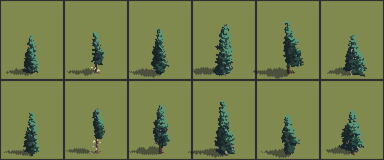
1. voxsim/docs/paint-baseline/trees/individuals_spruce.pngRead: voxsim/docs/paint-baseline/trees/hero_scene.png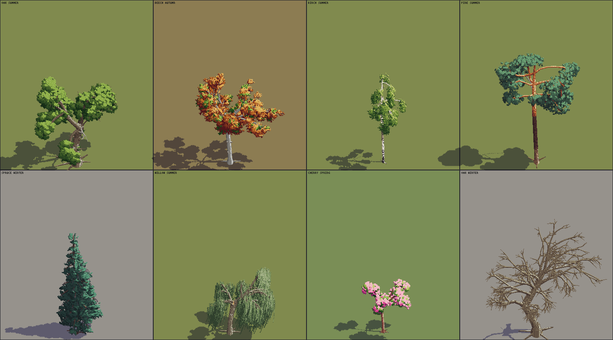
2. voxsim/docs/paint-baseline/trees/hero_scene.pngBash: List pedagogy and Ferrari refs
cd ~/work/pixelart-studies; ls pedagogy pedagogy/*; ls pedagogy/master-copy/ref/lw | head -80; cat exemplars/README.md # output: pedagogy: analysis atelier master-copy observation shared pedagogy/analysis: LESSONS.md img out sheets src pedagogy/atelier: LESSONS.md __pycache__ backdrop_util.py core.py drawing.py figs geometry.py lessons_figs.py lines.py method.py paint.py palette.py ref scene.py sheets stage1 stage1_forms.py stage2 stage2_boulder.py stage3 stage3_setting.py stage4 stage4_material.py stage5 valuemodel.py pedagogy/master-copy: LESSONS.md crops out ref src pedagogy/observation: LESSONS.md __pycache__ blockin.py compare_stats.py contact.py ferrari ferrari_contours.py fetch_refs.py out palette_card.py pix.py refs sheets.py studies studies_profiles.py tarn.py tarn_v1_first_attempt.py translate_studies.py pedagogy/shared: TASK.md ferrari_alpine_tarn_dusk.png V01.json V01.png V02.json V02.png V09.json V09.png V11AM.json V11AM.png V13.json V13.png V14.json V14.png V16.json V16.png V16PM.json V16PM.png V19.json V19.png V19PM.json V19PM.png V29PM.json V29PM.png V30.json V30.png # Exemplars Student paintings that David singled out as having real magic (2026-09-25): "nothing has come close to the magic of our dear students." Worth sitting with before painting anything. - `atelier_boulder_greyscale_form.png`: the atelier student's granite boulder in greyscale (pedagogy/atelier/stage4/zoom_boulder.png). A heavy, turned form in a handful of values. The light plane is broad and flecked, the shadow side is simple and dark, grass overlaps the foot, and the edge is found against the light and lost in the shadow. - `student_boulder_dusk_tarn.png`: a boulder sunk in a dusk grass bank at a tarn (from a student's parameter sheet, later overwritten). One pale lit face against a big dark mass: the form is carried by light and palette with extreme economy. Warm ochre grass strokes, a mirrored dark reflection, and a violet evening key. What they share: big simple masses, few values, the light doing the work, deliberate marks, and patience.
Bash: Inspect ref structure and conifer mentions
cd ~/work/pixelart-studies/pedagogy; ls master-copy/ref master-copy/ref/* | head -60; python3 -c "
import json;d=json.load(open('shared/V19.json'));print(type(d), list(d.keys())[:20] if isinstance(d,dict) else len(d))"; grep -il -E "conifer|spruce|fir|pine" */LESSONS.md
# output:
master-copy/ref/native.png
master-copy/ref:
lw
native.png
master-copy/ref/lw:
V01.json
V01.png
V02.json
V02.png
V09.json
V09.png
V11AM.json
V11AM.png
V13.json
V13.png
V14.json
V14.png
V16.json
V16.png
V16PM.json
V16PM.png
V19.json
V19.png
V19PM.json
V19PM.png
V29PM.json
V29PM.png
V30.json
V30.png
Traceback (most recent call last):
File "<string>", line 2, in <module>
FileNotFoundError: [Errno 2] No such file or directory: 'shared/V19.json'
observation/LESSONS.md
analysis/LESSONS.md
master-copy/LESSONS.md
atelier/LESSONS.mdBash: Inspect Ferrari ref formats
cd ~/work/pixelart-studies/pedagogy/master-copy/ref/lw; python3 -c "
from PIL import Image;import glob,json
for f in sorted(glob.glob('*.png')):
im=Image.open(f); j=json.load(open(f[:-4]+'.json')); print(f, im.size, im.mode, list(j.keys())[:8] if isinstance(j,dict) else type(j))
"; ls ../../../../shared/refs -la
# output:
Exit code 1
Traceback (most recent call last):
File "<string>", line 4, in <module>
File "~/miniconda3/lib/python3.12/json/__init__.py", line 293, in load
return loads(fp.read(),
^^^^^^^^^^^^^^^^
File "~/miniconda3/lib/python3.12/json/__init__.py", line 346, in loads
return _default_decoder.decode(s)
^^^^^^^^^^^^^^^^^^^^^^^^^^
File "~/miniconda3/lib/python3.12/json/decoder.py", line 337, in decode
obj, end = self.raw_decode(s, idx=_w(s, 0).end())
^^^^^^^^^^^^^^^^^^^^^^^^^^^^^^^^^^^^^^
File "~/miniconda3/lib/python3.12/json/decoder.py", line 353, in raw_decode
obj, end = self.scan_once(s, idx)
^^^^^^^^^^^^^^^^^^^^^^
json.decoder.JSONDecodeError: Expecting property name enclosed in double quotes: line 1 column 2 (char 1)
ls: -la: No such file or directory
../../../../shared/refs:
ferrari_alpine_tarn_dusk.png
ferrari_mossy_forest_pool.png
ferrari_snow_forest_boulders.webpBash: Inspect json and willow's lw reader
cd ~/work/pixelart-studies/pedagogy/master-copy/ref/lw; head -c 400 V19.json; echo; python3 -c "
from PIL import Image;import glob
for f in sorted(glob.glob('*.png')):
im=Image.open(f); print(f, im.size, im.mode)
"; cat ../../../../elements/willow/lw.py | head -60
# output:
{filename:'V19.LBM',width:640,height:480,colors:[[0,0,0],[227,227,255],[211,219,255],[207,215,255],[187,211,255],[167,207,255],[143,207,255],[115,203,255],[87,195,255],[83,183,251],[79,171,247],[75,159,243],[75,147,239],[75,139,235],[71,127,235],[75,111,231],[75,95,227],[79,79,227],[255,255,255],[255,255,255],[255,255,255],[255,255,255],[243,187,135],[243,187,135],[171,183,247],[239,159,159],[187,
V01.png (640, 480) RGB
V02.png (640, 480) RGB
V09.png (640, 480) RGB
V11AM.png (640, 480) RGB
V13.png (640, 480) RGB
V14.png (640, 480) RGB
V16.png (640, 480) RGB
V16PM.png (640, 480) RGB
V19.png (640, 480) RGB
V19PM.png (640, 480) RGB
V29PM.png (640, 480) RGB
V30.png (640, 480) RGB
"""Load Ferrari's Living Worlds scenes as index maps (format from the Canvas Cycle demo)."""
import re, json, numpy as np
REF = "~/work/pixelart-studies/pedagogy/master-copy/ref/lw"
def load(name):
t = open(f"{REF}/{name}.json").read()
t = re.sub(r'([{,])\s*([A-Za-z_]+)\s*:', r'\1"\2":', t).replace("'", '"')
d = json.loads(t)
d["pal"] = np.array(d["colors"], dtype=np.uint8)
d["idx"] = np.array(d["pixels"], dtype=np.int32).reshape(d["height"], d["width"])
return d
def lum(rgb):
rgb = np.asarray(rgb, float)
return 0.2126 * rgb[..., 0] + 0.7152 * rgb[..., 1] + 0.0722 * rgb[..., 2]Let me view the Ferrari scenes to find conifer passages.
Bash: Contact sheet of Ferrari scenes
mkdir -p ~/work/pixelart-studies/elements/conifers/{refs,stage0,tmp}; cd ~/work/pixelart-studies/pedagogy/master-copy/ref/lw; python3 -c "
from PIL import Image;import glob
fs=sorted(glob.glob('*.png'))
W=Image.new('RGB',(640*3,480*4))
for i,f in enumerate(fs): W.paste(Image.open(f),((i%3)*640,(i//3)*480))
W.save('~/work/pixelart-studies/elements/conifers/tmp/lw_all.png'); print(fs)"
# output:
['V01.png', 'V02.png', 'V09.png', 'V11AM.png', 'V13.png', 'V14.png', 'V16.png', 'V16PM.png', 'V19.png', 'V19PM.png', 'V29PM.png', 'V30.png']Read: elements/conifers/tmp/lw_all.png3. elements/conifers/tmp/lw_all.png
Bash: Master-copy notes on conifers
cd ~/work/pixelart-studies/pedagogy; grep -n -i -B2 -A12 "conifer\|spire\|spruce" master-copy/LESSONS.md | head -150 # output: 55-**The rock mass** is dark violet, broken by an irregular checker of mid violet in patches. It is not a uniform checker; my first version was, and it looked mechanical. Lit colour goes almost only on the crest rim facing the sun, 1–2 px of hot orange. Just inside the rim there is a broken **echo** line 2–3 px lower, parallel to the crest: a stacked lit ledge. The shadow-side crest keeps a 1-px mid outline so the edge reads against the sky. Snow in shade is the sky's own lilac and sun-struck snow is the sky's own peach, so the palette is shared between materials. The highest rock catches the most light (alpenglow). 56- 57:**The pines** are a 1-px spire for about 4 rows, then crosses on every other row. Tiers of long branches come every 4–5 rows, the half-width is about 1 + 0.15·d, and roughly 15–20% of the canopy is holes. Lit ochre sits on the ends of branches on the sun side, sparse in the interior. 58- 59-**Craft**, added after the critic's note: a ridge is not a noisy curve. It is short straight runs with regular 1:1, 2:1 and 1:2 steps. `fl.clean_curve()` snaps every segment of a copyist's polyline to a clean slope. 60- 61-Final: blurLab 6.6, hist 0.44. **Remaining gap:** Ferrari's rock has fall-line gullies with lit edges that I only approximate, and his pines carry more ochre and fuller tiers than mine. 62- 63-### Copy 2: the lit grass mound (the island) (`src/c2_mound.py`, crop (255,255,160,55)) 64- 65- 66-Read straight off the index map, the mound is **four form classes in a fixed spatial order: reflected light | core shadow | halftone | lit** (dusk colours (60,63,45) | (28,31,20) | (106,80,40) | (196,134,76)). The reflected light on the far edge is *lighter* than the core shadow beside it, which is the classical painter's order. 67- 68-- **Width of the transitions.** The class coordinate drifts almost linearly across the mound, about 40 px per class. The transitions are as wide as the classes, so no zone is pure: the largest single-class share anywhere is about 0.75, and three classes can mix in one place. That is modelled as `fl.scatter()`: class = round(u + 0.5·N). 69-- **The dither is not plain white noise.** Measured neighbour-difference rates: shadow-side mixes are about 0.6 against 0.5 for random, so they are checker-biased. Lit-side mixes are about 0.4, so they are clumped, because sunlit tufts catch light in small groups. This is `fl.threshold_field(checker, grain)`.
Bash: List master-copy outputs
cd ~/work/pixelart-studies/pedagogy/master-copy/out; ls; python3 -c "from PIL import Image;print(Image.open('cmp_c1.png').size)"
# output:
cell_10m_right_3x.png
cell_close_back_3x.png
cell_close_left_3x.png
cell_large_front_3x.png
cmp_c1.png
cmp_c2.png
cmp_c3.png
cmp_c3_far.png
cmp_c4.png
cmp_c4_bank.png
cmp_c5.png
copy_c1.png
copy_c2.png
copy_c3.png
copy_c4.png
copy_c5.png
honest_compare.png
palette_tarn.png
sheet_distance_light.png
sheet_distance_light_3x.png
sheet_seeds.png
sheet_seeds_3x.png
sheet_size_distance.png
sheet_size_distance_3x.png
sheet_size_light.png
sheet_size_light_3x.png
(972, 860)Read: pedagogy/master-copy/out/cmp_c1.png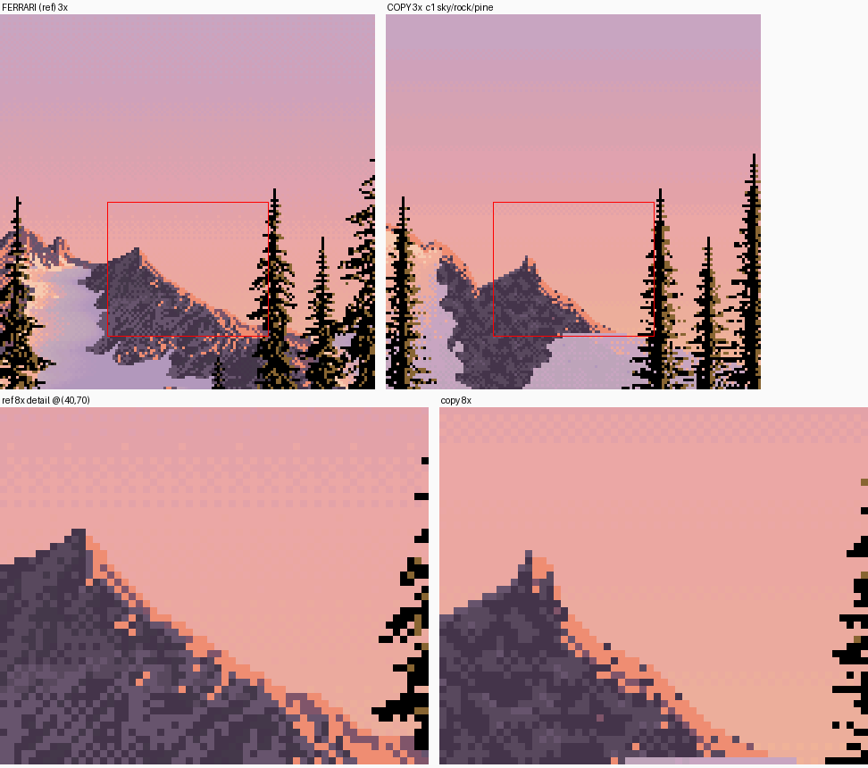
4. pedagogy/master-copy/out/cmp_c1.pngBash: Crop V19 conifers at 4x
cd ~/work/pixelart-studies/elements/conifers; python3 -c "
from PIL import Image
im=Image.open('~/work/pixelart-studies/pedagogy/master-copy/ref/lw/V19.png')
im.crop((0,0,160,240)).resize((640,960),Image.NEAREST).save('tmp/v19_left4.png')
im.crop((500,0,640,240)).resize((560,960),Image.NEAREST).save('tmp/v19_right4.png')
"
# output:
(Bash completed with no output)Read: elements/conifers/tmp/v19_left4.png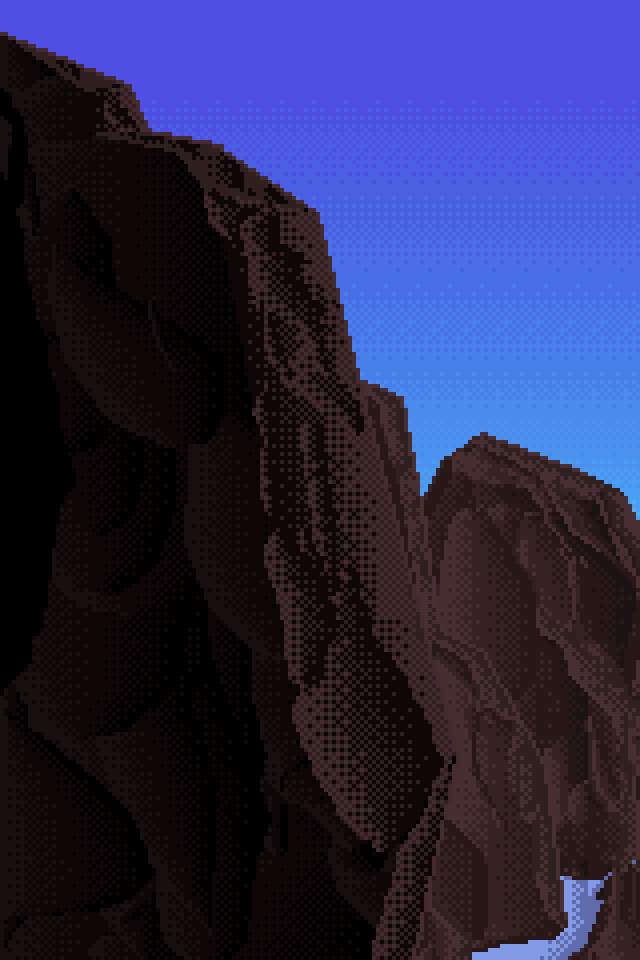
5. elements/conifers/tmp/v19_left4.pngRead: elements/conifers/tmp/v19_right4.png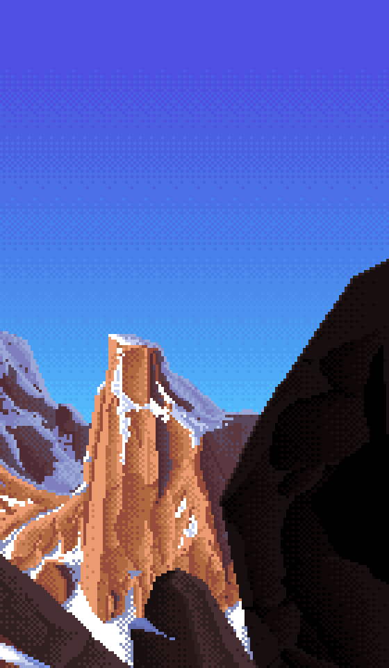
6. elements/conifers/tmp/v19_right4.pngBash: Crop V16 conifers
cd ~/work/pixelart-studies/elements/conifers; python3 -c "
from PIL import Image
im=Image.open('~/work/pixelart-studies/pedagogy/master-copy/ref/lw/V16.png')
im.crop((0,0,160,260)).resize((640,1040),Image.NEAREST).save('tmp/v16_left4.png')
im.crop((480,0,640,260)).resize((640,1040),Image.NEAREST).save('tmp/v16_right4.png')
im.crop((100,0,300,260)).resize((600,780),Image.NEAREST).save('tmp/v16_mid3.png')
"
# output:
(Bash completed with no output)Read: elements/conifers/tmp/v16_right4.png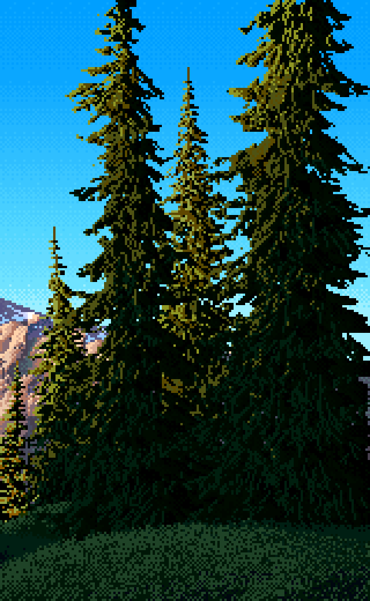
7. elements/conifers/tmp/v16_right4.pngRead: elements/conifers/tmp/v16_left4.png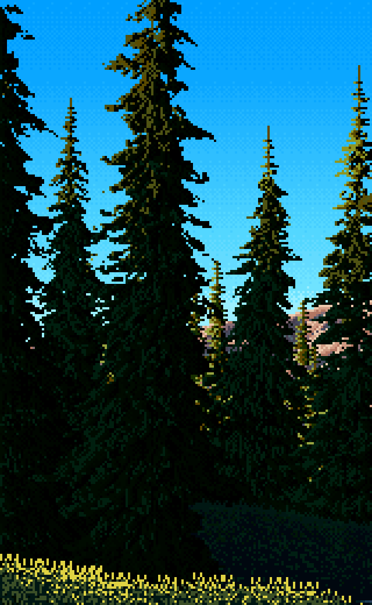
8. elements/conifers/tmp/v16_left4.pngBash: Analyze V16 palette in conifer crop
cd ~/work/pixelart-studies/elements/conifers; cp ../willow/lw.py . ; python3 -c "
import lw,numpy as np
from PIL import Image
d=lw.load('V16'); idx=d['idx']; pal=d['pal']
print(d.keys()); print(len(pal)); print(d.get('cycles'))
sub=idx[0:90,560:640]; u,c=np.unique(sub,return_counts=True)
for a,b in sorted(zip(c,u))[::-1][:30]: print(b,pal[b],a, int(lw.lum(pal[b])))
im=Image.fromarray(pal[idx].astype(np.uint8))
im.crop((560,0,640,90)).resize((800,900),Image.NEAREST).save('tmp/v16_rt10.png')
im.crop((60,100,140,190)).resize((800,900),Image.NEAREST).save('tmp/v16_lmid10.png')
"
# output:
dict_keys(['filename', 'width', 'height', 'colors', 'cycles', 'pixels', 'pal', 'idx'])
256
[{'reverse': 0, 'rate': 0, 'low': 1, 'high': 11}, {'reverse': 0, 'rate': 0, 'low': 6, 'high': 17}, {'reverse': 0, 'rate': 0, 'low': 86, 'high': 87}, {'reverse': 0, 'rate': 1842, 'low': 104, 'high': 111}, {'reverse': 0, 'rate': 1380, 'low': 92, 'high': 97}, {'reverse': 0, 'rate': 1380, 'low': 98, 'high': 103}, {'reverse': 0, 'rate': 1842, 'low': 112, 'high': 119}, {'reverse': 0, 'rate': 1842, 'low': 120, 'high': 127}, {'reverse': 0, 'rate': 1842, 'low': 128, 'high': 135}, {'reverse': 0, 'rate': 1842, 'low': 136, 'high': 143}, {'reverse': 0, 'rate': 1842, 'low': 144, 'high': 151}, {'reverse': 0, 'rate': 1842, 'low': 152, 'high': 159}, {'reverse': 0, 'rate': 1842, 'low': 192, 'high': 199}, {'reverse': 0, 'rate': 1842, 'low': 200, 'high': 207}, {'reverse': 0, 'rate': 1842, 'low': 208, 'high': 215}, {'reverse': 0, 'rate': 1842, 'low': 216, 'high': 223}]
60 [ 0 11 0] 1006 7
10 [ 11 167 255] 931 140
61 [0 7 0] 856 5
11 [ 0 159 255] 801 132
62 [0 0 0] 760 0
73 [79 83 19] 614 77
8 [ 35 183 255] 434 156
9 [ 23 175 255] 383 148
58 [143 151 35] 322 140
7 [ 47 191 255] 286 165
63 [91 75 0] 240 72
6 [ 59 199 255] 231 173
55 [95 71 0] 101 70
5 [ 71 207 255] 95 181
59 [ 0 31 15] 80 23
54 [151 163 63] 59 153
4 [ 83 215 255] 1 189Read: elements/conifers/tmp/v16_rt10.pngRead: elements/conifers/tmp/v16_lmid10.png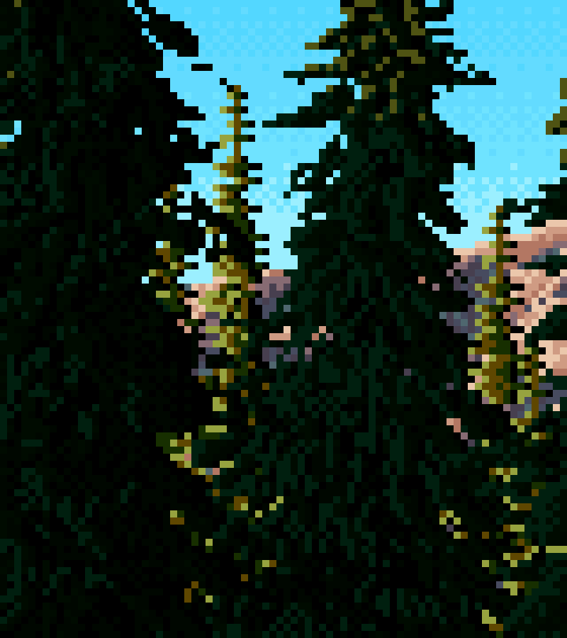
9. elements/conifers/tmp/v16_lmid10.png 10. elements/conifers/tmp/v16_rt10.png
10. elements/conifers/tmp/v16_rt10.png
Bash: Survey naturalist guides
cd ~/work/naturalist; ls; ls plants questions shared letters 2>/dev/null | head -50; grep -ril -E "hemlock|redcedar|douglas" . | head -30 # output: README.md animals geo hydro letters people plants questions shared letters: plants: data photos tools questions: shared: plants/photos/q.txt plants/photos/Douglas_fir_old_growth_forest_Washington/sources.tsv plants/photos/western_hemlock_forest_understory_sword_/sources.tsv plants/data/LF2024_EVT.csv animals/sources/bear2023.txt animals/sources/olympic_elk_plan.txt animals/photos/fetch.sh animals/sources/bear2025.txt
Bash: Read naturalist README and plant photos
cd ~/work/naturalist; cat README.md | head -60; ls plants/photos; for d in plants/photos/*/; do echo "$d $(ls $d | wc -l)"; done # output: # Naturalists' studio: Washington State as our reference world Five researchers, working as a community, study the real Washington State (the Olympic Peninsula, the Puget lowlands and the Cascades). They explain it to the people building **voxsim**, a simulated world of geology, water, plants, animals and people, painted in pixel art. - geo/: geology and geomorphology - hydro/: hydrology and rivers - plants/: plant ecology and vegetation - animals/: animal ecology - people/: human ecology and lifeways ## Scope: all of Washington State's landscapes Not just the Olympics and Puget lowlands. Cover the whole range, each with its own geology, water, plants, animals and people: - the outer Pacific coast; - the temperate rainforest of the western Olympics (Hoh, Queets, Quinault); - the alpine zones of the Olympics and Cascades; - meadows of every kind (subalpine, wet, dry and prairie, e.g. the South Sound prairies); - riparian areas and the littoral of the Salish Sea (Puget Sound, Hood Canal, the San Juan Islands); - the dry east of the Cascades, which is varied in itself: ponderosa pine foothills, shrub-steppe, the Channeled Scablands and Palouse, basalt coulees, and the Columbia and Snake rivers. **Human ecology and the built environment target Washington before European contact:** Indigenous lifeways, settlements and structures across all these regions (coastal plank-house villages, interior pit houses and mat lodges, seasonal camps, fishing sites). Write respectfully and from scholarly and tribal sources. ## Community - **letters/:** numbered letters between researchers, never edited once written (e.g. `007-hydro-to-geo-sediment-supply.md`). Read everyone's, answer freely, and argue when you disagree. - **questions/:** questions from the sim and render lanes. Answer by writing `<n>-answer-<you>.md` beside the question. Anyone may answer. - **shared/:** a shared glossary, cross-cutting guides (e.g. "what happens after a landslide", which touches all five), and the reference-area map. ## Audiences 1. **Sim lanes:** the Rust crates vox-geo, vox-hydro, vox-flora, vox-fauna and vox-human in ~/work/voxsim/crates (read their NOTES.md). They need processes, rates, thresholds, what drives what, and what matters at the sim's scales (0.5 m voxels, one sim-minute ticks, worlds a few km across). 2. **Painters:** the render and biome lanes, and the art students in ~/work/pixelart-studies. They need what things look like at each distance (close, 10 m, 100 m, 1 km, from the air), in every season and light, with pointers to good photos (~/work/pixelart-studies/tools/imgfetch.py fetches them). ## Reference data already on disk (~/work/voxsim-data, ~7 GB) - 3DEP elevation (10 m basin-wide, 1 m lidar around the Skokomish/Lake Cushman); - WA DNR geology (1:100k and 1:24k) and the landslide inventory; - NHDPlus HR hydrography; - ESA WorldCover land cover. The notes are in ~/work/voxsim/docs/lod-scouting.md. The prototype area is UTM10 x474–490 km, y5244–5260 km (
Bash: Check imgfetch usage
sed -n 1,40p ~/work/pixelart-studies/tools/imgfetch.py; python3 ~/work/pixelart-studies/tools/imgfetch.py -h 2>&1 | tail -20
# output:
#!/usr/bin/env python3
"""imgfetch: fast, polite reference-image sourcing (Wikimedia Commons + Openverse).
python3 imgfetch.py "cinder cone scoria slope" -n 12 -o refs/cinder
python3 imgfetch.py -f queries.txt -n 8 -o refs # one query per line; subdir per query
options: --src commons,openverse --width 1200 --sheet (writes <out>/_sheet.jpg)
Writes images plus <out>/sources.tsv (file, title, license, author, page url).
Cached: files already present are skipped. Handles 429/5xx with Retry-After backoff.
Parallel downloads (4 workers) with a shared per-host rate limiter (~3 req/s; Wikimedia's media
host is kept to 1 per 2 s and slows further on any 429, since it throttles hard per IP after bursts).
Openverse (mostly Flickr-hosted CC images) is the primary source because it stays fast.
"""
import argparse, concurrent.futures as cf, json, os, re, sys, threading, time, urllib.error, urllib.parse, urllib.request
UA = "pixelart-studies-imgfetch/1.0 (research; contact: local)"
_locks = {}; _last = {}; _glock = threading.Lock()
SLOW_HOSTS = {"upload.wikimedia.org": 2.0} # Wikimedia media host: ~1 req/s or it 429s
def _throttle(host, min_gap=0.34):
min_gap = SLOW_HOSTS.get(host, min_gap)
with _glock:
lk = _locks.setdefault(host, threading.Lock())
with lk:
dt = time.time() - _last.get(host, 0)
if dt < min_gap:
time.sleep(min_gap - dt)
_last[host] = time.time()
def get(url, tries=4, timeout=25):
host = urllib.parse.urlparse(url).netloc
if host == "upload.wikimedia.org":
tries = 2 # fail fast; other sources fill in
for i in range(tries):
_throttle(host)
try:
req = urllib.request.Request(url, headers={"User-Agent": UA})
return urllib.request.urlopen(req, timeout=timeout).read()
except urllib.error.HTTPError as e:
usage: imgfetch.py [-h] [-f FILE] [-n N] [-o OUT] [--src SRC] [--width WIDTH]
[--sheet]
[query]
positional arguments:
query
options:
-h, --help show this help message and exit
-f FILE, --file FILE
-n N
-o OUT, --out OUT
--src SRC
--width WIDTH
--sheetBash: Fetch reference photos for four species
cd ~/work/pixelart-studies/elements/conifers/refs; cat > q.txt <<'EOF' western hemlock tree drooping leader western hemlock Tsuga heterophylla branches western redcedar tree Thuja plicata western red cedar buttress trunk base western red cedar foliage sprays old growth Douglas fir trunk bark Douglas fir tree crown Sitka spruce tree Olympic Sitka spruce branches needles Hoh rainforest old growth Pacific Northwest conifer forest aerial old growth forest canopy Olympic National Park young Douglas fir sapling conifer forest hillside Washington fog EOF timeout 900 python3 ~/work/pixelart-studies/tools/imgfetch.py -f q.txt -n 10 -o . --src openverse --sheet 2>&1 | tail -20; ls # output: (eval):17: command not found: timeout q.txt
Bash: Fetch reference photos
cd ~/work/pixelart-studies/elements/conifers/refs; python3 ~/work/pixelart-studies/tools/imgfetch.py -f q.txt -n 10 -o . --src openverse --sheet 2>&1 | tail -20; ls # output: download failed: HTTP Error 429: Too many requests - please contact noc@wikimedia.org to discuss a less disruptive approach or instead use thumbnail images in sizes listed on https://w.wiki/GHai. (0c640b1) download failed: HTTP Error 429: Too many requests - please contact noc@wikimedia.org to discuss a less disruptive approach or instead use thumbnail images in sizes listed on https://w.wiki/GHai. (0c640b1) download failed: HTTP Error 403: Forbidden download failed: HTTP Error 429: Too many requests - please contact noc@wikimedia.org to discuss a less disruptive approach or instead use thumbnail images in sizes listed on https://w.wiki/GHai. (0c640b1) download failed: HTTP Error 429: Too many requests - please contact noc@wikimedia.org to discuss a less disruptive approach or instead use thumbnail images in sizes listed on https://w.wiki/GHai. (0c640b1) download failed: HTTP Error 429: Too many requests - please contact noc@wikimedia.org to discuss a less disruptive approach or instead use thumbnail images in sizes listed on https://w.wiki/GHai. (0c640b1) 'western hemlock tree drooping leader': 9 images -> ./western_hemlock_tree_drooping_leader 'western hemlock Tsuga heterophylla branches': 8 images -> ./western_hemlock_Tsuga_heterophylla_branc 'western redcedar tree Thuja plicata': 9 images -> ./western_redcedar_tree_Thuja_plicata 'western red cedar buttress trunk base': 10 images -> ./western_red_cedar_buttress_trunk_base 'western red cedar foliage sprays': 10 images -> ./western_red_cedar_foliage_sprays 'old growth Douglas fir trunk bark': 10 images -> ./old_growth_Douglas_fir_trunk_bark 'Douglas fir tree crown': 9 images -> ./Douglas_fir_tree_crown 'Sitka spruce tree Olympic': 10 images -> ./Sitka_spruce_tree_Olympic 'Sitka spruce branches needles': 8 images -> ./Sitka_spruce_branches_needles 'Hoh rainforest old growth': 10 images -> ./Hoh_rainforest_old_growth 'Pacific Northwest conifer forest aerial': 10 images -> ./Pacific_Northwest_conifer_forest_aerial 'old growth forest canopy Olympic National Park': 10 images -> ./old_growth_forest_canopy_Olympic_Nationa 'young Douglas fir sapling': 10 images -> ./young_Douglas_fir_sapling 'conifer forest hillside Washington fog': 8 images -> ./conifer_forest_hillside_Washington_fog Douglas_fir_tree_crown Hoh_rainforest_old_growth Pacific_Northwest_conifer_forest_aerial Sitka_spruce_branches_needles Sitka_spruce_tree_Olympic conifer_forest_hillside_Washington_fog old_growth_Douglas_fir_trunk_bark old_growth_forest_canopy_Olympic_Nationa q.txt western_hemlock_Tsuga_heterophylla_branc western_hemlock_tree_drooping_leader western_red_cedar_buttress_trunk_base western_red_cedar_foliage_sprays western_redcedar_tree_Thuja_plicata young_Douglas_fir_sapling
Now let me look at the contact sheets.
Read: elements/conifers/refs/western_hemlock_tree_drooping_leader/_sheet.jpg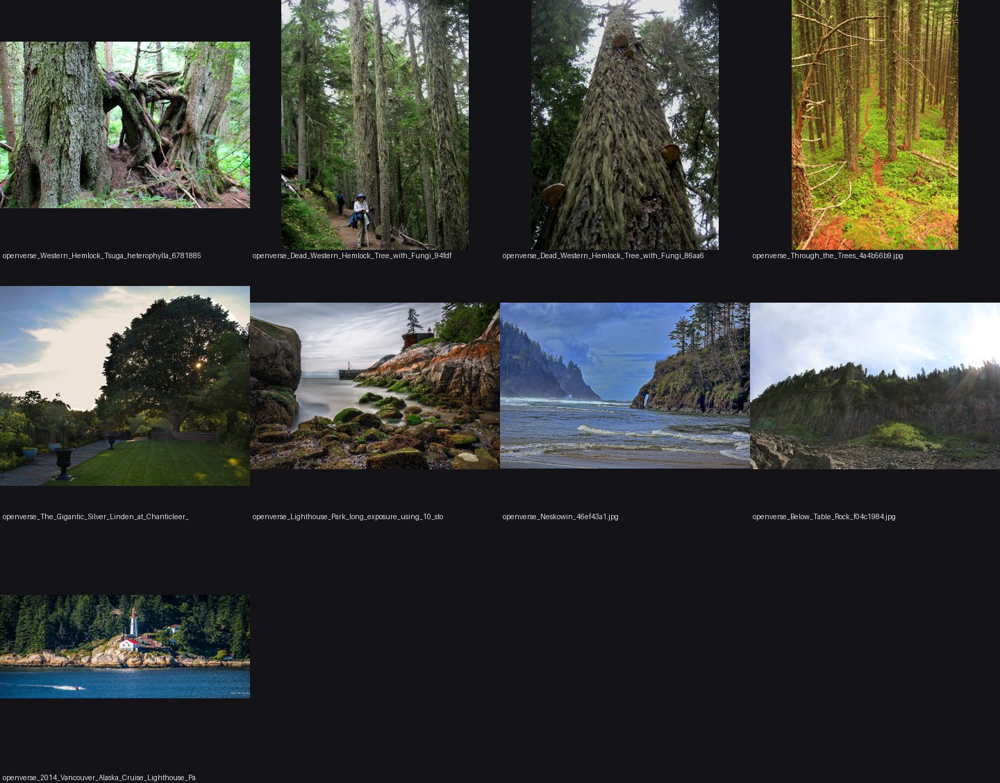
11. elements/conifers/refs/western_hemlock_tree_drooping_leader/_sheet.jpgRead: elements/conifers/refs/western_redcedar_tree_Thuja_plicata/_sheet.jpg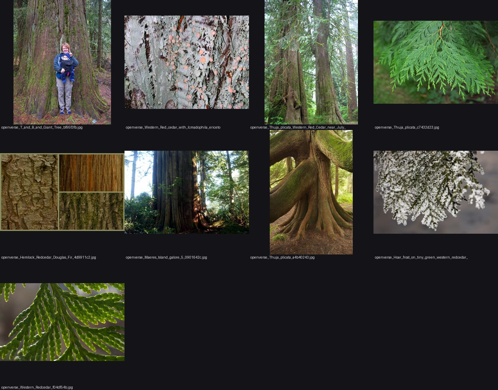
12. elements/conifers/refs/western_redcedar_tree_Thuja_plicata/_sheet.jpgRead: elements/conifers/refs/Douglas_fir_tree_crown/_sheet.jpg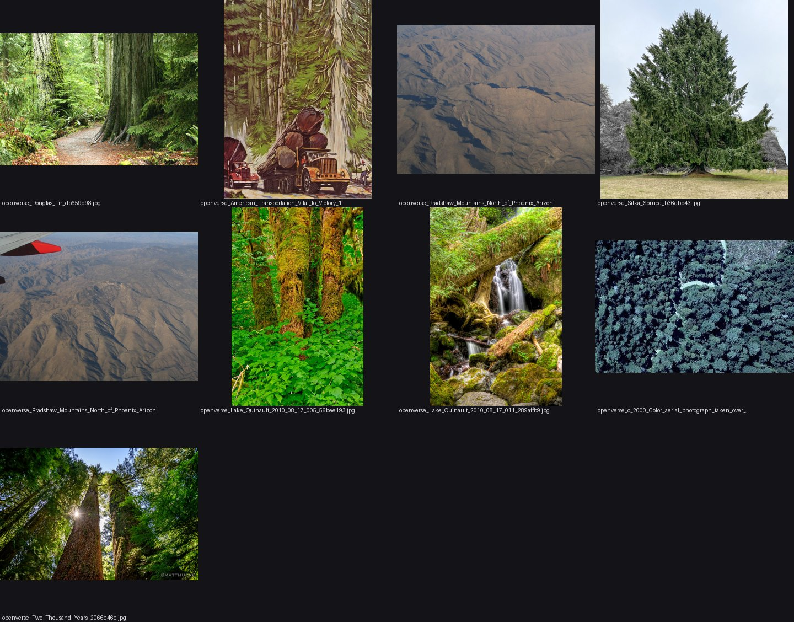
13. elements/conifers/refs/Douglas_fir_tree_crown/_sheet.jpgRead: elements/conifers/refs/Sitka_spruce_tree_Olympic/_sheet.jpg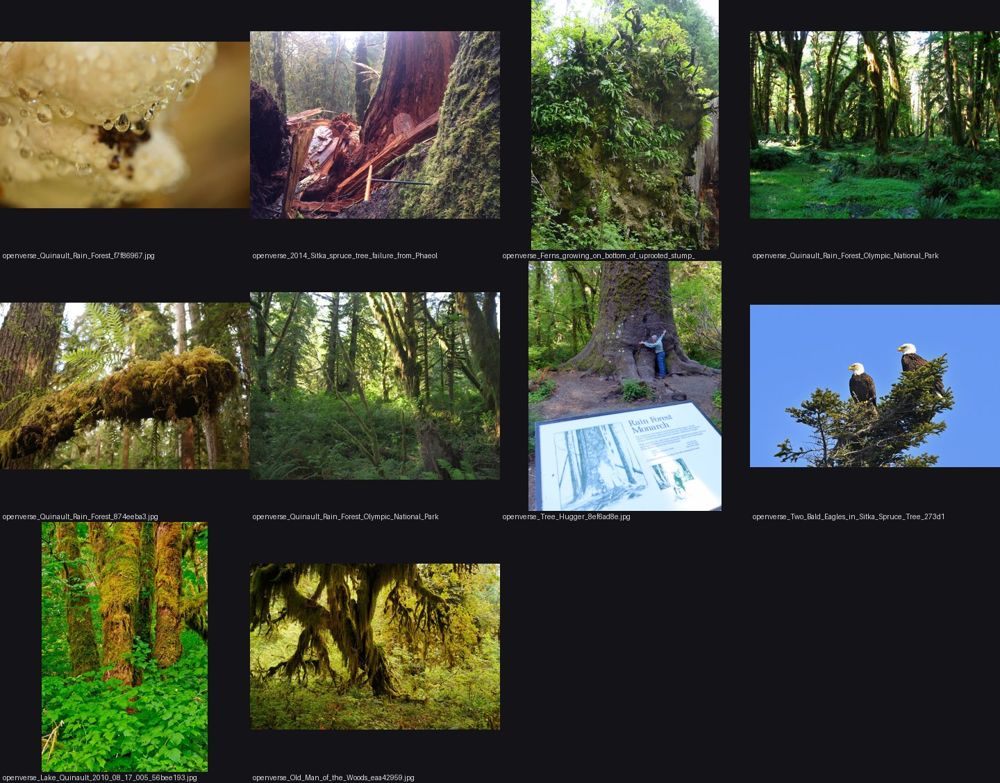
14. elements/conifers/refs/Sitka_spruce_tree_Olympic/_sheet.jpgBash: Fetch Latin-name refs from Commons
cd ~/work/pixelart-studies/elements/conifers/refs; cat > q2.txt <<'EOF' Tsuga heterophylla Pseudotsuga menziesii tree Picea sitchensis tree Thuja plicata Pseudotsuga menziesii bark EOF python3 ~/work/pixelart-studies/tools/imgfetch.py -f q2.txt -n 12 -o . --src commons --sheet 2>&1 | grep -v "download failed" | tail -8 # output: [commons] search 'Pseudotsuga menziesii' failed: HTTP Error 429: Too Many Requests 'Tsuga heterophylla': 12 images -> ./Tsuga_heterophylla 'Pseudotsuga menziesii tree': 9 images -> ./Pseudotsuga_menziesii_tree 'Picea sitchensis tree': 8 images -> ./Picea_sitchensis_tree 'Thuja plicata': 12 images -> ./Thuja_plicata 'Pseudotsuga menziesii bark': 10 images -> ./Pseudotsuga_menziesii_bark
Read: elements/conifers/refs/Tsuga_heterophylla/_sheet.jpg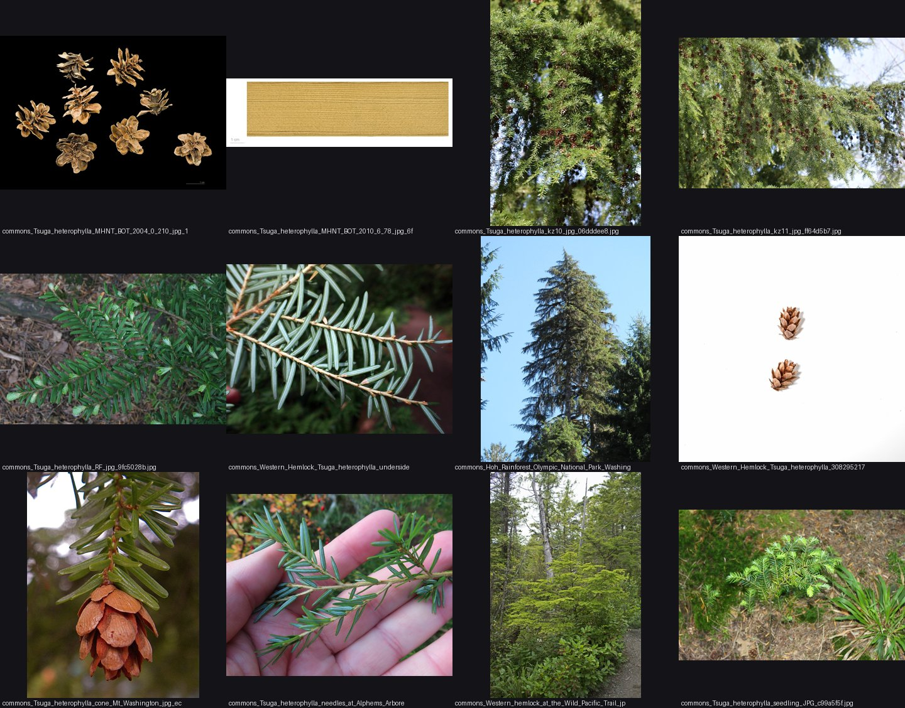
15. elements/conifers/refs/Tsuga_heterophylla/_sheet.jpgRead: elements/conifers/refs/Pseudotsuga_menziesii_tree/_sheet.jpg 16. elements/conifers/refs/Pseudotsuga_menziesii_tree/_sheet.jpg
16. elements/conifers/refs/Pseudotsuga_menziesii_tree/_sheet.jpg
Read: elements/conifers/refs/Picea_sitchensis_tree/_sheet.jpg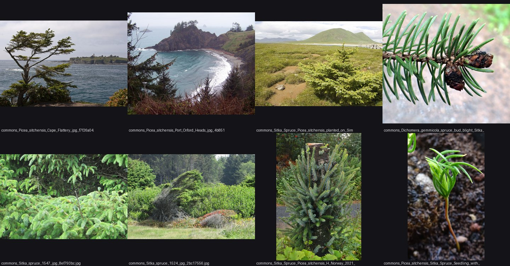
17. elements/conifers/refs/Picea_sitchensis_tree/_sheet.jpgRead: elements/conifers/refs/Thuja_plicata/_sheet.jpg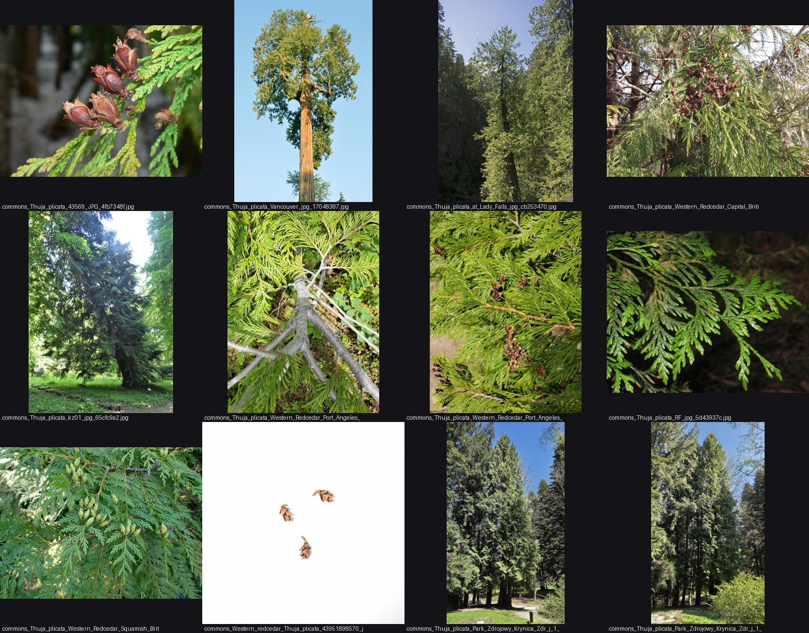
18. elements/conifers/refs/Thuja_plicata/_sheet.jpgBash: V16 top half at 2x
cd ~/work/pixelart-studies/elements/conifers; python3 -c "
from PIL import Image
im=Image.open('~/work/pixelart-studies/pedagogy/master-copy/ref/lw/V16.png')
im.crop((0,0,640,300)).resize((1280,600),Image.NEAREST).save('tmp/v16_top2.png')
"
# output:
(Bash completed with no output)Read: elements/conifers/tmp/v16_top2.png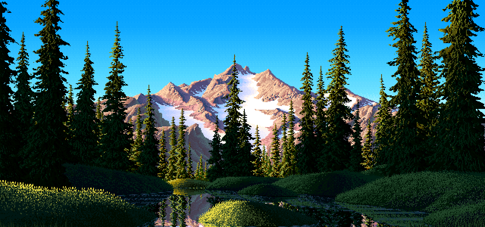
19. elements/conifers/tmp/v16_top2.pngBash: Zoom mid-distance tree C1
cd ~/work/pixelart-studies/elements/conifers; python3 -c "
import lw,numpy as np
from PIL import Image
d=lw.load('V16'); idx=d['idx']; pal=d['pal']
im=Image.fromarray(pal[idx].astype(np.uint8))
im.crop((420,30,480,130)).resize((480,800),Image.NEAREST).save('tmp/c1a_8x.png')
im.crop((420,130,480,235)).resize((480,840),Image.NEAREST).save('tmp/c1b_8x.png')
sub=idx[30:235,420:480]; u,c=np.unique(sub,return_counts=True)
for a,b in sorted(zip(c,u))[::-1][:30]: print(b,pal[b],a, int(lw.lum(pal[b])))
"
# output:
62 [0 0 0] 1863 0
61 [0 7 0] 1550 5
60 [ 0 11 0] 1036 7
59 [ 0 31 15] 834 23
9 [ 23 175 255] 593 148
8 [ 35 183 255] 583 156
10 [ 11 167 255] 578 140
7 [ 47 191 255] 534 165
6 [ 59 199 255] 455 173
5 [ 71 207 255] 421 181
4 [ 83 215 255] 405 189
73 [79 83 19] 395 77
3 [ 99 219 255] 383 196
58 [143 151 35] 269 140
72 [ 0 31 19] 231 23
54 [151 163 63] 211 153
63 [91 75 0] 203 72
2 [111 227 255] 161 204
55 [95 71 0] 141 70
71 [ 0 7 15] 129 6
70 [ 0 23 7] 123 16
38 [235 199 171] 114 204
19 [219 171 147] 105 179
18 [255 211 171] 99 217
39 [207 155 131] 90 164
37 [255 255 255] 75 254
40 [179 119 99] 73 130
23 [ 87 83 131] 64 87
42 [71 63 79] 53 65
232 [ 95 95 135] 52 97Read: elements/conifers/tmp/c1a_8x.png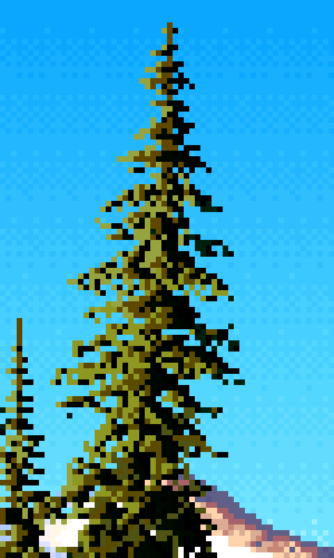
20. elements/conifers/tmp/c1a_8x.pngRead: elements/conifers/tmp/c1b_8x.png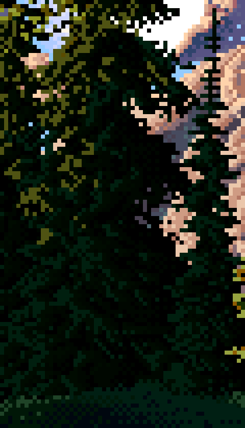
21. elements/conifers/tmp/c1b_8x.pngNow let me look at the atelier and analysis lessons briefly for conifer-relevant notes, then start coding.
Bash: Grep other lessons for conifer notes
cd ~/work/pixelart-studies/pedagogy; grep -n -i -B1 -A6 "conifer\|spruce\|pine\|fir " analysis/LESSONS.md observation/LESSONS.md atelier/LESSONS.md | head -120; ls ../elements/_critic/r9 | head; tail -40 ../elements/_critic/LOG.md # output: observation/LESSONS.md-159-- a bank heightfield with 3–4 m hummocks and 1 m tussocks; observation/LESSONS.md:160:- a near bank and a promontory lip, and the tarn out to a far shore 70–110 m away with conifers observation/LESSONS.md-161- (mark-painted, heights in metres) and three layers of faceted peaks. observation/LESSONS.md-162- observation/LESSONS.md-163-Light model: sun at 4.5°; sun colour warm orange; sky fill violet; bounce from lit grass, observation/LESSONS.md-164-arriving from below and away from the sun; soft shadows (grass visibility tested from the blade observation/LESSONS.md-165-tops); AO; blade translucency when back-lit. The water is a rippled Fresnel mirror that observation/LESSONS.md-166-ray-traces the scene again. atelier/LESSONS.md-6- atelier/LESSONS.md:7:**Research, and its limits.** I studied Ferrari's `ferrari_alpine_tarn_dusk.png` closely: atelier/LESSONS.md-8-- palette statistics; atelier/LESSONS.md-9-- crops at his native pixel scale (the file is his 634×469 frame doubled); atelier/LESSONS.md-10-- measured run lengths of his contours. atelier/LESSONS.md-11- atelier/LESSONS.md-12-I read his Q&A (EffectGames) on: atelier/LESSONS.md-13-- palette economy; -- atelier/LESSONS.md-75-- its far shore recedes back-left; atelier/LESSONS.md:76:- the far bank, spruce and mountains lie 150–200 m off. atelier/LESSONS.md-77- atelier/LESSONS.md-78-Being that far away, they live in a *direction-only* backdrop, so their reflection is automatically the mirror image about the horizon, as it is in nature. atelier/LESSONS.md-79- atelier/LESSONS.md-80-What I learned: atelier/LESSONS.md-81-- **Design the notan of the whole picture; don't let the renderer choose it.** In the first honest notan, land and water were the same middle value and the picture could not be read. Ferrari's pattern is: atelier/LESSONS.md-82- - light sky and water; -- atelier/LESSONS.md-133-- **Mountains** are now a few massifs with straight flanks (2:1, 1:1, 3:1 slopes). Their facets fan from each summit along clean ratios, and the snowline is a triangle wave, so the couloirs are clean zigzags. My noise-based mountains before this looked like curtains, scratches and, at one point, a city skyline. atelier/LESSONS.md:134:- **Spruce** are built from pixel strokes, the way his are: a 1-px leader with ticks at the tip, then tiers of drooping branch strokes (a flat run that steps down once at its end) round a solid core, with lit branch ends on the sun side. atelier/LESSONS.md-135- atelier/LESSONS.md-136-## Stage 5: colour last atelier/LESSONS.md-137- atelier/LESSONS.md-138- atelier/LESSONS.md-139- atelier/LESSONS.md-140- -- atelier/LESSONS.md-168-| value | `valuemodel.py`, `scene.py` | numpy SDF ray-march; six-step value plan (families kept apart, core, reflected light, contact occlusion, keyed grass); water = reflection × Fresnel; backdrop of sky gradient + sun glow, faceted massif
Time to build. First the geometry and renderer core.
Write: elements/conifers/tree.py
"""Conifer geometry in metres: trunk, branches, and foliage points (sprays).
A tree is built the way it grows: a trunk (with lean, taper, buttress flare), branches set along
it in whorls or scattered, each branch a curve with species-specific droop/upsweep, and foliage
as *sprays* strung along the outer part of each branch. Each spray is sampled as points that
carry: position, spray normal (flat sprays face up-ish), a stroke direction (how the mark is
drawn), branch id and tier id (for clump light), and "pad" coordinates that say where in the
branch's foliage pad the point sits (top/underside/tip), which the painter turns into light.
y is up. x right, z toward the viewer.
"""
import numpy as np
from dataclasses import dataclass, field
GOLD = np.pi * (3 - np.sqrt(5))
@dataclass
class Species:
name: str
# crown silhouette: radius(t) for t in [0,1] from crown base to top, as r_max * f(t)
crown_pow: float = 1.0 # 1 = cone; <1 = fuller (bullet); >1 = concave spire
crown_round_top: float = 0.0 # 0 = pointed; 1 = flat/round top (old growth)
crown_ratio: float = 0.6 # crown length / height (young trees override)
rmax_frac: float = 0.18 # crown max radius / height
# branching
whorled: bool = True
per_whorl: tuple = (4, 6)
internode: float = 0.55 # metres between branch levels (young); scales with size
base_angle: float = 0.0 # radians above horizontal at the crown middle
top_upsweep: float = 0.6 # extra upward angle near the top
low_droop: float = 0.3 # extra downward angle at the crown base
droop: float = 0.35 # gravity sag (fraction of length at the tip)
tip_upturn: float = 0.0 # J-hook upturn at the tip (cedar)
# foliage
spray_start: float = 0.35 # foliage from this fraction of branch length outward
pad_width: float = 0.35 # foliage pad half-width across the branch / branch length
pad_hang: float = 0.12 # how far foliage hangs under the branch (/ length)
pad_top: float = 0.05 # how far above the branch (/ length)
pendant: float = 0.0 # 0..1: sprays hang as vertical curtains (cedar/spruce branchlets)
density: float = 1.0 # foliage point density factor
clump: float = 0.5 # 0 = even, 1 = strongly clumped sprays along the branch
leader_nod: float = 0.0 # drooping leader (hemlock) as fraction of top length
stroke: str = "droop" # mark type: droop | hang | stiff | brush
hole_rate: float = 0.15
bark: str = "furrow" # furrow | fibrous | scaly | plates
buttress: float = 0.0 # base flare strength
trunk_frac: float = 0.012 # dbh radius / height (young)
SPECIES = {
# Douglas-fir: pyramidal young, clear tall bole & irregular heavy crown old; brushy twigs
"douglas": Species("douglas", crown_pow=0.95, crown_ratio=0.65, rmax_frac=0.17, whorled=True,
per_whorl=(4, 6), internode=0.6, base_angle=0.05, top_upsweep=0.7,
low_droop=0.35, droop=0.25, tip_upturn=0.08, spray_start=0.3,
pad_width=0.30, pad_hang=0.16, pad_top=0.07, pendant=0.25, density=1.0,
clump=0.6, stroke="brush", hole_rate=0.18, bark="furrow", buttress=0.15,
trunk_frac=0.014),
# Western hemlock: drooping leader, slender drooping branches, lacy flat sprays
"hemlock": Species("hemlock", crown_pow=0.85, crown_ratio=0.75, rmax_frac=0.16, whorled=False,
per_whorl=(1, 2), internode=0.28, base_angle=-0.05, top_upsweep=0.35,
low_droop=0.45, droop=0.45, tip_upturn=0.05, spray_start=0.25,
pad_width=0.38, pad_hang=0.10, pad_top=0.03, pendant=0.1, density=0.9,
clump=0.45, leader_nod=0.06, stroke="droop", hole_rate=0.2,
bark="scaly", buttress=0.1, trunk_frac=0.011),
# Western redcedar: J-hook branches, hanging flat spray curtains, buttressed fluted base
"cedar": Species("cedar", crown_pow=0.8, crown_ratio=0.75, rmax_frac=0.19, whorled=False,
per_whorl=(1, 2), internode=0.33, base_angle=-0.25, top_upsweep=0.8,
low_droop=0.4, droop=0.35, tip_upturn=0.45, spray_start=0.2,
pad_width=0.30, pad_hang=0.28, pad_top=0.04, pendant=0.85, density=1.0,
clump=0.55, leader_nod=0.03, stroke="hang", hole_rate=0.16,
bark="fibrous", buttress=0.6, trunk_frac=0.016),
# Sitka spruce: stiff horizontal branches, pendulous branchlets, broad cone, blue-green
"spruce": Species("spruce", crown_pow=1.0, crown_ratio=0.7, rmax_frac=0.2, whorled=True,
per_whorl=(5, 7), internode=0.5, base_angle=0.02, top_upsweep=0.55,
low_droop=0.2, droop=0.15, tip_upturn=0.12, spray_start=0.3,
pad_width=0.28, pad_hang=0.2, pad_top=0.06, pendant=0.5, density=1.1,
clump=0.5, stroke="stiff", hole_rate=0.14, bark="plates", buttress=0.4,
trunk_frac=0.015),
}
AGES = {
# height m, crown ratio mult, internode scale, irregularity, clear-bole, snag top
"sapling": dict(H=3.0, cr=1.0, irr=0.1, dead_low=0.0, broken=0.0, girth=1.6),
"young": dict(H=14.0, cr=0.95, irr=0.2, dead_low=0.15, broken=0.0, girth=1.0),
"mature": dict(H=42.0, cr=0.6, irr=0.45, dead_low=0.3, broken=0.0, girth=1.0),
"old": dict(H=68.0, cr=0.42, irr=0.85, dead_low=0.45, broken=0.35, girth=1.5),
}
@dataclass
class TreeGeom:
species: Species
H: float
trunk: np.ndarray # (n,4) x,y,z,r along the bole
branches: list # list of dict(pts (m,3), r, tier, alive)
fol: dict # foliage points: p (N,3), n (N,3), d (N,3) stroke dir, pad (N,3), bid, tier, tip
crown_base: float
crown_axis: np.ndarray # (k,3) crown centre line
rfun: object # radius(y) of the crown envelope
def crown_radius(sp, t, rmax, round_top, irr_rng=None):
"""Envelope radius at crown fraction t (0 base .. 1 top)."""
t = np.clip(t, 0, 1)
# cone from top, rounded near base
r = (1 - t) ** sp.crown_pow
# base rounding: full radius a little above crown base
r = r * np.clip(0.55 + 0.45 * np.minimum(t / 0.18, 1.0), 0, 1)
if round_top > 0:
# old growth: flattened, rounded top (crown stops growing up, spreads)
rt = np.sqrt(np.clip(1 - t ** 2, 0, 1)) * 0.75
r = (1 - round_top) * r + round_top * np.maximum(r, rt * (t < 0.97))
return rmax * r
def build(species="douglas", age="mature", seed=0, H=None, lean=(0.0, 0.0), openness=0.6,
density_scale=1.0, mpp=0.25, wind=(0.0, 0.0)):
sp = SPECIES[species] if isinstance(species, str) else species
ag = AGES[age]
rng = np.random.default_rng(seed)
H = H or ag["H"] * rng.uniform(0.85, 1.15)
irr = ag["irr"]
crown_ratio = min(0.97, sp.crown_ratio * ag["cr"] * (0.8 + 0.4 * openness))
if age == "sapling":
crown_ratio = 0.92
cb = H * (1 - crown_ratio)
rmax = sp.rmax_frac * H * (1.0 if age != "old" else 0.8) * rng.uniform(0.9, 1.1)
if age == "sapling":
rmax = sp.rmax_frac * H * 1.4
round_top = {"sapling": 0, "young": 0, "mature": 0.15, "old": 0.6}[age]
if species == "hemlock" or species == "cedar":
round_top *= 0.6
# ---- trunk: lean + gentle sweep; taper; buttress
ny = 60
ys = np.linspace(0, H, ny)
lean = np.array(lean, float)
sway = rng.normal(0, 1, 4)
xs = lean[0] * ys + 0.004 * H * irr * np.sin(ys / H * np.pi * (1 + sway[0]) + sway[1])
zs = lean[1] * ys + 0.004 * H * irr * np.sin(ys / H * np.pi * (1 + sway[2]) + sway[3])
dbh = sp.trunk_frac * H * ag["girth"]
rs = dbh * (1 - ys / H) ** 0.9 + 0.02
# base flare
flare = sp.buttress * dbh * 1.6 * np.exp(-ys / (0.05 * H + 0.6))
rs = rs + flare
trunk = np.stack([xs, ys, zs, rs], 1)
# leader nod (hemlock): the top bends over
top_len = sp.leader_nod * H
if top_len > 0:
k = ys > H - top_len
u = (ys[k] - (H - top_len)) / top_len
trunk[k, 0] += (u ** 2) * top_len * 0.7
trunk[k, 1] -= (u ** 2.5) * top_len * 0.35
def trunk_at(y):
return np.array([np.interp(y, trunk[:, 1], trunk[:, 0]), y, np.interp(y, trunk[:, 1], trunk[:, 2])])
# ---- branch levels
internode = sp.internode * (H / 20.0) ** 0.5
internode = max(internode, 0.12)
levels = []
y = cb
while y < H * 0.985:
levels.append(y)
y += internode * rng.uniform(0.75, 1.25)
# also dead stubs below the crown (forest grown)
stubs = []
if ag["dead_low"] > 0 and cb > 2:
ystub = cb * rng.uniform(0.35, 0.6)
while ystub < cb:
stubs.append(ystub)
ystub += internode * rng.uniform(1.5, 4.0) * (1.5 if age == "old" else 1)
branches = []
az0 = rng.uniform(0, 2 * np.pi)
ai = 0
# old-growth: crown built of irregular big limbs/clumps: skip many levels, vary lengths strongly
lumps = rng.uniform(0, 2 * np.pi, 3)
for li, y in enumerate(levels):
t = (y - cb) / (H - cb)
n = rng.integers(sp.per_whorl[0], sp.per_whorl[1] + 1)
rr = crown_radius(sp, t, rmax, round_top)
for j in range(n):
if sp.whorled:
az = az0 + li * 0.6 + j * 2 * np.pi / n + rng.normal(0, 0.25)
else:
ai += 1
az = az0 + ai * GOLD * 2.0 + rng.normal(0, 0.35)
# envelope lobes: irregular crown outline
lobe = 1 + 0.18 * irr * np.sin(az * 3 + lumps[0]) + 0.12 * irr * np.sin(az * 2 + lumps[1])
L = rr * lobe * rng.uniform(1 - 0.35 * irr, 1 + 0.15 * irr)
if age == "old" and rng.random() < 0.35 * irr and t < 0.85:
continue # gaps in old crowns
if L < 0.05:
continue
# angle: upswept near top, drooping low
ang = sp.base_angle + sp.top_upsweep * max(0, t - 0.5) * 2 - sp.low_droop * max(0, 0.5 - t) * 2
ang += rng.normal(0, 0.08 + 0.1 * irr)
dead = (t < ag["dead_low"] * 0.5 and rng.random() < 0.5)
branches.append(_branch(trunk_at(y), az, ang, L, sp, rng, t, dead, H))
for y in stubs:
az = rng.uniform(0, 2 * np.pi)
L = rng.uniform(0.3, 1.2) * (H / 40) + 0.2
b = _branch(trunk_at(y), az, rng.uniform(-0.4, 0.1), L, sp, rng, 0.0, True, H)
branches.append(b)
# old growth: a broken/candelabra top
if ag["broken"] > 0 and rng.random() < ag["broken"] * 2:
pass # handled via leader snag in painter (spike top) -- see snag flag
# ---- foliage
fol = _foliage(branches, sp, rng, mpp, density_scale, H, age)
# leader foliage: short sprays hugging the top of the stem
axis = np.stack([trunk_at(y) for y in np.linspace(cb, H, 20)])
rf = lambda yy: crown_radius(sp, (yy - cb) / (H - cb), rmax, round_top)
return TreeGeom(sp, H, trunk, branches, fol, cb, axis, rf)
def _branch(p0, az, ang, L, sp, rng, t, dead, H):
s = np.linspace(0, 1, 12)
d = np.array([np.cos(az), 0, np.sin(az)])
# height profile along the branch: initial angle, gravity droop, J upturn
rise = np.sin(ang) * s * L
sag = sp.droop * L * s ** 2 * (1 - 0.3 * t)
up = sp.tip_upturn * L * np.clip(s - 0.55, 0, 1) ** 2 * 3.0
horiz = np.cos(ang) * s * L
wob = rng.normal(0, 0.02 * L, (12, 2)).cumsum(0) * 0.3
pts = p0[None] + horiz[:, None] * d[None] + np.array([0, 1, 0])[None] * (rise - sag + up)[:, None]
pts[:, 0] += wob[:, 0] * s
pts[:, 2] += wob[:, 1] * s
r0 = max(0.02, 0.018 * L + 0.004 * H * 0.05)
return dict(pts=pts, r=r0, tier=t, dead=dead, az=az, L=L, dir=d)
def _foliage(branches, sp, rng, mpp, dens, H, age):
P, N, D, PAD, BID, TIER, TIP = [], [], [], [], [], [], []
# target spacing of foliage points: about half a pixel so masses are solid where dense
step = max(0.45 * mpp, 0.02)
for bi, b in enumerate(branches):
if b["dead"]:
continue
L = b["L"]
pts = b["pts"]
s0 = sp.spray_start
# clumps along the branch: spray groups
nclump = max(1, int(L / max(0.35, 0.12 * H ** 0.5)) + 1)
cs = np.sort(rng.uniform(s0, 1.0, nclump))
# pad extent in metres
wid = sp.pad_width * L
hang = sp.pad_hang * L + 0.05
top = sp.pad_top * L + 0.02
# sample count ~ pad area / step^2 (volume shell) * density
area = (1 - s0) * L * (2 * wid) * 1.0
n = int(area / step ** 2 * 0.9 * sp.density * dens) + 8
n = min(n, 6000)
u = rng.uniform(s0, 1.0, n)
# clumping: pull u toward clump centres
if sp.clump > 0:
ci = rng.integers(0, nclump, n)
u = u * (1 - sp.clump * 0.7) + cs[ci] * sp.clump * 0.7 + rng.normal(0, 0.03, n)
u = np.clip(u, s0, 1.0)
# position along branch curve
idx = u * (len(pts) - 1)
i0 = np.floor(idx).astype(int).clip(0, len(pts) - 2)
fr = (idx - i0)[:, None]
c = pts[i0] * (1 - fr) + pts[i0 + 1] * fr
tang = pts[i0 + 1] - pts[i0]
tang /= np.linalg.norm(tang, axis=1, keepdims=True) + 1e-9
side = np.cross(tang, np.array([0, 1, 0]))
side /= np.linalg.norm(side, axis=1, keepdims=True) + 1e-9
# width envelope: lanceolate pad, widest ~60% out, narrow at tip
env = np.sin(np.clip((u - s0) / (1 - s0), 0, 1) * np.pi) ** 0.6 * (0.35 + 0.65 * (u - s0) / (1 - s0 + 1e-9))
a = rng.uniform(-1, 1, n)
lat = a * wid * env
# vertical: flat spray at the top surface, pendant curtains below
vr = rng.random(n)
pend = rng.random(n) < sp.pendant * 0.6
vy = np.where(pend, -vr ** 0.7 * hang * (0.4 + 0.6 * env), (vr - 0.6) * (top + 0.25 * hang) * env)
# sprays droop at their outer edges (flat spray draped over the branch)
vy = vy - (np.abs(a) ** 2) * hang * 0.5 * env
p = c + side * lat[:, None] + np.array([0, 1, 0])[None] * vy[:, None]
# pad coordinate: (across, vertical in pad, along)
pv = vy / (hang + top)
pad = np.stack([a * env, pv, u], 1)
# spray normal: faces up, tilting outward at edges and down for pendant parts
nrm = np.array([0, 1, 0])[None] * (1 - np.abs(a) * 0.5)[:, None] + side * (a * 0.6)[:, None] + tang * 0.25
nrm = np.where(pend[:, None], side * np.sign(a)[:, None] * 0.7 + tang * 0.5 + np.array([0, 0.2, 0]), nrm)
nrm /= np.linalg.norm(nrm, axis=1, keepdims=True) + 1e-9
# stroke direction
if sp.stroke == "hang":
dvec = np.array([0, -1, 0])[None] + tang * 0.25
elif sp.stroke == "droop":
dvec = tang * 0.6 + side * (np.sign(a) * 0.5)[:, None] + np.array([0, -0.55, 0])
elif sp.stroke == "stiff":
dvec = tang * 0.8 + side * (np.sign(a) * 0.4)[:, None] + np.array([0, -0.2, 0])
else: # brush
dvec = tang * 0.5 + side * (np.sign(a) * 0.5)[:, None] + np.array([0, -0.4, 0])
dvec = np.broadcast_to(dvec, (n, 3)).copy()
dvec /= np.linalg.norm(dvec, axis=1, keepdims=True) + 1e-9
P.append(p); N.append(nrm); D.append(dvec); PAD.append(pad)
BID.append(np.full(n, bi)); TIER.append(np.full(n, b["tier"]))
TIP.append(u)
fol = dict(p=np.concatenate(P), n=np.concatenate(N), d=np.concatenate(D), pad=np.concatenate(PAD),
bid=np.concatenate(BID), tier=np.concatenate(TIER), u=np.concatenate(TIP))
return fol
Write: elements/conifers/render.py
"""Paint a TreeGeom into an index canvas (material, step).
Layers (after SYNTHESIS): form field (light per foliage point from crown/pad/spray normals, an
opacity shadow map and crown depth), a value plan with two families kept apart, marks (points drawn
as short strokes in the species direction, a light cap on each stroke), and quantization with
dither that mixes only adjacent steps.
"""
import numpy as np
FOL, BARK, WOOD = 1, 2, 3
NSTEP = 8 # foliage steps: 0..3 shadow family, 4..7 lit family
def sun_vec(az_deg, el_deg):
"""az measured in the picture: 0 = sun from the viewer's left, 90 = behind-left... we use
az: 0 left, 90 toward viewer (front), 180 right, 270 behind."""
a = np.radians(az_deg); e = np.radians(el_deg)
return np.array([-np.cos(a) * np.cos(e), np.sin(e), np.sin(a) * np.cos(e)])
class Cam:
def __init__(self, mpp, el_deg=0.0, yaw_deg=0.0):
self.mpp = mpp
self.el = np.radians(el_deg)
self.yaw = np.radians(yaw_deg)
def rot(self, p):
c, s = np.cos(self.yaw), np.sin(self.yaw)
x = p[..., 0] * c + p[..., 2] * s
z = -p[..., 0] * s + p[..., 2] * c
return x, p[..., 1], z
def project(self, p):
x, y, z = self.rot(p)
ce, se = np.cos(self.el), np.sin(self.el)
sx = x / self.mpp
sy = -(y * ce - z * se) / self.mpp
depth = y * se + z * ce
return sx, sy, depth
def rotvec(self, d):
x, y, z = self.rot(d)
ce, se = np.cos(self.el), np.sin(self.el)
return x, -(y * ce - z * se)
def shadow_map(p, L, cell, k=0.35, blur=1):
"""Opacity shadow: for each point, how many foliage points lie between it and the sun
(binned on a grid perpendicular to the sun). Returns transmittance in (0,1]."""
up = np.array([0, 1.0, 0]) if abs(L[1]) < 0.95 else np.array([1.0, 0, 0])
e1 = np.cross(L, up); e1 /= np.linalg.norm(e1)
e2 = np.cross(L, e1)
u = p @ e1; v = p @ e2; w = p @ L
iu = np.floor((u - u.min()) / cell).astype(np.int64)
iv = np.floor((v - v.min()) / cell).astype(np.int64)
nu, nv = iu.max() + 1, iv.max() + 1
key = iu * nv + iv
order = np.lexsort((-w, key)) # per cell, sunward first
ks = key[order]
# rank within cell = number of points sunward of this one
start = np.r_[0, np.flatnonzero(np.diff(ks)) + 1]
counts = np.diff(np.r_[start, len(ks)])
rank = np.arange(len(ks)) - np.repeat(start, counts)
before = np.empty(len(p)); before[order] = rank
# soften: average the rank with neighbours' column occupancy
if blur:
grid = np.zeros((nu, nv)); np.add.at(grid, (iu, iv), 1)
from scipy.ndimage import uniform_filter
gb = uniform_filter(grid, 3)
frac = before / np.maximum(grid[iu, iv], 1)
before = frac * gb[iu, iv] * 0.6 + before * 0.4
return np.exp(-k * before * (cell / 0.25) ** 0.0)
def light_foliage(tg, L, mpp, sky=0.35, wc=0.55, shadow_k=None, rng=None):
f = tg.fol
p, n = f["p"], f["n"]
# crown normal: radial from the crown axis, tilted up by the cone slope
ax = tg.crown_axis
axx = np.interp(p[:, 1], ax[:, 1], ax[:, 0]); axz = np.interp(p[:, 1], ax[:, 1], ax[:, 2])
rad = np.stack([p[:, 0] - axx, np.zeros(len(p)), p[:, 2] - axz], 1)
rdist = np.linalg.norm(rad, axis=1)
rad /= rdist[:, None] + 1e-9
rf = np.maximum(tg.rfun(p[:, 1]), 0.05)
slope = 0.35
nc = rad * np.cos(slope) + np.array([0, np.sin(slope), 0])
# crown top faces up
nc[:, 1] += np.clip((p[:, 1] - (tg.H - 0.15 * (tg.H - tg.crown_base))) / (0.15 * (tg.H - tg.crown_base)), 0, 1)
nc /= np.linalg.norm(nc, axis=1, keepdims=True)
N = wc * nc + (1 - wc) * n
N /= np.linalg.norm(N, axis=1, keepdims=True)
lam = np.clip(N @ L, 0, 1)
# cast shadow inside the crown
cell = max(mpp * 2.0, 0.25)
k = shadow_k if shadow_k is not None else 0.5 * (mpp / cell) ** 2 * 3
T = shadow_map(p, L, cell, k=k)
# depth inside crown envelope -> ambient occlusion
depth = np.clip(1 - rdist / rf, 0, 1)
ao = np.clip(1 - depth * 1.1, 0.05, 1) ** 1.2
pad_v = f["pad"][:, 1]
ao *= np.clip(0.75 + 0.5 * pad_v, 0.3, 1.1) # undersides of pads darker
direct = lam * T
amb = sky * ao * (0.55 + 0.45 * N[:, 1])
return direct, amb, T, ao, lam
def rasterize(tg, cam, L, W, Hpx, origin, params):
"""Return G-buffer dict: mat, val (direct), amb, depth, fam, plus a stroke-pos field."""
mpp = cam.mpp
rng = np.random.default_rng(params.get("seed", 0) + 17)
f = tg.fol
direct, amb, T, ao, lam = light_foliage(tg, L, mpp, sky=params.get("sky", 0.35),
wc=params.get("wc", 0.55), shadow_k=params.get("shadow_k"))
sx, sy, dep = cam.project(f["p"])
sx = sx + origin[0]; sy = sy + origin[1]
# strokes: length in px from the spray-mark size in metres
mark_m = params.get("mark_m", 0.35)
slen = np.clip(mark_m / mpp, 1, params.get("max_stroke", 4))
dx, dy = cam.rotvec(f["d"])
nrm = np.sqrt(dx ** 2 + dy ** 2) + 1e-9
dx /= nrm; dy /= nrm
nseg = int(np.ceil(slen.max()))
buf_mat = np.zeros((Hpx, W), np.int16)
buf_dep = np.full((Hpx, W), -1e9)
buf_dir = np.zeros((Hpx, W)); buf_amb = np.zeros((Hpx, W))
buf_cap = np.zeros((Hpx, W), np.int8) # 1 = first pixel of a stroke (light cap)
buf_id = np.full((Hpx, W), -1, np.int64)
buf_bid = np.full((Hpx, W), -1, np.int64)
XS, YS, DS, VD, VA, CAP, ID = [], [], [], [], [], [], []
ids = np.arange(len(sx))
for k in range(nseg):
m = slen > k
xs = np.floor(sx[m] + dx[m] * k + 0.5).astype(int)
ys = np.floor(sy[m] + dy[m] * k + 0.5).astype(int)
XS.append(xs); YS.append(ys); DS.append(dep[m] - k * 1e-4)
VD.append(direct[m]); VA.append(amb[m]); CAP.append(np.full(m.sum(), 1 if k == 0 else 0)); ID.append(ids[m])
xs = np.concatenate(XS); ys = np.concatenate(YS); ds = np.concatenate(DS)
vd = np.concatenate(VD); va = np.concatenate(VA); cap = np.concatenate(CAP); pid = np.concatenate(ID)
ok = (xs >= 0) & (xs < W) & (ys >= 0) & (ys < Hpx)
xs, ys, ds, vd, va, cap, pid = xs[ok], ys[ok], ds[ok], vd[ok], va[ok], cap[ok], pid[ok]
o = np.argsort(ds) # far first, near last wins
xs, ys, ds, vd, va, cap, pid = xs[o], ys[o], ds[o], vd[o], va[o], cap[o], pid[o]
buf_mat[ys, xs] = FOL
buf_dep[ys, xs] = ds
buf_dir[ys, xs] = vd
buf_amb[ys, xs] = va
buf_cap[ys, xs] = cap
buf_id[ys, xs] = pid
buf_bid[ys, xs] = f["bid"][pid]
G = dict(mat=buf_mat, dep=buf_dep, dir=buf_dir, amb=buf_amb, cap=buf_cap, pid=buf_id, bid=buf_bid)
_wood(tg, cam, L, G, origin, params)
return G
def _wood(tg, cam, L, G, origin, params):
"""Trunk and branches, drawn behind/among foliage by depth."""
mpp = cam.mpp
W = G["mat"].shape[1]; Hpx = G["mat"].shape[0]
tr = tg.trunk
# trunk as a stack of discs sampled on the visible half-cylinder
ys = np.arange(0, tg.H, mpp * 0.5)
X = np.interp(ys, tr[:, 1], tr[:, 0]); Z = np.interp(ys, tr[:, 1], tr[:, 2]); R = np.interp(ys, tr[:, 1], tr[:, 3])
pts, nrms, us = [], [], []
for yy, xx, zz, rr in zip(ys, X, Z, R):
na = max(6, int(np.pi * rr / (mpp * 0.5)))
th = np.linspace(-np.pi / 2, np.pi / 2, na) # front half facing viewer (+z) after yaw ~0
th = th + cam.yaw
nx, nz = np.sin(th), np.cos(th)
pts.append(np.stack([xx + rr * nx, np.full(na, yy), zz + rr * nz], 1))
nrms.append(np.stack([nx, np.zeros(na), nz], 1))
us.append(th - cam.yaw)
P = np.concatenate(pts); Nn = np.concatenate(nrms); U = np.concatenate(us)
sx, sy, dep = cam.project(P)
xs = np.floor(sx + origin[0] + 0.5).astype(int); ysx = np.floor(sy + origin[1] + 0.5).astype(int)
lam = np.clip(Nn @ L, 0, 1)
ok = (xs >= 0) & (xs < W) & (ysx >= 0) & (ysx < Hpx)
xs, ysx, dep, lam, U, Pk = xs[ok], ysx[ok], dep[ok], lam[ok], U[ok], P[ok]
o = np.argsort(dep)
xs, ysx, dep, lam, U, Pk = xs[o], ysx[o], dep[o], lam[o], U[o], Pk[o]
front = dep > G["dep"][ysx, xs]
xs, ysx, dep, lam, U, Pk = xs[front], ysx[front], dep[front], lam[front], U[front], Pk[front]
G["mat"][ysx, xs] = BARK
G["dep"][ysx, xs] = dep
G["dir"][ysx, xs] = lam
G["amb"][ysx, xs] = 0.3
G.setdefault("bark_u", np.zeros_like(G["dir"]))
G.setdefault("bark_y", np.zeros_like(G["dir"]))
G["bark_u"][ysx, xs] = U
G["bark_y"][ysx, xs] = Pk[:, 1]
# branches: 1px lines where thick enough to show
for b in tg.branches:
rpx = b["r"] / mpp
if rpx < 0.15 and not b["dead"]:
continue
pts = b["pts"]
# dense sample
s = np.linspace(0, 1, max(4, int(b["L"] / mpp * 1.5)))
idx = s * (len(pts) - 1)
i0 = np.floor(idx).astype(int).clip(0, len(pts) - 2)
fr = (idx - i0)[:, None]
c = pts[i0] * (1 - fr) + pts[i0 + 1] * fr
if not b["dead"]:
c = c[s < 0.8]
sx, sy, dep = cam.project(c)
xs = np.floor(sx + origin[0] + 0.5).astype(int); ysx = np.floor(sy + origin[1] + 0.5).astype(int)
ok = (xs >= 0) & (xs < W) & (ysx >= 0) & (ysx < Hpx)
xs, ysx, dep = xs[ok], ysx[ok], dep[ok]
front = dep > G["dep"][ysx, xs]
G["mat"][ysx[front], xs[front]] = WOOD
G["dep"][ysx[front], xs[front]] = dep[front]
G["dir"][ysx[front], xs[front]] = 0.2 if b["dead"] else 0.0
G["amb"][ysx[front], xs[front]] = 0.2
def noise2(shape, seed, scale=1.0):
rng = np.random.default_rng(seed)
a = rng.random(shape)
if scale > 1:
from scipy.ndimage import gaussian_filter
a = gaussian_filter(a, scale)
a = (a - a.min()) / (a.ptp() + 1e-9)
return a
def quantize(G, params):
"""Continuous light -> foliage step 0..7 with the family boundary kept hard."""
mat = G["mat"]
d, a = G["dir"], G["amb"]
thr = params.get("lit_thr", 0.18)
rng = np.random.default_rng(params.get("seed", 0) + 5)
Hh, W = mat.shape
jitter = rng.random((Hh, W))
step = np.zeros((Hh, W), np.int16)
lit = d > thr
# lit family 4..7 by direct light; shadow family 0..3 by ambient
lv = np.clip((d - thr) / (params.get("lit_span", 0.55)), 0, 0.999)
sv = np.clip(a / params.get("amb_span", 0.4), 0, 0.999)
dith = params.get("dither", 0.5)
ls = np.floor(lv * 4 + (jitter - 0.5) * dith).clip(0, 3)
ss = np.floor(sv * 4 + (jitter - 0.5) * dith).clip(0, 3)
step = np.where(lit, 4 + ls, ss).astype(np.int16)
# light cap: first pixel of each stroke one step up (within its family)
if params.get("cap", True):
cap = G["cap"] == 1
up = np.where(lit, np.minimum(step + 1, 7), np.minimum(step + 1, 3))
step = np.where(cap & (rng.random((Hh, W)) < params.get("cap_p", 0.5)), up, step)
step[mat == 0] = -1
return step
def compose(step, mat, G, pal, bg):
"""Colours from palette dict: pal['fol'][step], pal['bark'][step], pal['wood']."""
Hh, W = step.shape
out = bg.copy()
m = mat == FOL
out[m] = pal["fol"][step[m]]
m = mat == BARK
out[m] = pal["bark"][np.clip(step[m], 0, len(pal["bark"]) - 1)]
m = mat == WOOD
out[m] = pal["wood"]
return out
Bash: First test render of four species
cd ~/work/pixelart-studies/elements/conifers; cat > t0.py <<'EOF'
import numpy as np, sys
from PIL import Image
import tree, render as R, lw
d=lw.load('V16'); pal=d['pal']
FOL=[62,61,60,59,63,73,58,54]
P=dict(fol=pal[FOL], bark=pal[[62,61,55,63,73,58,54,54]], wood=pal[61])
def paint(sp, age, seed, mpp, W, H, sun=(20,35), el=0, **kw):
tg=tree.build(sp, age, seed=seed, mpp=mpp)
cam=R.Cam(mpp, el)
L=R.sun_vec(*sun)
params=dict(seed=seed, **kw)
G=R.rasterize(tg, cam, L, W, H, (W/2, H-4), params)
st=R.quantize(G, params)
bg=np.zeros((H,W,3),np.uint8); bg[:]=pal[9]
return R.compose(st, G['mat'], G, P, bg), tg
cells=[]
for sp in ['spruce','douglas','hemlock','cedar']:
img,tg=paint(sp,'young',1,0.09,90,200)
print(sp, len(tg.fol['p']))
cells.append(img)
out=np.concatenate(cells,1)
Image.fromarray(out).resize((out.shape[1]*3,out.shape[0]*3),Image.NEAREST).save('tmp/t0.png')
EOF
OPENBLAS_NUM_THREADS=1 OMP_NUM_THREADS=1 nice -n 10 python3 t0.py
# output:
Exit code 1
Traceback (most recent call last):
File "~/work/pixelart-studies/elements/conifers/t0.py", line 18, in <module>
img,tg=paint(sp,'young',1,0.09,90,200)
^^^^^^^^^^^^^^^^^^^^^^^^^^^^^^^
File "~/work/pixelart-studies/elements/conifers/t0.py", line 12, in paint
G=R.rasterize(tg, cam, L, W, H, (W/2, H-4), params)
^^^^^^^^^^^^^^^^^^^^^^^^^^^^^^^^^^^^^^^^^^^^^^^^^
File "~/work/pixelart-studies/elements/conifers/render.py", line 140, in rasterize
xs, ys, ds, vd, va, cap, pid = xs[ok], ys[ok], ds[ok], vd[ok], va[ok], cap[ok], pid[ok]
~~~^^^^
IndexError: too many indices for array: array is 1-dimensional, but 2 were indexedBash: Debug shapes
cd ~/work/pixelart-studies/elements/conifers; python3 -c "
import numpy as np, tree, render as R
tg=tree.build('spruce','young',seed=1,mpp=0.09)
L=R.sun_vec(20,35)
out=R.light_foliage(tg,L,0.09)
print([o.shape for o in out])
"
# output:
[(79710,), (79710,), (79710,), (79710,), (79710,)]Bash: Debug projection shapes
cd ~/work/pixelart-studies/elements/conifers; python3 -c "
import numpy as np, tree, render as R
tg=tree.build('spruce','young',seed=1,mpp=0.09)
cam=R.Cam(0.09); f=tg.fol
dx,dy=cam.rotvec(f['d']); print(np.shape(dx),np.shape(dy))
sx,sy,dep=cam.project(f['p']); print(sx.shape,sy.shape,dep.shape)
"
# output:
(79710,) (79710,)
(79710,) (79710,) (79710,)Bash: Inspect locals at failure
cd ~/work/pixelart-studies/elements/conifers; python3 -c "
import numpy as np, tree, render as R
tg=tree.build('spruce','young',seed=1,mpp=0.09)
cam=R.Cam(0.09)
import pdb
try:
R.rasterize(tg,cam,R.sun_vec(20,35),90,200,(45,196),dict(seed=1))
except Exception as e:
import traceback,sys
tb=sys.exc_info()[2]
while tb.tb_next: tb=tb.tb_next
fr=tb.tb_frame
for k in ['xs','ys','ds','vd','va','cap','pid','ok']: print(k, np.shape(fr.f_locals[k]))
"
# output:
xs (4, 79710)
ys (4, 79710)
ds (4, 79710)
vd (4, 79710)
va (4, 79710)
cap (4,)
pid (4, 79710)
ok (4, 79710)Bash: Fix stroke length and rerun
cd ~/work/pixelart-studies/elements/conifers; python3 - <<'EOF'
s=open('render.py').read()
s=s.replace('slen = np.clip(mark_m / mpp, 1, params.get("max_stroke", 4))','slen = np.full(len(sx), float(np.clip(mark_m / mpp, 1, params.get("max_stroke", 4))))')
open('render.py','w').write(s)
EOF
OPENBLAS_NUM_THREADS=1 OMP_NUM_THREADS=1 nice -n 10 python3 t0.py
# output:
spruce 79710
douglas 35273
hemlock 29546
cedar 38809Read: elements/conifers/tmp/t0.png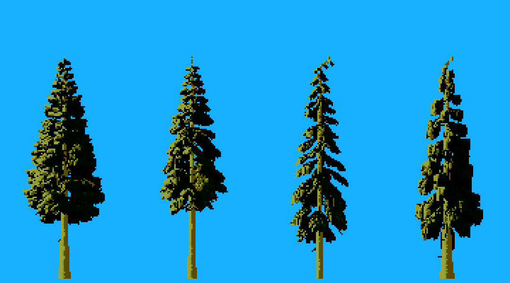
22. elements/conifers/tmp/t0.pngBash: Add subalpine species for master copy
cd ~/work/pixelart-studies/elements/conifers; python3 - <<'EOF'
s=open('tree.py').read()
s=s.replace('''SPECIES = {''','''SPECIES = {
# Ferrari's V16 tarn trees (subalpine fir / spruce spires): used for the master copy
"subalpine": Species("subalpine", crown_pow=1.15, crown_ratio=0.9, rmax_frac=0.13, whorled=True,
per_whorl=(4, 6), internode=0.6, base_angle=0.0, top_upsweep=0.5,
low_droop=0.3, droop=0.25, tip_upturn=0.05, spray_start=0.25,
pad_width=0.22, pad_hang=0.12, pad_top=0.05, pendant=0.2, density=0.8,
clump=0.5, stroke="stiff", hole_rate=0.15, bark="plates", buttress=0.1,
trunk_frac=0.01),''')
open('tree.py','w').write(s)
EOF
echo ok
# output:
okBash: Restructure rasterize into body+marks
cd ~/work/pixelart-studies/elements/conifers; python3 - <<'EOF'
s=open('render.py').read()
a=s.index('def rasterize(')
b=s.index('def _wood(')
new='''def rasterize(tg, cam, L, W, Hpx, origin, params):
"""G-buffer: foliage body (every point, 1 px) + marks (a sparse subset drawn as strokes in
the species direction, slightly in front of their own spray). Marks carry the light; the
body is the calm mass between them."""
mpp = cam.mpp
rng = np.random.default_rng(params.get("seed", 0) + 17)
f = tg.fol
direct, amb, T, ao, lam = light_foliage(tg, L, mpp, sky=params.get("sky", 0.35),
wc=params.get("wc", 0.55), shadow_k=params.get("shadow_k"))
sx, sy, dep = cam.project(f["p"])
sx = sx + origin[0]; sy = sy + origin[1]
N = len(sx)
mark_m = params.get("mark_m", 0.35)
Ls = float(np.clip(mark_m / mpp, 1, params.get("max_stroke", 4)))
slen = np.clip(np.round(Ls * rng.uniform(0.6, 1.3, N)), 1, params.get("max_stroke", 4))
is_mark = rng.random(N) < params.get("mark_frac", 0.25)
slen = np.where(is_mark, slen, 1)
dx, dy = cam.rotvec(f["d"])
nrm = np.sqrt(dx ** 2 + dy ** 2) + 1e-9
dx /= nrm; dy /= nrm
nseg = int(slen.max())
XS, YS, DS, K, ID = [], [], [], [], []
ids = np.arange(N)
eps = params.get("mark_eps", 0.15)
for k in range(nseg):
m = slen > k
XS.append(np.floor(sx[m] + dx[m] * k + 0.5).astype(int))
YS.append(np.floor(sy[m] + dy[m] * k + 0.5).astype(int))
DS.append(dep[m] + np.where(is_mark[m], eps, 0) - k * 1e-4)
K.append(np.full(m.sum(), k)); ID.append(ids[m])
xs = np.concatenate(XS); ys = np.concatenate(YS); ds = np.concatenate(DS)
kk = np.concatenate(K); pid = np.concatenate(ID)
ok = (xs >= 0) & (xs < W) & (ys >= 0) & (ys < Hpx)
xs, ys, ds, kk, pid = xs[ok], ys[ok], ds[ok], kk[ok], pid[ok]
o = np.argsort(ds, kind="stable")
xs, ys, ds, kk, pid = xs[o], ys[o], ds[o], kk[o], pid[o]
G = dict(mat=np.zeros((Hpx, W), np.int16), dep=np.full((Hpx, W), -1e9), dir=np.zeros((Hpx, W)),
amb=np.zeros((Hpx, W)), k=np.zeros((Hpx, W), np.int16), mark=np.zeros((Hpx, W), bool),
pid=np.full((Hpx, W), -1, np.int64), bid=np.full((Hpx, W), -1, np.int64),
T=np.ones((Hpx, W)))
G["mat"][ys, xs] = FOL
G["dep"][ys, xs] = ds
G["dir"][ys, xs] = direct[pid]
G["amb"][ys, xs] = amb[pid]
G["k"][ys, xs] = kk
G["mark"][ys, xs] = is_mark[pid]
G["pid"][ys, xs] = pid
G["bid"][ys, xs] = f["bid"][pid]
G["T"][ys, xs] = T[pid]
_wood(tg, cam, L, G, origin, params)
return G
'''
s=s[:a]+new+s[b:]
# quantize rewrite
a=s.index('def quantize(')
b=s.index('def compose(')
newq='''def quantize(G, params):
"""Continuous light -> foliage step 0..7 with the family boundary kept hard.
Marks: lit family 5..7 when in direct light, else dim marks 2..3 in the shadow family.
Body: shadow family 0..2 by ambient; lit body only where direct light is strong (step 4..5)."""
mat = G["mat"]
d, a = G["dir"], G["amb"]
thr = params.get("lit_thr", 0.18)
rng = np.random.default_rng(params.get("seed", 0) + 5)
Hh, W = mat.shape
jit = rng.random((Hh, W)) - 0.5
dith = params.get("dither", 0.6)
lv = np.clip((d - thr) / params.get("lit_span", 0.55), 0, 0.999)
sv = np.clip(a / params.get("amb_span", 0.4), 0, 0.999)
mark = G["mark"]
lit = d > thr
body_lit = d > params.get("body_thr", 0.45)
# marks
m_lit = 5 + np.floor(lv * 3 + jit * dith).clip(0, 2)
m_dim = 1 + np.floor(sv * 3 + jit * dith).clip(0, 2)
# body
b_lit = 4 + np.floor(np.clip((d - params.get("body_thr", 0.45)) / 0.4, 0, 0.999) * 2 + jit * dith).clip(0, 1)
b_sh = np.floor(sv * 3 + jit * dith).clip(0, 2)
step = np.where(mark, np.where(lit, m_lit, m_dim), np.where(body_lit, b_lit, b_sh)).astype(np.int16)
# the tail of a lit stroke is one step darker than its head (light cap on top)
tail = mark & (G["k"] > 0) & lit & (rng.random((Hh, W)) < params.get("tail_p", 0.5))
step = np.where(tail, np.maximum(step - 1, 4), step)
bark = mat == BARK
step = np.where(bark, np.floor(np.clip(d * 0.8 + a, 0, 0.999) * 6 + jit * dith).clip(0, 5), step).astype(np.int16)
step[mat == 0] = -1
return step
'''
s=s[:a]+newq+s[b:]
open('render.py','w').write(s)
EOF
grep -n "G\[\"amb\"\]\[ysx, xs\] = 0.3" render.py
# output:
190: G["amb"][ysx, xs] = 0.3Bash: Shade trunk inside crown; add compare helpers
cd ~/work/pixelart-studies/elements/conifers; python3 - <<'EOF'
s=open('render.py').read()
s=s.replace(''' G["mat"][ysx, xs] = BARK
G["dep"][ysx, xs] = dep
G["dir"][ysx, xs] = lam
G["amb"][ysx, xs] = 0.3''',''' # inside the crown the bole is in the crown's shade
cb = tg.crown_base
inside = np.clip((Pk[:, 1] - cb) / max(0.5, 0.05 * tg.H), 0, 1)
G["mat"][ysx, xs] = BARK
G["dep"][ysx, xs] = dep
G["dir"][ysx, xs] = lam * (1 - 0.92 * inside)
G["amb"][ysx, xs] = 0.3 * (1 - 0.85 * inside)''')
open('render.py','w').write(s)
EOF
cat > cmp.py <<'EOF'
"""Side-by-side comparison helpers: Ferrari crop | mine at kx, labelled."""
import numpy as np
from PIL import Image, ImageDraw
def up(a,k): return np.repeat(np.repeat(a,k,0),k,1)
def panel(imgs, labels, k=8, gap=6, bg=(250,250,250)):
ims=[up(np.asarray(i)[..., :3],k) for i in imgs]
H=max(i.shape[0] for i in ims)+16; W=sum(i.shape[1] for i in ims)+gap*(len(ims)-1)
out=np.full((H,W,3),bg,np.uint8); x=0
for i in ims:
out[16:16+i.shape[0],x:x+i.shape[1]]=i; x+=i.shape[1]+gap
im=Image.fromarray(out); d=ImageDraw.Draw(im); x=0
for i,l in zip(ims,labels):
d.text((x+2,2),l,fill=(0,0,0)); x+=i.shape[1]+gap
return im
def stack(ims, gap=6, bg=(250,250,250)):
ims=[np.asarray(i) for i in ims]
W=max(i.shape[1] for i in ims); H=sum(i.shape[0] for i in ims)+gap*(len(ims)-1)
out=np.full((H,W,3),bg,np.uint8); y=0
for i in ims: out[y:y+i.shape[0],:i.shape[1]]=i[...,:3]; y+=i.shape[0]+gap
return Image.fromarray(out)
EOF
echo ok
# output:
okBash: Stage 0 copy harness first run
cd ~/work/pixelart-studies/elements/conifers; cat > s0_copy.py <<'EOF'
"""Stage 0: master copy of Ferrari's V16 tarn conifer (C1: the mid-distance spire, native (420,30)-(480,130))."""
import numpy as np, sys
from PIL import Image
import tree, render as R, lw, cmp
d=lw.load('V16'); pal=d['pal']; idx=d['idx']
FOL=[62,61,60,59,63,73,58,54]
P=dict(fol=pal[FOL], bark=pal[[62,61,60,59,63,73]], wood=pal[61])
X0,Y0,X1,Y1=420,30,480,130
ref=pal[idx[Y0:Y1,X0:X1]]
def skybg(x0,y0,x1,y1):
sub=idx[y0:y1,x0:x1]; out=np.zeros(sub.shape+(3,),np.uint8)
for r in range(sub.shape[0]):
row=idx[y0+r, 300:420]; sky=row[(row>=1)&(row<=17)]
v=np.bincount(sky).argmax() if len(sky) else 9
out[r]=pal[v]
# keep his checker seams: copy sky pixels where they are sky
m=(sub>=1)&(sub<=17); out[m]=pal[sub[m]]
return out
def run(params, seed=3, H=24.0, mpp=0.1, sun=(15,30), tag='v'):
tg=tree.build('subalpine','young',seed=seed,H=H,mpp=mpp)
cam=R.Cam(mpp,0)
W,Hh=X1-X0, Y1-Y0
# tree top at row ~3 of the crop, centred at x ~ 29
Hpx=int(H/mpp)+10
G=R.rasterize(tg,cam,R.sun_vec(*sun),W,Hpx,(29,Hpx-4),params)
st=R.quantize(G,params)
top=np.argmax((G['mat']>0).any(1))
bg=np.zeros((Hpx,W,3),np.uint8); bg[:]=pal[9]
img=R.compose(st,G['mat'],G,P,bg)
crop=img[top-3:top-3+Hh]
msk=(G['mat'][top-3:top-3+Hh]>0)
out=skybg(X0,Y0,X1,Y1); out[msk]=crop[msk]
return out
if __name__=='__main__':
params=dict(seed=1, mark_m=0.3, mark_frac=0.3, lit_thr=0.2, body_thr=0.5)
mine=run(params)
cmp.panel([ref,mine],['Ferrari V16 C1 8x','copy 8x'],k=8).save('stage0/c1_v1.png')
EOF
OPENBLAS_NUM_THREADS=1 OMP_NUM_THREADS=1 nice -n 10 python3 s0_copy.py
# output:
(Bash completed with no output)Read: elements/conifers/stage0/c1_v1.png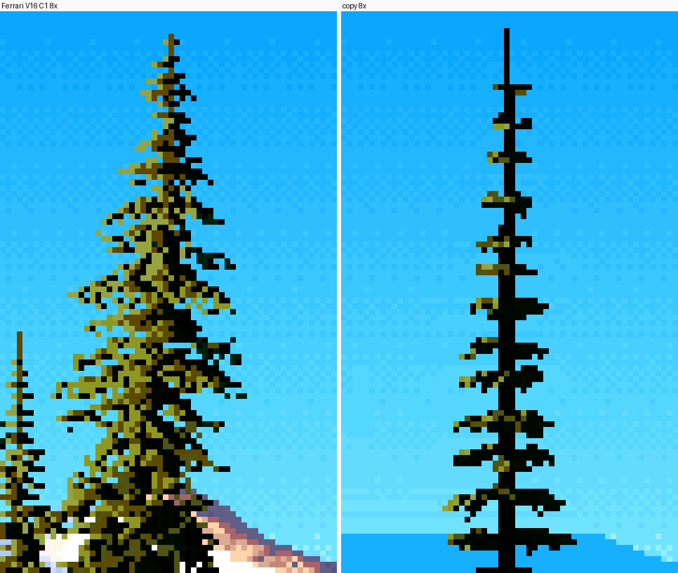
23. elements/conifers/stage0/c1_v1.pngBash: Widen subalpine crown; inspect light stats
cd ~/work/pixelart-studies/elements/conifers; python3 - <<'EOF'
import re
s=open('tree.py').read()
s=s.replace('''"subalpine": Species("subalpine", crown_pow=1.15, crown_ratio=0.9, rmax_frac=0.13''','''"subalpine": Species("subalpine", crown_pow=1.1, crown_ratio=0.9, rmax_frac=0.24''')
s=s.replace('''pad_width=0.22, pad_hang=0.12, pad_top=0.05, pendant=0.2, density=0.8,''','''pad_width=0.3, pad_hang=0.14, pad_top=0.06, pendant=0.2, density=1.0,''')
open('tree.py','w').write(s)
EOF
python3 -c "
import numpy as np, tree, render as R
tg=tree.build('subalpine','young',seed=3,H=24,mpp=0.1)
d,a,T,ao,lam=R.light_foliage(tg,R.sun_vec(15,30),0.1)
for nm,v in [('direct',d),('amb',a),('T',T),('ao',ao),('lam',lam)]: print(nm, np.percentile(v,[5,25,50,75,95]).round(2))
"
# output:
direct [0. 0. 0. 0. 0.09]
amb [0.04 0.07 0.1 0.13 0.18]
T [0. 0. 0. 0. 0.15]
ao [0.15 0.25 0.34 0.45 0.61]
lam [0. 0. 0.24 0.75 0.97]Bash: Greyscale light field sweep
cd ~/work/pixelart-studies/elements/conifers; python3 - <<'EOF'
s=open('render.py').read()
s=s.replace(''' cell = max(mpp * 2.0, 0.25)
k = shadow_k if shadow_k is not None else 0.5 * (mpp / cell) ** 2 * 3''',''' cell = max(mpp * 2.0, 0.25)
step = max(0.45 * mpp, 0.02)
k = (shadow_k if shadow_k is not None else 0.5) * step ** 2 / cell ** 2''')
open('render.py','w').write(s)
EOF
cat > tgrey.py <<'EOF'
import numpy as np, sys
from PIL import Image
import tree, render as R, cmp
cells=[]
for sk in [0.2,0.5,1.0]:
for wc in [0.4,0.7]:
tg=tree.build('subalpine','young',seed=3,H=24,mpp=0.1)
cam=R.Cam(0.1)
G=R.rasterize(tg,cam,R.sun_vec(15,30),80,250,(40,246),dict(seed=1,shadow_k=sk,wc=wc))
v=np.clip(G['dir']*0.8+G['amb'],0,1); v[G['mat']==0]=0.6
cells.append((np.stack([v]*3,-1)*255).astype(np.uint8))
cmp.panel(cells,['k.2 wc.4','k.2 wc.7','k.5 .4','k.5 .7','k1 .4','k1 .7'],k=3).save('tmp/grey.png')
EOF
OPENBLAS_NUM_THREADS=1 OMP_NUM_THREADS=1 nice -n 10 python3 tgrey.py
# output:
(Bash completed with no output)Read: elements/conifers/tmp/grey.png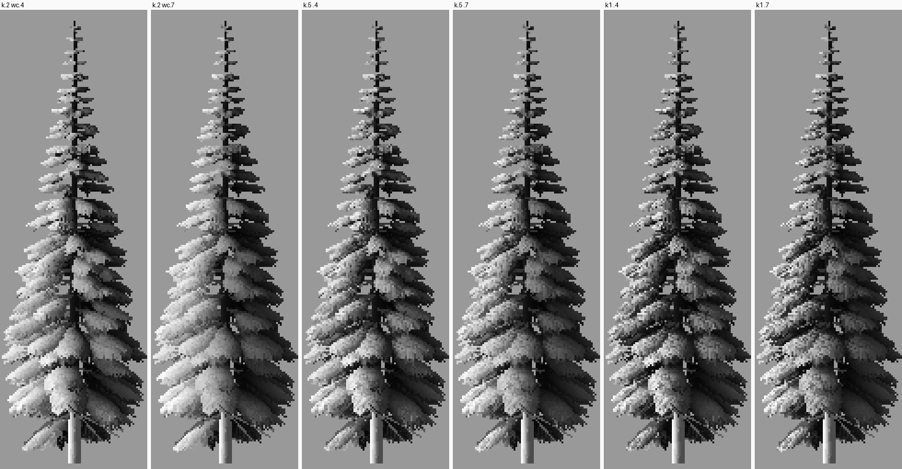
24. elements/conifers/tmp/grey.pngBash: Colour copy with threshold sweep
cd ~/work/pixelart-studies/elements/conifers; python3 - <<'EOF'
s=open('s0_copy.py').read()
s=s.replace(""" params=dict(seed=1, mark_m=0.3, mark_frac=0.3, lit_thr=0.2, body_thr=0.5)
mine=run(params)
cmp.panel([ref,mine],['Ferrari V16 C1 8x','copy 8x'],k=8).save('stage0/c1_v1.png')""",""" tag=sys.argv[1] if len(sys.argv)>1 else 'v2'
outs=[ref]; labs=['Ferrari V16 C1']
for i,(lt,bt) in enumerate([(0.15,0.15),(0.2,0.3),(0.25,0.4)]):
params=dict(seed=1, mark_m=0.3, mark_frac=0.3, lit_thr=lt, body_thr=bt, shadow_k=0.5)
outs.append(run(params)); labs.append(f'lit{lt} body{bt}')
cmp.panel(outs,labs,k=6).save(f'stage0/c1_{tag}.png')""")
open('s0_copy.py','w').write(s)
EOF
OPENBLAS_NUM_THREADS=1 OMP_NUM_THREADS=1 nice -n 10 python3 s0_copy.py v2
# output:
(Bash completed with no output)Read: elements/conifers/stage0/c1_v2.png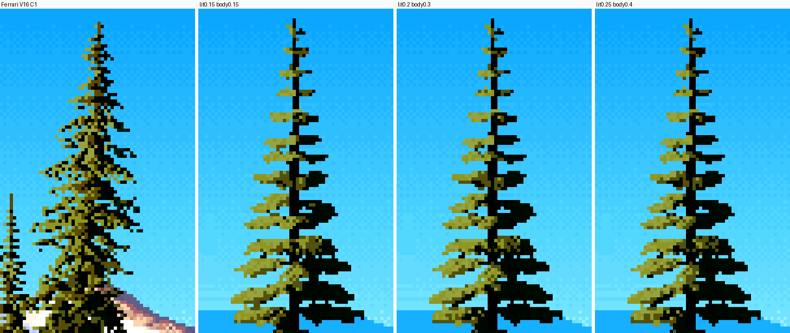
25. elements/conifers/stage0/c1_v2.pngBash: Body holes, more tiers; rerun copy
cd ~/work/pixelart-studies/elements/conifers; python3 - <<'EOF'
s=open('render.py').read()
s=s.replace(''' b_lit = 4 + np.floor(np.clip((d - params.get("body_thr", 0.45)) / 0.4, 0, 0.999) * 2 + jit * dith).clip(0, 1)''',''' b_lit = 4 + np.floor(np.clip((d - params.get("body_thr", 0.45)) / 0.4, 0, 0.999) * 2 + jit * dith).clip(0, 1)
# the lit body is broken by glimpses into the dark crown interior
holes = rng.random((Hh, W)) < params.get("body_holes", 0.35)
b_lit = np.where(holes, 0, b_lit)''')
open('render.py','w').write(s)
s=open('tree.py').read()
s=s.replace('''"subalpine": Species("subalpine", crown_pow=1.1, crown_ratio=0.9, rmax_frac=0.24, whorled=True,
per_whorl=(4, 6), internode=0.6,''','''"subalpine": Species("subalpine", crown_pow=1.1, crown_ratio=0.9, rmax_frac=0.24, whorled=True,
per_whorl=(5, 8), internode=0.42,''')
s=s.replace('''pad_width=0.3, pad_hang=0.14, pad_top=0.06, pendant=0.2, density=1.0,''','''pad_width=0.22, pad_hang=0.1, pad_top=0.05, pendant=0.2, density=0.8,''')
open('tree.py','w').write(s)
s=open('s0_copy.py').read()
s=s.replace("for i,(lt,bt) in enumerate([(0.15,0.15),(0.2,0.3),(0.25,0.4)]):\n params=dict(seed=1, mark_m=0.3, mark_frac=0.3, lit_thr=lt, body_thr=bt, shadow_k=0.5)",
"for i,(lt,bt) in enumerate([(0.15,0.15),(0.2,0.2),(0.25,0.3)]):\n params=dict(seed=1, mark_m=0.3, mark_frac=0.5, lit_thr=lt, body_thr=bt, shadow_k=0.5)")
open('s0_copy.py','w').write(s)
EOF
OPENBLAS_NUM_THREADS=1 OMP_NUM_THREADS=1 nice -n 10 python3 s0_copy.py v3
# output:
(Bash completed with no output)Read: elements/conifers/stage0/c1_v3.png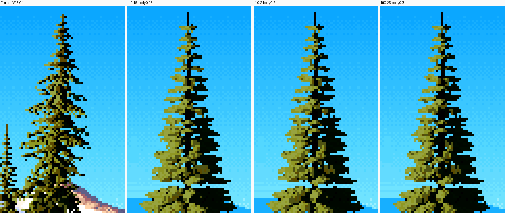
26. elements/conifers/stage0/c1_v3.pngBash: Class shares and run lengths, Ferrari vs mine
cd ~/work/pixelart-studies/elements/conifers; cat > stats.py <<'EOF'
import numpy as np
CLS={'black':[62,61,60,71],'dgreen':[59,72,70],'dolive':[73,63,55],'lit':[58,54]}
def classify_idx(sub):
c=np.full(sub.shape,-1)
for i,(k,v) in enumerate(CLS.items()): c[np.isin(sub,v)]=i
return c
def classify_rgb(img,pal):
out=np.full(img.shape[:2],-1)
for i,(k,v) in enumerate(CLS.items()):
for j in v: out[(img==pal[j]).all(-1)]=i
return out
def runs(c,val):
L=[]
for row in c:
m=(row==val).astype(int); d=np.diff(np.r_[0,m,0]); s=np.flatnonzero(d==1); e=np.flatnonzero(d==-1); L+=list(e-s)
return np.mean(L) if L else 0
def vruns(c,val): return runs(c.T,val)
def report(c,name):
tot=(c>=0).sum()
s=f'{name:10s} n={tot:5d} '
for i,k in enumerate(CLS):
s+=f'{k}:{(c==i).sum()/tot:.2f} (h{runs(c,i):.1f} v{vruns(c,i):.1f}) '
print(s)
EOF
python3 - <<'EOF'
import numpy as np, lw, stats, s0_copy as S
d=lw.load('V16'); idx=d['idx']
sub=idx[S.Y0:S.Y1,S.X0+8:S.X1]
stats.report(stats.classify_idx(sub),'ferrari')
params=dict(seed=1, mark_m=0.3, mark_frac=0.5, lit_thr=0.2, body_thr=0.2, shadow_k=0.5)
m=S.run(params)
stats.report(stats.classify_rgb(m[:,8:],d['pal']),'mine')
EOF
# output:
ferrari n= 1475 black:0.47 (h2.2 v1.9) dgreen:0.03 (h1.3 v1.3) dolive:0.23 (h1.5 v1.5) lit:0.27 (h1.4 v1.5)
mine n= 1726 black:0.50 (h4.3 v3.5) dgreen:0.00 (h0.0 v0.0) dolive:0.17 (h1.6 v1.6) lit:0.33 (h3.3 v2.3)Bash: Density mixture quantization and tune
cd ~/work/pixelart-studies/elements/conifers; python3 - <<'EOF'
s=open('render.py').read()
a=s.index('def quantize(')
b=s.index('def compose(')
newq='''def quantize(G, params):
"""Continuous light -> foliage step.
Foliage uses a *density mixture*: value v (direct light + ambient + a bias for mark pixels)
is quantized with a wide stochastic dither, so a mass is a fine intermix of adjacent steps
whose proportions carry the form (Ferrari's mid-distance conifer: black 47%, dark olive 23%,
lit 27%, mean runs ~1.5 px). The family boundary is kept: pixels under lit_thr can never
take lit-family steps; lit pixels mix within 0/4..7 (black glimpses of the interior allowed).
"""
mat = G["mat"]
d, a = G["dir"], G["amb"]
thr = params.get("lit_thr", 0.18)
rng = np.random.default_rng(params.get("seed", 0) + 5)
Hh, W = mat.shape
noise = rng.random((Hh, W))
amp = params.get("mix", 1.2)
mark = G["mark"]
lit = d > thr
# lit family: levels [black(0), 4, 5, 6, 7]
lv = np.clip((d - thr) / params.get("lit_span", 0.5), 0, 1) + np.where(mark, params.get("mark_bias", 0.25), -0.05)
q = np.floor(lv * 4 + (noise - 0.5) * amp + params.get("lit_off", 0.3)).clip(0, 4).astype(np.int16)
lit_levels = np.array(params.get("lit_levels", [0, 4, 5, 6, 7]), np.int16)
s_lit = lit_levels[q]
# shadow family 0..3 by ambient
sv = np.clip(a / params.get("amb_span", 0.35), 0, 1) + np.where(mark, 0.15, 0)
q2 = np.floor(sv * 3 + (noise - 0.5) * amp * 0.8 - 0.4).clip(0, 3).astype(np.int16)
step = np.where(lit, s_lit, q2).astype(np.int16)
bark = mat == BARK
step = np.where(bark, np.floor(np.clip(d * 0.8 + a, 0, 0.999) * 6 + (noise - .5) * 0.6).clip(0, 5), step).astype(np.int16)
step[mat == 0] = -1
return step
'''
s=s[:a]+newq+s[b:]
open('render.py','w').write(s)
EOF
cat > s0_tune.py <<'EOF'
import numpy as np, lw, stats, s0_copy as S, cmp, sys, itertools
d=lw.load('V16'); idx=d['idx']
sub=idx[S.Y0:S.Y1,S.X0+8:S.X1]
stats.report(stats.classify_idx(sub),'ferrari')
outs=[S.ref]; labs=['Ferrari']
for mix,off in [(1.2,0.3),(1.6,0.0),(2.0,-0.2)]:
params=dict(seed=1, mark_m=0.2, mark_frac=0.4, lit_thr=0.15, shadow_k=0.5, mix=mix, lit_off=off)
m=S.run(params)
stats.report(stats.classify_rgb(m[:,8:],d['pal']),f'm{mix} o{off}')
outs.append(m); labs.append(f'mix{mix} off{off}')
cmp.panel(outs,labs,k=6).save('stage0/c1_'+sys.argv[1]+'.png')
EOF
OPENBLAS_NUM_THREADS=1 OMP_NUM_THREADS=1 nice -n 10 python3 s0_tune.py v4
# output:
ferrari n= 1475 black:0.47 (h2.2 v1.9) dgreen:0.03 (h1.3 v1.3) dolive:0.23 (h1.5 v1.5) lit:0.27 (h1.4 v1.5)
m1.2 o0.3 n= 1492 black:0.49 (h4.1 v3.4) dgreen:0.00 (h0.0 v0.0) dolive:0.14 (h1.6 v1.5) lit:0.37 (h3.7 v2.7)
m1.6 o0.0 n= 1492 black:0.51 (h4.1 v3.5) dgreen:0.00 (h0.0 v0.0) dolive:0.15 (h1.6 v1.6) lit:0.35 (h3.5 v2.7)
m2.0 o-0.2 n= 1492 black:0.52 (h4.1 v3.5) dgreen:0.00 (h0.0 v0.0) dolive:0.15 (h1.6 v1.5) lit:0.33 (h3.3 v2.5)
[This command modified 1 file you've previously read: pixelart-studies/elements/conifers/render.py. Call Read before editing.]Bash: Stochastic three-way mixture quantization
cd ~/work/pixelart-studies/elements/conifers; python3 - <<'EOF'
s=open('render.py').read()
a=s.index(' # lit family: levels [black(0), 4, 5, 6, 7]')
b=s.index(' bark = mat == BARK')
new=''' # lit family: stochastic 3-way mixture black / dark olive / lit with probabilities set by v.
v = np.clip((d - thr) / params.get("lit_span", 0.5), 0, 1)
v = np.clip(v + np.where(mark, params.get("mark_bias", 0.2), -0.05), 0, 1)
pl = params.get("p_lit", 0.62) * v ** params.get("g_lit", 0.9)
pd = params.get("p_dol", 0.45) * (1 - 0.5 * v) * np.clip(v * 3 + 0.3, 0, 1)
r = noise
s_lit = np.where(r < pl, np.where(rng.random((Hh, W)) < v * 0.6, 7, 6),
np.where(r < pl + pd, np.where(rng.random((Hh, W)) < 0.5, 5, 4), 0))
# shadow family: mostly black with dim flecks (dark green / near-black) in the ambient
sv = np.clip(a / params.get("amb_span", 0.35), 0, 1)
ps = params.get("p_fleck", 0.25) * sv + np.where(mark, 0.08, 0)
s_sh = np.where(r < ps, np.where(rng.random((Hh, W)) < 0.5, 3, 2), np.where(r < ps * 2.2, 1, 0))
step = np.where(lit, s_lit, s_sh).astype(np.int16)
'''
s=s[:a]+new+s[b:]
open('render.py','w').write(s)
s=open('s0_tune.py').read()
s=s.replace("for mix,off in [(1.2,0.3),(1.6,0.0),(2.0,-0.2)]:\n params=dict(seed=1, mark_m=0.2, mark_frac=0.4, lit_thr=0.15, shadow_k=0.5, mix=mix, lit_off=off)",
"for mix,off in [(0.5,0.4),(0.62,0.45),(0.75,0.4)]:\n params=dict(seed=1, mark_m=0.2, mark_frac=0.4, lit_thr=0.12, shadow_k=0.5, p_lit=mix, p_dol=off)")
open('s0_tune.py','w').write(s)
EOF
OPENBLAS_NUM_THREADS=1 OMP_NUM_THREADS=1 nice -n 10 python3 s0_tune.py v5
# output:
ferrari n= 1475 black:0.47 (h2.2 v1.9) dgreen:0.03 (h1.3 v1.3) dolive:0.23 (h1.5 v1.5) lit:0.27 (h1.4 v1.5)
m0.5 o0.4 n= 1492 black:0.64 (h2.9 v2.6) dgreen:0.02 (h1.0 v1.1) dolive:0.13 (h1.2 v1.2) lit:0.21 (h1.4 v1.4)
m0.62 o0.45 n= 1492 black:0.57 (h2.8 v2.6) dgreen:0.02 (h1.0 v1.1) dolive:0.14 (h1.3 v1.2) lit:0.26 (h1.7 v1.6)
m0.75 o0.4 n= 1492 black:0.53 (h3.0 v2.8) dgreen:0.02 (h1.0 v1.1) dolive:0.13 (h1.2 v1.2) lit:0.32 (h2.0 v1.8)
[This command modified 1 file you've previously read: pixelart-studies/elements/conifers/render.py. Call Read before editing.]Read: elements/conifers/stage0/c1_v5.png 27. elements/conifers/stage0/c1_v5.png
27. elements/conifers/stage0/c1_v5.png
Bash: Fuller crown, thinner leader
cd ~/work/pixelart-studies/elements/conifers; python3 - <<'EOF'
s=open('tree.py').read()
s=s.replace('''per_whorl=(5, 8), internode=0.42, base_angle=0.0, top_upsweep=0.5,
low_droop=0.3, droop=0.25, tip_upturn=0.05, spray_start=0.25,
pad_width=0.22, pad_hang=0.1, pad_top=0.05, pendant=0.2, density=0.8,
clump=0.5, stroke="stiff", hole_rate=0.15, bark="plates", buttress=0.1,
trunk_frac=0.01),''','''per_whorl=(6, 9), internode=0.36, base_angle=0.0, top_upsweep=0.5,
low_droop=0.3, droop=0.25, tip_upturn=0.05, spray_start=0.1,
pad_width=0.25, pad_hang=0.18, pad_top=0.06, pendant=0.3, density=0.8,
clump=0.5, stroke="stiff", hole_rate=0.15, bark="plates", buttress=0.1,
trunk_frac=0.007),''')
open('tree.py','w').write(s)
s=open('s0_tune.py').read()
s=s.replace("[(0.5,0.4),(0.62,0.45),(0.75,0.4)]","[(0.55,0.55),(0.62,0.6),(0.7,0.55)]")
open('s0_tune.py','w').write(s)
EOF
OPENBLAS_NUM_THREADS=1 OMP_NUM_THREADS=1 nice -n 10 python3 s0_tune.py v6
# output:
ferrari n= 1475 black:0.47 (h2.2 v1.9) dgreen:0.03 (h1.3 v1.3) dolive:0.23 (h1.5 v1.5) lit:0.27 (h1.4 v1.5)
m0.55 o0.55 n= 1699 black:0.51 (h2.7 v2.6) dgreen:0.03 (h1.0 v1.0) dolive:0.20 (h1.4 v1.4) lit:0.27 (h1.7 v1.6)
m0.62 o0.6 n= 1699 black:0.46 (h2.9 v2.7) dgreen:0.03 (h1.0 v1.0) dolive:0.21 (h1.5 v1.4) lit:0.30 (h1.9 v1.8)
m0.7 o0.55 n= 1699 black:0.44 (h3.1 v2.8) dgreen:0.03 (h1.0 v1.0) dolive:0.20 (h1.3 v1.3) lit:0.34 (h2.1 v2.0)Read: elements/conifers/stage0/c1_v6.png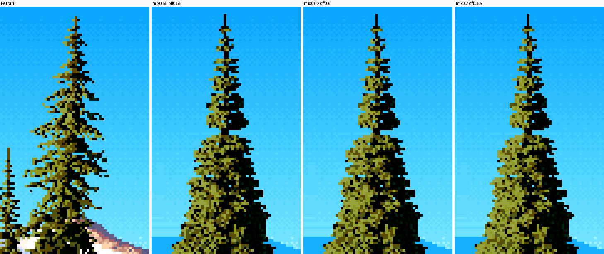
28. elements/conifers/stage0/c1_v6.pngBash: Find foliage append line
cd ~/work/pixelart-studies/elements/conifers; grep -n "P.append(p); N.append" tree.py # output: 307: P.append(p); N.append(nrm); D.append(dvec); PAD.append(pad)
Bash: Add spur lines to branches
cd ~/work/pixelart-studies/elements/conifers; python3 - <<'EOF'
s=open('tree.py').read()
old=''' P.append(p); N.append(nrm); D.append(dvec); PAD.append(pad)
BID.append(np.full(n, bi)); TIER.append(np.full(n, b["tier"]))
TIP.append(u)'''
new=''' # spur: the twig axis of the outer branch, needled, reads as the horizontal spur line
if sp.spur > 0:
ns = int(sp.spur * (1 - 0.5) * L / step) + 2
us = np.sort(rng.uniform(0.5, 1.0, ns))
idx2 = us * (len(pts) - 1)
j0 = np.floor(idx2).astype(int).clip(0, len(pts) - 2)
f2 = (idx2 - j0)[:, None]
cs2 = pts[j0] * (1 - f2) + pts[j0 + 1] * f2 + rng.normal(0, step * 0.4, (ns, 3))
tg2 = pts[j0 + 1] - pts[j0]; tg2 /= np.linalg.norm(tg2, axis=1, keepdims=True) + 1e-9
p = np.concatenate([p, cs2]);
nrm = np.concatenate([nrm, np.tile([0, 0.9, 0.3], (ns, 1)) / 0.95])
dvec = np.concatenate([dvec, tg2])
pad = np.concatenate([pad, np.stack([np.zeros(ns), np.full(ns, 0.3), us], 1)])
u = np.concatenate([u, us]); n = n + ns
P.append(p); N.append(nrm); D.append(dvec); PAD.append(pad)
BID.append(np.full(n, bi)); TIER.append(np.full(n, b["tier"]))
TIP.append(u)'''
s=s.replace(old,new)
s=s.replace(''' trunk_frac: float = 0.012 # dbh radius / height (young)''',''' trunk_frac: float = 0.012 # dbh radius / height (young)
spur: float = 0.0 # density of needled twig-axis points (spur lines at the edge)''')
s=s.replace('''trunk_frac=0.007),''','''trunk_frac=0.007, spur=1.0),''')
open('tree.py','w').write(s)
EOF
OPENBLAS_NUM_THREADS=1 OMP_NUM_THREADS=1 nice -n 10 python3 s0_tune.py v7
# output:
ferrari n= 1475 black:0.47 (h2.2 v1.9) dgreen:0.03 (h1.3 v1.3) dolive:0.23 (h1.5 v1.5) lit:0.27 (h1.4 v1.5)
m0.55 o0.55 n= 1769 black:0.50 (h2.5 v2.5) dgreen:0.03 (h1.1 v1.1) dolive:0.21 (h1.4 v1.4) lit:0.26 (h1.7 v1.6)
m0.62 o0.6 n= 1769 black:0.45 (h2.7 v2.7) dgreen:0.03 (h1.1 v1.1) dolive:0.23 (h1.5 v1.4) lit:0.29 (h1.9 v1.7)
m0.7 o0.55 n= 1769 black:0.43 (h2.9 v2.9) dgreen:0.03 (h1.1 v1.1) dolive:0.21 (h1.5 v1.3) lit:0.33 (h2.1 v2.0)Read: elements/conifers/stage0/c1_v7.png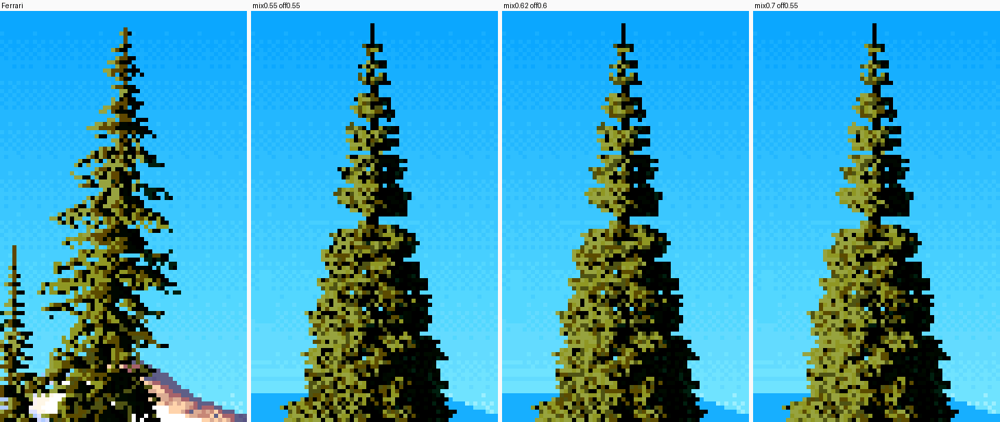
29. elements/conifers/stage0/c1_v7.pngBash: Thinner pads, longer spurs, ragged lengths
cd ~/work/pixelart-studies/elements/conifers; python3 - <<'EOF'
s=open('tree.py').read()
s=s.replace(''' spur: float = 0.0 ''',''' len_jitter: float = 0.12 # branch length variation (ragged outline)
spur: float = 0.0 ''')
s=s.replace(''' L = rr * lobe * rng.uniform(1 - 0.35 * irr, 1 + 0.15 * irr)''',''' L = rr * lobe * rng.uniform(1 - 0.35 * irr - sp.len_jitter, 1 + 0.15 * irr + 0.4 * sp.len_jitter)''')
s=s.replace('''pad_width=0.25, pad_hang=0.18, pad_top=0.06, pendant=0.3, density=0.8,
clump=0.5, stroke="stiff", hole_rate=0.15, bark="plates", buttress=0.1,
trunk_frac=0.007, spur=1.0),''','''pad_width=0.16, pad_hang=0.12, pad_top=0.05, pendant=0.3, density=0.8,
clump=0.5, stroke="stiff", hole_rate=0.15, bark="plates", buttress=0.1,
trunk_frac=0.007, spur=2.0, len_jitter=0.35),''')
s=s.replace("us = np.sort(rng.uniform(0.5, 1.0, ns))","us = np.sort(rng.uniform(0.3, 1.0, ns))")
open('tree.py','w').write(s)
EOF
OPENBLAS_NUM_THREADS=1 OMP_NUM_THREADS=1 nice -n 10 python3 s0_tune.py v8
# output:
ferrari n= 1475 black:0.47 (h2.2 v1.9) dgreen:0.03 (h1.3 v1.3) dolive:0.23 (h1.5 v1.5) lit:0.27 (h1.4 v1.5)
m0.55 o0.55 n= 1570 black:0.51 (h2.4 v2.3) dgreen:0.02 (h1.1 v1.1) dolive:0.21 (h1.4 v1.4) lit:0.26 (h1.6 v1.5)
m0.62 o0.6 n= 1570 black:0.45 (h2.6 v2.4) dgreen:0.02 (h1.1 v1.1) dolive:0.23 (h1.5 v1.4) lit:0.30 (h1.8 v1.7)
m0.7 o0.55 n= 1570 black:0.43 (h2.7 v2.5) dgreen:0.02 (h1.1 v1.1) dolive:0.21 (h1.4 v1.3) lit:0.33 (h2.0 v1.8)Read: elements/conifers/stage0/c1_v8.png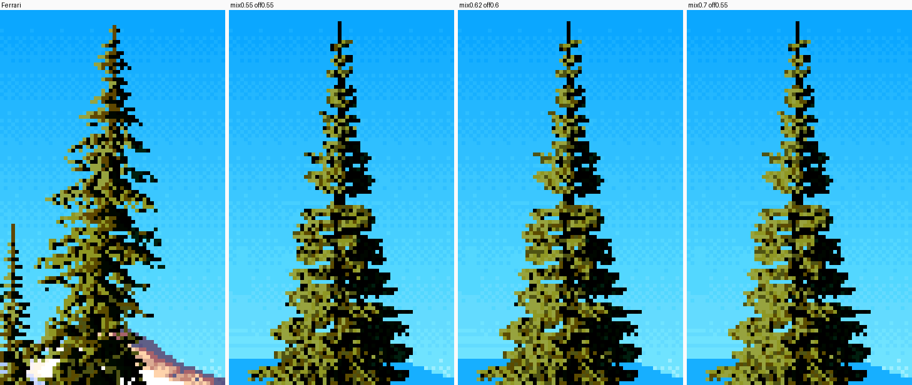
30. elements/conifers/stage0/c1_v8.pngBash: View trunk sampling code
cd ~/work/pixelart-studies/elements/conifers; grep -n "for yy, xx, zz, rr in zip" -A 12 render.py # output: 170: for yy, xx, zz, rr in zip(ys, X, Z, R): 171- na = max(6, int(np.pi * rr / (mpp * 0.5))) 172- th = np.linspace(-np.pi / 2, np.pi / 2, na) # front half facing viewer (+z) after yaw ~0 173- th = th + cam.yaw 174- nx, nz = np.sin(th), np.cos(th) 175- pts.append(np.stack([xx + rr * nx, np.full(na, yy), zz + rr * nz], 1)) 176- nrms.append(np.stack([nx, np.zeros(na), nz], 1)) 177- us.append(th - cam.yaw) 178- P = np.concatenate(pts); Nn = np.concatenate(nrms); U = np.concatenate(us) 179- sx, sy, dep = cam.project(P) 180- xs = np.floor(sx + origin[0] + 0.5).astype(int); ysx = np.floor(sy + origin[1] + 0.5).astype(int) 181- lam = np.clip(Nn @ L, 0, 1) 182- ok = (xs >= 0) & (xs < W) & (ysx >= 0) & (ysx < Hpx)
Bash: 1px leader, concave spire
cd ~/work/pixelart-studies/elements/conifers; python3 - <<'EOF'
s=open('render.py').read()
s=s.replace(''' for yy, xx, zz, rr in zip(ys, X, Z, R):
na = max(6, int(np.pi * rr / (mpp * 0.5)))''',''' Lh = np.array([L[0], 0, L[2]]); Lh /= np.linalg.norm(Lh) + 1e-9
for yy, xx, zz, rr in zip(ys, X, Z, R):
if rr < 0.6 * mpp: # a 1-px stem: one sample, normal half toward the sun
nn = np.array([0, 0, 1.0]) + 0.8 * Lh; nn /= np.linalg.norm(nn)
pts.append(np.array([[xx, yy, zz + rr]])); nrms.append(nn[None]); us.append(np.array([0.0]))
continue
na = max(6, int(np.pi * rr / (mpp * 0.5)))''')
open('render.py','w').write(s)
s=open('tree.py').read()
s=s.replace('"subalpine": Species("subalpine", crown_pow=1.1,','"subalpine": Species("subalpine", crown_pow=1.45,')
open('tree.py','w').write(s)
s=open('s0_tune.py').read()
s=s.replace("[(0.55,0.55),(0.62,0.6),(0.7,0.55)]","[(0.62,0.6)]")
s=s.replace("cmp.panel(outs,labs,k=6).save('stage0/c1_'+sys.argv[1]+'.png')","cmp.panel(outs,labs,k=6).save('stage0/c1_'+sys.argv[1]+'.png')\ncmp.panel(outs,labs,k=2).save('stage0/c1_'+sys.argv[1]+'_2x.png')")
open('s0_tune.py','w').write(s)
EOF
OPENBLAS_NUM_THREADS=1 OMP_NUM_THREADS=1 nice -n 10 python3 s0_tune.py v9
# output:
ferrari n= 1475 black:0.47 (h2.2 v1.9) dgreen:0.03 (h1.3 v1.3) dolive:0.23 (h1.5 v1.5) lit:0.27 (h1.4 v1.5)
m0.62 o0.6 n= 1005 black:0.45 (h2.3 v2.1) dgreen:0.01 (h1.0 v1.0) dolive:0.23 (h1.4 v1.4) lit:0.30 (h1.7 v1.5)Read: elements/conifers/stage0/c1_v9.png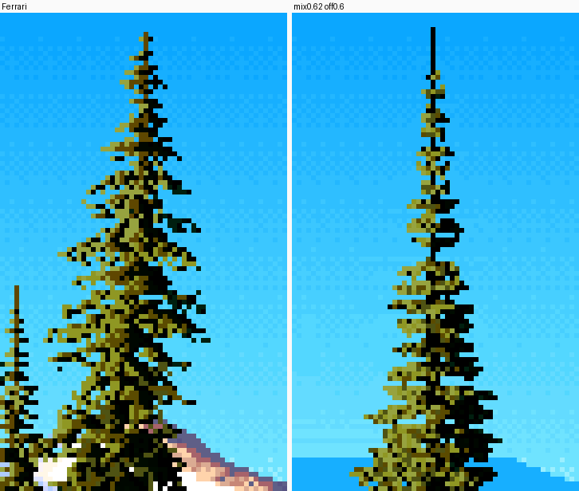
31. elements/conifers/stage0/c1_v9.pngBash: Needled leader, wider spire
cd ~/work/pixelart-studies/elements/conifers; python3 - <<'EOF'
s=open('tree.py').read()
s=s.replace('"subalpine": Species("subalpine", crown_pow=1.45, crown_ratio=0.9, rmax_frac=0.24,','"subalpine": Species("subalpine", crown_pow=1.25, crown_ratio=0.9, rmax_frac=0.27,')
old=''' # ---- foliage
fol = _foliage(branches, sp, rng, mpp, density_scale, H, age)'''
new=''' # ---- foliage
fol = _foliage(branches, sp, rng, mpp, density_scale, H, age)
# the leader is needled: a thin column of foliage points up the top of the stem
ltop = max(0.08 * H, 3 * mpp)
nl = int(ltop / (0.4 * mpp)) + 2
yl = rng.uniform(H - ltop, H * 0.995, nl)
cl = np.stack([trunk_at(y) for y in yl]) + rng.normal(0, 0.25 * mpp, (nl, 3)) * np.array([1, 0, 1])
fol["p"] = np.concatenate([fol["p"], cl])
fol["n"] = np.concatenate([fol["n"], np.tile([0, 0.6, 0.8], (nl, 1))])
fol["d"] = np.concatenate([fol["d"], np.tile([0, -1.0, 0], (nl, 1))])
fol["pad"] = np.concatenate([fol["pad"], np.tile([0, 0.5, 1.0], (nl, 1))])
fol["bid"] = np.concatenate([fol["bid"], np.full(nl, -1)])
fol["tier"] = np.concatenate([fol["tier"], np.ones(nl)])
fol["u"] = np.concatenate([fol["u"], np.ones(nl)])'''
s=s.replace(old,new)
open('tree.py','w').write(s)
EOF
OPENBLAS_NUM_THREADS=1 OMP_NUM_THREADS=1 nice -n 10 python3 s0_tune.py v10
# output:
ferrari n= 1475 black:0.47 (h2.2 v1.9) dgreen:0.03 (h1.3 v1.3) dolive:0.23 (h1.5 v1.5) lit:0.27 (h1.4 v1.5)
m0.62 o0.6 n= 1470 black:0.45 (h2.8 v2.4) dgreen:0.02 (h1.1 v1.1) dolive:0.22 (h1.5 v1.4) lit:0.30 (h1.9 v1.7)Read: elements/conifers/stage0/c1_v10.png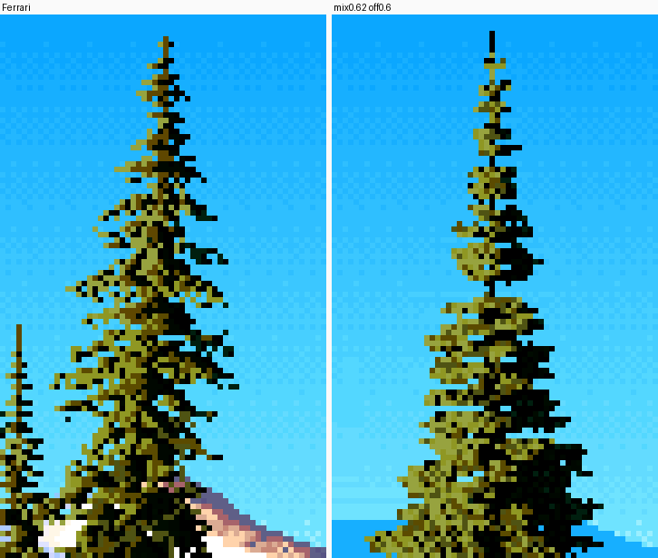
32. elements/conifers/stage0/c1_v10.pngRead: elements/conifers/stage0/c1_v10_2x.png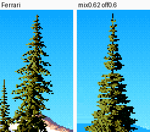
33. elements/conifers/stage0/c1_v10_2x.pngBash: Stats for near and far Ferrari conifers
cd ~/work/pixelart-studies/elements/conifers; python3 - <<'EOF'
import numpy as np, lw, stats
d=lw.load('V16'); idx=d['idx']; pal=d['pal']
for nm,(x0,y0,x1,y1) in {'near_rt':(560,0,640,90),'near_lt':(40,0,110,100),'far':(200,150,300,235)}.items():
sub=idx[y0:y1,x0:x1]; c=stats.classify_idx(sub); stats.report(c,nm)
u,cn=np.unique(sub[c>=0],return_counts=True)
# far trees colours
sub=idx[150:235,200:300]; u,cn=np.unique(sub,return_counts=True)
for a,b in sorted(zip(cn,u))[::-1][:16]: print(b,pal[b],a)
EOF
# output:
near_rt n= 4038 black:0.65 (h3.3 v3.6) dgreen:0.02 (h1.2 v1.4) dolive:0.24 (h1.7 v2.0) lit:0.09 (h1.3 v1.6)
near_lt n= 2610 black:0.75 (h4.1 v4.1) dgreen:0.04 (h1.3 v1.4) dolive:0.21 (h1.5 v1.7) lit:0.00 (h0.0 v0.0)
far n= 2638 black:0.53 (h3.1 v3.3) dgreen:0.19 (h1.4 v1.6) dolive:0.15 (h1.4 v1.4) lit:0.13 (h1.4 v1.3)
43 [71 75 95] 1009
42 [71 63 79] 736
62 [0 0 0] 643
44 [ 79 103 111] 573
59 [ 0 31 15] 498
61 [0 7 0] 444
57 [0 0 0] 386
56 [23 47 0] 370
55 [95 71 0] 353
54 [151 163 63] 333
60 [ 0 11 0] 314
31 [223 227 255] 293
30 [207 215 255] 187
32 [251 243 247] 183
52 [0 0 0] 172
29 [175 203 255] 170Bash: List key ref files
cd ~/work/pixelart-studies/elements/conifers/refs; ls Tsuga_heterophylla Thuja_plicata Pseudotsuga_menziesii_tree Douglas_fir_tree_crown | head -60 # output: Douglas_fir_tree_crown: _sheet.jpg openverse_American_Transportation_Vital_to_Victory_1943_f7bf3323.jpg openverse_Bradshaw_Mountains_North_of_Phoenix_Arizona_106ea091.jpg openverse_Bradshaw_Mountains_North_of_Phoenix_Arizona_91ddf427.jpg openverse_Douglas_Fir_db659d98.jpg openverse_Lake_Quinault_2010_08_17_005_56bee193.jpg openverse_Lake_Quinault_2010_08_17_011_289affb9.jpg openverse_Sitka_Spruce_b36ebb43.jpg openverse_Two_Thousand_Years_2066e46e.jpg openverse_c_2000_Color_aerial_photograph_taken_over_the_Si_43754809.jpg sources.tsv Pseudotsuga_menziesii_tree: _sheet.jpg commons_Douglasie_Pseudotsuga_menziesii_jpg_c3e539b4.jpg commons_Lonely_tree_at_Fairy_lake_jpg_6056449e.jpg commons_Pam_tn_strom_douglaska_tisolist_u_lesn_kolky_u_h_05b424ea.jpg commons_Pam_tn_strom_douglaska_tisolist_u_lesn_kolky_u_h_aa6a4bdc.jpg commons_Pseudotsuga_menziesii_lammas_growth_2_JPG_b80ef417.jpg commons_Pseudotsuga_menziesii_lammas_growth_JPG_e00f548e.jpg commons_Pseudotsuga_menziesii_seed_cones_jpg_2e3bf25e.jpg commons_Pseudotsuga_menziesii_subsp_glauca_kz02_jpg_83f9b0ac.jpg commons_Pseudotsuga_menziesii_var_glauca_young_female_co_ebd070cf.jpg sources.tsv Thuja_plicata: _sheet.jpg commons_Thuja_plicata_43569_JPG_4fb7348f.jpg commons_Thuja_plicata_Park_Zdrojowy_Krynica_Zdr_j_1_02_j_7bc12184.jpg commons_Thuja_plicata_Park_Zdrojowy_Krynica_Zdr_j_1_jpg_3bd0e456.jpg commons_Thuja_plicata_RF_jpg_5d43937c.jpg commons_Thuja_plicata_Vancouver_jpg_17048387.jpg commons_Thuja_plicata_Western_Redcedar_Capital_British_C_52676716.jpg commons_Thuja_plicata_Western_Redcedar_Port_Angeles_Wash_e25aff94.jpg commons_Thuja_plicata_Western_Redcedar_Port_Angeles_Wash_f16c507a.jpg commons_Thuja_plicata_Western_Redcedar_Squamish_British__82445429.jpg commons_Thuja_plicata_at_Lady_Falls_jpg_cb253470.jpg commons_Thuja_plicata_kz01_jpg_65cfc9a2.jpg commons_Western_redcedar_Thuja_plicata_43951898570_jpg_dbec3e24.jpg sources.tsv Tsuga_heterophylla: _sheet.jpg commons_Hoh_Rainforest_Olympic_National_Park_Washington__8f0608f4.jpg commons_Tsuga_heterophylla_MHNT_BOT_2004_0_210_jpg_1c1ddbb7.jpg commons_Tsuga_heterophylla_MHNT_BOT_2010_6_78_jpg_6ffe135e.jpg commons_Tsuga_heterophylla_RF_jpg_9fc5028b.jpg commons_Tsuga_heterophylla_cone_Mt_Washington_jpg_ec13a5c6.jpg commons_Tsuga_heterophylla_kz10_jpg_06dddee8.jpg commons_Tsuga_heterophylla_kz11_jpg_ff64d5b7.jpg commons_Tsuga_heterophylla_needles_at_Alphems_Arboretum__22240f85.jpg commons_Tsuga_heterophylla_seedling_JPG_c99a5f5f.jpg commons_Western_Hemlock_Tsuga_heterophylla_30829521717_j_2fc0a60b.jpg commons_Western_Hemlock_Tsuga_heterophylla_underside_of__7efc9dfc.jpg commons_Western_hemlock_at_the_Wild_Pacific_Trail_jpg_e18868a7.jpg sources.tsv
Read: elements/conifers/refs/Tsuga_heterophylla/commons_Hoh_Rainforest_Olympic_National_Park_Washington__8f0608f4.jpg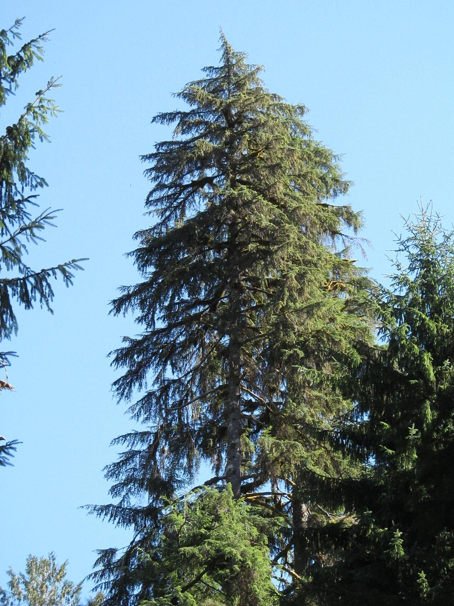
34. elements/conifers/refs/Tsuga_heterophylla/commons_Hoh_Rainforest_Olympic_National_Park_Washington__8f0608f4.jpgRead: elements/conifers/refs/Thuja_plicata/commons_Thuja_plicata_kz01_jpg_65cfc9a2.jpg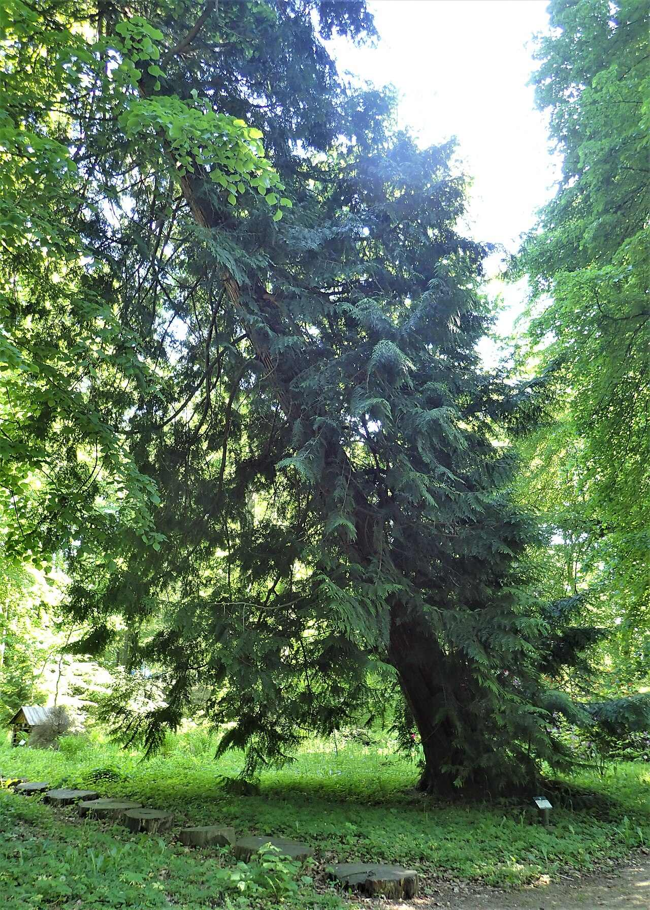
35. elements/conifers/refs/Thuja_plicata/commons_Thuja_plicata_kz01_jpg_65cfc9a2.jpgRead: elements/conifers/refs/Pseudotsuga_menziesii_tree/commons_Pam_tn_strom_douglaska_tisolist_u_lesn_kolky_u_h_05b424ea.jpg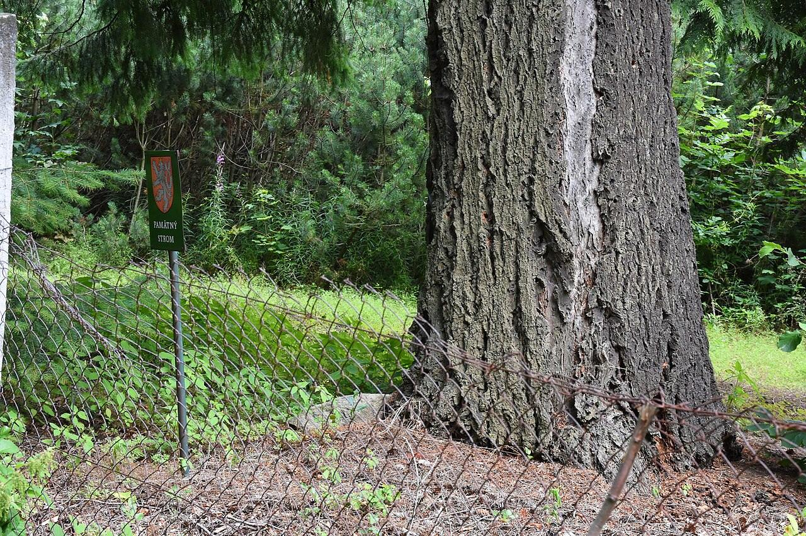
36. elements/conifers/refs/Pseudotsuga_menziesii_tree/commons_Pam_tn_strom_douglaska_tisolist_u_lesn_kolky_u_h_05b424ea.jpgRead: elements/conifers/refs/Douglas_fir_tree_crown/openverse_Sitka_Spruce_b36ebb43.jpg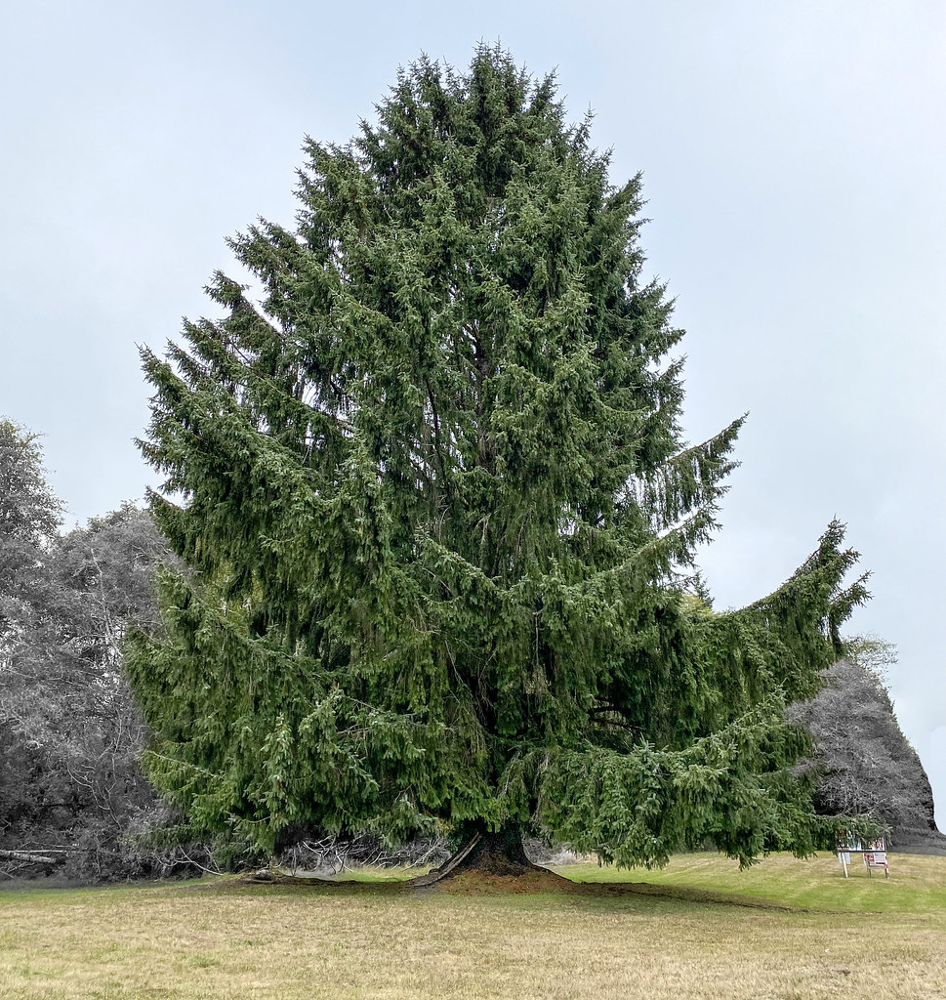
37. elements/conifers/refs/Douglas_fir_tree_crown/openverse_Sitka_Spruce_b36ebb43.jpgRead: elements/conifers/tree.pyNow I'll write the real growth model with element-based foliage (fronds, strands, brush, spurs), fans, reiterated leaders and spike tops.
Write: elements/conifers/grow.py
"""Grow the four Pacific Northwest conifers as geometry in metres.
Differences from tree.py (the stage-0 copy model, kept frozen as its regression):
- foliage is built from *elements* the way the real sprays hang, per species:
frond : a flat spray off the side of a twig, arcing down at its tip (hemlock lace, fir shelves)
strand : a pendant branchlet or hanging fan (cedar curtains, Sitka's pendulous branchlets)
brush : a tuft of short needled twigs round the branch, drooping (Douglas-fir)
spur : the needled branch tip itself (the horizontal spur that makes the silhouette)
- mature and old trees fan each limb into secondary branches (flat shelves / clumps),
old crowns have gaps, dead limbs, flattened or broken tops;
- western redcedar grows reiterated leaders (candelabra) and dead spike tops; hemlock nods.
- wood (bole, limbs, dead spikes) is a list of tapered segments the painter samples as surfaces.
All points carry: p (position), n (normal), d (stroke direction), pad (across, vertical, along),
bid (branch id), eid (element id), ek (0..1 position along its element), kind (element type).
y is up; x right; z toward the viewer.
"""
import numpy as np
from dataclasses import dataclass, field, replace
GOLD = np.pi * (3 - np.sqrt(5))
KIND = {"frond": 0, "strand": 1, "brush": 2, "spur": 3, "leader": 4}
@dataclass
class Sp:
name: str
crown_pow: float = 1.0
crown_ratio: float = 0.65
rmax_frac: float = 0.18
whorled: bool = True
per_whorl: tuple = (4, 6)
internode: float = 0.5
base_angle: float = 0.0
top_upsweep: float = 0.6
low_droop: float = 0.3
droop: float = 0.3
tip_upturn: float = 0.0
len_jitter: float = 0.2
fans: float = 1.0 # secondary branches per limb (scaled by age)
fan_angle: float = 0.7 # radians off the limb, horizontal
spray_start: float = 0.3
# elements: weight per metre of foliated twig (per side) and sizes in metres
frond_w: float = 0.0
frond_len: float = 0.5
frond_droop: float = 0.4
frond_fwd: float = 0.7 # angle forward toward the twig tip (rad)
pinna: float = 0.25 # pinna length / frond length (lacy width)
strand_w: float = 0.0
strand_len: float = 0.5
strand_fan: int = 1
brush_w: float = 0.0
brush_len: float = 0.25
spacing: float = 0.12 # metres between element anchors along a twig
leader_nod: float = 0.0
buttress: float = 0.0
flutes: int = 0
trunk_frac: float = 0.012
bark: str = "furrow"
candelabra: float = 0.0 # chance of reiterated leaders when old
spike: float = 0.0 # chance of a dead spike top when old
shelf: float = 0.5 # how flat the shelves are (1 = flat tiers, 0 = rounded clumps)
SP = {
"douglas": Sp("douglas", crown_pow=0.9, crown_ratio=0.62, rmax_frac=0.16, whorled=True,
per_whorl=(3, 5), internode=0.7, base_angle=0.1, top_upsweep=0.8, low_droop=0.5,
droop=0.28, tip_upturn=0.12, len_jitter=0.3, fans=3.0, fan_angle=0.8,
spray_start=0.25, brush_w=1.0, brush_len=0.3, strand_w=0.35, strand_len=0.35,
strand_fan=1, spacing=0.11, trunk_frac=0.016, bark="furrow", buttress=0.25,
shelf=0.35, candelabra=0.1, spike=0.15),
"hemlock": Sp("hemlock", crown_pow=0.9, crown_ratio=0.72, rmax_frac=0.15, whorled=False,
per_whorl=(1, 2), internode=0.3, base_angle=-0.1, top_upsweep=0.4, low_droop=0.6,
droop=0.45, tip_upturn=0.0, len_jitter=0.3, fans=2.5, fan_angle=0.9,
spray_start=0.2, frond_w=1.0, frond_len=0.45, frond_droop=0.7, frond_fwd=0.8,
pinna=0.3, strand_w=0.2, strand_len=0.3, spacing=0.1, leader_nod=0.05,
trunk_frac=0.012, bark="scaly", buttress=0.2, shelf=0.6, spike=0.05),
"cedar": Sp("cedar", crown_pow=0.8, crown_ratio=0.75, rmax_frac=0.18, whorled=False,
per_whorl=(1, 2), internode=0.32, base_angle=-0.35, top_upsweep=0.9, low_droop=0.5,
droop=0.3, tip_upturn=0.55, len_jitter=0.3, fans=2.0, fan_angle=0.6,
spray_start=0.15, frond_w=0.35, frond_len=0.4, frond_droop=0.3, frond_fwd=0.5,
pinna=0.35, strand_w=1.0, strand_len=0.7, strand_fan=3, spacing=0.13,
leader_nod=0.03, trunk_frac=0.02, bark="fibrous", buttress=0.9, flutes=7,
shelf=0.3, candelabra=0.8, spike=0.7),
"spruce": Sp("spruce", crown_pow=1.0, crown_ratio=0.72, rmax_frac=0.21, whorled=True,
per_whorl=(5, 7), internode=0.55, base_angle=0.0, top_upsweep=0.6, low_droop=0.45,
droop=0.3, tip_upturn=0.35, len_jitter=0.2, fans=2.5, fan_angle=0.7,
spray_start=0.25, frond_w=0.5, frond_len=0.3, frond_droop=0.15, frond_fwd=0.6,
pinna=0.2, strand_w=0.8, strand_len=0.5, strand_fan=1, spacing=0.12,
trunk_frac=0.018, bark="plates", buttress=0.6, flutes=3, shelf=0.7,
candelabra=0.15, spike=0.1),
}
AGE = {
# height crown irr dead gaps girth fanmul
"sapling": dict(H=2.5, cr=1.0, irr=0.1, dead=0.0, gaps=0.0, girth=1.8, fan=0.0),
"young": dict(H=13., cr=0.95, irr=0.2, dead=0.1, gaps=0.0, girth=1.0, fan=0.3),
"mature": dict(H=40., cr=0.62, irr=0.45, dead=0.25, gaps=0.12, girth=1.0, fan=0.8),
"old": dict(H=65., cr=0.45, irr=0.85, dead=0.4, gaps=0.3, girth=1.45, fan=1.0),
}
@dataclass
class Tree:
sp: Sp
age: str
H: float
trunk: np.ndarray # (n,4) x y z r
wood: list # segments: dict(a (3,), b (3,), ra, rb, kind 'bark'|'dead'|'limb')
branches: list
fol: dict
crown_base: float
axis: np.ndarray
rfun: object
top_y: float # top of live crown
moss: float = 0.0
def crown_radius(sp, t, rmax, round_top):
t = np.clip(t, 0, 1)
r = (1 - t) ** sp.crown_pow
r = r * np.clip(0.6 + 0.4 * np.minimum(t / 0.2, 1.0), 0, 1)
if round_top > 0:
rt = np.sqrt(np.clip(1 - t ** 2, 0, 1)) * 0.8
r = (1 - round_top) * r + round_top * np.maximum(r, rt * (t < 0.985))
return rmax * r
def grow(species="douglas", age="mature", seed=0, H=None, openness=0.6, lean=(0.0, 0.0), mpp=0.1,
moss=0.0, detail=1.0, **over):
sp = SP[species] if isinstance(species, str) else species
if over:
sp = replace(sp, **{k: v for k, v in over.items() if hasattr(sp, k)})
ag = AGE[age]
rng = np.random.default_rng(seed * 7919 + hash(sp.name) % 1000)
H = H or ag["H"] * rng.uniform(0.85, 1.15)
irr = ag["irr"]
cr = min(0.97, sp.crown_ratio * ag["cr"] * (0.75 + 0.5 * openness)) if age != "sapling" else 0.93
cb = H * (1 - cr)
rmax = sp.rmax_frac * H * (0.85 if age == "old" else 1.0) * rng.uniform(0.88, 1.12)
if age == "sapling":
rmax = sp.rmax_frac * H * 1.5
rmax *= (0.8 + 0.4 * openness)
round_top = {"sapling": 0, "young": 0, "mature": 0.12, "old": 0.55}[age]
if sp.name == "hemlock":
round_top *= 0.5
# ---------------- trunk
ny = 90
ys = np.linspace(0, H, ny)
lean = np.array(lean, float)
sw = rng.normal(0, 1, 4)
xs = lean[0] * ys + 0.005 * H * irr * np.sin(ys / H * np.pi * (1 + abs(sw[0])) + sw[1])
zs = lean[1] * ys + 0.005 * H * irr * np.sin(ys / H * np.pi * (1 + abs(sw[2])) + sw[3])
dbh = sp.trunk_frac * H * ag["girth"]
if age == "sapling":
dbh = 0.02 + 0.01 * H
rs = dbh * (1 - ys / H) ** (0.75 if age == "old" else 0.9) + 0.01
flare = sp.buttress * dbh * (1.7 if age == "old" else 1.0) * np.exp(-ys / (0.035 * H + 0.5))
rs = rs + flare * (age != "sapling")
trunk = np.stack([xs, ys, zs, rs], 1)
if sp.leader_nod > 0:
tl = sp.leader_nod * H * (1.3 if age in ("young", "sapling") else 1.0)
k = ys > H - tl
u = (ys[k] - (H - tl)) / tl
trunk[k, 0] += (u ** 2) * tl * 0.8
trunk[k, 1] -= (u ** 2.2) * tl * 0.45
def at(y):
return np.array([np.interp(y, trunk[:, 1], trunk[:, 0]), y, np.interp(y, trunk[:, 1], trunk[:, 2])])
wood = []
# spike top (dead leader) for old cedar etc.
spike_top = 0.0
if age == "old" and rng.random() < sp.spike:
spike_top = rng.uniform(0.04, 0.12) * H
live_top = H - spike_top
for i in range(ny - 1):
a = trunk[i]; b = trunk[i + 1]
kind = "dead" if a[1] > live_top else "bark"
wood.append(dict(a=a[:3].copy(), b=b[:3].copy(), ra=a[3], rb=b[3], kind=kind, trunk=True))
# ---------------- limbs
internode = max(sp.internode * (H / 20.0) ** 0.5, 0.1)
levels = []
y = cb
while y < live_top * 0.985:
levels.append(y)
y += internode * rng.uniform(0.7, 1.3)
branches = []
az0 = rng.uniform(0, 2 * np.pi)
ai = 0
lob = rng.uniform(0, 2 * np.pi, 4)
# old crowns: a few big "clumps" of limbs at irregular heights
for li, y in enumerate(levels):
t = (y - cb) / (live_top - cb)
n = rng.integers(sp.per_whorl[0], sp.per_whorl[1] + 1)
rr = crown_radius(sp, t, rmax, round_top)
for j in range(n):
if sp.whorled:
az = az0 + li * 0.7 + j * 2 * np.pi / n + rng.normal(0, 0.3)
else:
ai += 1
az = az0 + ai * GOLD * 2 + rng.normal(0, 0.4)
lobe = 1 + 0.25 * irr * np.sin(az * 3 + lob[0] + t * 4) + 0.2 * irr * np.sin(az * 2 + lob[1] - t * 3)
L = rr * lobe * rng.uniform(1 - sp.len_jitter - 0.3 * irr, 1 + 0.4 * sp.len_jitter)
if rng.random() < ag["gaps"] * (1.2 - t):
continue
if L < 0.04:
continue
ang = sp.base_angle + sp.top_upsweep * max(0, t - 0.55) * 2.2 - sp.low_droop * max(0, 0.5 - t) * 2
ang += rng.normal(0, 0.07 + 0.12 * irr)
dead = t < ag["dead"] and rng.random() < 0.6 * (1 - t / max(ag["dead"], 1e-3))
b = _limb(at(y), az, ang, L, sp, rng, t, dead, H, age)
branches.append(b)
# fans: secondary branches spread off the limb
nf = int(round(sp.fans * ag["fan"] * rng.uniform(0.5, 1.3) * min(1, L / 1.5)))
if not dead:
for k in range(nf):
s0 = rng.uniform(0.25, 0.75)
side = 1 if k % 2 == 0 else -1
p0 = _pt(b["pts"], s0)
az2 = az + side * sp.fan_angle * rng.uniform(0.6, 1.3)
L2 = (1 - s0) * L * rng.uniform(0.55, 0.95)
ang2 = ang * 0.5 + rng.normal(0, 0.1) - 0.1 * sp.droop
c = _limb(p0, az2, ang2, L2, sp, rng, t, False, H, age, child=True)
c["parent"] = len(branches) - 1
branches.append(c)
# dead stubs on the bole below the crown
if ag["dead"] > 0 and cb > 3:
y = cb * rng.uniform(0.3, 0.6)
while y < cb:
az = rng.uniform(0, 2 * np.pi)
L = rng.uniform(0.2, 1.0) * (H / 40) + 0.15
branches.append(_limb(at(y), az, rng.uniform(-0.5, 0.1), L, sp, rng, 0.0, True, H, age))
y += internode * rng.uniform(2, 6) * (2 if age == "old" else 1)
# candelabra: reiterated leaders from upper limbs (old cedar mostly)
reits = []
if age == "old" and rng.random() < sp.candelabra:
nre = rng.integers(2, 5)
for k in range(nre):
y0 = live_top - rng.uniform(0.08, 0.3) * (live_top - cb)
az = rng.uniform(0, 2 * np.pi)
p0 = at(y0)
off = rng.uniform(0.5, 1.2) * crown_radius(sp, (y0 - cb) / (live_top - cb), rmax, round_top) * 0.5
hre = rng.uniform(0.12, 0.25) * H
dead_re = rng.random() < 0.45
top = p0 + np.array([np.cos(az) * off, hre, np.sin(az) * off])
mid = p0 + np.array([np.cos(az) * off * 0.9, hre * 0.35, np.sin(az) * off * 0.9])
r0 = dbh * 0.25
wood.append(dict(a=p0, b=mid, ra=r0, rb=r0 * 0.7, kind="bark", trunk=False))
wood.append(dict(a=mid, b=top, ra=r0 * 0.7, rb=0.03, kind="dead" if dead_re else "bark", trunk=False))
if not dead_re:
reits.append((mid, top))
# small crown on the reiteration
for yy in np.arange(mid[1], top[1] - 0.3, internode):
u = (yy - mid[1]) / (top[1] - mid[1])
pp = mid + (top - mid) * u
for j in range(rng.integers(1, 3)):
az3 = rng.uniform(0, 2 * np.pi)
L3 = (1 - u) * rmax * 0.35 * rng.uniform(0.6, 1.2) + 0.2
branches.append(_limb(pp, az3, sp.base_angle, L3, sp, rng, 0.8, False, H, age))
# limb wood segments (thick enough ones are drawn by the painter)
for bi, b in enumerate(branches):
pts = b["pts"]
for i in range(len(pts) - 1):
s = i / (len(pts) - 1)
wood.append(dict(a=pts[i], b=pts[i + 1], ra=b["r"] * (1 - s * 0.8), rb=b["r"] * (1 - (s + 1 / (len(pts) - 1)) * 0.8),
kind="dead" if b["dead"] else "limb", trunk=False, bid=bi))
fol = _foliage(branches, sp, rng, mpp, detail, H, age)
# needled leader(s)
tops = [(at(live_top - max(0.07 * H, 3 * mpp)), at(live_top * 0.999))] if spike_top == 0 else []
tops += [(m + (t - m) * 0.7, t) for m, t in reits]
for a, b in tops:
_leader(fol, a, b, mpp, rng)
axis = np.stack([at(y) for y in np.linspace(cb, live_top, 24)])
rf = lambda yy: crown_radius(sp, (yy - cb) / (live_top - cb), rmax, round_top)
return Tree(sp, age, H, trunk, wood, branches, fol, cb, axis, rf, live_top, moss)
def _pt(pts, s):
idx = s * (len(pts) - 1)
i0 = int(np.clip(np.floor(idx), 0, len(pts) - 2))
f = idx - i0
return pts[i0] * (1 - f) + pts[i0 + 1] * f
def _limb(p0, az, ang, L, sp, rng, t, dead, H, age, child=False):
s = np.linspace(0, 1, 14)
d = np.array([np.cos(az), 0, np.sin(az)])
rise = np.sin(ang) * s * L
sag = sp.droop * L * s ** 2 * (1 - 0.3 * t) * (1.25 if age in ("old", "mature") else 1)
up = sp.tip_upturn * L * np.clip(s - 0.5, 0, 1) ** 2 * 3.2
horiz = np.cos(ang) * s * L
wob = rng.normal(0, 0.03 * L, (14, 3)).cumsum(0) * 0.25
wob[:, 1] *= 0.5
pts = p0[None] + horiz[:, None] * d[None] + np.array([0, 1.0, 0])[None] * (rise - sag + up)[:, None] + wob * s[:, None]
r0 = max(0.015, (0.022 if not child else 0.016) * L ** 1.1 + (0.02 if age == "old" else 0.0))
return dict(pts=pts, r=r0, tier=t, dead=dead, az=az, L=L, dir=d, child=child)
def _foliage(branches, sp, rng, mpp, detail, H, age):
out = {k: [] for k in ("p", "n", "d", "pad", "bid", "eid", "ek", "kind")}
step = max(0.45 * mpp / detail, 0.015)
eid = 0
has_child = set(b.get("parent", -1) for b in branches)
for bi, b in enumerate(branches):
if b["dead"]:
continue
L = b["L"]; pts = b["pts"]
s0 = sp.spray_start if not b["child"] else 0.1
if bi in has_child:
s0 = max(s0, 0.55) # a fanned limb carries foliage mostly on its children and tip
flen = (1 - s0) * L
spacing = max(sp.spacing, 0.5 * mpp)
na = max(2, int(flen / spacing))
us = np.sort(rng.uniform(s0, 1.0, na))
c = np.array([_pt(pts, u) for u in us])
tang = np.gradient(c, axis=0) if na > 2 else np.tile(pts[-1] - pts[0], (na, 1))
tang /= np.linalg.norm(tang, axis=1, keepdims=True) + 1e-9
side = np.cross(tang, [0, 1.0, 0]); side /= np.linalg.norm(side, axis=1, keepdims=True) + 1e-9
radial = b["dir"]
# element size tapers toward the twig tip (young growth at the tip is short)
taper = np.clip(1.15 - 0.6 * ((us - s0) / max(1 - s0, 1e-3)) ** 2, 0.4, 1.2)
wsum = sp.frond_w + sp.strand_w + sp.brush_w
for i in range(na):
r = rng.random() * wsum
kind = "frond" if r < sp.frond_w else ("strand" if r < sp.frond_w + sp.strand_w else "brush")
for sgn in (-1, 1):
if kind == "strand" and sgn == 1 and rng.random() < 0.5:
continue
el = _element(kind, c[i], tang[i], side[i] * sgn, radial, sp, rng, step, taper[i], L)
if el is None:
continue
P, Nn, D, ek = el
m = len(P)
out["p"].append(P); out["n"].append(Nn); out["d"].append(D)
out["ek"].append(ek)
across = np.full(m, sgn * 0.5)
vert = (P[:, 1] - c[i][1]) / (sp.strand_len + sp.frond_len + 0.1)
out["pad"].append(np.stack([across, vert, np.full(m, us[i])], 1))
out["bid"].append(np.full(m, bi)); out["eid"].append(np.full(m, eid)); out["kind"].append(np.full(m, KIND[kind]))
eid += 1
# spur: the needled twig tip, reads as the horizontal spur at the silhouette
ns = max(2, int(0.35 * L / step))
su = np.linspace(0.65, 1.0, ns)
P = np.array([_pt(pts, u) for u in su]) + rng.normal(0, step * 0.3, (ns, 3))
Dd = np.tile(tang[-1], (ns, 1))
Nn = np.tile(np.array([0, 0.85, 0]) + 0.5 * radial, (ns, 1))
Nn /= np.linalg.norm(Nn, axis=1, keepdims=True)
out["p"].append(P); out["n"].append(Nn); out["d"].append(Dd); out["ek"].append((su - 0.65) / 0.35)
out["pad"].append(np.stack([np.zeros(ns), np.full(ns, 0.2), su], 1))
out["bid"].append(np.full(ns, bi)); out["eid"].append(np.full(ns, eid)); out["kind"].append(np.full(ns, KIND["spur"]))
eid += 1
fol = {k: (np.concatenate(v) if v else np.zeros((0, 3))) for k, v in out.items()}
return fol
def _element(kind, c, tang, side, radial, sp, rng, step, taper, L):
"""Sample one foliage element as points. Returns (P, N, D, ek)."""
if kind == "frond":
ln = sp.frond_len * taper * rng.uniform(0.7, 1.25)
fwd = sp.frond_fwd * rng.uniform(0.7, 1.2)
dirv = side * np.cos(fwd) + tang * np.sin(fwd)
n = max(2, int(ln / step) + 1)
t = np.linspace(0, 1, n)
dr = sp.frond_droop * rng.uniform(0.6, 1.3)
P = c + np.outer(t * ln, dirv) - np.outer(dr * ln * t ** 2, [0, 1.0, 0])
tg = np.gradient(P, axis=0); tg /= np.linalg.norm(tg, axis=1, keepdims=True) + 1e-9
pts = [P]; ds = [tg]; eks = [t]
# pinnae: short lateral twigs alternating, drooping; only where they are > half a pixel
pl = sp.pinna * ln
if pl > step * 1.2:
npin = max(1, int(ln / (pl * 0.9)))
for k in range(npin):
tk = (k + 0.5) / npin
base = c + dirv * tk * ln - np.array([0, 1.0, 0]) * dr * ln * tk ** 2
for sg in (-1, 1):
pdir = dirv * 0.5 + np.cross(dirv, [0, 1.0, 0]) * sg
pdir /= np.linalg.norm(pdir) + 1e-9
m = max(1, int(pl * (1 - 0.5 * tk) / step))
tt = np.linspace(0, 1, m + 1)[1:]
Pp = base + np.outer(tt * pl * (1 - 0.5 * tk), pdir) - np.outer(tt * pl * 0.5 * dr, [0, 1.0, 0])
pts.append(Pp); ds.append(np.tile(pdir - [0, 0.4 * dr, 0], (m, 1))); eks.append(np.full(m, tk))
P = np.concatenate(pts); D = np.concatenate(ds); ek = np.concatenate(eks)
nrm = np.array([0, 1.0, 0]) + 0.35 * side + 0.25 * radial
Nn = np.tile(nrm / np.linalg.norm(nrm), (len(P), 1))
# the drooping outer part of the frond turns its face outward/down
Nn = Nn + np.outer(ek ** 2 * dr, dirv) - np.outer(ek ** 2 * dr * 0.6, [0, 1.0, 0])
Nn /= np.linalg.norm(Nn, axis=1, keepdims=True) + 1e-9
return P, Nn, D, ek
if kind == "strand":
ln = sp.strand_len * taper * rng.uniform(0.6, 1.3)
nf = sp.strand_fan
pts, ds, eks, ns = [], [], [], []
for f in range(nf):
spread = (f - (nf - 1) / 2) * 0.35
dirv = np.array([0, -1.0, 0]) + side * (0.25 + spread) + tang * 0.15 + radial * 0.1
dirv /= np.linalg.norm(dirv)
n = max(2, int(ln / step) + 1)
t = np.linspace(0, 1, n)
P = c + np.outer(t * ln, dirv) + np.outer(t ** 2 * ln * 0.15, radial)
pts.append(P); ds.append(np.tile(dirv, (n, 1))); eks.append(t)
P = np.concatenate(pts); D = np.concatenate(ds); ek = np.concatenate(eks)
nrm = radial * 0.8 + side * 0.4 + np.array([0, 0.25, 0])
Nn = np.tile(nrm / np.linalg.norm(nrm), (len(P), 1))
return P, Nn, D, ek
if kind == "brush":
ln = sp.brush_len * taper * rng.uniform(0.7, 1.3)
k = rng.integers(3, 6)
pts, ds, eks = [], [], []
for j in range(k):
a = rng.uniform(0, 2 * np.pi)
up = np.array([0, 1.0, 0])
dirv = side * np.cos(a) * 0.8 + up * np.sin(a) * 0.6 + tang * 0.6 - up * 0.35
dirv /= np.linalg.norm(dirv)
n = max(1, int(ln / step) + 1)
t = np.linspace(0, 1, n)
P = c + side * 0.03 + np.outer(t * ln, dirv) - np.outer(t ** 2 * ln * 0.2, up)
pts.append(P); ds.append(np.tile(dirv, (n, 1))); eks.append(t)
P = np.concatenate(pts); D = np.concatenate(ds); ek = np.concatenate(eks)
rel = P - c
nrm = rel / (np.linalg.norm(rel, axis=1, keepdims=True) + 1e-6) * 0.5 + np.array([0, 0.8, 0]) + 0.3 * radial
Nn = nrm / np.linalg.norm(nrm, axis=1, keepdims=True)
return P, Nn, D, ek
return None
def _leader(fol, a, b, mpp, rng):
ln = np.linalg.norm(b - a)
n = max(3, int(ln / (0.35 * mpp)))
t = np.linspace(0, 1, n)
P = a + np.outer(t, b - a) + rng.normal(0, 0.2 * mpp, (n, 3)) * np.array([1, 0, 1])
# whorl of tiny ticks near the top: crosses
fol["p"] = np.concatenate([fol["p"], P])
fol["n"] = np.concatenate([fol["n"], np.tile([0, 0.6, 0.8], (n, 1))])
fol["d"] = np.concatenate([fol["d"], np.tile([0, -1.0, 0], (n, 1))])
fol["pad"] = np.concatenate([fol["pad"], np.tile([0, 0.5, 1.0], (n, 1))])
fol["bid"] = np.concatenate([fol["bid"], np.full(n, -1)])
fol["eid"] = np.concatenate([fol["eid"], np.full(n, -1)])
fol["ek"] = np.concatenate([fol["ek"], t])
fol["kind"] = np.concatenate([fol["kind"], np.full(n, KIND["leader"])])
Write: elements/conifers/paint.py
"""The conifer painter: grow.Tree -> index canvas (material, step) -> colours.
Layer by layer (SYNTHESIS's scaffold, with the conifer techniques found in stages 0-4):
1 form field per foliage point: crown normal (cone about the stem) blended with the element's own
normal, an opacity shadow map along the sun, crown-depth occlusion, a shelf term
(top of each tier lit, underside dark)
2 value plan two families kept apart at a light threshold (lit / shadow)
3 marks every point is a 1-px body mark; a subset are stroke marks along the element
direction (fronds droop, strands hang, brush tufts splay, spurs run out)
4 quantize a stochastic *mixture* of three steps per family whose proportions carry the form
(stage 0: Ferrari's mid-distance conifer is black 47% / dark olive 23% / lit 27%,
mean runs ~1.5 px)
5 wood bole, limbs, dead spikes sampled as surfaces; bark patterns per species designed
in pixels (furrows, fibrous strips, scaly plates), buttress flutes
Materials: 0 none, 1 foliage, 2 bark, 3 limb, 4 dead (silver) wood, 5 moss.
"""
import numpy as np
from scipy.ndimage import uniform_filter, gaussian_filter
NONE, FOL, BARK, LIMB, DEAD, MOSS = 0, 1, 2, 3, 4, 5
def sun_vec(az_deg, el_deg):
"""az: 0 = sun on the viewer's left, 90 = sun in front (behind the viewer), 180 = right,
270 = behind the tree (contre-jour)."""
a = np.radians(az_deg); e = np.radians(el_deg)
return np.array([-np.cos(a) * np.cos(e), np.sin(e), np.sin(a) * np.cos(e)])
class Cam:
def __init__(self, mpp, el_deg=0.0, yaw_deg=0.0):
self.mpp = mpp; self.el = np.radians(el_deg); self.yaw = np.radians(yaw_deg)
def rot(self, p):
c, s = np.cos(self.yaw), np.sin(self.yaw)
return p[..., 0] * c + p[..., 2] * s, p[..., 1], -p[..., 0] * s + p[..., 2] * c
def project(self, p):
x, y, z = self.rot(p)
ce, se = np.cos(self.el), np.sin(self.el)
return x / self.mpp, -(y * ce - z * se) / self.mpp, y * se + z * ce
def rotvec(self, d):
x, y, z = self.rot(d)
ce, se = np.cos(self.el), np.sin(self.el)
return x, -(y * ce - z * se)
def view(self):
"""unit vector from the scene toward the viewer (world coords)."""
ce, se = np.cos(self.el), np.sin(self.el)
v = np.array([0, se, ce])
c, s = np.cos(self.yaw), np.sin(self.yaw)
return np.array([v[0] * c - v[2] * s, v[1], v[0] * s + v[2] * c])
def shadow_T(p, L, cell, k):
up = np.array([0, 1.0, 0]) if abs(L[1]) < 0.95 else np.array([1.0, 0, 0])
e1 = np.cross(L, up); e1 /= np.linalg.norm(e1)
e2 = np.cross(L, e1)
u = p @ e1; v = p @ e2; w = p @ L
iu = np.floor((u - u.min()) / cell).astype(np.int64)
iv = np.floor((v - v.min()) / cell).astype(np.int64)
nu, nv = iu.max() + 1, iv.max() + 1
key = iu * nv + iv
order = np.lexsort((-w, key))
ks = key[order]
start = np.r_[0, np.flatnonzero(np.diff(ks)) + 1]
counts = np.diff(np.r_[start, len(ks)])
rank = np.arange(len(ks)) - np.repeat(start, counts)
before = np.empty(len(p)); before[order] = rank
grid = np.zeros((nu, nv)); np.add.at(grid, (iu, iv), 1)
gb = uniform_filter(grid, 3)
frac = before / np.maximum(grid[iu, iv], 1)
before = frac * gb[iu, iv] * 0.6 + before * 0.4
return np.exp(-k * before)
def light_foliage(tr, L, mpp, P):
f = tr.fol
p, n = f["p"], f["n"]
ax = tr.axis
axx = np.interp(p[:, 1], ax[:, 1], ax[:, 0]); axz = np.interp(p[:, 1], ax[:, 1], ax[:, 2])
rad = np.stack([p[:, 0] - axx, np.zeros(len(p)), p[:, 2] - axz], 1)
rdist = np.linalg.norm(rad, axis=1)
rad /= rdist[:, None] + 1e-9
rf = np.maximum(tr.rfun(np.minimum(p[:, 1], tr.top_y)), 0.05)
crown_len = tr.top_y - tr.crown_base
nc = rad * np.cos(0.35) + np.array([0, np.sin(0.35), 0])
topz = np.clip((p[:, 1] - (tr.top_y - 0.15 * crown_len)) / (0.15 * crown_len), 0, 1)
nc[:, 1] += topz * 1.2
nc /= np.linalg.norm(nc, axis=1, keepdims=True)
wc = P.get("wc", 0.5)
N = wc * nc + (1 - wc) * n
N /= np.linalg.norm(N, axis=1, keepdims=True)
wrap = P.get("wrap", 0.15) # translucent needles: light wraps a little
lam = np.clip((N @ L + wrap) / (1 + wrap), 0, 1)
cell = max(mpp * 2.0, 0.3)
step = max(0.45 * mpp, 0.015)
k = P.get("shadow_k", 0.5) * step ** 2 / cell ** 2
T = shadow_T(p, L, cell, k)
depth = np.clip(1 - rdist / rf, 0, 1)
ao = np.clip(1 - depth * P.get("ao_k", 1.1), 0.04, 1) ** 1.2
# shelf: the element's vertical position under its twig; tops of tiers lit, undersides dark
vert = f["pad"][:, 1]
ao *= np.clip(0.85 + P.get("shelf_k", 0.9) * vert, 0.25, 1.15)
direct = lam * T
amb = P.get("sky", 0.35) * ao * (0.55 + 0.45 * N[:, 1])
return direct, amb, T, ao, N
def rasterize(tr, cam, L, W, H, origin, P):
mpp = cam.mpp
rng = np.random.default_rng(P.get("seed", 0) + 17)
f = tr.fol
G = dict(mat=np.zeros((H, W), np.int16), dep=np.full((H, W), -1e9), dir=np.zeros((H, W)),
amb=np.zeros((H, W)), k=np.zeros((H, W), np.int16), mark=np.zeros((H, W), bool),
eid=np.full((H, W), -1, np.int64), kind=np.full((H, W), -1, np.int16), ek=np.zeros((H, W)),
u=np.zeros((H, W)), v=np.zeros((H, W)), T=np.ones((H, W)))
if len(f["p"]):
direct, amb, T, ao, N = light_foliage(tr, L, mpp, P)
sx, sy, dep = cam.project(f["p"])
sx = sx + origin[0]; sy = sy + origin[1]
n = len(sx)
mark_m = P.get("mark_m", 0.25)
Ls = float(np.clip(mark_m / mpp, 1, P.get("max_stroke", 4)))
slen = np.clip(np.round(Ls * rng.uniform(0.6, 1.3, n)), 1, P.get("max_stroke", 4))
is_mark = rng.random(n) < P.get("mark_frac", 0.35)
slen = np.where(is_mark, slen, 1)
dx, dy = cam.rotvec(f["d"])
nr = np.sqrt(dx ** 2 + dy ** 2) + 1e-9
dx /= nr; dy /= nr
XS, YS, DS, K, ID = [], [], [], [], []
ids = np.arange(n)
eps = P.get("mark_eps", 0.1)
for k in range(int(slen.max())):
m = slen > k
XS.append(np.floor(sx[m] + dx[m] * k + 0.5).astype(np.int64))
YS.append(np.floor(sy[m] + dy[m] * k + 0.5).astype(np.int64))
DS.append(dep[m] + np.where(is_mark[m], eps, 0) - k * 1e-4)
K.append(np.full(m.sum(), k, np.int16)); ID.append(ids[m])
xs = np.concatenate(XS); ys = np.concatenate(YS); ds = np.concatenate(DS)
kk = np.concatenate(K); pid = np.concatenate(ID)
ok = (xs >= 0) & (xs < W) & (ys >= 0) & (ys < H)
xs, ys, ds, kk, pid = xs[ok], ys[ok], ds[ok], kk[ok], pid[ok]
o = np.argsort(ds, kind="stable")
xs, ys, ds, kk, pid = xs[o], ys[o], ds[o], kk[o], pid[o]
G["mat"][ys, xs] = FOL
G["dep"][ys, xs] = ds
G["dir"][ys, xs] = direct[pid]
G["amb"][ys, xs] = amb[pid]
G["k"][ys, xs] = kk
G["mark"][ys, xs] = is_mark[pid]
G["eid"][ys, xs] = f["eid"][pid]
G["kind"][ys, xs] = f["kind"][pid]
G["ek"][ys, xs] = f["ek"][pid]
G["T"][ys, xs] = T[pid]
_wood(tr, cam, L, G, origin, P)
return G
def _wood(tr, cam, L, G, origin, P):
"""Tapered segments sampled on their viewer-facing half; the bole inside the crown sits in the
crown's shade; limbs under a pixel wide are drawn as 1-px lines only where not covered."""
mpp = cam.mpp
H, W = G["mat"].shape
V = cam.view()
Lh = np.array([L[0], 0, L[2]]); Lh /= np.linalg.norm(Lh) + 1e-9
pts, nrm, uu, vv, kind, inside = [], [], [], [], [], []
rng = np.random.default_rng(P.get("seed", 0) + 99)
cb = tr.crown_base
for s in tr.wood:
a, b, ra, rb = s["a"], s["b"], s["ra"], s["rb"]
axis = b - a; ln = np.linalg.norm(axis)
if ln < 1e-6:
continue
ax = axis / ln
rmax = max(ra, rb)
if s["kind"] == "limb" and rmax / mpp < P.get("limb_min_px", 0.35):
continue
if s["kind"] == "dead" and not s.get("trunk") and rmax / mpp < 0.2 and ln / mpp < 1.5:
continue
# frame
e1 = np.cross(ax, V); nn = np.linalg.norm(e1)
if nn < 1e-6:
e1 = np.cross(ax, [1.0, 0, 0]); nn = np.linalg.norm(e1)
e1 /= nn
e2 = np.cross(e1, ax) # toward viewer, perpendicular to axis
nl = max(2, int(ln / (0.5 * mpp)) + 1)
t = np.linspace(0, 1, nl)
r = ra + (rb - ra) * t
c = a + np.outer(t, axis)
if rmax < 0.6 * mpp:
nn_ = e2 + 0.8 * Lh; nn_ /= np.linalg.norm(nn_)
pts.append(c); nrm.append(np.tile(nn_, (nl, 1)))
uu.append(np.zeros(nl)); vv.append(c[:, 1] if s.get("trunk") else t * ln)
else:
na = max(3, int(np.pi * rmax / (0.5 * mpp)) + 1)
th = np.linspace(-np.pi / 2, np.pi / 2, na)
TT, TH = np.meshgrid(t, th, indexing="ij")
R = (ra + (rb - ra) * TT)
# buttress flutes: the radius ripples round the bole near the ground
if s.get("trunk") and tr.sp.flutes > 0:
yb = (a[1] + axis[1] * TT)
fl = np.exp(-yb / (0.05 * tr.H + 0.6)) * tr.sp.buttress
R = R * (1 + 0.18 * fl * np.cos(TH * tr.sp.flutes + 1.3) ** 3)
C = a[None, None] + TT[..., None] * axis
Nrm = np.cos(TH)[..., None] * e2 + np.sin(TH)[..., None] * e1
pts.append((C + R[..., None] * Nrm).reshape(-1, 3))
nrm.append(Nrm.reshape(-1, 3))
uu.append((TH / np.pi).reshape(-1))
vv.append(C[..., 1].reshape(-1) if s.get("trunk") else (TT * ln).reshape(-1))
m = len(pts[-1])
kind.append(np.full(m, {"bark": BARK, "limb": LIMB, "dead": DEAD}[s["kind"]]))
inside.append(np.full(m, 1.0 if not s.get("trunk") else 0.0))
if not pts:
return
Pp = np.concatenate(pts); Nn = np.concatenate(nrm); U = np.concatenate(uu); Vv = np.concatenate(vv)
Kd = np.concatenate(kind)
sx, sy, dep = cam.project(Pp)
xs = np.floor(sx + origin[0] + 0.5).astype(np.int64); ys = np.floor(sy + origin[1] + 0.5).astype(np.int64)
lam = np.clip(Nn @ L, 0, 1)
# shade inside the crown: bole and limbs under the canopy get little sun
y = Pp[:, 1]
crown_len = max(tr.top_y - cb, 1)
inn = np.clip((y - cb) / max(0.6, 0.06 * tr.H), 0, 1) * (y < tr.top_y + 0.5)
shade = np.where(Kd == DEAD, 0.0, inn)
sunlit = lam * (1 - P.get("wood_shade", 0.85) * shade)
amb = 0.3 * (1 - 0.8 * shade) * (0.6 + 0.4 * Nn[:, 1] + 0.2)
ok = (xs >= 0) & (xs < W) & (ys >= 0) & (ys < H)
xs, ys, dep, sunlit, amb, U, Vv, Kd = xs[ok], ys[ok], dep[ok], sunlit[ok], amb[ok], U[ok], Vv[ok], Kd[ok]
o = np.argsort(dep, kind="stable")
xs, ys, dep, sunlit, amb, U, Vv, Kd = xs[o], ys[o], dep[o], sunlit[o], amb[o], U[o], Vv[o], Kd[o]
front = dep > G["dep"][ys, xs]
xs, ys, dep, sunlit, amb, U, Vv, Kd = xs[front], ys[front], dep[front], sunlit[front], amb[front], U[front], Vv[front], Kd[front]
G["mat"][ys, xs] = Kd
G["dep"][ys, xs] = dep
G["dir"][ys, xs] = sunlit
G["amb"][ys, xs] = amb
G["u"][ys, xs] = U
G["v"][ys, xs] = Vv
# ------------------------------------------------------------------ quantization
def bark_pattern(kind, u, v, mpp, rng_seed, H):
"""A step offset field for the bark, designed in pixels (nothing finer than ~2 px).
u: -0.5..0.5 around the visible half of the bole; v: height in metres."""
rng = np.random.default_rng(rng_seed)
# pattern space scaled so features stay >= ~2 px
px_u = u # fraction of visible circumference
if kind == "furrow": # Douglas-fir: deep vertical furrows, thick corky ridges, braided
ph = rng.uniform(0, 6.28, 3)
f = np.sin(px_u * 9 * np.pi + 1.2 * np.sin(v * 0.35 + ph[0]) + 0.6 * np.sin(v * 1.1 + ph[1]))
return np.where(f > 0.55, -2, np.where(f > 0.2, -1, 0)) + np.where(f < -0.7, 1, 0)
if kind == "fibrous": # cedar: long fibrous strips, fine vertical lines, low relief
f = np.sin(px_u * 16 * np.pi + 0.8 * np.sin(v * 0.2) + 0.3 * np.sin(v * 0.9 + u * 5))
return np.where(f > 0.75, -1, 0) + np.where(f < -0.85, 1, 0)
if kind == "scaly": # hemlock: scaly, shallow furrows
f = np.sin(px_u * 10 * np.pi + np.sin(v * 1.5) * 0.9) * np.sin(v * 2.2 + px_u * 3)
return np.where(f > 0.45, -1, 0) + np.where(f < -0.6, 1, 0)
if kind == "plates": # Sitka: thin scaly plates, loose flakes
f = np.sin(px_u * 12 * np.pi + 2 * np.floor(v * 1.8)) * np.sin(v * 3.6)
return np.where(f > 0.5, -1, 0) + np.where(f < -0.55, 1, 0)
return 0
def quantize(G, P, tr=None, mpp=0.1):
"""-> step canvas. Foliage steps 0..7 (0-3 shadow family, 4-7 lit family);
bark/limb/dead steps 0..5."""
mat = G["mat"]
d, a = G["dir"], G["amb"]
thr = P.get("lit_thr", 0.14)
rng = np.random.default_rng(P.get("seed", 0) + 5)
Hh, W = mat.shape
r = rng.random((Hh, W)); r2 = rng.random((Hh, W))
# optional spatial coherence of the mixture (clumped light on sunlit tufts)
if P.get("mix_grain", 0) > 0:
g = gaussian_filter(rng.random((Hh, W)), P["mix_grain"])
g = (g - g.mean()) / (g.std() + 1e-9)
r = np.clip(0.5 + 0.29 * (0.55 * g + 0.45 * (r - 0.5) / 0.29), 0, 0.9999)
mark = G["mark"]
lit = d > thr
v = np.clip((d - thr) / P.get("lit_span", 0.5), 0, 1)
v = np.clip(v + np.where(mark, P.get("mark_bias", 0.2), -0.05), 0, 1)
pl = P.get("p_lit", 0.62) * v ** P.get("g_lit", 0.9)
pd = P.get("p_dol", 0.6) * (1 - 0.5 * v) * np.clip(v * 3 + 0.3, 0, 1)
s_lit = np.where(r < pl, np.where(r2 < v * 0.6, 7, 6), np.where(r < pl + pd, np.where(r2 < 0.5, 5, 4), 0))
sv = np.clip(a / P.get("amb_span", 0.35), 0, 1)
ps = P.get("p_fleck", 0.25) * sv + np.where(mark, 0.08, 0)
s_sh = np.where(r < ps, np.where(r2 < 0.5, 3, 2), np.where(r < ps * 2.2, 1, 0))
step = np.where(lit, s_lit, s_sh).astype(np.int16)
step[mat != FOL] = 0
# wood: 6 steps from light, with the bark pattern as step offsets
wood = (mat == BARK) | (mat == LIMB) | (mat == DEAD)
if wood.any():
wv = np.clip(d * P.get("wood_kd", 0.9) + a, 0, 0.999)
ws = np.floor(wv * 6 + (r - 0.5) * P.get("wood_dither", 0.7))
if tr is not None:
pat = bark_pattern(tr.sp.bark, G["u"], G["v"], mpp, P.get("seed", 0), tr.H)
ws = ws + np.where(mat == BARK, pat, 0)
dpat = bark_pattern("fibrous", G["u"], G["v"], mpp, 3, tr.H)
ws = ws + np.where(mat == DEAD, dpat, 0)
step = np.where(wood, ws.clip(0, 5), step).astype(np.int16)
step[mat == NONE] = -1
return step
def compose(step, mat, pal, bg):
out = bg.copy()
for m, key in ((FOL, "fol"), (BARK, "bark"), (LIMB, "limb"), (DEAD, "dead"), (MOSS, "moss")):
sel = (mat == m) & (step >= 0)
if sel.any():
ramp = pal[key]
out[sel] = ramp[np.clip(step[sel], 0, len(ramp) - 1)]
return out
def paint_tree(tr, mpp, W, H, origin, sun=(20, 35), el=0.0, yaw=0.0, P=None):
P = dict(P or {})
cam = Cam(mpp, el, yaw)
L = sun_vec(*sun)
G = rasterize(tr, cam, L, W, H, origin, P)
st = quantize(G, P, tr, mpp)
return G, st
Bash: Stage 1 greyscale four species
cd ~/work/pixelart-studies/elements/conifers; mkdir -p stage1; cat > s1_grey.py <<'EOF'
"""Stage 1: one tree of each species as a greyscale mass (values from Ferrari's conifer ramp)."""
import numpy as np, sys, time
from PIL import Image
import grow, paint, cmp
g=lambda v: np.array([[x,x,x] for x in v],np.uint8)
PAL=dict(fol=g([0,12,22,40,78,95,150,175]), bark=g([20,40,62,85,110,135]), limb=g([15,30,48,66,85,100]),
dead=g([70,100,130,160,185,210]), moss=g([60,90,120,150,180,200]))
def cell(sp,age,seed,mpp,W,H,sun=(20,35),P=None,bgv=200):
t0=time.time()
tr=grow.grow(sp,age,seed=seed,mpp=mpp)
G,st=paint.paint_tree(tr,mpp,W,H,(W/2,H-3),sun=sun,P=P or {})
bg=np.full((H,W,3),bgv,np.uint8)
img=paint.compose(st,G['mat'],PAL,bg)
print(sp,age,len(tr.fol['p']),f'{time.time()-t0:.1f}s')
return img
if __name__=='__main__':
tag=sys.argv[1]
rows=[]
for age,mpp,W,H in [('young',0.07,130,220),('mature',0.2,130,220)]:
cells=[cell(sp,age,1,mpp,W,H) for sp in ['douglas','hemlock','cedar','spruce']]
rows.append(cmp.panel(cells,[f'{sp} {age}' for sp in ['douglas','hemlock','cedar','spruce']],k=2))
cmp.stack(rows).save(f'stage1/{tag}.png')
EOF
OPENBLAS_NUM_THREADS=1 OMP_NUM_THREADS=1 nice -n 10 python3 s1_grey.py g1
# output:
douglas young 21119 1.0s
hemlock young 16012 1.1s
cedar young 25813 1.2s
spruce young 26871 2.4s
douglas mature 27247 2.3s
hemlock mature 16465 3.3s
cedar mature 31206 2.0s
spruce mature 26796 2.6sRead: elements/conifers/stage1/g1.png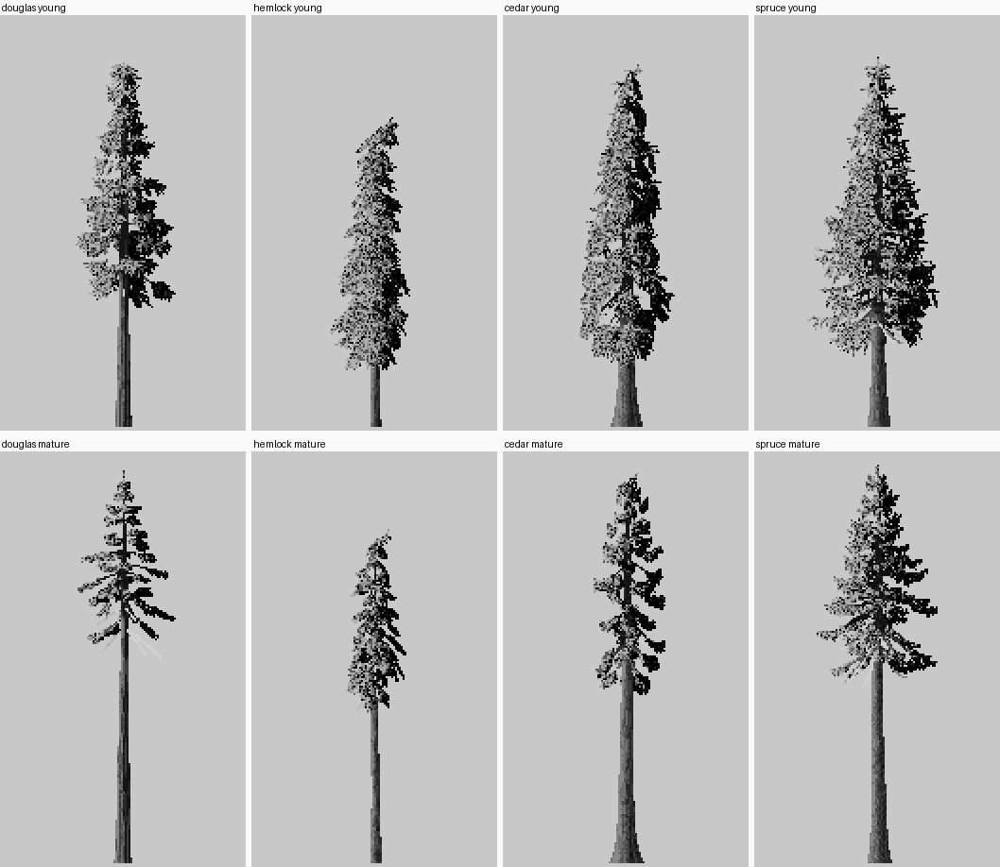
38. elements/conifers/stage1/g1.pngBash: Fetch more whole-tree references
cd ~/work/pixelart-studies/elements/conifers/refs; cat > q3.txt <<'EOF' lone Douglas fir tree Douglas fir tree field western hemlock tree old growth western red cedar tree western redcedar candelabra top Sitka spruce old growth giant old growth Douglas fir crown Olympic peninsula forest ridge trees EOF python3 ~/work/pixelart-studies/tools/imgfetch.py -f q3.txt -n 12 -o . --src openverse --sheet 2>&1 | grep -v "download failed" | tail -10 # output: 'lone Douglas fir tree': 12 images -> ./lone_Douglas_fir_tree 'Douglas fir tree field': 12 images -> ./Douglas_fir_tree_field 'western hemlock tree': 11 images -> ./western_hemlock_tree 'old growth western red cedar tree': 11 images -> ./old_growth_western_red_cedar_tree 'western redcedar candelabra top': 10 images -> ./western_redcedar_candelabra_top 'Sitka spruce old growth giant': 10 images -> ./Sitka_spruce_old_growth_giant 'old growth Douglas fir crown': 11 images -> ./old_growth_Douglas_fir_crown 'Olympic peninsula forest ridge trees': 12 images -> ./Olympic_peninsula_forest_ridge_trees
Read: elements/conifers/refs/lone_Douglas_fir_tree/_sheet.jpgRead: elements/conifers/refs/western_hemlock_tree/_sheet.jpg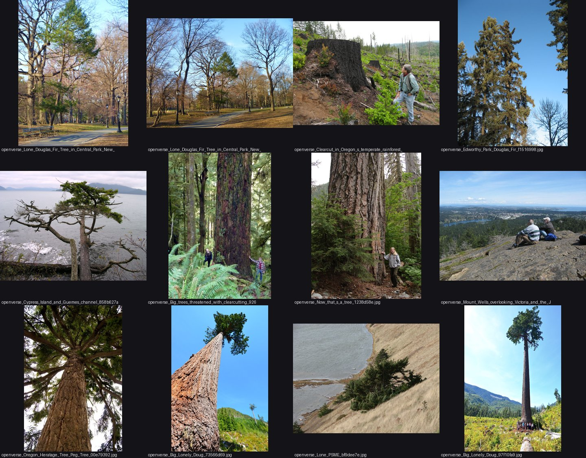
39. elements/conifers/refs/lone_Douglas_fir_tree/_sheet.jpg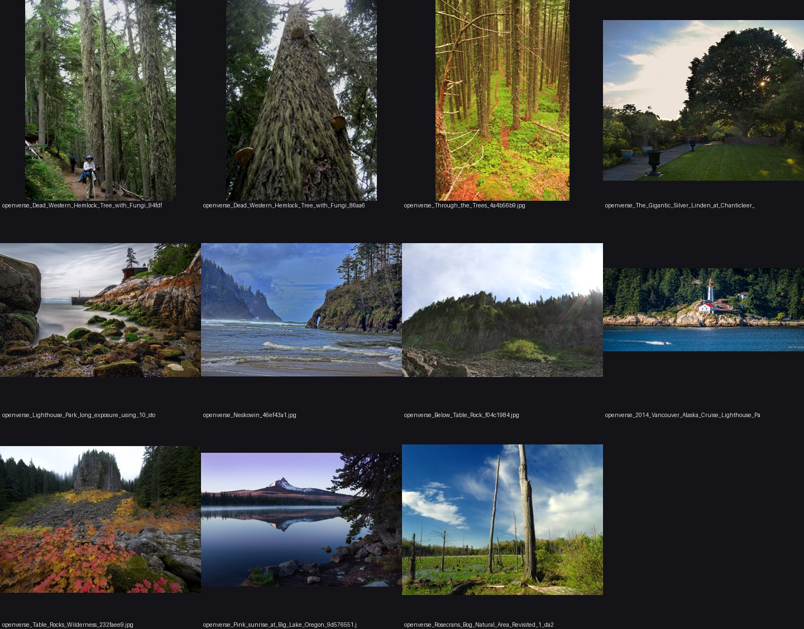
40. elements/conifers/refs/western_hemlock_tree/_sheet.jpgRead: elements/conifers/refs/old_growth_western_red_cedar_tree/_sheet.jpg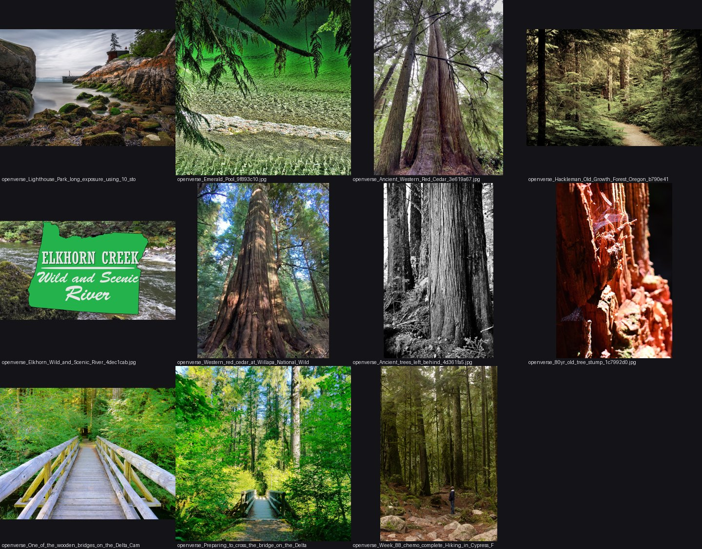
41. elements/conifers/refs/old_growth_western_red_cedar_tree/_sheet.jpgRead: elements/conifers/refs/Olympic_peninsula_forest_ridge_trees/_sheet.jpg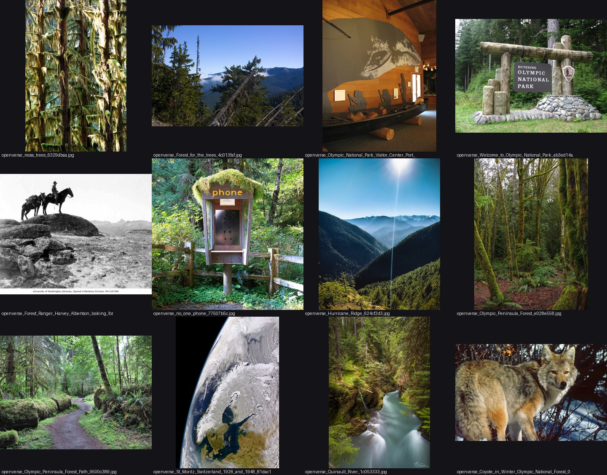
42. elements/conifers/refs/Olympic_peninsula_forest_ridge_trees/_sheet.jpgRead: elements/conifers/refs/old_growth_Douglas_fir_crown/_sheet.jpg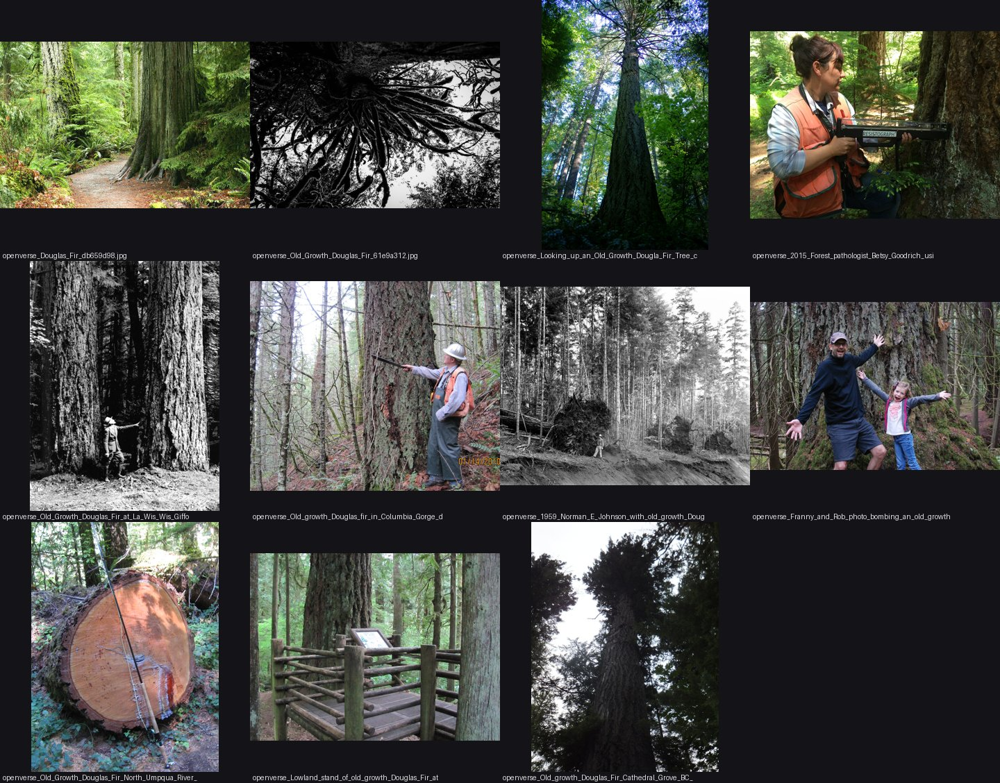
43. elements/conifers/refs/old_growth_Douglas_fir_crown/_sheet.jpgBash: Find specific ref filenames
cd ~/work/pixelart-studies/elements/conifers/refs; ls lone_Douglas_fir_tree/ | grep -i -E "lonely|edworthy|psme"; ls Sitka_spruce_old_growth_giant western_redcedar_candelabra_top # output: openverse_Big_Lonely_Doug_73566d69.jpg openverse_Big_Lonely_Doug_97f10fa9.jpg openverse_Edworthy_Park_Douglas_Fir_f1516998.jpg openverse_Lone_PSME_bf9dee7e.jpg Sitka_spruce_old_growth_giant: _sheet.jpg openverse_Cape_Meares_0693dfbe.jpg openverse_Cape_Perpetua_Park_Campground_Group_Area_8aad20c5.jpg openverse_Davison_Road_to_Fern_Canyon_and_Prairie_Creek_Re_9cb62692.jpg openverse_Emerald_Pool_9f893c10.jpg openverse_Fern_Canyon_Prairie_Creek_Redwoods_State_Park_Ca_19aae3c3.jpg openverse_Fireplace_and_Group_Area_at_Cape_Perpetua_Campgr_2affe7e5.jpg openverse_Giant_Old_Growth_tree_Sitka_spruce_ceee3664.jpg openverse_Gold_Beach_Real_Estate_North_Chantrelle_089d4095.jpg openverse_Gold_Beach_Real_Estate_North_Chantrelle_bd89bdc6.jpg openverse_Sitka_Spruce_and_Debris_da707c35.jpg sources.tsv western_redcedar_candelabra_top: _sheet.jpg openverse_Hoar_frost_on_tiny_green_western_redcedar_branch_b5eefab1.jpg openverse_Thuja_plicata_Western_Redcedar_ancient_form_3bc011c0.jpg openverse_WESTERN_REDCEDAR_62bcf52d.jpg openverse_Western_Redcedar_Roots_0a15e3b5.jpg openverse_Western_Redcedar_f04df54b.jpg openverse_Western_Redcedars_2_Idaho_fbf36261.jpg openverse_Western_redcedar_Thuja_plicata_5a0b7b73.jpg openverse_Western_redcedar_Thuja_plicata_leaf_9e9f79e0.jpg openverse_Western_redcedar_Thuja_plicata_leaf_e9f33ef7.jpg openverse_western_redcedar_foliage_with_lichen_community_1e711295.jpg sources.tsv
Read: elements/conifers/refs/lone_Douglas_fir_tree/openverse_Edworthy_Park_Douglas_Fir_f1516998.jpg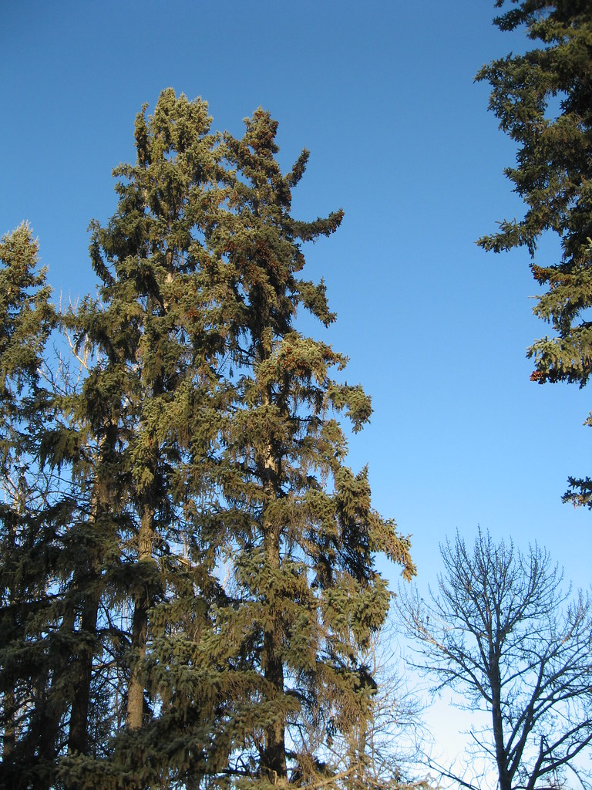
44. elements/conifers/refs/lone_Douglas_fir_tree/openverse_Edworthy_Park_Douglas_Fir_f1516998.jpgRead: elements/conifers/refs/western_redcedar_candelabra_top/openverse_Thuja_plicata_Western_Redcedar_ancient_form_3bc011c0.jpg 45. elements/conifers/refs/western_redcedar_candelabra_top/openverse_Thuja_plicata_Western_Redcedar_ancient_form_3bc011c0.jpg
45. elements/conifers/refs/western_redcedar_candelabra_top/openverse_Thuja_plicata_Western_Redcedar_ancient_form_3bc011c0.jpg
Read: elements/conifers/refs/lone_Douglas_fir_tree/openverse_Big_Lonely_Doug_97f10fa9.jpg 46. elements/conifers/refs/lone_Douglas_fir_tree/openverse_Big_Lonely_Doug_97f10fa9.jpg
46. elements/conifers/refs/lone_Douglas_fir_tree/openverse_Big_Lonely_Doug_97f10fa9.jpg
Write: elements/conifers/palette.py
"""The palette is the light (SYNTHESIS). Ramps per material, per hour and weather, per depth band.
Foliage ramps have 8 steps: 0-3 shadow family (sky-lit, hue walks toward blue-black), 4-7 lit
family (sun-lit, hue walks from brown-olive at the dark end to the sun's colour at the top), after
Ferrari's V16 conifer ramp: black, (0,7,0), (0,11,0), (0,31,15) | (95,71,0), (79,83,19),
(143,151,35), (151,163,63).
Wood ramps have 6 steps. Depth (aerial perspective) mixes every step toward the horizon sky and
lifts the black point; the lit colour holds longer than the shadow colour (master-copy finding:
the lit colour stays constant with distance, the shadow colour changes).
"""
import numpy as np
# light states: sun colour, sky (ambient) colour, sun strength, sky gradient top/horizon
HOURS = {
"dawn": dict(sun=(255, 170, 120), sky=(120, 120, 190), ks=0.8, top=(70, 80, 150), hor=(245, 175, 150), el=6),
"morning": dict(sun=(255, 236, 170), sky=(110, 150, 230), ks=1.0, top=(20, 150, 250), hor=(120, 215, 255), el=25),
"noon": dict(sun=(255, 250, 235), sky=(130, 170, 235), ks=1.05, top=(60, 130, 220), hor=(175, 215, 245), el=58),
"golden": dict(sun=(255, 190, 90), sky=(120, 120, 180), ks=1.0, top=(90, 110, 190), hor=(250, 200, 140), el=10),
"dusk": dict(sun=(250, 130, 110), sky=(110, 95, 160), ks=0.55, top=(60, 55, 120), hor=(235, 150, 150), el=3),
"overcast": dict(sun=(200, 205, 205), sky=(175, 185, 190), ks=0.0, top=(160, 168, 175), hor=(205, 210, 212), el=40),
"fog": dict(sun=(220, 220, 215), sky=(190, 196, 196), ks=0.0, top=(185, 190, 190), hor=(215, 218, 216), el=40),
"moon": dict(sun=(150, 170, 220), sky=(30, 40, 80), ks=0.45, top=(8, 12, 35), hor=(35, 50, 90), el=35),
}
SPECIES_ALB = {
# foliage albedo (sRGB-ish), lit-tip tint (new growth / sheen), shadow hue bias
"douglas": dict(alb=(70, 90, 38), tip=(160, 170, 70), cool=0.2),
"hemlock": dict(alb=(48, 82, 42), tip=(130, 170, 80), cool=0.25),
"cedar": dict(alb=(92, 118, 40), tip=(185, 190, 80), cool=0.1),
"spruce": dict(alb=(58, 92, 88), tip=(150, 185, 175), cool=0.45),
"subalpine": dict(alb=(64, 84, 36), tip=(150, 160, 60), cool=0.2),
}
BARK_ALB = {
"douglas": (98, 70, 55), # dark red-brown ridges, grey-brown
"hemlock": (95, 72, 62),
"cedar": (120, 80, 60), # reddish-brown to silver-grey strips
"spruce": (110, 98, 88), # grey-brown thin plates
}
def _lin(c):
c = np.asarray(c, float) / 255
return np.where(c <= 0.04045, c / 12.92, ((c + 0.055) / 1.055) ** 2.4)
def _srgb(l):
l = np.clip(l, 0, 1)
return np.round(255 * np.where(l <= 0.0031308, 12.92 * l, 1.055 * l ** (1 / 2.4) - 0.055)).astype(np.uint8)
def foliage_ramp(species, hour, depth=0.0, fog=0.0):
h = HOURS[hour]; s = SPECIES_ALB.get(species, SPECIES_ALB["douglas"])
A = _lin(s["alb"]); TIP = _lin(s["tip"])
S = _lin(h["sun"]); K = _lin(h["sky"])
ks = h["ks"]
out = []
# shadow family: sky light only, falling into the crown's dark; hue walks toward the sky colour
for a in (0.0, 0.035, 0.08, 0.2):
c = A * K * a * 1.6
c = c * (1 - s["cool"] * 0.4) + K * a * 0.12 * s["cool"]
out.append(c)
if ks > 0:
# lit family: sun on needles; the dark end is warm brown-olive, the top takes the tip tint
for b, warm in ((0.3, 0.6), (0.42, 0.3), (0.8, 0.0), (1.0, 0.0)):
base = A * (S * b * ks * 1.9 + K * 0.25)
if warm > 0: # Ferrari's (95,71,0): sun-warmed dark olive leaning to brown
base = base * np.array([1 + 0.5 * warm, 1.0, 1 - 0.8 * warm])
if b >= 0.8:
t = 0.35 if b < 1 else 0.6
base = base * (1 - t) + TIP * S * b * ks * t * 1.2
out.append(base)
else:
# overcast/fog: no sun family; the "lit" steps are the sky-lit tops, low contrast
for b in (0.3, 0.38, 0.5, 0.6):
out.append(A * K * b * 1.2 + TIP * K * b * 0.15)
ramp = np.array(out)
ramp = _aerial(ramp, hour, depth, fog)
return _srgb(ramp)
def wood_ramp(kind, species, hour, depth=0.0, fog=0.0):
h = HOURS[hour]
if kind == "dead":
A = _lin((175, 172, 165)) # silvered snag wood
elif kind == "limb":
A = _lin(BARK_ALB.get(species, (95, 75, 60))) * 0.8
elif kind == "moss":
A = _lin((120, 150, 40))
else:
A = _lin(BARK_ALB.get(species, (95, 75, 60)))
S = _lin(h["sun"]); K = _lin(h["sky"])
out = []
for i, v in enumerate((0.03, 0.08, 0.16, 0.3, 0.55, 0.85)):
sunpart = max(0, (i - 2)) / 3
c = A * (K * v * 0.9 * (1 - sunpart * 0.5) + S * v * h["ks"] * sunpart * 1.4)
out.append(c)
return _srgb(_aerial(np.array(out), hour, depth, fog))
def _aerial(ramp, hour, depth, fog):
"""Aerial perspective: mix toward the horizon colour; darks lift most, lights hold."""
if depth <= 0 and fog <= 0:
return ramp
h = HOURS[hour]
Hc = _lin(h["hor"]) * 0.8 + _lin(h["top"]) * 0.2
lum = ramp @ np.array([0.2126, 0.7152, 0.0722])
dark = 1 - np.clip(lum / (lum.max() + 1e-6), 0, 1)
amt = np.clip(depth * (0.55 + 0.45 * dark) + fog, 0, 0.97)[:, None]
# slight violet bias in the far darks (analysis: the black point lifts and turns violet)
vio = np.array([1.05, 0.95, 1.1])
return ramp * (1 - amt) + Hc * vio * amt
def palette(species, hour, depth=0.0, fog=0.0):
return dict(fol=foliage_ramp(species, hour, depth, fog), bark=wood_ramp("bark", species, hour, depth, fog),
limb=wood_ramp("limb", species, hour, depth, fog), dead=wood_ramp("dead", species, hour, depth, fog),
moss=wood_ramp("moss", species, hour, depth, fog))
def sky(hour, H, W, seed=0, bands=8):
"""Ferrari's sky: flat bands joined by a 1-2 row checker seam."""
h = HOURS[hour]
top = np.array(h["top"], float); hor = np.array(h["hor"], float)
y = np.linspace(0, 1, H)[:, None]
cols = [top * (1 - t) + hor * t for t in np.linspace(0, 1, bands)]
band = np.clip((y[:, 0] ** 1.3) * (bands - 1), 0, bands - 1)
b0 = np.floor(band).astype(int); fr = band - b0
out = np.zeros((H, W, 3), np.uint8)
xx = np.arange(W)
for r in range(H):
c0 = np.array(cols[b0[r]]); c1 = np.array(cols[min(b0[r] + 1, bands - 1)])
row = np.tile(c0, (W, 1))
if fr[r] > 0.75: # checker seam before the next band
m = (xx + r) % 2 == 0
row[m] = c1
out[r] = row
return out
Bash: Palette + species review sheet
cd ~/work/pixelart-studies/elements/conifers; python3 - <<'EOF'
s=open('grow.py').read()
s=s.replace(''' "sapling": dict(H=2.5, cr=1.0, irr=0.1, dead=0.0, gaps=0.0, girth=1.8, fan=0.0),
"young": dict(H=13., cr=0.95, irr=0.2, dead=0.1, gaps=0.0, girth=1.0, fan=0.3),
"mature": dict(H=40., cr=0.62, irr=0.45, dead=0.25, gaps=0.12, girth=1.0, fan=0.8),
"old": dict(H=65., cr=0.45, irr=0.85, dead=0.4, gaps=0.3, girth=1.45, fan=1.0),''',''' "sapling": dict(H=2.5, cr=0.95, irr=0.1, dead=0.0, gaps=0.0, girth=1.8, fan=0.0, el=0.45),
"young": dict(H=13., cr=0.85, irr=0.2, dead=0.1, gaps=0.0, girth=1.0, fan=0.35, el=0.75),
"mature": dict(H=40., cr=0.55, irr=0.45, dead=0.25, gaps=0.12, girth=1.0, fan=0.8, el=1.0),
"old": dict(H=65., cr=0.40, irr=0.85, dead=0.4, gaps=0.3, girth=1.45, fan=1.0, el=1.25),''')
s=s.replace(''' cr = min(0.97, sp.crown_ratio * ag["cr"] * (0.75 + 0.5 * openness)) if age != "sapling" else 0.93''',''' cr = min(0.96, ag["cr"] * sp.crown_ratio / 0.65 * (0.75 + 0.5 * openness)) if age != "sapling" else 0.93''')
s=s.replace(''' fol = _foliage(branches, sp, rng, mpp, detail, H, age)''',''' fol = _foliage(branches, sp, rng, mpp, detail, H, age, ag["el"])''')
s=s.replace('''def _foliage(branches, sp, rng, mpp, detail, H, age):''','''def _foliage(branches, sp, rng, mpp, detail, H, age, elscale=1.0):''')
s=s.replace(''' taper = np.clip(1.15 - 0.6 * ((us - s0) / max(1 - s0, 1e-3)) ** 2, 0.4, 1.2)''',''' taper = np.clip(1.15 - 0.6 * ((us - s0) / max(1 - s0, 1e-3)) ** 2, 0.4, 1.2) * elscale''')
open('grow.py','w').write(s)
s=open('paint.py').read()
s=s.replace(''' shade = np.where(Kd == DEAD, 0.0, inn)''',''' shade = inn''')
open('paint.py','w').write(s)
EOF
cat > s1_col.py <<'EOF'
"""Stage 1b: species review: photo | mine (grey) | mine (colour, morning)."""
import numpy as np, sys, time
from PIL import Image
import grow, paint, palette, cmp, s1_grey
REF='refs/'
PHOTOS={'douglas':'lone_Douglas_fir_tree/openverse_Edworthy_Park_Douglas_Fir_f1516998.jpg',
'hemlock':'Tsuga_heterophylla/commons_Hoh_Rainforest_Olympic_National_Park_Washington__8f0608f4.jpg',
'cedar':'Thuja_plicata/commons_Thuja_plicata_kz01_jpg_65cfc9a2.jpg',
'spruce':'Douglas_fir_tree_crown/openverse_Sitka_Spruce_b36ebb43.jpg'}
def photo(sp,H):
im=Image.open(REF+PHOTOS[sp]).convert('RGB'); w=int(im.width*H/im.height)
return np.asarray(im.resize((w,H),Image.LANCZOS))
def mine(sp,age,seed,mpp,W,H,hour='morning',P=None,sun=None,**kw):
tr=grow.grow(sp,age,seed=seed,mpp=mpp,**kw)
hh=palette.HOURS[hour]
sun=sun or (20,hh['el'])
G,st=paint.paint_tree(tr,mpp,W,H,(W/2,H-3),sun=sun,P=P or {})
bg=palette.sky(hour,H,W)
col=paint.compose(st,G['mat'],palette.palette(sp,hour),bg)
grey=paint.compose(st,G['mat'],s1_grey.PAL,np.full((H,W,3),200,np.uint8))
return grey,col
if __name__=='__main__':
tag=sys.argv[1]; age=sys.argv[2] if len(sys.argv)>2 else 'mature'
mpp=dict(sapling=0.02,young=0.08,mature=0.2,old=0.3)[age]
rows=[]
for sp in ['douglas','hemlock','cedar','spruce']:
g,c=mine(sp,age,1,mpp,140,230)
rows.append(cmp.panel([photo(sp,230),g,c],[f'{sp} photo',f'{age} grey','morning'],k=2))
cmp.stack(rows).save(f'stage1/{tag}.png')
EOF
OPENBLAS_NUM_THREADS=1 OMP_NUM_THREADS=1 nice -n 10 python3 s1_col.py c1 mature
# output:
(Bash completed with no output)Bash: Stable seeding; rerun review
cd ~/work/pixelart-studies/elements/conifers; sed -i '' 's/rng = np.random.default_rng(seed \* 7919 + hash(sp.name) % 1000)/rng = np.random.default_rng(seed * 7919 + sum(map(ord, sp.name)))/' grow.py; grep -n "default_rng(seed" grow.py; OPENBLAS_NUM_THREADS=1 OMP_NUM_THREADS=1 nice -n 10 python3 s1_col.py c1 mature # output: 135: rng = np.random.default_rng(seed * 7919 + sum(map(ord, sp.name)))
Read: elements/conifers/stage1/c1.png47. elements/conifers/stage1/c1.png
Bash: Debug crown extents
cd ~/work/pixelart-studies/elements/conifers; python3 -c "
import grow,numpy as np
tr=grow.grow('douglas','mature',seed=1,mpp=0.2)
print('H',tr.H,'cb',tr.crown_base,'top',tr.top_y)
Ls=[b['L'] for b in tr.branches if not b['child'] and not b['dead']]
print('n limbs',len(Ls),'L pct',np.percentile(Ls,[10,50,90,100]).round(2))
print('rfun',[round(float(tr.rfun(y)),2) for y in np.linspace(tr.crown_base,tr.top_y,6)])
p=tr.fol['p']; print('fol x range',p[:,0].min(),p[:,0].max(), 'n',len(p))
"
# output:
H 36.48523011430478 cb 16.387481433648123 top 36.48523011430478
n limbs 69 L pct [0.78 2.71 4.76 5.82]
rfun [4.21, 5.52, 4.34, 3.12, 1.78, 0.0]
fol x range -4.687108247578254 4.49041826197777 n 37656Bash: Bigger elements, wider crowns
cd ~/work/pixelart-studies/elements/conifers; python3 - <<'EOF'
s=open('grow.py').read()
s=s.replace('"mature": dict(H=40., cr=0.55, irr=0.45, dead=0.25, gaps=0.12, girth=1.0, fan=0.8, el=1.0)','"mature": dict(H=40., cr=0.55, irr=0.45, dead=0.25, gaps=0.12, girth=1.0, fan=1.0, el=1.8)')
s=s.replace('"old": dict(H=65., cr=0.40, irr=0.85, dead=0.4, gaps=0.3, girth=1.45, fan=1.0, el=1.25)','"old": dict(H=65., cr=0.40, irr=0.85, dead=0.4, gaps=0.3, girth=1.45, fan=1.2, el=2.2)')
s=s.replace('"young": dict(H=13., cr=0.85, irr=0.2, dead=0.1, gaps=0.0, girth=1.0, fan=0.35, el=0.75)','"young": dict(H=13., cr=0.85, irr=0.2, dead=0.1, gaps=0.0, girth=1.0, fan=0.5, el=1.0)')
s=s.replace('"sapling": dict(H=2.5, cr=0.95, irr=0.1, dead=0.0, gaps=0.0, girth=1.8, fan=0.0, el=0.45)','"sapling": dict(H=2.5, cr=0.95, irr=0.1, dead=0.0, gaps=0.0, girth=1.8, fan=0.0, el=0.5)')
# wider crowns
for a,b in [('rmax_frac=0.16, whorled=True,\n per_whorl=(3, 5)','rmax_frac=0.2, whorled=True,\n per_whorl=(3, 5)'),
('crown_pow=0.9, crown_ratio=0.72, rmax_frac=0.15','crown_pow=0.85, crown_ratio=0.72, rmax_frac=0.2'),
('crown_pow=0.8, crown_ratio=0.75, rmax_frac=0.18','crown_pow=0.8, crown_ratio=0.75, rmax_frac=0.22'),
('crown_pow=1.0, crown_ratio=0.72, rmax_frac=0.21','crown_pow=0.95, crown_ratio=0.75, rmax_frac=0.27')]:
assert a in s, a
s=s.replace(a,b)
open('grow.py','w').write(s)
EOF
OPENBLAS_NUM_THREADS=1 OMP_NUM_THREADS=1 nice -n 10 python3 s1_col.py c2 mature
# output:
(Bash completed with no output)Read: elements/conifers/stage1/c2.png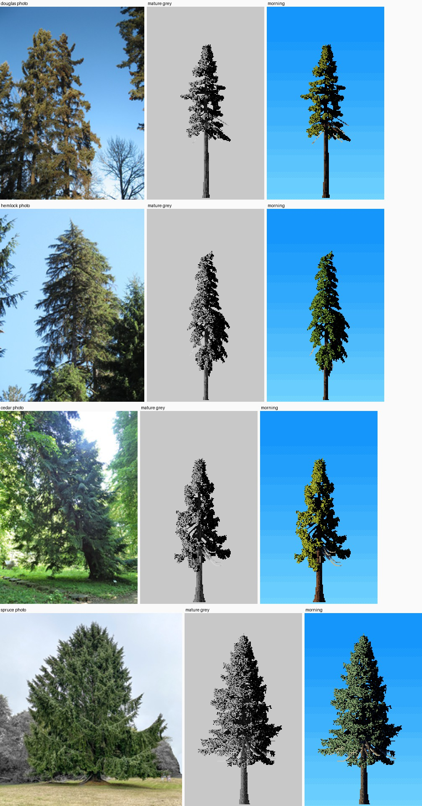
48. elements/conifers/stage1/c2.pngBash: Near-scale young trees
cd ~/work/pixelart-studies/elements/conifers; python3 - <<'EOF'
s=open('paint.py').read()
s=s.replace(''' shade = inn''',''' shade = np.where(Kd == LIMB, np.maximum(inn, 0.9), inn)''')
open('paint.py','w').write(s)
EOF
cat > s1_near.py <<'EOF'
import numpy as np, sys
import s1_col, cmp
tag=sys.argv[1]; age=sys.argv[2]; mpp=float(sys.argv[3]); W=int(sys.argv[4]); H=int(sys.argv[5])
cells=[];labs=[]
for sp in ['douglas','hemlock','cedar','spruce']:
g,c=s1_col.mine(sp,age,1,mpp,W,H)
cells+= [c]; labs+=[f'{sp} {age} {mpp}m/px']
cmp.panel(cells,labs,k=int(sys.argv[6]) if len(sys.argv)>6 else 2).save(f'stage1/{tag}.png')
EOF
OPENBLAS_NUM_THREADS=1 OMP_NUM_THREADS=1 nice -n 10 python3 s1_near.py n1 young 0.05 180 280 2
# output:
(Bash completed with no output)Read: elements/conifers/stage1/n1.png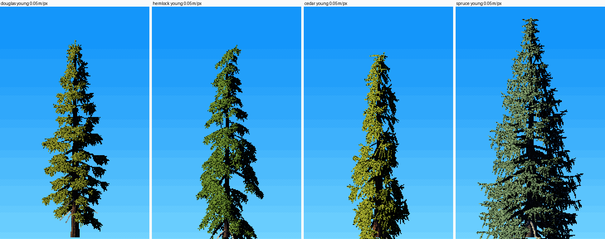
49. elements/conifers/stage1/n1.pngBash: Element-coherent mixture
cd ~/work/pixelart-studies/elements/conifers; python3 - <<'EOF'
s=open('paint.py').read()
old=''' mark = G["mark"]
lit = d > thr
v = np.clip((d - thr) / P.get("lit_span", 0.5), 0, 1)'''
new=''' # element coherence: at near scales each spray takes one mixture draw, so sprays read as
# marks; the per-pixel draw survives in a fraction of pixels (texture inside the spray)
eid = G["eid"]
if P.get("elem_coh", 0.75) > 0:
he = ((eid * 2654435761) % 1000003) / 1000003.0
he2 = ((eid * 40503 + 12345) % 999983) / 999983.0
use = (rng.random((Hh, W)) < P.get("elem_coh", 0.75)) & (eid >= 0)
r = np.where(use, he, r); r2 = np.where(use, he2, r2)
mark = G["mark"]
lit = d > thr
v = np.clip((d - thr) / P.get("lit_span", 0.5), 0, 1)
# light cap along each element: the base/top of a spray catches more light than its tip
v = np.clip(v + P.get("cap_k", 0.25) * (0.5 - G["ek"]) * (G["kind"] >= 0), 0, 1)'''
assert old in s
s=s.replace(old,new)
open('paint.py','w').write(s)
EOF
OPENBLAS_NUM_THREADS=1 OMP_NUM_THREADS=1 nice -n 10 python3 s1_near.py n2 young 0.05 180 280 2
# output:
(Bash completed with no output)Read: elements/conifers/stage1/n2.png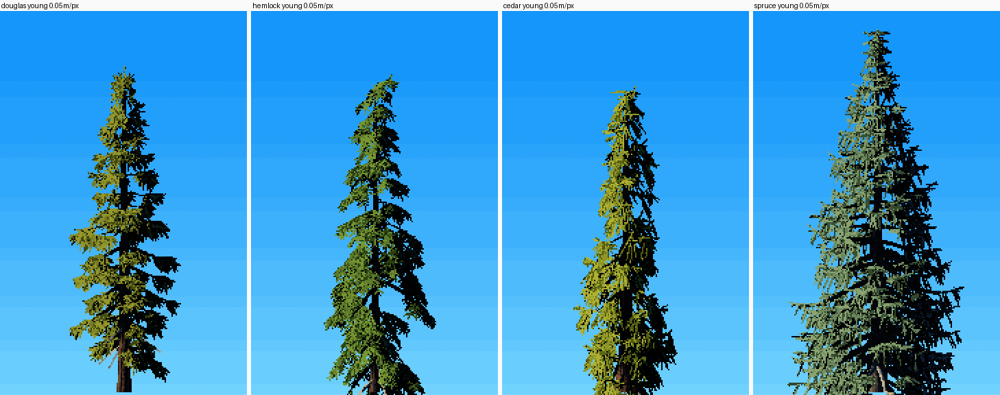
50. elements/conifers/stage1/n2.pngBash: Zoom compare near foliage vs Ferrari
cd ~/work/pixelart-studies/elements/conifers; python3 -c "
import numpy as np, s1_col, cmp, lw
from PIL import Image
g,c=s1_col.mine('hemlock','young',1,0.05,180,280)
d=lw.load('V16'); ref=d['pal'][d['idx'][0:90,560:640]]
cmp.panel([ref, c[40:130,40:120], c[150:240,40:120]],['Ferrari V16 near','hemlock top','hemlock mid'],k=5).save('stage1/n2_zoom.png')
"
# output:
(Bash completed with no output)Read: elements/conifers/stage1/n2_zoom.png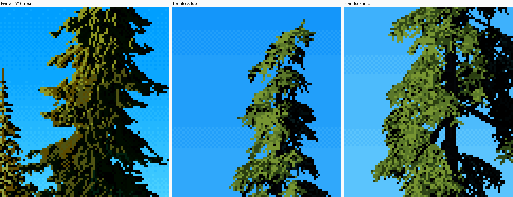
51. elements/conifers/stage1/n2_zoom.pngBash: Wedge taper and olive palette shift
cd ~/work/pixelart-studies/elements/conifers; python3 - <<'EOF'
s=open('grow.py').read()
old=''' taper = np.clip(1.15 - 0.6 * ((us - s0) / max(1 - s0, 1e-3)) ** 2, 0.4, 1.2) * elscale'''
new=''' xx = (us - s0) / max(1 - s0, 1e-3)
taper = (np.clip(1 - xx, 0, 1) ** sp.wedge * 0.9 + 0.18) * elscale # wedge: long sprays inboard, short at the tip'''
s=s.replace(old,new)
s=s.replace(''' shelf: float = 0.5 # how flat the shelves are (1 = flat tiers, 0 = rounded clumps)''',''' shelf: float = 0.5 # how flat the shelves are (1 = flat tiers, 0 = rounded clumps)
wedge: float = 0.7 # spray length falloff toward the limb tip (pointed tier tips)''')
open('grow.py','w').write(s)
s=open('palette.py').read()
old=''' for b, warm in ((0.3, 0.6), (0.42, 0.3), (0.8, 0.0), (1.0, 0.0)):
base = A * (S * b * ks * 1.9 + K * 0.25)
if warm > 0: # Ferrari's (95,71,0): sun-warmed dark olive leaning to brown
base = base * np.array([1 + 0.5 * warm, 1.0, 1 - 0.8 * warm])
if b >= 0.8:
t = 0.35 if b < 1 else 0.6
base = base * (1 - t) + TIP * S * b * ks * t * 1.2
out.append(base)'''
new=''' # painterly shift: lit needles lean toward olive/ochre (Ferrari paints sunlit conifer
# olive, not leaf green); `olive` is how far the lit family is pulled toward it
OL = _lin((150, 150, 45))
for b, warm in ((0.3, 0.7), (0.42, 0.35), (0.8, 0.0), (1.0, 0.0)):
base = A * (S * b * ks * 1.9 + K * 0.25)
lum = base @ np.array([0.2126, 0.7152, 0.0722])
ol = OL / (OL @ np.array([0.2126, 0.7152, 0.0722])) * lum * S / S.max()
base = base * (1 - s["olive"]) + ol * s["olive"]
if warm > 0: # Ferrari's (95,71,0): sun-warmed dark olive leaning to brown
base = base * np.array([1 + 0.45 * warm, 1.0, 1 - 0.85 * warm])
if b >= 0.8:
t = 0.3 if b < 1 else 0.5
base = base * (1 - t) + TIP * S * b * ks * t * 1.2
out.append(base)'''
assert old in s; s=s.replace(old,new)
s=s.replace(''' "douglas": dict(alb=(70, 90, 38), tip=(160, 170, 70), cool=0.2),
"hemlock": dict(alb=(48, 82, 42), tip=(130, 170, 80), cool=0.25),
"cedar": dict(alb=(92, 118, 40), tip=(185, 190, 80), cool=0.1),
"spruce": dict(alb=(58, 92, 88), tip=(150, 185, 175), cool=0.45),
"subalpine": dict(alb=(64, 84, 36), tip=(150, 160, 60), cool=0.2),''',''' "douglas": dict(alb=(70, 90, 38), tip=(160, 165, 70), cool=0.2, olive=0.55),
"hemlock": dict(alb=(48, 82, 42), tip=(125, 160, 75), cool=0.25, olive=0.45),
"cedar": dict(alb=(92, 118, 40), tip=(190, 185, 80), cool=0.1, olive=0.6),
"spruce": dict(alb=(58, 92, 88), tip=(160, 190, 180), cool=0.45, olive=0.15),
"subalpine": dict(alb=(64, 84, 36), tip=(150, 160, 60), cool=0.2, olive=0.6),''')
open('palette.py','w').write(s)
EOF
OPENBLAS_NUM_THREADS=1 OMP_NUM_THREADS=1 nice -n 10 python3 s1_near.py n3 young 0.05 180 280 2
# output:
(Bash completed with no output)Read: elements/conifers/stage1/n3.png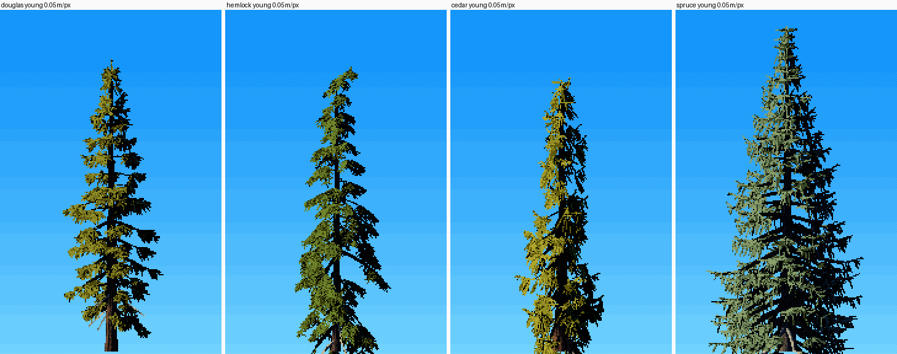
52. elements/conifers/stage1/n3.pngBash: Single limb study per species
cd ~/work/pixelart-studies/elements/conifers; cat > s1_branch.py <<'EOF'
"""Stage 1a: the smallest form -- one limb of each species, near scale, greyscale then colour.
Compared with close photos of each species' sprays."""
import numpy as np, sys
from PIL import Image
import grow, paint, palette, cmp, s1_grey
def limb_tree(sp_name, L=3.0, seed=0, mpp=0.02, age='mature', ang=0.0, az=0.0, fans=True):
sp=grow.SP[sp_name]; rng=np.random.default_rng(seed)
ag=grow.AGE[age]
p0=np.array([0,0,0.0])
b=grow._limb(p0, az, ang, L, sp, rng, 0.5, False, 20, age)
br=[b]
if fans:
nf=int(round(sp.fans*ag['fan']))
for k in range(nf):
s0=rng.uniform(0.25,0.75); side=1 if k%2==0 else -1
c=grow._limb(grow._pt(b['pts'],s0), az+side*sp.fan_angle*rng.uniform(0.6,1.3), ang*0.5-0.1*sp.droop, (1-s0)*L*rng.uniform(0.55,0.95), sp, rng, 0.5, False, 20, age, child=True)
c['parent']=0; br.append(c)
fol=grow._foliage(br, sp, rng, mpp, 1.0, 20, age, ag['el'])
wood=[]
for bi,bb in enumerate(br):
pts=bb['pts']
for i in range(len(pts)-1):
s=i/(len(pts)-1)
wood.append(dict(a=pts[i],b=pts[i+1],ra=bb['r']*(1-s*0.8),rb=bb['r']*(1-(s+1/13)*0.8),kind='limb',trunk=False))
axis=np.array([[-0.2,-5,0],[-0.2,5,0.0]])
tr=grow.Tree(sp,age,20.0,np.zeros((2,4)),wood,br,fol,-5,axis,lambda y: np.full(np.shape(y),L*1.1),5.0)
return tr
def paint_limb(sp,mpp,W,H,hour='morning',seed=0,L=3.0,P=None,grey=False,view_az=0.0):
tr=limb_tree(sp,L,seed,mpp)
hh=palette.HOURS[hour]
P=dict(P or {}); P.setdefault('limb_min_px',0.2)
G,st=paint.paint_tree(tr,mpp,W,H,(8,H*0.35),sun=(20,hh['el']),P=P,yaw=view_az)
if grey: return paint.compose(st,G['mat'],s1_grey.PAL,np.full((H,W,3),200,np.uint8))
return paint.compose(st,G['mat'],palette.palette(sp,hour),palette.sky(hour,H,W))
REFS={'douglas':'refs/Pseudotsuga_menziesii_tree/commons_Pseudotsuga_menziesii_seed_cones_jpg_2e3bf25e.jpg',
'hemlock':'refs/Tsuga_heterophylla/commons_Tsuga_heterophylla_kz11_jpg_ff64d5b7.jpg',
'cedar':'refs/Thuja_plicata/commons_Thuja_plicata_RF_jpg_5d43937c.jpg',
'spruce':'refs/Picea_sitchensis_tree/commons_Sitka_spruce_1547_jpg_8ef793bc.jpg'}
if __name__=='__main__':
tag=sys.argv[1]; mpp=float(sys.argv[2]) if len(sys.argv)>2 else 0.02
rows=[]
for sp in ['douglas','hemlock','cedar','spruce']:
W,H=170,110
im=Image.open(REFS[sp]).convert('RGB'); w=int(im.width*H/im.height)
ph=np.asarray(im.resize((w,H),Image.LANCZOS))
g=paint_limb(sp,mpp,W,H,grey=True); c=paint_limb(sp,mpp,W,H)
c2=paint_limb(sp,mpp,W,H,view_az=70)
rows.append(cmp.panel([ph,g,c,c2],[f'{sp} photo','limb grey','colour','limb toward viewer'],k=2))
cmp.stack(rows).save(f'stage1/{tag}.png')
EOF
OPENBLAS_NUM_THREADS=1 OMP_NUM_THREADS=1 nice -n 10 python3 s1_branch.py b1 0.02
# output:
(Bash completed with no output)Read: elements/conifers/stage1/b1.png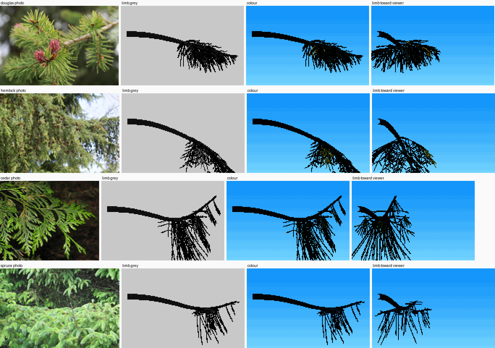
53. elements/conifers/stage1/b1.pngBash: Needle fill, thinner limbs
cd ~/work/pixelart-studies/elements/conifers; python3 - <<'EOF'
s=open('grow.py').read()
s=s.replace(''' r0 = max(0.015, (0.022 if not child else 0.016) * L ** 1.1 + (0.02 if age == "old" else 0.0))''',''' r0 = max(0.008, (0.011 if not child else 0.008) * L + (0.03 if age == "old" else 0.004))''')
s=s.replace(''' wedge: float = 0.7 # spray length falloff toward the limb tip (pointed tier tips)''',''' wedge: float = 0.7 # spray length falloff toward the limb tip (pointed tier tips)
needle: float = 0.015 # half-width of the leafy surface round each twig line (m)''')
# species needle widths
s=s.replace('''shelf=0.35, candelabra=0.1, spike=0.15),''','''shelf=0.35, candelabra=0.1, spike=0.15, needle=0.028),''')
s=s.replace('''trunk_frac=0.012, bark="scaly", buttress=0.2, shelf=0.6, spike=0.05),''','''trunk_frac=0.012, bark="scaly", buttress=0.2, shelf=0.6, spike=0.05, needle=0.016),''')
s=s.replace('''shelf=0.3, candelabra=0.8, spike=0.7),''','''shelf=0.3, candelabra=0.8, spike=0.7, needle=0.03),''')
s=s.replace('''candelabra=0.15, spike=0.1),''','''candelabra=0.15, spike=0.1, needle=0.022),''')
# needle fill inside _element: wrap returns
s=s.replace('''def _element(kind, c, tang, side, radial, sp, rng, step, taper, L):
"""Sample one foliage element as points. Returns (P, N, D, ek)."""''','''def _element(kind, c, tang, side, radial, sp, rng, step, taper, L):
"""Sample one foliage element as points, then fill its leafy width (needles) where that
width is over a pixel. Returns (P, N, D, ek)."""
el = _element_lines(kind, c, tang, side, radial, sp, rng, step, taper, L)
if el is None or sp.needle < step * 0.9:
return el
P, Nn, D, ek = el
k = int(sp.needle / step)
up = np.array([0, 1.0, 0])
if kind == "frond":
perp = np.cross(D, Nn) # in the spray plane, across the twig
else:
perp = np.cross(D, radial + 0.3 * up)
perp /= np.linalg.norm(perp, axis=1, keepdims=True) + 1e-9
outs = [P]; ns = [Nn]; ds = [D]; es = [ek]
for j in range(1, k + 1):
for sg in (-1, 1):
off = perp * (sg * j * step) + np.outer(np.full(len(P), -0.35 * j * step), up) + D * (0.4 * j * step)
outs.append(P + off); ns.append(Nn); ds.append(D * 0.5 + perp * sg * 0.8 - up * 0.3); es.append(ek)
return np.concatenate(outs), np.concatenate(ns), np.concatenate(ds), np.concatenate(es)
def _element_lines(kind, c, tang, side, radial, sp, rng, step, taper, L):''')
open('grow.py','w').write(s)
s=open('s1_branch.py').read()
s=s.replace("P=dict(P or {}); P.setdefault('limb_min_px',0.2)","P=dict(P or {}); P.setdefault('limb_min_px',0.2); P.setdefault('ao_k',0.0); P.setdefault('wc',0.0)")
open('s1_branch.py','w').write(s)
EOF
OPENBLAS_NUM_THREADS=1 OMP_NUM_THREADS=1 nice -n 10 python3 s1_branch.py b2 0.02
# output:
(Bash completed with no output)Read: elements/conifers/stage1/b2.png 54. elements/conifers/stage1/b2.png
54. elements/conifers/stage1/b2.png
Bash: Shorter strands; rerun limb & near
cd ~/work/pixelart-studies/elements/conifers; python3 - <<'EOF'
s=open('grow.py').read()
rep=[('brush_w=1.0, brush_len=0.3, strand_w=0.35, strand_len=0.35,','brush_w=1.0, brush_len=0.3, strand_w=0.35, strand_len=0.2,'),
('pinna=0.3, strand_w=0.2, strand_len=0.3, spacing=0.1, leader_nod=0.05,','pinna=0.3, strand_w=0.2, strand_len=0.15, spacing=0.1, leader_nod=0.05,'),
('pinna=0.35, strand_w=1.0, strand_len=0.7, strand_fan=3, spacing=0.13,','pinna=0.35, strand_w=1.0, strand_len=0.4, strand_fan=3, spacing=0.13,'),
('pinna=0.2, strand_w=0.8, strand_len=0.5, strand_fan=1, spacing=0.12,','pinna=0.2, strand_w=0.8, strand_len=0.25, strand_fan=1, spacing=0.12,')]
for a,b in rep:
assert a in s,a; s=s.replace(a,b)
old=''' nrm = radial * 0.8 + side * 0.4 + np.array([0, 0.25, 0])
Nn = np.tile(nrm / np.linalg.norm(nrm), (len(P), 1))
return P, Nn, D, ek'''
new=''' nrm = side * 0.75 + radial * 0.25 + np.array([0, 0.35, 0])
Nn = np.tile(nrm / np.linalg.norm(nrm), (len(P), 1))
return P, Nn, D, ek'''
assert old in s; s=s.replace(old,new)
open('grow.py','w').write(s)
EOF
OPENBLAS_NUM_THREADS=1 OMP_NUM_THREADS=1 nice -n 10 python3 s1_branch.py b3 0.02; OPENBLAS_NUM_THREADS=1 OMP_NUM_THREADS=1 nice -n 10 python3 s1_near.py n4 young 0.05 180 280 2
# output:
(Bash completed with no output)Read: elements/conifers/stage1/n4.png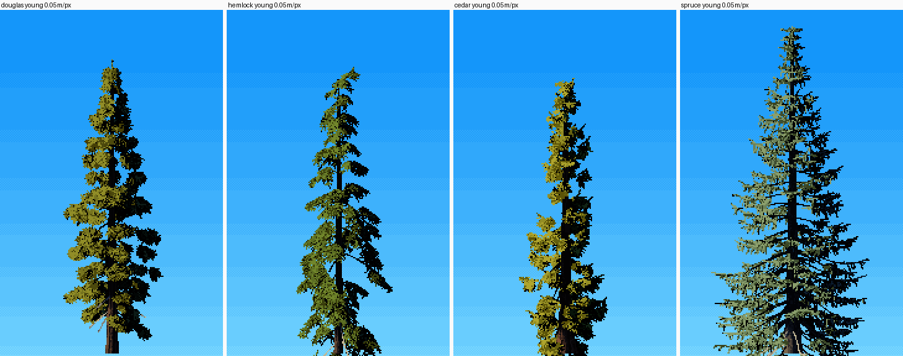
55. elements/conifers/stage1/n4.pngBash: Denser young trees
cd ~/work/pixelart-studies/elements/conifers; python3 - <<'EOF'
s=open('grow.py').read()
s=s.replace('"young": dict(H=13., cr=0.85, irr=0.2, dead=0.1, gaps=0.0, girth=1.0, fan=0.5, el=1.0)','"young": dict(H=13., cr=0.85, irr=0.2, dead=0.1, gaps=0.0, girth=1.0, fan=1.0, el=1.5)')
open('grow.py','w').write(s)
EOF
time (OPENBLAS_NUM_THREADS=1 OMP_NUM_THREADS=1 nice -n 10 python3 s1_near.py n5 young 0.05 180 280 2)
# output:
( OPENBLAS_NUM_THREADS=1 OMP_NUM_THREADS=1 nice -n 10 python3 s1_near.py n5 ) 5.83s user 0.32s system 34% cpu 17.686 totalRead: elements/conifers/stage1/n5.png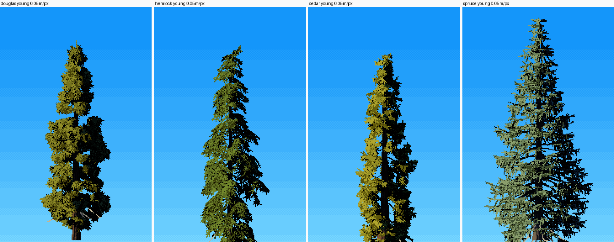
56. elements/conifers/stage1/n5.pngBash: Value plan: lit fraction target
cd ~/work/pixelart-studies/elements/conifers; python3 - <<'EOF'
s=open('paint.py').read()
old=''' mat = G["mat"]
d, a = G["dir"], G["amb"]
thr = P.get("lit_thr", 0.14)'''
new=''' mat = G["mat"]
d, a = G["dir"], G["amb"]
thr = P.get("lit_thr", 0.14)
# value plan: the lit family's share of the foliage is decided, not left to the renderer
if P.get("lit_frac") is not None and (mat == FOL).any():
thr = max(np.quantile(d[mat == FOL], 1 - P["lit_frac"]), 1e-3)'''
assert old in s; s=s.replace(old,new)
open('paint.py','w').write(s)
s=open('s1_col.py').read()
s=s.replace("G,st=paint.paint_tree(tr,mpp,W,H,(W/2,H-3),sun=sun,P=P or {})","P=dict(P or {}); P.setdefault('lit_frac',0.42)\n G,st=paint.paint_tree(tr,mpp,W,H,(W/2,H-3),sun=sun,P=P)")
open('s1_col.py','w').write(s)
EOF
OPENBLAS_NUM_THREADS=1 OMP_NUM_THREADS=1 nice -n 10 python3 s1_near.py n6 young 0.05 180 280 2
# output:
(Bash completed with no output)Read: elements/conifers/stage1/n6.png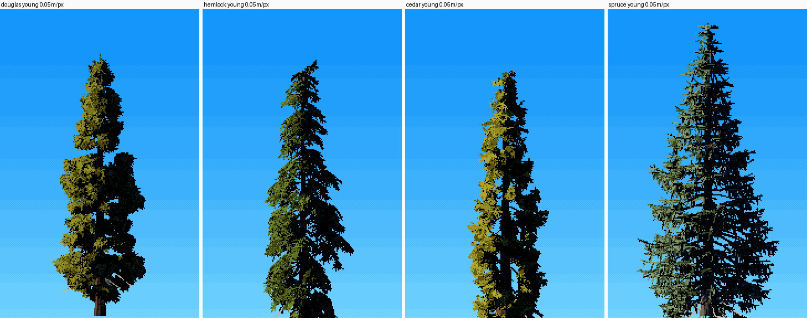
57. elements/conifers/stage1/n6.pngBash: Species x age sheet
cd ~/work/pixelart-studies/elements/conifers; cat > s2_ages.py <<'EOF'
"""species x age at fitting scales (colour, morning)."""
import numpy as np, sys, time
import s1_col, cmp
tag=sys.argv[1]
AG=[('sapling',0.015),('young',0.06),('mature',0.18),('old',0.28)]
rows=[]
for sp in ['douglas','hemlock','cedar','spruce']:
cells=[];labs=[]
for age,mpp in AG:
t0=time.time()
g,c=s1_col.mine(sp,age,int(sys.argv[2]) if len(sys.argv)>2 else 1,mpp,150,250)
cells.append(c); labs.append(f'{sp} {age} {mpp}m/px'); print(sp,age,f'{time.time()-t0:.1f}s',flush=True)
rows.append(cmp.panel(cells,labs,k=2))
cmp.stack(rows).save(f'stage2/{tag}.png')
EOF
mkdir -p stage2; OPENBLAS_NUM_THREADS=1 OMP_NUM_THREADS=1 nice -n 10 python3 s2_ages.py a1
# output:
douglas sapling 0.1s
douglas young 2.0s
douglas mature 3.5s
douglas old 4.3s
hemlock sapling 0.9s
hemlock young 3.0s
hemlock mature 8.0s
hemlock old 4.4s
cedar sapling 0.5s
cedar young 2.3s
cedar mature 2.9s
cedar old 3.4s
spruce sapling 0.9s
spruce young 6.4s
spruce mature 8.8s
spruce old 12.1sRead: elements/conifers/stage2/a1.png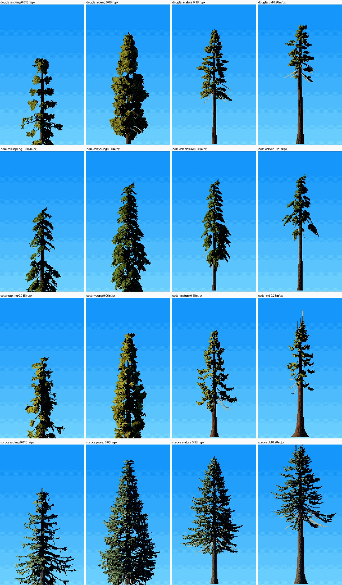
58. elements/conifers/stage2/a1.pngBash: Area fill for coarse scales; dark dead limbs
cd ~/work/pixelart-studies/elements/conifers; python3 - <<'EOF'
s=open('grow.py').read()
old=''' el = _element_lines(kind, c, tang, side, radial, sp, rng, step, taper, L)
if el is None or sp.needle < step * 0.9:
return el
P, Nn, D, ek = el'''
new=''' el = _element_lines(kind, c, tang, side, radial, sp, rng, step, taper, L)
if el is None:
return el
P, Nn, D, ek = el
# coarse scales: the spray's leafy area (width across its twig) is under a few pixels, so the
# line skeleton would read as sticks; fill the area with scattered points instead
if kind == "frond":
hw = sp.pinna * sp.frond_len * taper * 0.8
drawn = sp.pinna * sp.frond_len * taper > step * 1.2
elif kind == "strand":
hw = 0.12 * sp.strand_len * taper * sp.strand_fan + sp.needle
drawn = False
else:
hw = 0.5 * sp.brush_len * taper
drawn = False
if (not drawn) and hw > 0.5 * step and step > 2 * sp.needle:
up = np.array([0, 1.0, 0])
perp = np.cross(D, Nn if kind == "frond" else (radial + 0.3 * up))
perp /= np.linalg.norm(perp, axis=1, keepdims=True) + 1e-9
nf = int(min(6, 0.8 * 2 * hw / step)) + 1
idx = rng.integers(0, len(P), len(P) * nf)
o = rng.uniform(-hw, hw, len(idx))
Pf = P[idx] + perp[idx] * o[:, None] - np.outer(np.abs(o) * 0.3, up)
P = np.concatenate([P, Pf]); Nn = np.concatenate([Nn, Nn[idx]]); D = np.concatenate([D, D[idx]]); ek = np.concatenate([ek, ek[idx]])
if sp.needle < step * 0.9:
return P, Nn, D, ek'''
assert old in s; s=s.replace(old,new)
# dead lower limbs are dark limb wood, not silver
s=s.replace(''' kind="dead" if b["dead"] else "limb", trunk=False, bid=bi))''',''' kind="limb", trunk=False, bid=bi, dead=b["dead"]))''')
open('grow.py','w').write(s)
EOF
OPENBLAS_NUM_THREADS=1 OMP_NUM_THREADS=1 nice -n 10 python3 s2_ages.py a2 >/dev/null
# output:
(Bash completed with no output)Read: elements/conifers/stage2/a2.png59. elements/conifers/stage2/a2.png
Bash: Debug old crown width
cd ~/work/pixelart-studies/elements/conifers; python3 -c "
import grow,numpy as np
for age in ['mature','old']:
tr=grow.grow('douglas',age,seed=1,mpp=0.28)
p=tr.fol['p']; print(age,'H',round(tr.H),'cb',round(tr.crown_base),'rf max',round(max(tr.rfun(y) for y in np.linspace(tr.crown_base,tr.top_y,30)),1),'x pct',np.percentile(p[:,0],[1,5,50,95,99]).round(1),'n',len(p),'limbs',sum(1 for b in tr.branches if not b['child']))
Ls=[(b['L'],np.ptp(b['pts'][:,0]**2+b['pts'][:,2]**2)**.5) for b in tr.branches if not b['child'] and not b['dead']]
print(np.array(Ls)[:8].round(1))
"
# output:
mature H 36 cb 16 rf max 6.8 x pct [-4.1 -3.2 -0.1 3. 3.9] n 166480 limbs 88
[[4. 3.7]
[6.9 7. ]
[7.3 7. ]
[6.1 6.3]
[5.7 5.1]
[4. 3.7]
[4.7 4.5]
[5.2 4.6]]
old H 59 cb 36 rf max 9.5 x pct [-5.4 -4.3 0. 4.8 5.8] n 261575 limbs 64
[[8.3 7.7]
[5.5 4.9]
[6.7 5.9]
[7.8 7.4]
[5.8 5. ]
[4.5 4.2]
[7.4 7.1]
[4.7 4.5]]Bash: Read naturalist tree guides
cd ~/work/naturalist/plants; ls; wc -l *.md 2>/dev/null; f=$(ls | grep -E '^02'); g=$(ls | grep -E '^05'); grep -n -i -E "douglas|hemlock|cedar|spruce|crown|bark|buttress|distance|leader|spray|candelabra|spike" $f $g | head -120
# output:
01-vegetation-zones.md
02-trees.md
03-understory.md
04-riparian.md
05-old-growth.md
06-disturbance-and-succession.md
07-meadows.md
08-coast-and-salish-sea-shores.md
09-the-dry-east.md
10-seasons.md
11-skokomish-tile-ground-truth.md
README.md
data
photos
tools
218 01-vegetation-zones.md
364 02-trees.md
166 03-understory.md
186 04-riparian.md
164 05-old-growth.md
336 06-disturbance-and-succession.md
212 07-meadows.md
193 08-coast-and-salish-sea-shores.md
172 09-the-dry-east.md
97 10-seasons.md
208 11-skokomish-tile-ground-truth.md
109 README.md
2425 total
05-old-growth.md:12:The US Forest Service's interim definition for Douglas-fir/western hemlock old growth on good
05-old-growth.md:17:| big live trees: Douglas-fir or other pioneers over 81 cm (32 in) diameter or over 200 years | 20 (8) | 20 to 50, plus many shade-tolerant hemlock and cedar of all sizes; total 200 to 500 stems/ha over 5 cm |
05-old-growth.md:18:| shade-tolerant associates (hemlock, cedar, silver fir) in the understory and mid-canopy | present, "multi-layered canopy" | seedlings to 60 m trees: a continuous vertical profile |
05-old-growth.md:20:| down logs | 34 Mg (15 tons), including 10 (4) pieces over 61 cm diameter and 15 m long | **~100 to 150 Mg/ha on average in old Douglas-fir forests, higher in the wet coastal forests** (Spies, Franklin & Thomas 1988); logs cover 5 to 15% of the floor |
05-old-growth.md:24:- **Height and layering:** emergent Douglas-firs and spruces **60 to 75 m**; a main canopy of
05-old-growth.md:25: hemlock and cedar at 30 to 50 m; a lower canopy of young hemlock, silver fir, vine maple,
05-old-growth.md:27:- **Live biomass:** among the highest on Earth: old Douglas-fir forests **~700 to 1,500 Mg/ha**
05-old-growth.md:28: of above-ground biomass, the coastal spruce-hemlock forests at the top of that range
05-old-growth.md:37:- **Canopy lichens and mosses:** in old Douglas-fir crowns, lichen biomass reaches a few
05-old-growth.md:44:In the wettest forests (Sitka spruce zone, rainforest valleys, wet western hemlock zone) the
05-old-growth.md:46:shrubs, fungal disease, and elk browsing. **Logs are the seedbed.** In spruce-hemlock forests
05-old-growth.md:51:2. After 10 to 50 years (class II to III, bark sloughing, wood softening, moss cover), hemlock
05-old-growth.md:52: and spruce seedlings germinate in the moss on top of the log by the hundreds per metre.
05-old-growth.md:58:Stumps do the same thing: in logged forests, a young hemlock perched on a tall old-growth
05-old-growth.md:69:- **Giant Sitka spruce and western hemlock** widely spaced, with big bigleaf maples and vine
05-old-growth.md:71: spikemoss, licorice fern on the upper sides of limbs). The Hall of Mosses on the Hoh is the
05-old-growth.md:81:- **Silver fir zone:** tall straight silver fir, hemlock, noble fir and Alaska yellow-cedar,
05-old-growth.md:84:- **Mountain hemlock zone:** shorter (25 to 35 m), gnarled, snow-bent, wiBash: Read painter sections and photo index
cd ~/work/naturalist/plants; sed -n 197,262p 02-trees.md; sed -n 110,135p 05-old-growth.md; head -60 photos/INDEX.md 2>/dev/null
# output:
## 6. For the painters: each tree at every distance
Colours below are starting points in sRGB, from photographs in normal overcast-to-sunny light;
treat them as a palette to check against the photos in `photos/`, not as gospel. West-side
light is often **soft, overcast and blue-grey**, which flattens value contrast and makes the
conifers read almost black-green; in low winter sun the canopy tops catch warm light and the
interior drops to deep blue-green.
### Douglas-fir: the tree of the landscape
- **Young (under 40 y):** a full symmetrical cone to the ground in the open; in plantations a
dense even stand of narrow cones with dead lower branches. Upswept branch tips.
- **Mature (80 to 200 y):** tall straight column; the crown occupies the top third to half; a
**long clean bole** below, with dead branch stubs.
- **Old (300+ y):** the silhouette changes completely. The top is **flat, broken or
irregular** (tops snap in storms and are replaced by one or more upturned limbs), the
crown is **ragged and open with big gaps and heavy horizontal limbs**, often **only in the
top 10 to 20 m of a 60 to 70 m tree**. From below you see a pillar of furrowed bark with no
branches for 30 to 40 m.
- **Bark:** thick, **deeply furrowed**, dark grey-brown ridges (#4a3e36 to #5f5249) with
cinnamon-red to rust in the furrows (#7a4a30). Young bark is smooth grey-brown with resin
blisters.
- **Foliage:** medium to dark green (shadow #1e3222, mid #2f4a2c, light #4f6b3a), needles all
round the twig so sprays look soft but "bottle-brush". Cones 5 to 10 cm, hanging, with
three-pointed bracts (the hind feet and tail of a mouse hiding in the cone, in a widely told Native story).
- **At 100 m to 1 km:** old-growth Douglas-fir forest is **lumpy and deeply shadowed**:
emergent crowns stand above the rest, with dark holes between. Plantation Douglas-fir is
smooth and evenly textured.
- **Seasonal:** bright lime-green new shoots in May to June (#9fc25a), which dull over summer.
### Western hemlock: the shade tree
- **The drooping leader.** Every hemlock's tip nods over like a bent fishing rod. This is the
single fastest way to tell it from Douglas-fir at 100 m, and it should be in the grammar.
- Branches droop slightly with sprays hanging down; the crown is **soft, feathery,
fine-textured**, darker and more even than Douglas-fir (shadow #17291f, mid #253f2c).
- Old hemlocks keep crowns lower down the stem (they tolerate their own shade), often with
**mistletoe brooms** (dense witches'-broom clumps) and **conks** on the trunk.
- **Bark:** thinner, reddish-brown to grey-brown, finely scaly, becoming furrowed on old trees.
- **Regeneration:** carpets of hemlock seedlings on every rotting log; **lines of hemlocks
standing on stilt roots** where a nurse log has rotted away ("colonnades"; guide 05).
### Western redcedar: the elder
- **Base:** broadly **flared, buttressed and fluted**, often hollow (a cave you can stand in).
- **Bark:** fibrous, **stBash: Apply naturalist heights, crown widths, colours
cd ~/work/pixelart-studies/elements/conifers; python3 - <<'EOF'
s=open('grow.py').read()
s=s.replace('"mature": dict(H=40.,','"mature": dict(H=46.,').replace('"old": dict(H=65.,','"old": dict(H=68.,')
s=s.replace('rmax = sp.rmax_frac * H * (0.85 if age == "old" else 1.0) * rng.uniform(0.88, 1.12)','rmax = sp.rmax_frac * H * {"sapling": 1.0, "young": 1.0, "mature": 1.2, "old": 1.25}[age] * rng.uniform(0.88, 1.12)')
s=s.replace('"douglas": Sp("douglas", crown_pow=0.9, crown_ratio=0.62,','"douglas": Sp("douglas", crown_pow=0.9, crown_ratio=0.55,')
open('grow.py','w').write(s)
s=open('palette.py').read()
s=s.replace('"douglas": dict(alb=(70, 90, 38),','"douglas": dict(alb=(50, 78, 42),')
s=s.replace('"hemlock": dict(alb=(48, 82, 42),','"hemlock": dict(alb=(38, 66, 44),')
s=s.replace('"cedar": dict(alb=(92, 118, 40),','"cedar": dict(alb=(80, 112, 44),')
s=s.replace('"spruce": dict(alb=(58, 92, 88),','"spruce": dict(alb=(58, 90, 78),')
s=s.replace(''' "douglas": (98, 70, 55), # dark red-brown ridges, grey-brown
"hemlock": (95, 72, 62),
"cedar": (120, 80, 60), # reddish-brown to silver-grey strips
"spruce": (110, 98, 88), # grey-brown thin plates''',''' # naturalist guide 02: DF ridges #4a3e36-#5f5249, rust furrows #7a4a30; cedar #7a4b35 -> silver
# #8d8680; spruce silver-grey to purplish-grey scales; hemlock reddish/grey-brown, scaly
"douglas": (95, 80, 70),
"hemlock": (100, 78, 64),
"cedar": (122, 76, 54),
"spruce": (128, 120, 122),''')
open('palette.py','w').write(s)
EOF
OPENBLAS_NUM_THREADS=1 OMP_NUM_THREADS=1 nice -n 10 python3 s2_ages.py a3 >/dev/null
# output:
(Bash completed with no output)Read: elements/conifers/stage2/a3.png60. elements/conifers/stage2/a3.png
Write: elements/conifers/conifer.py
"""Public API: paint one Pacific Northwest conifer, or a stand of them.
import conifer
rgb, info = conifer.tree("cedar", "old", seed=3, mpp=0.25, hour="golden", el=0, W=200, H=320)
rgb = conifer.stand([...placements...], mpp=1.0, hour="morning", el=30, W=..., H=...)
Parameters (all have defaults):
species douglas | hemlock | cedar | spruce
age sapling | young | mature | old
seed individual
mpp metres per pixel (scene ~0.03-0.08, landscape ~0.2-0.5, region ~1-4)
hour dawn | morning | noon | golden | dusk | overcast | fog | moon (palette.HOURS)
sun_az 0 = from the left, 180 = from the right, 270 = behind the tree (contre-jour)
el camera elevation, 0 = side view, 30 = the iso view
depth aerial-perspective amount 0..1 (palette); fog adds a flat veil
P painter parameters (paint.py): lit_frac (value plan), mix probabilities, marks ...
The index canvas (material, step) is returned in info so an hour change is a palette swap.
"""
import numpy as np
import grow, paint, palette
DEFAULT_P = dict(lit_frac=0.42, mark_frac=0.35, mark_m=0.25, p_lit=0.62, p_dol=0.6, elem_coh=0.75)
def scale_P(P, mpp):
"""Mark handoff by scale: element coherence and stroke length fade as sprays go sub-pixel."""
P = dict(DEFAULT_P, **(P or {}))
if "elem_coh" not in (P.get("_user") or {}):
P["elem_coh"] = float(np.clip(0.9 - 0.8 * (mpp - 0.03) / 0.3, 0.15, 0.9))
return P
def tree(species="douglas", age="mature", seed=0, mpp=0.2, hour="morning", sun_az=20.0, el=0.0, yaw=0.0,
W=160, H=260, origin=None, depth=0.0, fog=0.0, P=None, bg=None, openness=0.6, lean=(0, 0), tr=None,
sky=True, **grow_kw):
hh = palette.HOURS[hour]
tr = tr or grow.grow(species, age, seed=seed, mpp=mpp, openness=openness, lean=lean, **grow_kw)
P = scale_P(P, mpp)
P.setdefault("seed", seed)
if hh["ks"] == 0: # overcast: no sun family; light from the sky dome above
P = dict(P, lit_frac=P.get("lit_frac_overcast", 0.3), wrap=0.6)
origin = origin or (W / 2, H - 3)
G, st = paint.paint_tree(tr, mpp, W, H, origin, sun=(sun_az, max(hh["el"], 4)), el=el, yaw=yaw, P=P)
if bg is None:
bg = palette.sky(hour, H, W) if sky else np.zeros((H, W, 3), np.uint8)
pal = palette.palette(species, hour, depth, fog)
rgb = paint.compose(st, G["mat"], pal, bg)
return rgb, dict(G=G, step=st, tree=tr, pal=pal)
def fit_mpp(species, age, seed, Hpx, margin=0.9, **kw):
tr = grow.grow(species, age, seed=seed, mpp=1.0, **kw)
top = tr.H + 1.0
return top / (Hpx * margin), tr
Bash: Distance ladder sweep for mature Douglas-fir
cd ~/work/pixelart-studies/elements/conifers; mkdir -p stage3; cat > s3_zoom.py <<'EOF'
"""Stage 3: one tree through the distance ladder, drawn at native pixels (no upscaling within the strip)
and at 3x, to look for pops between consecutive steps."""
import numpy as np, sys
import conifer, cmp
tag=sys.argv[1]; sp=sys.argv[2]; age=sys.argv[3]
MPPS=[0.06,0.1,0.16,0.25,0.4,0.65,1.0,1.6,2.5,4.0]
cells=[]; labs=[]
for m in MPPS:
Hp=int(75/m)+8 if m<0.4 else int(75/m)+6
Hp=min(Hp,700); W=max(12,int(Hp*0.55))
rgb,_=conifer.tree(sp,age,seed=2,mpp=m,W=W,H=Hp)
cells.append(rgb); labs.append(f'{m}')
# pad to same height, bottom aligned
Hm=max(c.shape[0] for c in cells)
out=[]
for c in cells:
pad=np.full((Hm,c.shape[1],3),250,np.uint8); pad[Hm-c.shape[0]:]=c; out.append(pad)
cmp.panel(out,labs,k=1,gap=4).save(f'stage3/{tag}_1x.png')
cmp.panel(out[3:],labs[3:],k=3,gap=4).save(f'stage3/{tag}_3x.png')
EOF
OPENBLAS_NUM_THREADS=1 OMP_NUM_THREADS=1 nice -n 10 python3 s3_zoom.py z1 douglas mature
# output:
(Bash completed with no output)Read: elements/conifers/stage3/z1_1x.png61. elements/conifers/stage3/z1_1x.png
Read: elements/conifers/stage3/z1_3x.png62. elements/conifers/stage3/z1_3x.png
Bash: Fix ladder framing; hemlock sweep
cd ~/work/pixelart-studies/elements/conifers; python3 - <<'EOF'
s=open('grow.py').read()
s=s.replace(" s0 = max(s0, 0.55) # a fanned limb carries foliage mostly on its children and tip"," s0 = max(s0, 0.4) # a fanned limb carries foliage mostly on its children and tip")
s=s.replace('r0 = max(0.008, (0.011 if not child else 0.008) * L + (0.03 if age == "old" else 0.004))','r0 = max(0.006, (0.009 if not child else 0.006) * L + (0.025 if age == "old" else 0.003))')
open('grow.py','w').write(s)
s=open('s3_zoom.py').read()
s=s.replace(""" Hp=int(75/m)+8 if m<0.4 else int(75/m)+6
Hp=min(Hp,700); W=max(12,int(Hp*0.55))""",""" import grow
Ht=grow.grow(sp,age,seed=2,mpp=1.0).H
Hp=int(Ht*1.06/m)+4; W=max(10,int(Hp*0.5))
if Hp>900: continue""")
open('s3_zoom.py','w').write(s)
EOF
OPENBLAS_NUM_THREADS=1 OMP_NUM_THREADS=1 nice -n 10 python3 s3_zoom.py z2 hemlock mature
# output:
(Bash completed with no output)Read: elements/conifers/stage3/z2_1x.png63. elements/conifers/stage3/z2_1x.png
Read: elements/conifers/stage3/z2_3x.png64. elements/conifers/stage3/z2_3x.png
Bash: Add stand compositing with shared shadow map
cd ~/work/pixelart-studies/elements/conifers; grep -n "direct = lam \* T" paint.py; cat >> conifer.py <<'EOF'
# ------------------------------------------------------------------ stands
import copy
_CACHE = {}
def grown(species, age, seed, mpp, **kw):
key = (species, age, seed, round(np.log2(mpp) * 4) / 4, tuple(sorted(kw.items())))
if key not in _CACHE:
_CACHE[key] = grow.grow(species, age, seed=seed, mpp=mpp, **kw)
return _CACHE[key]
def placed(tr, x, z, yaw=0.0, y=0.0, hscale=1.0):
"""A copy of a grown tree turned by yaw (radians) and set down at (x, y, z)."""
c, s = np.cos(yaw), np.sin(yaw)
R = np.array([[c, 0, s], [0, 1, 0], [-s, 0, c]]) * np.array([1, 1, 1])
off = np.array([x, y, z])
t = copy.copy(tr)
f = dict(tr.fol)
f["p"] = tr.fol["p"] @ R.T + off
f["n"] = tr.fol["n"] @ R.T
f["d"] = tr.fol["d"] @ R.T
t.fol = f
t.wood = [dict(w, a=w["a"] @ R.T + off, b=w["b"] @ R.T + off) for w in tr.wood]
t.axis = tr.axis @ R.T + off
rf, yy = tr.rfun, y
t.rfun = lambda q, rf=rf, yy=yy: rf(q - yy)
t.crown_base = tr.crown_base + y
t.top_y = tr.top_y + y
t.trunk = tr.trunk.copy(); t.trunk[:, :3] = tr.trunk[:, :3] @ R.T + off
return t
def stand(trees, mpp, W, H, hour="morning", sun_az=20.0, el=0.0, origin=None, P=None, far=300.0,
ground=None, stand_shadow=True, fog=0.0, bg=None):
"""trees: list of dict(species, age, seed, x, z, yaw, y). Depth-composited; one shared
opacity shadow map along the sun so trees shade each other (the dark forest interior)."""
hh = palette.HOURS[hour]
L = paint.sun_vec(sun_az, max(hh["el"], 4))
P = scale_P(P, mpp)
origin = origin or (W / 2, H - 3)
objs = []
for i, d in enumerate(trees):
tr = grown(d["species"], d["age"], d.get("seed", i), mpp)
objs.append((d, placed(tr, d["x"], d["z"], d.get("yaw", 0.0), d.get("y", 0.0))))
if stand_shadow and len(objs) > 1:
allp = np.concatenate([t.fol["p"] for _, t in objs])
cell = max(mpp * 2.0, 0.3); step = max(0.45 * mpp, 0.015)
Tall = paint.shadow_T(allp, L, cell, P.get("shadow_k", 0.5) * step ** 2 / cell ** 2)
k0 = 0
for d, t in objs:
n = len(t.fol["p"]); d["_T"] = Tall[k0:k0 + n]; k0 += n
out = palette.sky(hour, H, W) if bg is None else bg.copy()
dep = np.full((H, W), -1e9)
cam = paint.Cam(mpp, el)
idx_mat = np.zeros((H, W), np.int16); idx_step = np.full((H, W), -1, np.int16)
for d, t in objs:
Pi = dict(P, seed=d.get("seed", 0) * 31 + 7)
if "_T" in d:
Pi["T_ext"] = d["_T"]
if hh["ks"] == 0:
Pi.update(lit_frac=P.get("lit_frac_overcast", 0.3), wrap=0.6)
G = paint.rasterize(t, cam, L, W, H, origin, Pi)
st = paint.quantize(G, Pi, t, mpp)
dz = -d["z"]
depth = float(np.clip(dz / far, 0, 0.9)) if far else 0.0
pal = palette.palette(d["species"], hour, depth, fog)
rgb = paint.compose(st, G["mat"], pal, out)
m = (G["mat"] > 0) & (G["dep"] > dep)
out[m] = rgb[m]; dep[m] = G["dep"][m]
idx_mat[m] = G["mat"][m]; idx_step[m] = st[m]
return out, dict(dep=dep, mat=idx_mat, step=idx_step)
EOF
python3 - <<'EOF'
p='~/work/pixelart-studies/elements/conifers/paint.py'
s=open(p).read()
s=s.replace(" direct = lam * T\n"," if P.get(\"T_ext\") is not None and len(P[\"T_ext\"]) == len(T):\n T = np.minimum(T, P[\"T_ext\"] ** 0.7) # shade cast by neighbouring trees\n direct = lam * T\n",1)
open(p,'w').write(s)
EOF
grep -n "T_ext" paint.py
# output:
106: direct = lam * T
106: if P.get("T_ext") is not None and len(P["T_ext"]) == len(T):
107: T = np.minimum(T, P["T_ext"] ** 0.7) # shade cast by neighbouring treesBash: Stand rendering test, side view
cd ~/work/pixelart-studies/elements/conifers; python3 - <<'EOF'
p='conifer.py'; s=open(p).read()
old=''' for d, t in objs:
Pi = dict(P, seed=d.get("seed", 0) * 31 + 7)
if "_T" in d:
Pi["T_ext"] = d["_T"]
if hh["ks"] == 0:
Pi.update(lit_frac=P.get("lit_frac_overcast", 0.3), wrap=0.6)
G = paint.rasterize(t, cam, L, W, H, origin, Pi)
st = paint.quantize(G, Pi, t, mpp)'''
new=''' passes = []
for d, t in objs:
Pi = dict(P, seed=d.get("seed", 0) * 31 + 7)
if "_T" in d:
Pi["T_ext"] = d["_T"]
if hh["ks"] == 0:
Pi.update(lit_frac=P.get("lit_frac_overcast", 0.3), wrap=0.6)
G = paint.rasterize(t, cam, L, W, H, origin, Pi)
passes.append((d, t, Pi, G))
# one value plan for the whole stand: the lit share is set over all trees together, so a tree
# standing in its neighbours' shade stays dark
lf = passes[0][2].get("lit_frac") if passes else None
if lf is not None:
dv = np.concatenate([G["dir"][G["mat"] == paint.FOL] for _, _, _, G in passes] or [np.zeros(1)])
thr = max(float(np.quantile(dv, 1 - lf)), 1e-3) if len(dv) else 0.1
for d, t, Pi, G in passes:
if lf is not None:
Pi = dict(Pi, lit_frac=None, lit_thr=thr)
st = paint.quantize(G, Pi, t, mpp)'''
assert old in s; s=s.replace(old,new); open(p,'w').write(s)
EOF
mkdir -p stage4; cat > s4_stand.py <<'EOF'
"""Stage 4: several together -> a mass: stands of mixed conifers, side view and iso."""
import numpy as np, sys, time
import conifer, cmp
def layout(n, w, dmin, dmax, seed, mix=('douglas','hemlock','cedar','spruce'), ages=('mature','old','young')):
rng=np.random.default_rng(seed); T=[]
for i in range(n):
T.append(dict(species=mix[rng.integers(len(mix))], age=ages[rng.integers(len(ages))] if rng.random()<0.8 else 'mature',
seed=int(rng.integers(0,6)), x=rng.uniform(-w/2,w/2), z=-rng.uniform(dmin,dmax), yaw=rng.uniform(0,6.28)))
T.sort(key=lambda d:d['z'])
return T
if __name__=='__main__':
tag=sys.argv[1]; mpp=float(sys.argv[2]); el=float(sys.argv[3]); n=int(sys.argv[4])
W,H=int(sys.argv[5]),int(sys.argv[6]); hour=sys.argv[7] if len(sys.argv)>7 else 'morning'
t0=time.time()
T=layout(n, W*mpp*1.1, 0, 60 if el==0 else H*mpp*1.5, 3)
org=(W/2, H-4 if el==0 else H*0.95)
rgb,_=conifer.stand(T,mpp,W,H,hour=hour,el=el,origin=org,far=250)
print(f'{time.time()-t0:.0f}s')
cmp.panel([rgb],[f'{n} trees {mpp}m/px el{el} {hour}'],k=int(sys.argv[8]) if len(sys.argv)>8 else 2).save(f'stage4/{tag}.png')
EOF
OPENBLAS_NUM_THREADS=1 OMP_NUM_THREADS=1 nice -n 10 python3 s4_stand.py st1 0.3 0 24 380 260 morning 2
# output:
125sRead: elements/conifers/stage4/st1.png65. elements/conifers/stage4/st1.png
Bash: Profile a single tree render
cd ~/work/pixelart-studies/elements/conifers; OPENBLAS_NUM_THREADS=1 python3 -c "
import cProfile,pstats,grow,conifer
cProfile.run(\"conifer.tree('spruce','old',seed=1,mpp=0.3,W=200,H=260)\",'(tmp) if False else 'tmp/prof.out')
p=pstats.Stats('tmp/prof.out'); p.sort_stats('cumtime').print_stats(14)" 2>&1 | tail -30
# output:
Sat Sep 26 00:13:27 2026 tmp/prof.out
5274236 function calls (5274178 primitive calls) in 24.322 seconds
Ordered by: cumulative time
List reduced from 227 to 14 due to restriction <14>
ncalls tottime percall cumtime percall filename:lineno(function)
1 0.000 0.000 24.322 24.322 {built-in method builtins.exec}
1 0.007 0.007 24.321 24.321 <string>:1(<module>)
1 0.002 0.002 24.314 24.314 ~/work/pixelart-studies/elements/conifers/conifer.py:33(tree)
1 0.903 0.903 23.457 23.457 ~/work/pixelart-studies/elements/conifers/grow.py:131(grow)
1 1.910 1.910 21.921 21.921 ~/work/pixelart-studies/elements/conifers/grow.py:305(_foliage)
23962 1.640 0.000 16.990 0.001 ~/work/pixelart-studies/elements/conifers/grow.py:363(_element)
23962 3.586 0.000 11.338 0.000 ~/work/pixelart-studies/elements/conifers/grow.py:407(_element_lines)
17618 1.124 0.000 2.601 0.000 ~/miniconda3/lib/python3.12/site-packages/numpy/core/numeric.py:1468(cross)
84689 0.915 0.000 2.106 0.000 ~/miniconda3/lib/python3.12/site-packages/numpy/linalg/linalg.py:2383(norm)
87872 1.650 0.000 1.896 0.000 ~/miniconda3/lib/python3.12/site-packages/numpy/core/numeric.py:841(outer)
27688 1.380 0.000 1.783 0.000 ~/miniconda3/lib/python3.12/site-packages/numpy/core/function_base.py:24(linspace)
40653 0.626 0.000 1.304 0.000 ~/miniconda3/lib/python3.12/site-packages/numpy/lib/shape_base.py:1185(tile)
52854 0.369 0.000 1.240 0.000 ~/miniconda3/lib/python3.12/site-packages/numpy/core/numeric.py:1393(moveaxis)
125097 0.548 0.000 1.069 0.000 ~/miniconda3/lib/python3.12/site-packages/numpy/core/numeric.py:274(full)Agent: Vectorize conifer foliage generationBash: View current _foliage
cd ~/work/pixelart-studies/elements/conifers; sed -n '/^def _foliage/,/^def _element(/p' grow.py | head -80
# output:
def _foliage(branches, sp, rng, mpp, detail, H, age, elscale=1.0):
out = {k: [] for k in ("p", "n", "d", "pad", "bid", "eid", "ek", "kind")}
step = max(0.45 * mpp / detail, 0.015)
eid = 0
has_child = set(b.get("parent", -1) for b in branches)
for bi, b in enumerate(branches):
if b["dead"]:
continue
L = b["L"]; pts = b["pts"]
s0 = sp.spray_start if not b["child"] else 0.1
if bi in has_child:
s0 = max(s0, 0.4) # a fanned limb carries foliage mostly on its children and tip
flen = (1 - s0) * L
spacing = max(sp.spacing, 0.5 * mpp)
na = max(2, int(flen / spacing))
us = np.sort(rng.uniform(s0, 1.0, na))
c = np.array([_pt(pts, u) for u in us])
tang = np.gradient(c, axis=0) if na > 2 else np.tile(pts[-1] - pts[0], (na, 1))
tang /= np.linalg.norm(tang, axis=1, keepdims=True) + 1e-9
side = np.cross(tang, [0, 1.0, 0]); side /= np.linalg.norm(side, axis=1, keepdims=True) + 1e-9
radial = b["dir"]
# element size tapers toward the twig tip (young growth at the tip is short)
xx = (us - s0) / max(1 - s0, 1e-3)
taper = (np.clip(1 - xx, 0, 1) ** sp.wedge * 0.9 + 0.18) * elscale # wedge: long sprays inboard, short at the tip
wsum = sp.frond_w + sp.strand_w + sp.brush_w
for i in range(na):
r = rng.random() * wsum
kind = "frond" if r < sp.frond_w else ("strand" if r < sp.frond_w + sp.strand_w else "brush")
for sgn in (-1, 1):
if kind == "strand" and sgn == 1 and rng.random() < 0.5:
continue
el = _element(kind, c[i], tang[i], side[i] * sgn, radial, sp, rng, step, taper[i], L)
if el is None:
continue
P, Nn, D, ek = el
m = len(P)
out["p"].append(P); out["n"].append(Nn); out["d"].append(D)
out["ek"].append(ek)
across = np.full(m, sgn * 0.5)
vert = (P[:, 1] - c[i][1]) / (sp.strand_len + sp.frond_len + 0.1)
out["pad"].append(np.stack([across, vert, np.full(m, us[i])], 1))
out["bid"].append(np.full(m, bi)); out["eid"].append(np.full(m, eid)); out["kind"].append(np.full(m, KIND[kind]))
eid += 1
# spur: the needled twig tip, reads as the horizontal spur at the silhouette
ns = max(2, int(0.35 * L / step))
su = np.linspace(0.65, 1.0, ns)
P = np.array([_pt(pts, u) for u in su]) + rng.normal(0, step * 0.3, (ns, 3))
Dd = np.tile(tang[-1], (ns, 1))
Nn = np.tile(np.array([0, 0.85, 0]) + 0.5 * radial, (ns, 1))
Nn /= np.linalg.norm(Nn, axis=1, keepdims=True)
out["p"].append(P); out["n"].append(Nn); out["d"].append(Dd); out["ek"].append((su - 0.65) / 0.35)
out["pad"].append(np.stack([np.zeros(ns), np.full(ns, 0.2), su], 1))
out["bid"].append(np.full(nWrite: elements/conifers/foliage_fast.py
"""Vectorized foliage elements (same rules as grow._foliage_slow / grow._element, ~10-20x faster).
All anchors of all branches are gathered first; each element kind is then generated for every
element at once with ragged-array (repeat / cumsum) indexing.
"""
import numpy as np
UP = np.array([0, 1.0, 0])
KIND = {"frond": 0, "strand": 1, "brush": 2, "spur": 3, "leader": 4}
def _nrm(v):
return v / (np.linalg.norm(v, axis=-1, keepdims=True) + 1e-9)
def _ragged(n):
"""element index and local index for ragged lengths n."""
n = np.asarray(n, int)
e = np.repeat(np.arange(len(n)), n)
start = np.cumsum(n) - n
k = np.arange(n.sum()) - start[e]
return e, k
def _pts_at(pts, u):
idx = u * (len(pts) - 1)
i0 = np.clip(np.floor(idx).astype(int), 0, len(pts) - 2)
f = (idx - i0)[:, None]
return pts[i0] * (1 - f) + pts[i0 + 1] * f
def foliage(branches, sp, rng, mpp, detail, H, age, elscale=1.0):
step = max(0.45 * mpp / detail, 0.015)
has_child = set(b.get("parent", -1) for b in branches)
# ---- gather elements
EC, ET, ES, ER, ETAP, EU, EB, EK, ESG, EY = [], [], [], [], [], [], [], [], [], []
spur = []
wsum = sp.frond_w + sp.strand_w + sp.brush_w
for bi, b in enumerate(branches):
if b["dead"]:
continue
L = b["L"]; pts = b["pts"]
s0 = sp.spray_start if not b["child"] else 0.1
if bi in has_child:
s0 = max(s0, 0.4)
spacing = max(sp.spacing, 0.5 * mpp)
na = max(2, int((1 - s0) * L / spacing))
us = np.sort(rng.uniform(s0, 1.0, na))
c = _pts_at(pts, us)
tang = np.gradient(c, axis=0) if na > 2 else np.tile(pts[-1] - pts[0], (na, 1))
tang = _nrm(tang)
side = _nrm(np.cross(tang, UP))
xx = (us - s0) / max(1 - s0, 1e-3)
taper = (np.clip(1 - xx, 0, 1) ** sp.wedge * 0.9 + 0.18) * elscale
r = rng.random(na) * wsum
kind = np.where(r < sp.frond_w, 0, np.where(r < sp.frond_w + sp.strand_w, 1, 2))
for sg in (-1, 1):
keep = ~((kind == 1) & (sg == 1) & (rng.random(na) < 0.5))
m = keep.sum()
EC.append(c[keep]); ET.append(tang[keep]); ES.append(side[keep] * sg); ER.append(np.tile(b["dir"], (m, 1)))
ETAP.append(taper[keep]); EU.append(us[keep]); EB.append(np.full(m, bi)); EK.append(kind[keep])
ESG.append(np.full(m, sg)); EY.append(c[keep][:, 1])
ns = max(2, int(0.35 * L / step))
su = np.linspace(0.65, 1.0, ns)
spur.append((bi, _pts_at(pts, su) + rng.normal(0, step * 0.3, (ns, 3)), tang[-1], b["dir"], su))
if not EC:
z = np.zeros((0, 3))
return dict(p=z, n=z, d=z, pad=z, bid=np.zeros(0, int), eid=np.zeros(0, int), ek=np.zeros(0), kind=np.zeros(0, int))
C = np.concatenate(EC); T = np.concatenate(ET); S = np.concatenate(ES); R = np.concatenate(ER)
TAP = np.concatenate(ETAP); U = np.concatenate(EU); B = np.concatenate(EB); K = np.concatenate(EK)
SG = np.concatenate(ESG)
NE = len(C)
eids = np.arange(NE)
parts = []
for kind, gen in ((0, _fronds), (1, _strands), (2, _brush)):
sel = np.flatnonzero(K == kind)
if len(sel) == 0:
continue
P, N, D, ek, e = gen(C[sel], T[sel], S[sel], R[sel], TAP[sel], sp, rng, step)
P, N, D, ek, e = _fill(kind, P, N, D, ek, e, R[sel], TAP[sel], sp, rng, step)
ge = sel[e]
across = SG[ge] * 0.5
vert = (P[:, 1] - C[ge, 1]) / (sp.strand_len + sp.frond_len + 0.1)
parts.append(dict(p=P, n=N, d=D, ek=ek, pad=np.stack([across, vert, U[ge]], 1), bid=B[ge], eid=eids[ge],
kind=np.full(len(P), kind)))
eid0 = NE
for j, (bi, P, tg, rad, su) in enumerate(spur):
ns = len(P)
Nn = _nrm(np.tile(np.array([0, 0.85, 0]) + 0.5 * rad, (ns, 1)))
parts.append(dict(p=P, n=Nn, d=np.tile(tg, (ns, 1)), ek=(su - 0.65) / 0.35,
pad=np.stack([np.zeros(ns), np.full(ns, 0.2), su], 1), bid=np.full(ns, bi),
eid=np.full(ns, eid0 + j), kind=np.full(ns, 3)))
return {k: np.concatenate([q[k] for q in parts]) for k in ("p", "n", "d", "pad", "bid", "eid", "ek", "kind")}
def _fronds(C, T, S, R, TAP, sp, rng, step):
ne = len(C)
ln = sp.frond_len * TAP * rng.uniform(0.7, 1.25, ne)
fwd = sp.frond_fwd * rng.uniform(0.7, 1.2, ne)
dirv = S * np.cos(fwd)[:, None] + T * np.sin(fwd)[:, None]
dr = sp.frond_droop * rng.uniform(0.6, 1.3, ne)
n = np.maximum(2, (ln / step).astype(int) + 1)
e, k = _ragged(n)
t = k / (n[e] - 1)
P = C[e] + (t * ln[e])[:, None] * dirv[e] - (dr[e] * ln[e] * t ** 2)[:, None] * UP
D = _nrm(ln[e][:, None] * dirv[e] - (2 * dr[e] * ln[e] * t)[:, None] * UP)
Ps, Ds, eks, es = [P], [D], [t], [e]
pl = sp.pinna * ln
has = pl > step * 1.2
if has.any():
idx = np.flatnonzero(has)
npin = np.maximum(1, (ln[idx] / (pl[idx] * 0.9)).astype(int))
pe, pk = _ragged(npin) # pinna records per element
pe = idx[pe]
tk = (pk + 0.5) / npin[np.searchsorted(idx, pe)]
pe2 = np.repeat(pe, 2); tk2 = np.repeat(tk, 2); sg = np.tile([-1.0, 1.0], len(pe))
base = C[pe2] + dirv[pe2] * (tk2 * ln[pe2])[:, None] - UP * (dr[pe2] * ln[pe2] * tk2 ** 2)[:, None]
pdir = _nrm(dirv[pe2] * 0.5 + np.cross(dirv[pe2], UP) * sg[:, None])
plen = pl[pe2] * (1 - 0.5 * tk2)
m = np.maximum(1, (plen / step).astype(int))
re, rk = _ragged(m)
tt = (rk + 1) / m[re]
Pp = base[re] + (tt * plen[re])[:, None] * pdir[re] - (tt * pl[pe2][re] * 0.5 * dr[pe2][re])[:, None] * UP
Dp = pdir[re] - (0.4 * dr[pe2][re])[:, None] * UP
Ps.append(Pp); Ds.append(Dp); eks.append(tk2[re]); es.append(pe2[re])
P = np.concatenate(Ps); D = np.concatenate(Ds); ek = np.concatenate(eks); e = np.concatenate(es)
nb = _nrm(UP + 0.35 * S + 0.25 * R)
N = nb[e] + (ek ** 2 * dr[e])[:, None] * dirv[e] - (ek ** 2 * dr[e] * 0.6)[:, None] * UP
return P, _nrm(N), D, ek, e
def _strands(C, T, S, R, TAP, sp, rng, step):
ne = len(C); nf = sp.strand_fan
ln = sp.strand_len * TAP * rng.uniform(0.6, 1.3, ne)
fe = np.repeat(np.arange(ne), nf); ff = np.tile(np.arange(nf), ne)
spread = (ff - (nf - 1) / 2) * 0.35
dirv = _nrm(-UP + S[fe] * (0.25 + spread)[:, None] + T[fe] * 0.15 + R[fe] * 0.1)
n = np.maximum(2, (ln[fe] / step).astype(int) + 1)
re, rk = _ragged(n)
t = rk / (n[re] - 1)
e = fe[re]
P = C[e] + (t * ln[e])[:, None] * dirv[re] + (t ** 2 * ln[e] * 0.15)[:, None] * R[e]
N = _nrm(S * 0.75 + R * 0.25 + np.array([0, 0.35, 0]))[e]
return P, N, dirv[re], t, e
def _brush(C, T, S, R, TAP, sp, rng, step):
ne = len(C)
ln = sp.brush_len * TAP * rng.uniform(0.7, 1.3, ne)
k = rng.integers(3, 6, ne)
te, _ = _ragged(k)
a = rng.uniform(0, 2 * np.pi, len(te))
dirv = _nrm(S[te] * (np.cos(a) * 0.8)[:, None] + UP * (np.sin(a) * 0.6)[:, None] + T[te] * 0.6 - UP * 0.35)
n = np.maximum(1, (ln[te] / step).astype(int) + 1)
re, rk = _ragged(n)
t = np.where(n[re] > 1, rk / np.maximum(n[re] - 1, 1), 0.0)
e = te[re]
P = C[e] + S[e] * 0.03 + (t * ln[e])[:, None] * dirv[re] - (t ** 2 * ln[e] * 0.2)[:, None] * UP
rel = P - C[e]
N = _nrm(_nrm(rel) * 0.5 + np.array([0, 0.8, 0]) + 0.3 * R[e])
return P, N, dirv[re], t, e
def _fill(kind, P, N, D, ek, e, R, TAP, sp, rng, step):
# coarse scales: scatter points across the spray's leafy width so it doesn't read as sticks
if kind == 0:
hwe = sp.pinna * sp.frond_len * TAP * 0.8
drawn = sp.pinna * sp.frond_len * TAP > step * 1.2
elif kind == 1:
hwe = 0.12 * sp.strand_len * TAP * sp.strand_fan + sp.needle
drawn = np.zeros(len(TAP), bool)
else:
hwe = 0.5 * sp.brush_len * TAP
drawn = np.zeros(len(TAP), bool)
Rp = R[e]
if step > 2 * sp.needle:
want = (~drawn) & (hwe > 0.5 * step)
nf = np.where(want, np.minimum(6, (1.6 * hwe / step).astype(int)) + 1, 0)[e]
if nf.sum() > 0:
fe, _ = _ragged(nf)
hw = hwe[e][fe]
base = N[fe] if kind == 0 else (Rp[fe] + 0.3 * UP)
perp = _nrm(np.cross(D[fe], base))
o = rng.uniform(-1, 1, len(fe)) * hw
Pf = P[fe] + perp * o[:, None] - np.outer(np.abs(o) * 0.3, UP)
P = np.concatenate([P, Pf]); N = np.concatenate([N, N[fe]]); D = np.concatenate([D, D[fe]])
ek = np.concatenate([ek, ek[fe]]); e = np.concatenate([e, e[fe]]); Rp = np.concatenate([Rp, Rp[fe]])
if sp.needle >= step * 0.9:
k = int(sp.needle / step)
base = N if kind == 0 else (Rp + 0.3 * UP)
perp = _nrm(np.cross(D, base))
outs = [P]; ns = [N]; ds = [D]; es = [ek]; ee = [e]
for j in range(1, k + 1):
for sg in (-1, 1):
off = perp * (sg * j * step) - UP * (0.35 * j * step) + D * (0.4 * j * step)
outs.append(P + off); ns.append(N); ds.append(D * 0.5 + perp * sg * 0.8 - UP * 0.3); es.append(ek); ee.append(e)
P = np.concatenate(outs); N = np.concatenate(ns); D = np.concatenate(ds); ek = np.concatenate(es); e = np.concatenate(ee)
return P, N, D, ek, e
Bash: Hook fast foliage and compare slow vs fast
cd ~/work/pixelart-studies/elements/conifers; python3 - <<'EOF'
s=open('grow.py').read()
s=s.replace("def _foliage(branches, sp, rng, mpp, detail, H, age, elscale=1.0):","def _foliage_slow(branches, sp, rng, mpp, detail, H, age, elscale=1.0):")
s+='''
def _foliage(branches, sp, rng, mpp, detail, H, age, elscale=1.0):
import foliage_fast
return foliage_fast.foliage(branches, sp, rng, mpp, detail, H, age, elscale)
'''
open('grow.py','w').write(s)
EOF
cat > tmp/vcheck.py <<'EOF'
import time, numpy as np, grow, conifer, cmp
rows=[]
for sp in ['douglas','hemlock','cedar','spruce']:
for m in [0.18,0.06]:
cells=[]
for impl in ['slow','fast']:
f=grow._foliage_slow if impl=='slow' else grow._foliage
orig=grow._foliage
grow._foliage=f
t0=time.time(); tr=grow.grow(sp,'mature' if m>0.1 else 'young',seed=1,mpp=m); dt=time.time()-t0
grow._foliage=orig if impl=='slow' else grow._foliage
if impl=='slow': grow._foliage=orig
rgb,_=conifer.tree(sp,'x',seed=1,mpp=m,W=160,H=260,tr=tr)
cells.append(rgb); print(sp,m,impl,f'{dt:.1f}s',len(tr.fol['p']),flush=True)
rows.append(cmp.panel(cells,[f'{sp} {m} slow','fast'],k=1))
cmp.stack(rows).save('tmp/vectorize_check.png')
EOF
OPENBLAS_NUM_THREADS=1 OMP_NUM_THREADS=1 nice -n 10 python3 tmp/vcheck.py
# output:
Exit code 1
Traceback (most recent call last):
File "~/work/pixelart-studies/elements/conifers/tmp/vcheck.py", line 1, in <module>
import time, numpy as np, grow, conifer, cmp
ModuleNotFoundError: No module named 'grow'Bash: Run comparison with path
cd ~/work/pixelart-studies/elements/conifers; sed -i '' "s/rgb,_=conifer.tree(sp,'x',seed=1/rgb,_=conifer.tree(sp,'mature',seed=1/" tmp/vcheck.py; PYTHONPATH=. OPENBLAS_NUM_THREADS=1 OMP_NUM_THREADS=1 nice -n 10 python3 tmp/vcheck.py # output: douglas 0.18 slow 11.7s 734779 douglas 0.18 fast 1.2s 746732 douglas 0.06 slow 1.8s 191488 douglas 0.06 fast 0.4s 179377 hemlock 0.18 slow 17.6s 105512 hemlock 0.18 fast 0.8s 105535 hemlock 0.06 slow 4.7s 57000 hemlock 0.06 fast 0.3s 57287 cedar 0.18 slow 4.8s 470094 cedar 0.18 fast 0.9s 457726 cedar 0.06 slow 1.5s 129920 cedar 0.06 fast 0.3s 129308 spruce 0.18 slow 28.7s 291903 spruce 0.18 fast 1.2s 295102 spruce 0.06 slow 11.5s 88190 spruce 0.06 fast 1.0s 89329
Read: elements/conifers/tmp/vectorize_check.png66. elements/conifers/tmp/vectorize_check.png
Bash: Rerun side stand and iso stand
cd ~/work/pixelart-studies/elements/conifers; sed -i '' 's/P=None, far=300.0,/P=None, far=2000.0,/' conifer.py; sed -i '' 's/,far=250)/)/' s4_stand.py; (time OPENBLAS_NUM_THREADS=1 OMP_NUM_THREADS=1 nice -n 10 python3 s4_stand.py st2 0.3 0 24 380 260 morning 2) 2>&1 | tail -3; OPENBLAS_NUM_THREADS=1 OMP_NUM_THREADS=1 nice -n 10 python3 s4_stand.py st3 0.8 30 150 360 260 morning 2 # output: 39s OPENBLAS_NUM_THREADS=1 OMP_NUM_THREADS=1 nice -n 10 python3 s4_stand.py st2 9.12s user 1.54s system 26% cpu 40.175 total 71s
Read: elements/conifers/stage4/st2.png67. elements/conifers/stage4/st2.png
Read: elements/conifers/stage4/st3.png68. elements/conifers/stage4/st3.png
Bash: Ground plane with cast shadows
cd ~/work/pixelart-studies/elements/conifers; cat >> palette.py <<'EOF'
def ground_ramp(hour, kind="floor", depth=0.0, fog=0.0):
"""6 steps: 0-2 shadow family, 3-5 lit. floor = needle litter + moss; meadow = grass."""
h = HOURS[hour]
A = _lin({"floor": (92, 84, 50), "meadow": (110, 120, 50), "rock": (120, 118, 112)}[kind])
S = _lin(h["sun"]); K = _lin(h["sky"])
out = [A * K * a for a in (0.06, 0.13, 0.22)]
if h["ks"] > 0:
out += [A * (S * b * h["ks"] * 1.6 + K * 0.25) for b in (0.35, 0.55, 0.8)]
else:
out += [A * K * b for b in (0.3, 0.38, 0.46)]
return _srgb(_aerial(np.array(out), hour, depth, fog))
EOF
python3 - <<'EOF'
p='~/work/pixelart-studies/elements/conifers/conifer.py'; s=open(p).read()
old=''' out = palette.sky(hour, H, W) if bg is None else bg.copy()
dep = np.full((H, W), -1e9)
cam = paint.Cam(mpp, el)'''
new=''' out = palette.sky(hour, H, W) if bg is None else bg.copy()
dep = np.full((H, W), -1e9)
cam = paint.Cam(mpp, el)
if ground:
out, dep = _ground(out, dep, objs, cam, L, origin, mpp, hour, ground, fog, P)'''
assert old in s; s=s.replace(old,new)
s+='''
def _ground(out, dep, objs, cam, L, origin, mpp, hour, kind, fog, P):
"""Ground plane (y=0) under the stand, with the trees' cast shadows. Painted as a two-family
field: the shadow is the floor in its shadow family (never a flat grey), the edge broken by
the same noise that textures the floor."""
H, W = out.shape[:2]
ce, se = np.cos(cam.el), np.sin(cam.el)
yy, xx = np.mgrid[0:H, 0:W].astype(float)
rng = np.random.default_rng(P.get("seed", 0) + 3)
if se < 0.05: # side view: a ground band below the tree bases, 3 px
m = yy >= origin[1] - 1
gx = (xx - origin[0]) * mpp; gz = np.zeros_like(xx)
else:
gz = (yy - origin[1]) * mpp / se # screen row -> ground depth (z)
gx = (xx - origin[0]) * mpp
m = np.ones((H, W), bool)
# shadow mask: foliage and bole points dropped along the sun onto y = 0
sh = np.zeros((H, W))
Ly = max(L[1], 0.05)
for d, t in objs:
p = t.fol["p"]
if len(p) > 40000:
p = p[rng.choice(len(p), 40000, replace=False)]
g = p - np.outer(p[:, 1] / Ly, L)
g[:, 1] = 0
sx, sy, _ = cam.project(g)
ix = np.floor(sx + origin[0] + 0.5).astype(int); iy = np.floor(sy + origin[1] + 0.5).astype(int)
ok = (ix >= 0) & (ix < W) & (iy >= 0) & (iy < H)
np.add.at(sh, (iy[ok], ix[ok]), 1)
from scipy.ndimage import gaussian_filter
sh = gaussian_filter(sh, 0.8)
noise = rng.random((H, W))
lit = (sh < 0.35 + 0.4 * (noise - 0.5))
base = gaussian_filter(rng.random((H, W)), 1.2)
base = (base - base.min()) / (np.ptp(base) + 1e-9)
step = np.where(lit, 3 + np.floor(base * 2.2 + noise * 0.9).clip(0, 2), np.floor(base * 2.2 + noise * 0.9).clip(0, 2)).astype(int)
depth = np.clip(-gz / 2000.0, 0, 0.9)
for band in np.unique(np.round(depth * 10)):
sel = m & (np.round(depth * 10) == band)
ramp = palette.ground_ramp(hour, kind, band / 10, fog)
out[sel] = ramp[step[sel]]
gdep = np.where(m, -gz * ce - 1e-3 + 0 * se, -1e9) # depth of the ground point toward viewer
gdep = np.where(m, gz * ce * 0 + (0 * ce + gz * se) * 0 + gz * ce, -1e9)
return out, np.maximum(dep, np.where(m, gz * cam.el * 0 + gz * ce, -1e9))
'''
open(p,'w').write(s)
EOF
echo ok
# output:
okBash: Iso stand with ground, denser
cd ~/work/pixelart-studies/elements/conifers; python3 - <<'EOF'
p='conifer.py'; s=open(p).read()
a=s.index(' gdep = np.where(m, -gz * ce - 1e-3')
b=s.index(" return out, np.maximum(dep, np.where(m, gz * cam.el * 0 + gz * ce, -1e9))")
s=s[:a]+" return out, np.maximum(dep, np.where(m, gz * ce - 1e-3, -1e9))\n"
open(p,'w').write(s)
s=open('s4_stand.py').read()
s=s.replace("rgb,_=conifer.stand(T,mpp,W,H,hour=hour,el=el,origin=org)","rgb,_=conifer.stand(T,mpp,W,H,hour=hour,el=el,origin=org,ground='floor')")
s=s.replace("org=(W/2, H-4 if el==0 else H*0.95)","org=(W/2, H-4 if el==0 else H*1.0)")
s=s.replace("T=layout(n, W*mpp*1.1, 0, 60 if el==0 else H*mpp*1.5, 3)","T=layout(n, W*mpp*1.1, (0 if el==0 else -10), 60 if el==0 else H*mpp*2.0, 3)")
open('s4_stand.py','w').write(s)
EOF
OPENBLAS_NUM_THREADS=1 OMP_NUM_THREADS=1 nice -n 10 python3 s4_stand.py st4 0.8 30 500 360 260 morning 2
# output:
165sRead: elements/conifers/stage4/st4.png 69. elements/conifers/stage4/st4.png
69. elements/conifers/stage4/st4.png
Bash: Bark close-up study
cd ~/work/pixelart-studies/elements/conifers; python3 - <<'EOF'
s=open('palette.py').read()
s=s.replace(" for a in (0.0, 0.035, 0.08, 0.2):"," for a in (0.0, 0.028, 0.06, 0.13):")
open('palette.py','w').write(s)
EOF
mkdir -p stage5; cat > s5_bark.py <<'EOF'
"""Stage 5: the bole close up (scene zoom): Douglas-fir furrows, cedar buttress/flutes/strips,
hemlock scales, Sitka plates. Lower 8 m of an old tree at 0.03 m/px vs photos."""
import numpy as np, sys
from PIL import Image
import grow, paint, palette, cmp
PH={'douglas':'refs/lone_Douglas_fir_tree/openverse_Now_that_s_a_tree_1238d58e.jpg',
'hemlock':'refs/western_hemlock_tree_drooping_leader/openverse_Dead_Western_Hemlock_Tree_with_Fungi_86aa6c7b.jpg',
'cedar':'refs/old_growth_western_red_cedar_tree/openverse_Western_red_cedar_at_Willapa_National_Wild_f0b5f6dc.jpg',
'spruce':'refs/Sitka_spruce_tree_Olympic/openverse_Tree_Hugger_8ef6ad8e.jpg'}
import glob
def ph(sp,H):
f=PH[sp]
if not glob.glob(f): f=glob.glob(f.split('_')[0]+'*')[0]
g=glob.glob(f[:-12]+'*') or [f]
im=Image.open(g[0]).convert('RGB'); w=int(im.width*H/im.height); return np.asarray(im.resize((w,H),Image.LANCZOS))
def bole(sp,mpp=0.03,W=200,H=270,hour='morning',sun=(20,30)):
tr=grow.grow(sp,'old',seed=1,mpp=mpp)
cam_y=0
P=dict(seed=1,lit_frac=0.42)
G,st=paint.paint_tree(tr,mpp,W,H,(W/2,H-6),sun=sun,P=P)
bg=palette.sky(hour,H,W)
pal=palette.palette(sp,hour)
img=paint.compose(st,G['mat'],pal,bg)
gr=palette.ground_ramp(hour)
img[H-6:]=gr[1]
return img
if __name__=='__main__':
tag=sys.argv[1]; rows=[]
for sp in ['douglas','hemlock','cedar','spruce']:
try: p=ph(sp,270)
except Exception as e: p=np.zeros((270,150,3),np.uint8); print(e)
rows.append(cmp.panel([p,bole(sp)],[f'{sp} photo','old bole 0.03 m/px'],k=2))
cmp.stack(rows).save(f'stage5/{tag}.png')
EOF
ls refs/*/ | grep -i -E "Now_that|Willapa|Tree_Hugger|86aa6" ; OPENBLAS_NUM_THREADS=1 OMP_NUM_THREADS=1 nice -n 10 python3 s5_bark.py b1
# output:
openverse_Tree_Hugger_8ef6ad8e.jpg
openverse_Now_that_s_a_tree_1238d58e.jpg
openverse_Western_red_cedar_at_Willapa_National_Wildlife_R_212e79a3.jpg
openverse_Dead_Western_Hemlock_Tree_with_Fungi_86aa6aa3.jpg
openverse_Dead_Western_Hemlock_Tree_with_Fungi_86aa6aa3.jpg
[Errno 21] Is a directory: 'refs/western_hemlock_Tsuga_heterophylla_branc'
[Errno 21] Is a directory: 'refs/old_growth_western_red_cedar_tree'Bash: Fix photo paths and rerun bark
cd ~/work/pixelart-studies/elements/conifers; python3 - <<'EOF'
s=open('s5_bark.py').read()
s=s.replace(""" 'hemlock':'refs/western_hemlock_tree_drooping_leader/openverse_Dead_Western_Hemlock_Tree_with_Fungi_86aa6c7b.jpg',
'cedar':'refs/old_growth_western_red_cedar_tree/openverse_Western_red_cedar_at_Willapa_National_Wild_f0b5f6dc.jpg',""",""" 'hemlock':'refs/western_hemlock_tree_drooping_leader/openverse_Dead_Western_Hemlock_Tree_with_Fungi_86aa6aa3.jpg',
'cedar':'refs/old_growth_western_red_cedar_tree/openverse_Western_red_cedar_at_Willapa_National_Wildlife_R_212e79a3.jpg',""")
s=s.replace(""" f=PH[sp]
if not glob.glob(f): f=glob.glob(f.split('_')[0]+'*')[0]
g=glob.glob(f[:-12]+'*') or [f]
im=Image.open(g[0])""",""" im=Image.open(PH[sp])""")
open('s5_bark.py','w').write(s)
EOF
OPENBLAS_NUM_THREADS=1 OMP_NUM_THREADS=1 nice -n 10 python3 s5_bark.py b1
# output:
(Bash completed with no output)Read: elements/conifers/stage5/b1.png 70. elements/conifers/stage5/b1.png
70. elements/conifers/stage5/b1.png
Bash: Locate wood u storage
cd ~/work/pixelart-studies/elements/conifers; grep -n "uu.append\|Nrm = np.cos" paint.py
# output:
197: uu.append(np.zeros(nl)); vv.append(c[:, 1] if s.get("trunk") else t * ln)
209: Nrm = np.cos(TH)[..., None] * e2 + np.sin(TH)[..., None] * e1
212: uu.append((TH / np.pi).reshape(-1))Bash: View wood sampling block
cd ~/work/pixelart-studies/elements/conifers; sed -n 198,214p paint.py
# output:
else:
na = max(3, int(np.pi * rmax / (0.5 * mpp)) + 1)
th = np.linspace(-np.pi / 2, np.pi / 2, na)
TT, TH = np.meshgrid(t, th, indexing="ij")
R = (ra + (rb - ra) * TT)
# buttress flutes: the radius ripples round the bole near the ground
if s.get("trunk") and tr.sp.flutes > 0:
yb = (a[1] + axis[1] * TT)
fl = np.exp(-yb / (0.05 * tr.H + 0.6)) * tr.sp.buttress
R = R * (1 + 0.18 * fl * np.cos(TH * tr.sp.flutes + 1.3) ** 3)
C = a[None, None] + TT[..., None] * axis
Nrm = np.cos(TH)[..., None] * e2 + np.sin(TH)[..., None] * e1
pts.append((C + R[..., None] * Nrm).reshape(-1, 3))
nrm.append(Nrm.reshape(-1, 3))
uu.append((TH / np.pi).reshape(-1))
vv.append(C[..., 1].reshape(-1) if s.get("trunk") else (TT * ln).reshape(-1))
m = len(pts[-1])Bash: Voronoi bark and flute normals
cd ~/work/pixelart-studies/elements/conifers; python3 - <<'EOF'
p='paint.py'; s=open(p).read()
old=''' if s.get("trunk") and tr.sp.flutes > 0:
yb = (a[1] + axis[1] * TT)
fl = np.exp(-yb / (0.05 * tr.H + 0.6)) * tr.sp.buttress
R = R * (1 + 0.18 * fl * np.cos(TH * tr.sp.flutes + 1.3) ** 3)
C = a[None, None] + TT[..., None] * axis
Nrm = np.cos(TH)[..., None] * e2 + np.sin(TH)[..., None] * e1
pts.append((C + R[..., None] * Nrm).reshape(-1, 3))
nrm.append(Nrm.reshape(-1, 3))
uu.append((TH / np.pi).reshape(-1))'''
new=''' dlog = np.zeros_like(R)
if s.get("trunk") and tr.sp.flutes > 0:
yb = (a[1] + axis[1] * TT)
fl = np.exp(-yb / (0.05 * tr.H + 0.6)) * tr.sp.buttress
ph = TH * tr.sp.flutes + 1.3
amp = 0.22 * fl
R = R * (1 + amp * np.cos(ph) ** 3)
dlog = amp * 3 * np.cos(ph) ** 2 * -np.sin(ph) * tr.sp.flutes # dR/dtheta / R
C = a[None, None] + TT[..., None] * axis
Nrm0 = np.cos(TH)[..., None] * e2 + np.sin(TH)[..., None] * e1
Eth = -np.sin(TH)[..., None] * e2 + np.cos(TH)[..., None] * e1
Nrm = Nrm0 - np.clip(dlog, -2, 2)[..., None] * Eth * 0.8 # flute valleys turn from the light
Nrm /= np.linalg.norm(Nrm, axis=-1, keepdims=True)
pts.append((C + R[..., None] * Nrm0).reshape(-1, 3))
nrm.append(Nrm.reshape(-1, 3))
uu.append((TH * R).reshape(-1)) # arc length round the bole, metres'''
assert old in s; s=s.replace(old,new)
# replace bark_pattern
a=s.index('def bark_pattern('); b=s.index('def quantize(')
new_bp='''def _voronoi(x, y, seed):
"""F1, F2 and nearest-cell id of a jittered grid (unit cells), vectorized."""
ix = np.floor(x).astype(np.int64); iy = np.floor(y).astype(np.int64)
f1 = np.full(x.shape, 9.0); f2 = np.full(x.shape, 9.0); cid = np.zeros(x.shape, np.int64)
dxn = np.zeros(x.shape); dyn = np.zeros(x.shape)
for ox in (-1, 0, 1):
for oy in (-1, 0, 1):
cx = ix + ox; cy = iy + oy
h = (cx * 73856093) ^ (cy * 19349663) ^ (seed * 83492791)
jx = ((h * 2654435761) % 1000003) / 1000003.0
jy = ((h * 40503 + 7) % 999983) / 999983.0
px = cx + 0.15 + 0.7 * jx; py = cy + 0.15 + 0.7 * jy
d = np.hypot(x - px, y - py)
closer = d < f1
f2 = np.where(closer, f1, np.minimum(f2, d))
dxn = np.where(closer, x - px, dxn); dyn = np.where(closer, y - py, dyn)
cid = np.where(closer, h, cid)
f1 = np.where(closer, d, f1)
return f1, f2, cid, dxn, dyn
BARK = {
# cell size across (m), along the bole (m), crack width (fraction), crack depth steps, lip light
"furrow": dict(sx=0.16, sy=0.55, crack=0.34, deep=2, lip=1, wander=0.8), # Douglas-fir: deep furrows, corky ridges
"fibrous": dict(sx=0.045, sy=1.6, crack=0.22, deep=1, lip=0, wander=0.5), # cedar: long fibrous strips
"scaly": dict(sx=0.08, sy=0.18, crack=0.25, deep=1, lip=1, wander=0.4), # hemlock: scaly, shallow furrows
"plates": dict(sx=0.07, sy=0.06, crack=0.28, deep=1, lip=1, wander=0.2), # Sitka: loose round scales
}
def bark_pattern(kind, u, v, mpp, seed, H):
"""Step offsets for bark, from a stretched Voronoi field in metres on the bole surface
(u = arc length round the bole, v = height). Cracks between cells are the furrows; each
plate/ridge catches a 1-px light lip on its upper edge. Features under ~2 px fade out (LOD)."""
b = BARK.get(kind)
if b is None:
return 0
x = u / b["sx"] + b["wander"] * np.sin(v / b["sy"] * 0.9 + 1.7 * np.sin(v * 0.37))
y = v / b["sy"]
f1, f2, cid, dx, dy = _voronoi(x, y, seed)
edge = f2 - f1
fade = np.clip((b["sx"] / mpp - 1.5) / 2.0, 0, 1) # cell width in px
out = np.where(edge < b["crack"] * 0.5, -b["deep"], np.where(edge < b["crack"], -1, 0))
if b["lip"]:
out = out + np.where((dy < -0.15) & (edge > b["crack"]) & (edge < b["crack"] * 2.2), 1, 0)
# per-cell tone: some plates a step lighter or darker (weathered / fresh)
tone = ((cid * 2246822519) % 7 == 0).astype(int) - ((cid * 3266489917) % 9 == 0).astype(int)
out = out + tone
return np.round(out * fade).astype(int)
def silver_mask(u, v, seed):
"""Old cedar bark weathers silver in long patches."""
f1, f2, cid, dx, dy = _voronoi(u / 0.5, v / 4.0, seed + 11)
return (cid * 2654435761) % 3 == 0
'''
s=s[:a]+new_bp+s[b:]
open(p,'w').write(s)
EOF
OPENBLAS_NUM_THREADS=1 OMP_NUM_THREADS=1 nice -n 10 python3 s5_bark.py b2
# output:
Exit code 1
Traceback (most recent call last):
File "~/work/pixelart-studies/elements/conifers/s5_bark.py", line 29, in <module>
rows.append(cmp.panel([p,bole(sp)],[f'{sp} photo','old bole 0.03 m/px'],k=2))
^^^^^^^^
File "~/work/pixelart-studies/elements/conifers/s5_bark.py", line 17, in bole
G,st=paint.paint_tree(tr,mpp,W,H,(W/2,H-6),sun=sun,P=P)
^^^^^^^^^^^^^^^^^^^^^^^^^^^^^^^^^^^^^^^^^^^^^^^^^^
File "~/work/pixelart-studies/elements/conifers/paint.py", line 379, in paint_tree
G = rasterize(tr, cam, L, W, H, origin, P)
^^^^^^^^^^^^^^^^^^^^^^^^^^^^^^^^^^^^^^
File "~/work/pixelart-studies/elements/conifers/paint.py", line 159, in rasterize
_wood(tr, cam, L, G, origin, P)
File "~/work/pixelart-studies/elements/conifers/paint.py", line 244, in _wood
G["mat"][ys, xs] = Kd
~~~~~~~~^^^^^^^^
TypeError: int() argument must be a string, a bytes-like object or a real number, not 'dict'Bash: Rename bark table and rerun
cd ~/work/pixelart-studies/elements/conifers; sed -i '' 's/^BARK = {/BARK_T = {/; s/ b = BARK.get(kind)/ b = BARK_T.get(kind)/' paint.py; grep -n "silver\|dpat" paint.py | head; OPENBLAS_NUM_THREADS=1 OMP_NUM_THREADS=1 nice -n 10 python3 s5_bark.py b2
# output:
15:Materials: 0 none, 1 foliage, 2 bark, 3 limb, 4 dead (silver) wood, 5 moss.
305:def silver_mask(u, v, seed):
306: """Old cedar bark weathers silver in long patches."""
358: dpat = bark_pattern("fibrous", G["u"], G["v"], mpp, 3, tr.H)
359: ws = ws + np.where(mat == DEAD, dpat, 0)Read: elements/conifers/stage5/b2.png71. elements/conifers/stage5/b2.png
Bash: Tune bark parameters
cd ~/work/pixelart-studies/elements/conifers; python3 - <<'EOF'
p='paint.py'; s=open(p).read()
s=s.replace('"furrow": dict(sx=0.16, sy=0.55, crack=0.34, deep=2, lip=1, wander=0.8)','"furrow": dict(sx=0.15, sy=1.3, crack=0.42, deep=2, lip=1, wander=0.9)')
s=s.replace('"scaly": dict(sx=0.08, sy=0.18, crack=0.25, deep=1, lip=1, wander=0.4)','"scaly": dict(sx=0.1, sy=0.25, crack=0.3, deep=1, lip=1, wander=0.4)')
s=s.replace('"plates": dict(sx=0.07, sy=0.06, crack=0.28, deep=1, lip=1, wander=0.2)','"plates": dict(sx=0.09, sy=0.08, crack=0.32, deep=1, lip=1, wander=0.2)')
s=s.replace('fade = np.clip((b["sx"] / mpp - 1.5) / 2.0, 0, 1)','fade = np.clip((b["sx"] / mpp - 0.8) / 1.5, 0, 1)')
open(p,'w').write(s)
EOF
OPENBLAS_NUM_THREADS=1 OMP_NUM_THREADS=1 nice -n 10 python3 s5_bark.py b3
# output:
(Bash completed with no output)Read: elements/conifers/stage5/b3.png72. elements/conifers/stage5/b3.png
Bash: Ordered dither and brighter wood
cd ~/work/pixelart-studies/elements/conifers; python3 - <<'EOF'
p='paint.py'; s=open(p).read()
old=''' wv = np.clip(d * P.get("wood_kd", 0.9) + a, 0, 0.999)
ws = np.floor(wv * 6 + (r - 0.5) * P.get("wood_dither", 0.7))'''
new=''' wv = np.clip(d * P.get("wood_kd", 1.25) + a, 0, 0.999)
# hard material: ordered 2x2 dither (SYNTHESIS), only across step seams
yy, xx = np.mgrid[0:Hh, 0:W]
bayer = np.array([[0.125, 0.625], [0.875, 0.375]])[yy % 2, xx % 2]
ws = np.floor(wv * 6 + (bayer - 0.5) * P.get("wood_dither", 0.9))'''
assert old in s; s=s.replace(old,new); open(p,'w').write(s)
EOF
OPENBLAS_NUM_THREADS=1 OMP_NUM_THREADS=1 nice -n 10 python3 s5_bark.py b4
# output:
(Bash completed with no output)Read: elements/conifers/stage5/b4.png73. elements/conifers/stage5/b4.png
Bash: Raise wood ambient
cd ~/work/pixelart-studies/elements/conifers; grep -n "amb = 0.3 \* (1 - 0.8 \* shade)" paint.py; sed -i '' 's/ amb = 0.3 \* (1 - 0.8 \* shade) \* (0.6 + 0.4 \* Nn\[:, 1\] + 0.2)/ amb = 0.38 * (1 - 0.8 * shade) * (0.6 + 0.4 * Nn[:, 1] + 0.2)/' paint.py; grep -n "amb = 0.38" paint.py # output: 237: amb = 0.3 * (1 - 0.8 * shade) * (0.6 + 0.4 * Nn[:, 1] + 0.2) 237: amb = 0.38 * (1 - 0.8 * shade) * (0.6 + 0.4 * Nn[:, 1] + 0.2)
Now the sheets module.
Write: elements/conifers/sheets.py
"""Labelled parameter sheets. python3 sheets.py [A B C D E F]
A species x age (each at a fitting scale, morning)
B species x hour (mature, landscape scale; the palette is the light)
C species x distance (scene crop, landscape, region, iso patch)
D species x seed (mature individuals)
E stands: mixed forest, side x hour; iso region
F zoom strips: one tree per species through 0.05 .. 4 m/px at native pixels
"""
import numpy as np, sys, time, os
from PIL import Image, ImageDraw
import conifer, grow, palette, cmp
SPECIES = ["douglas", "hemlock", "cedar", "spruce"]
AGES = ["sapling", "young", "mature", "old"]
HOURS = ["dawn", "morning", "noon", "golden", "dusk", "overcast", "fog", "moon"]
OUT = "sheets"
os.makedirs(OUT, exist_ok=True)
def label_grid(cells, rows, cols, k=2, title=None, gap=4, pad=70):
"""cells[r][c] images (uint8), all same size; row labels at left, col labels on top."""
h, w = cells[0][0].shape[:2]
Wt = pad + len(cols) * (w * k + gap); Ht = 30 + len(rows) * (h * k + gap)
out = np.full((Ht, Wt, 3), 248, np.uint8)
for r in range(len(rows)):
for c in range(len(cols)):
im = np.repeat(np.repeat(cells[r][c], k, 0), k, 1)
y = 30 + r * (h * k + gap); x = pad + c * (w * k + gap)
out[y:y + h * k, x:x + w * k] = im
img = Image.fromarray(out); d = ImageDraw.Draw(img)
if title:
d.text((4, 2), title, fill=(0, 0, 0))
for c, cl in enumerate(cols):
d.text((pad + c * (w * k + gap) + 2, 16), str(cl), fill=(0, 0, 0))
for r, rl in enumerate(rows):
d.text((4, 30 + r * (h * k + gap) + 4), str(rl), fill=(0, 0, 0))
return img
def fit_tree(sp, age, seed, W, H, hour="morning", margin=0.93, el=0.0, **kw):
Ht = grow.grow(sp, age, seed=seed, mpp=1.0).H
mpp = (Ht + 1.0) / (H * margin)
rgb, info = conifer.tree(sp, age, seed=seed, mpp=mpp, W=W, H=H, hour=hour, el=el, **kw)
return rgb, mpp
def sheet_A():
W, H = 150, 250
cells = []
for sp in SPECIES:
row = []
for age in AGES:
rgb, mpp = fit_tree(sp, age, 1, W, H)
d = ImageDraw.Draw(im := Image.fromarray(rgb)); d.text((2, H - 12), f"{mpp:.2f} m/px", fill=(255, 255, 255))
row.append(np.asarray(im))
cells.append(row)
label_grid(cells, SPECIES, AGES, k=2, title="A: species x age (each fitted to the frame; morning, sun from the left)").save(f"{OUT}/A_species_x_age.png")
def sheet_B():
W, H = 110, 190
cells = []
for sp in SPECIES:
row = []
for hr in HOURS:
rgb, mpp = fit_tree(sp, "mature", 2, W, H, hour=hr)
row.append(rgb)
cells.append(row)
label_grid(cells, SPECIES, HOURS, k=2, title="B: species x hour (mature, ~0.25 m/px): the palette is the light").save(f"{OUT}/B_species_x_hour.png")
def sheet_D():
W, H = 110, 200
seeds = [1, 2, 3, 4, 5, 6]
cells = [[fit_tree(sp, "mature", s, W, H)[0] for s in seeds] for sp in SPECIES]
label_grid(cells, SPECIES, [f"seed {s}" for s in seeds], k=2, title="D: species x seed (mature individuals, fitted)").save(f"{OUT}/D_species_x_seed.png")
cells = [[fit_tree(sp, "old", s, W, H)[0] for s in seeds] for sp in SPECIES]
label_grid(cells, SPECIES, [f"seed {s}" for s in seeds], k=2, title="D2: species x seed (old growth, fitted)").save(f"{OUT}/D2_old_x_seed.png")
def patch(sp, n, w, d, seed, ages=("mature", "old", "young"), mix=None):
rng = np.random.default_rng(seed); T = []
for i in range(n):
s = sp if mix is None else mix[rng.integers(len(mix))]
T.append(dict(species=s, age=ages[rng.integers(len(ages))], seed=int(rng.integers(0, 5)),
x=rng.uniform(-w / 2, w / 2), z=-rng.uniform(0, d), yaw=rng.uniform(0, 6.28)))
return T
def sheet_C():
"""per species: scene (upper crown at 0.04 m/px), landscape (0.25), region (1.5, a group),
iso (30 deg, 1.0 m/px patch)."""
W, H = 160, 200
cols = ["scene 0.04 m/px (crown top)", "landscape 0.25", "region 1.5 (group)", "iso 30deg 1.0 (patch)", "region iso 2.5"]
cells = []
for sp in SPECIES:
row = []
tr = grow.grow(sp, "mature", seed=1, mpp=0.04)
rgb, _ = conifer.tree(sp, "mature", seed=1, mpp=0.04, W=W, H=H, origin=(W / 2, H + (tr.H - 8) / 0.04), tr=tr)
row.append(rgb)
rgb, _ = fit_tree(sp, "mature", 1, W, H, margin=0.93)
row.append(rgb)
T = patch(sp, 14, 90, 60, 5)
rgb, _ = conifer.stand(T, 1.5, W, H, origin=(W / 2, H - 4), ground="floor")
row.append(rgb)
T = patch(sp, 70, 170, 260, 7)
rgb, _ = conifer.stand(T, 1.0, W, H, el=30, origin=(W / 2, H * 1.02), ground="floor")
row.append(rgb)
T = patch(sp, 160, 420, 650, 9)
rgb, _ = conifer.stand(T, 2.5, W, H, el=30, origin=(W / 2, H * 1.02), ground="floor")
row.append(rgb)
cells.append(row)
print("C", sp, flush=True)
label_grid(cells, SPECIES, cols, k=2, title="C: species x distance/zoom (morning)").save(f"{OUT}/C_species_x_distance.png")
def sheet_E():
W, H = 300, 170
T = patch(None, 34, 110, 70, 11, mix=SPECIES)
cells = []
hrs = ["morning", "golden", "overcast", "dusk"]
for hr in hrs:
rgb, _ = conifer.stand(T, 0.35, W, H, hour=hr, origin=(W / 2, H - 4), ground="floor")
cells.append([rgb])
print("E", hr, flush=True)
label_grid(cells, hrs, ["mixed stand, side view, 0.35 m/px"], k=2, title="E: a mixed stand at four hours").save(f"{OUT}/E_stand_x_hour.png")
W, H = 320, 220
T = patch(None, 700, 360, 500, 13, mix=SPECIES)
rgb, _ = conifer.stand(T, 1.2, W, H, el=30, origin=(W / 2, H * 1.02), ground="floor")
label_grid([[rgb]], ["iso"], ["mixed old forest, iso 30deg, 1.2 m/px, morning"], k=2).save(f"{OUT}/E2_iso_forest.png")
def sheet_F():
MPPS = [0.05, 0.08, 0.13, 0.2, 0.32, 0.5, 0.8, 1.25, 2.0, 3.2]
rows = []
for sp in SPECIES:
Ht = grow.grow(sp, "mature", seed=2, mpp=1.0).H
cells, labs = [], []
for m in MPPS:
Hp = int(Ht * 1.05 / m) + 4; Wp = max(10, int(Hp * 0.45))
rgb, _ = conifer.tree(sp, "mature", seed=2, mpp=m, W=Wp, H=Hp)
cells.append(rgb); labs.append(f"{m}")
Hm = max(c.shape[0] for c in cells)
padded = []
for c in cells:
p = np.full((Hm, c.shape[1], 3), 248, np.uint8); p[Hm - c.shape[0]:] = c; padded.append(p)
rows.append(cmp.panel(padded, [f"{sp} {l} m/px" if i == 0 else l for i, l in enumerate(labs)], k=1, gap=3))
print("F", sp, flush=True)
cmp.stack(rows).save(f"{OUT}/F_zoom_strips_1x.png")
if __name__ == "__main__":
which = sys.argv[1:] or list("ABCDEF")
for w in which:
t0 = time.time()
globals()[f"sheet_{w}"]()
print(w, f"{time.time() - t0:.0f}s", flush=True)
Bash: Render sheets A B D F in background
cd ~/work/pixelart-studies/elements/conifers; for s in A B D F; do OPENBLAS_NUM_THREADS=1 OMP_NUM_THREADS=1 nohup nice -n 10 python3 sheets.py $s > tmp/sheet_$s.log 2>&1 & done; sleep 1; echo started # output: started
Bash: Check sheet progress
sleep 240; cd ~/work/pixelart-studies/elements/conifers; tail -3 tmp/sheet_*.log # output: <tool_use_error>Blocked: sleep 240 followed by: cd ~/work/pixelart-studies/elements/conifers tail -3 tmp/sheet_*.log. To wait for a condition, use Monitor with an until-loop (e.g. `until <check>; do sleep 2; done`). To wait for a command you started, use run_in_background: true. Do not chain shorter sleeps to work around this block.</tool_use_error>
Bash: Wait for sheets to finish
cd ~/work/pixelart-studies/elements/conifers; until [ $(grep -l -E "^[ABDF] [0-9]+s|Error" tmp/sheet_*.log 2>/dev/null | wc -l) -ge 4 ]; do sleep 10; done; tail -2 tmp/sheet_*.log # output: Command running in background with ID: b02zc2suy. Output is being written to: (tmp) You will be notified when it completes. To check interim output, use Read on that file path. Session cwd remains ~/work; directory changes made by the backgrounded command do not apply to subsequent commands.
Bash: Compare against vox-trees sheet
cd ~/work/pixelart-studies/elements/conifers; mkdir -p compare; cat > cmp_voxtrees.py <<'EOF'
"""Honest side-by-side with vox-trees at its own sheet scale (0.42 m/px shown 2x)."""
import numpy as np
from PIL import Image
import conifer, cmp
vt=np.asarray(Image.open('~/work/voxsim/docs/paint-baseline/trees/individuals_spruce.png').convert('RGB'))
vtc=vt[0:160,0:384] # first three cells (2x already)
cells=[]
for sp,age in [('douglas','young'),('hemlock','young'),('cedar','young'),('spruce','young'),('douglas','mature'),('spruce','mature')]:
rgb,_=conifer.tree(sp,age,seed=3,mpp=0.42 if age=='young' else 0.42,W=64,H=80 if age=='young' else 130,sky=True)
cells.append(rgb)
a=cmp.panel([vtc[:, :, :]],['vox-trees spruce (their sheet, 2x)'],k=1)
b=cmp.panel(cells,['DF young','WH young','RC young','SS young','DF mature','SS mature'],k=2)
cmp.stack([a,b]).save('compare/voxtrees_vs_mine.png')
EOF
OPENBLAS_NUM_THREADS=1 OMP_NUM_THREADS=1 nice -n 10 python3 cmp_voxtrees.py
# output:
(Bash completed with no output)Read: elements/conifers/compare/voxtrees_vs_mine.png74. elements/conifers/compare/voxtrees_vs_mine.png
Read: elements/conifers/sheets/A_species_x_age.png75. elements/conifers/sheets/A_species_x_age.png
Read: elements/conifers/sheets/B_species_x_hour.png 76. elements/conifers/sheets/B_species_x_hour.png
76. elements/conifers/sheets/B_species_x_hour.png
Read: elements/conifers/sheets/D2_old_x_seed.png77. elements/conifers/sheets/D2_old_x_seed.png
Bash: Fix saplings, DF young, hemlock droop, spikes, fog, golden
cd ~/work/pixelart-studies/elements/conifers; python3 - <<'EOF'
s=open('grow.py').read()
rep=[('"sapling": dict(H=2.5, cr=0.95, irr=0.1, dead=0.0, gaps=0.0, girth=1.8, fan=0.0, el=0.5)','"sapling": dict(H=2.5, cr=0.95, irr=0.1, dead=0.0, gaps=0.0, girth=1.8, fan=0.7, el=0.9)'),
('spray_start=0.25, brush_w=1.0, brush_len=0.3, strand_w=0.35, strand_len=0.2,','spray_start=0.25, brush_w=0.6, brush_len=0.22, frond_w=0.6, frond_len=0.4, frond_droop=0.25, frond_fwd=0.6, pinna=0.25, strand_w=0.3, strand_len=0.2,'),
('droop=0.45, tip_upturn=0.0, len_jitter=0.3, fans=2.5, fan_angle=0.9,','droop=0.32, tip_upturn=0.04, len_jitter=0.3, fans=2.5, fan_angle=0.9,'),
('internode=0.3, base_angle=-0.1, top_upsweep=0.4, low_droop=0.6,','internode=0.3, base_angle=-0.05, top_upsweep=0.4, low_droop=0.45,')]
for a,b in rep:
assert a in s,a; s=s.replace(a,b)
# visible dead spikes: min radius
s=s.replace('wood.append(dict(a=a[:3].copy(), b=b[:3].copy(), ra=a[3], rb=b[3], kind=kind, trunk=True))','wood.append(dict(a=a[:3].copy(), b=b[:3].copy(), ra=max(a[3], 0.08 if kind == "dead" else 0), rb=max(b[3], 0.06 if kind == "dead" else 0), kind=kind, trunk=True))')
s=s.replace('wood.append(dict(a=mid, b=top, ra=r0 * 0.7, rb=0.03, kind="dead" if dead_re else "bark", trunk=False))','wood.append(dict(a=mid, b=top, ra=max(r0 * 0.7, 0.12), rb=0.06, kind="dead" if dead_re else "bark", trunk=False))')
open('grow.py','w').write(s)
p=open('paint.py').read()
p=p.replace('inn = np.clip((y - cb) / max(0.6, 0.06 * tr.H), 0, 1) * (y < tr.top_y + 0.5)','inn = np.clip((y - cb + 0.12 * tr.H) / max(0.6, 0.3 * tr.H), 0, 1) * (y < tr.top_y + 0.5)')
open('paint.py','w').write(p)
c=open('conifer.py').read()
c=c.replace(''' hh = palette.HOURS[hour]
tr = tr or grow.grow(''',''' hh = palette.HOURS[hour]
if hour == "fog" and fog == 0.0:
fog = 0.3
tr = tr or grow.grow(''')
open('conifer.py','w').write(c)
q=open('palette.py').read()
q=q.replace('"golden": dict(sun=(255, 190, 90), sky=(120, 120, 180), ks=1.0,','"golden": dict(sun=(255, 185, 80), sky=(110, 110, 175), ks=1.25,')
open('palette.py','w').write(q)
EOF
grep -n "min radius\|0.08 if kind" grow.py | head -3
# output:
183: wood.append(dict(a=a[:3].copy(), b=b[:3].copy(), ra=max(a[3], 0.08 if kind == "dead" else 0), rb=max(b[3], 0.06 if kind == "dead" else 0), kind=kind, trunk=True))Read: elements/conifers/sheets/F_zoom_strips_1x.png78. elements/conifers/sheets/F_zoom_strips_1x.png
Bash: Foliage along whole limbs; rerun sheets
cd ~/work/pixelart-studies/elements/conifers; python3 - <<'EOF'
s=open('grow.py').read()
import re
s=s.replace('spray_start=0.25, brush_w=0.6,','spray_start=0.15, brush_w=0.6,')
s=s.replace('spray_start=0.2, frond_w=1.0,','spray_start=0.12, frond_w=1.0,')
s=s.replace('spray_start=0.15, frond_w=0.35,','spray_start=0.1, frond_w=0.35,')
s=s.replace('spray_start=0.25, frond_w=0.5,','spray_start=0.12, frond_w=0.5,')
s=s.replace(" s0 = max(s0, 0.4) # a fanned limb"," s0 = max(s0, 0.3) # a fanned limb")
open('grow.py','w').write(s)
f=open('foliage_fast.py').read()
f=f.replace(" s0 = max(s0, 0.4)"," s0 = max(s0, 0.3)")
open('foliage_fast.py','w').write(f)
p=open('paint.py').read()
old=''' front = dep > G["dep"][ys, xs]
xs, ys, dep, sunlit, amb, U, Vv, Kd = xs[front]'''
new=''' # limbs sit inside their own sprays: push them back so foliage around them wins
dep = np.where(Kd == LIMB, dep - P.get("limb_sink", 0.25), dep)
front = dep > G["dep"][ys, xs]
xs, ys, dep, sunlit, amb, U, Vv, Kd = xs[front]'''
assert old in p; p=p.replace(old,new); open('paint.py','w').write(p)
EOF
grep -c "spray_start" grow.py; for s in A D; do OPENBLAS_NUM_THREADS=1 OMP_NUM_THREADS=1 nohup nice -n 10 python3 sheets.py $s > tmp/sheet_$s.log 2>&1 & done; OPENBLAS_NUM_THREADS=1 OMP_NUM_THREADS=1 nohup nice -n 10 python3 sheets.py C > tmp/sheet_C.log 2>&1 & OPENBLAS_NUM_THREADS=1 OMP_NUM_THREADS=1 nohup nice -n 10 python3 sheets.py F > tmp/sheet_F.log 2>&1 & echo ok
# output:
6
okBash: Wait for sheets A and C
cd ~/work/pixelart-studies/elements/conifers; until grep -q -E "^C [0-9]+s|Error" tmp/sheet_C.log && grep -q -E "^A [0-9]+s|Error" tmp/sheet_A.log; do sleep 10; done; tail -2 tmp/sheet_*.log # output: Command running in background with ID: b1szukqdh. Output is being written to: (tmp) You will be notified when it completes. To check interim output, use Read on that file path. Session cwd remains ~/work; directory changes made by the backgrounded command do not apply to subsequent commands.
Bash: Check for critic notes
ls ~/work/pixelart-studies/elements/conifers/; ls ~/work/pixelart-studies/elements/_critic/ | tail -5; grep -n -i conifer ~/work/pixelart-studies/elements/_critic/LOG.md | tail -5 # output: CRITIQUE.md __pycache__ cmp.py cmp_voxtrees.py compare conifer.py foliage_fast.py grow.py lw.py paint.py palette.py refs render.py s0_copy.py s0_tune.py s1_branch.py s1_col.py s1_grey.py s1_near.py s2_ages.py s3_zoom.py s4_stand.py s5_bark.py sheets sheets.py stage0 stage1 stage2 stage3 stage4 stage5 stats.py t0.py tgrey.py tmp tree.py r7 r8 r9 wait.sh zoom.py 70:- (a 'conifers' folder appeared: not assigned to me, ignoring.) 88:- New folders (broadleaf, understory, conifers) are not assigned to me; not critiquing them.
Bash: Read critique
cat ~/work/pixelart-studies/elements/conifers/CRITIQUE.md # output: # Critique (newest first) From the studio critic (second round of critics). These are my reads, not gates: you own the work and decide. Viewing crops are in `elements/_critic2/rN/`. ## Round 3 — 2026-09-26 00:44 — `stage4/st2–st4.png` (stands), `stage5/b1–b3.png` (old boles) (My read; your call.) **st4 (500 trees, 0.8 m/px, 30° down) reads as a PNW forest at 1×.** Upright spires, dark gaps between crowns, haze deepening up-slope. The composition is right. What gives it away at 8× (`_critic2/r3/con_st4.png`): 1. **Every crown is salt and pepper.** Sage, yellow and navy single pixels scattered evenly through each spire, with no lit cap and no shadow side. The aerial study's measured rule (READY.md, "Far and iso") is a lit cap on the sun side of each crown, lit share 0.35–0.56, dark on the other side. Your cedar in st1 already does tier-top light; at this distance it should collapse to one lit flank per spire plus a few tier-edge ticks. 2. **Yellow-lit crowns are random per tree.** Some spires are gold, their neighbours sage, independent of position or sun side. It reads as a species mix or autumn larch. If it's meant as sunlit vs shaded trees, tie it to the terrain and the sun. The boles (`b3`): - **Cedar is the strong one**: flared, fluted buttress with the flutes carried in light and dark bands. It reads beside the photo. - **Spruce is sandpaper**: single-pixel tan/navy noise over the whole bole. Sitka bark is thin, flaking scales, and the photo's bole is mossy, with buttress roots. Scales want small 2–3 px plates with a dark lower lip, not pixel noise. - **Douglas-fir**: the photo's bark is deep furrows between thick corky ridges broken into long blocks. Yours has the right vertical grain but the ridges don't catch light; give each ridge a lit edge on the sun side and a dark furrow beside it, at a coarser spacing. - All four have a hard vertical terminator and a near-black shadow half. Old boles in the forest get strong reflected light from the floor and neighbouring trunks; lift the shadow side one or two steps and let the bark texture show in it. ## Round 2 — 2026-09-26 00:22 — `stage4/st1.png` (24-tree stand, morning, 0.3 m/px) **The front cedar is a real step: light now rides the tier tops.** (`_critic2/r2/con_st1_cedar.png`.) Each upturned spray catches olive-gold on its upper edge on *both* sides of the trunk, with the pad below in dark green-black. That's the V16 mechanism from round 1, and at 8× this crown is the closest thing to Ferrari in the folder. The haze ladder (warm near, blue-grey mid, pale ghost far) also gives the stand real depth at 1×. What I see now: 1. **The mid-layer trees are salt and pepper** (`con_st1_mid.png`, the tree at x≈480–620, y≈120–300). Their crowns are an even scatter of pale sage, blue-grey and navy single pixels, with no tiers and no lit tier-tops. The fix you made to the cedar hasn't propagated down the haze ladder. With distance the tier structure should simplify (fewer tiers, each a flat pad with
Bash: Locate lighting knobs
cd ~/work/pixelart-studies/elements/conifers; grep -n '"wc"\|wc = P.get\|elem_coh\|he = ((eid' paint.py conifer.py | head
# output:
conifer.py:22:DEFAULT_P = dict(lit_frac=0.42, mark_frac=0.35, mark_m=0.25, p_lit=0.62, p_dol=0.6, elem_coh=0.75)
conifer.py:28: if "elem_coh" not in (P.get("_user") or {}):
conifer.py:29: P["elem_coh"] = float(np.clip(0.9 - 0.8 * (mpp - 0.03) / 0.3, 0.15, 0.9))
paint.py:92: wc = P.get("wc", 0.5)
paint.py:333: if P.get("elem_coh", 0.75) > 0:
paint.py:334: he = ((eid * 2654435761) % 1000003) / 1000003.0
paint.py:336: use = (rng.random((Hh, W)) < P.get("elem_coh", 0.75)) & (eid >= 0)Bash: Relight tier tops; branch coherence; test
cd ~/work/pixelart-studies/elements/conifers; python3 - <<'EOF'
p='paint.py'; s=open(p).read()
s=s.replace(' wc = P.get("wc", 0.5)',' wc = P.get("wc", 0.18) # crown-normal weight: low, so light rides tier tops, not a half-split')
s=s.replace(''' u=np.zeros((H, W)), v=np.zeros((H, W)), T=np.ones((H, W)))''',''' u=np.zeros((H, W)), v=np.zeros((H, W)), T=np.ones((H, W)), bid=np.full((H, W), -1, np.int64))''')
s=s.replace(''' G["eid"][ys, xs] = f["eid"][pid]''',''' G["eid"][ys, xs] = f["eid"][pid]
G["bid"][ys, xs] = f["bid"][pid]''')
old=''' he = ((eid * 2654435761) % 1000003) / 1000003.0
he2 = ((eid * 40503 + 12345) % 999983) / 999983.0
use = (rng.random((Hh, W)) < P.get("elem_coh", 0.75)) & (eid >= 0)'''
new=''' # far away the coherent unit grows from the spray to the whole branch (a tier-top run)
pb = P.get("branch_coh", 0.0)
cid = np.where(rng.random((Hh, W)) < pb, G["bid"] * 7919 + 1000003, eid)
he = ((cid * 2654435761) % 1000003) / 1000003.0
he2 = ((cid * 40503 + 12345) % 999983) / 999983.0
use = (rng.random((Hh, W)) < P.get("elem_coh", 0.75)) & (eid >= 0)'''
assert old in s; s=s.replace(old,new)
open(p,'w').write(s)
c=open('conifer.py').read()
c=c.replace(''' P["elem_coh"] = float(np.clip(0.9 - 0.8 * (mpp - 0.03) / 0.3, 0.15, 0.9))''',''' P["elem_coh"] = float(np.clip(0.92 - 0.3 * (mpp - 0.03) / 0.5, 0.6, 0.92))
if "branch_coh" not in (P.get("_user") or {}):
P["branch_coh"] = float(np.clip((mpp - 0.08) / 0.4, 0.0, 0.85))''')
open('conifer.py','w').write(c)
q=open('palette.py').read()
q=q.replace('"douglas": dict(alb=(50, 78, 42), tip=(160, 165, 70), cool=0.2, olive=0.55)','"douglas": dict(alb=(50, 78, 42), tip=(140, 150, 72), cool=0.2, olive=0.45)')
q=q.replace('"cedar": dict(alb=(80, 112, 44), tip=(190, 185, 80), cool=0.1, olive=0.6)','"cedar": dict(alb=(80, 112, 44), tip=(165, 170, 78), cool=0.1, olive=0.45)')
open('palette.py','w').write(q)
EOF
OPENBLAS_NUM_THREADS=1 OMP_NUM_THREADS=1 nice -n 10 python3 -c "
import conifer,cmp,lw,numpy as np
d=lw.load('V16'); ref=d['pal'][d['idx'][100:190,60:140]]
rgb,_=conifer.tree('hemlock','mature',seed=2,mpp=0.12,W=160,H=420)
cmp.panel([ref, rgb[60:150,40:120], rgb[200:290,40:120]],['Ferrari v16 lmid','hemlock mat top','hemlock mid'],k=5).save('stage1/relight_zoom.png')
cmp.panel([rgb],['hemlock mature 0.12'],k=2).save('stage1/relight.png')
"
# output:
(Bash completed with no output)Read: elements/conifers/stage1/relight.png79. elements/conifers/stage1/relight.png
Read: elements/conifers/stage1/relight_zoom.png80. elements/conifers/stage1/relight_zoom.png
Bash: Mark contrast and bole sink
cd ~/work/pixelart-studies/elements/conifers; python3 - <<'EOF'
p='paint.py'; s=open(p).read()
s=s.replace(''' v = np.clip(v + np.where(mark, P.get("mark_bias", 0.2), -0.05), 0, 1)''',''' v = np.clip(v + np.where(mark, P.get("mark_bias", 0.35), -P.get("body_bias", 0.15)), 0, 1)''')
old=''' dep = np.where(Kd == LIMB, dep - P.get("limb_sink", 0.25), dep)'''
new=''' dep = np.where(Kd == LIMB, dep - P.get("limb_sink", 0.25), dep)
# the bole inside the crown is hidden by the pads in front of it except in real gaps
dep = np.where((Kd == BARK) & (inn > 0.5), dep - P.get("bole_sink", 0.8), dep)'''
assert old in s; s=s.replace(old,new)
open(p,'w').write(s)
EOF
grep -n "inn = np.clip" paint.py; grep -n "bole_sink" paint.py
# output:
235: inn = np.clip((y - cb + 0.12 * tr.H) / max(0.6, 0.3 * tr.H), 0, 1) * (y < tr.top_y + 0.5)
246: dep = np.where((Kd == BARK) & (inn > 0.5), dep - P.get("bole_sink", 0.8), dep)Bash: View wood compositing block
cd ~/work/pixelart-studies/elements/conifers; sed -n 228,256p paint.py
# output:
Kd = np.concatenate(kind)
sx, sy, dep = cam.project(Pp)
xs = np.floor(sx + origin[0] + 0.5).astype(np.int64); ys = np.floor(sy + origin[1] + 0.5).astype(np.int64)
lam = np.clip(Nn @ L, 0, 1)
# shade inside the crown: bole and limbs under the canopy get little sun
y = Pp[:, 1]
crown_len = max(tr.top_y - cb, 1)
inn = np.clip((y - cb + 0.12 * tr.H) / max(0.6, 0.3 * tr.H), 0, 1) * (y < tr.top_y + 0.5)
shade = np.where(Kd == LIMB, np.maximum(inn, 0.9), inn)
sunlit = lam * (1 - P.get("wood_shade", 0.85) * shade)
amb = 0.38 * (1 - 0.8 * shade) * (0.6 + 0.4 * Nn[:, 1] + 0.2)
ok = (xs >= 0) & (xs < W) & (ys >= 0) & (ys < H)
xs, ys, dep, sunlit, amb, U, Vv, Kd = xs[ok], ys[ok], dep[ok], sunlit[ok], amb[ok], U[ok], Vv[ok], Kd[ok]
o = np.argsort(dep, kind="stable")
xs, ys, dep, sunlit, amb, U, Vv, Kd = xs[o], ys[o], dep[o], sunlit[o], amb[o], U[o], Vv[o], Kd[o]
# limbs sit inside their own sprays: push them back so foliage around them wins
dep = np.where(Kd == LIMB, dep - P.get("limb_sink", 0.25), dep)
# the bole inside the crown is hidden by the pads in front of it except in real gaps
dep = np.where((Kd == BARK) & (inn > 0.5), dep - P.get("bole_sink", 0.8), dep)
front = dep > G["dep"][ys, xs]
xs, ys, dep, sunlit, amb, U, Vv, Kd = xs[front], ys[front], dep[front], sunlit[front], amb[front], U[front], Vv[front], Kd[front]
G["mat"][ys, xs] = Kd
G["dep"][ys, xs] = dep
G["dir"][ys, xs] = sunlit
G["amb"][ys, xs] = amb
G["u"][ys, xs] = U
G["v"][ys, xs] = VvBash: Move sink before filtering
cd ~/work/pixelart-studies/elements/conifers; python3 - <<'EOF'
p='paint.py'; s=open(p).read()
s=s.replace(''' # limbs sit inside their own sprays: push them back so foliage around them wins
dep = np.where(Kd == LIMB, dep - P.get("limb_sink", 0.25), dep)
# the bole inside the crown is hidden by the pads in front of it except in real gaps
dep = np.where((Kd == BARK) & (inn > 0.5), dep - P.get("bole_sink", 0.8), dep)
''','')
s=s.replace(''' ok = (xs >= 0) & (xs < W) & (ys >= 0) & (ys < H)
xs, ys, dep, sunlit, amb, U, Vv, Kd = xs[ok]''',''' # limbs sit inside their own sprays: push them back so foliage around them wins
dep = np.where(Kd == LIMB, dep - P.get("limb_sink", 0.25), dep)
# the bole inside the crown is hidden by the pads in front of it except in real gaps
dep = np.where((Kd == BARK) & (inn > 0.5), dep - P.get("bole_sink", 0.8), dep)
ok = (xs >= 0) & (xs < W) & (ys >= 0) & (ys < H)
xs, ys, dep, sunlit, amb, U, Vv, Kd = xs[ok]''')
open(p,'w').write(s)
EOF
echo done
# output:
doneLet me look at sheet C (rendered before these changes) to judge the distance ladder.
Read: elements/conifers/sheets/C_species_x_distance.png81. elements/conifers/sheets/C_species_x_distance.png
Bash: Bark lips, bounce light, ground band dither, denser stands
cd ~/work/pixelart-studies/elements/conifers; python3 - <<'EOF'
p='paint.py'; s=open(p).read()
old=''' if b["lip"]:
out = out + np.where((dy < -0.15) & (edge > b["crack"]) & (edge < b["crack"] * 2.2), 1, 0)'''
new=''' if b["lip"]:
near = (edge > b["crack"]) & (edge < b["crack"] * 2.4)
# the sun-side (upper-left) rim of each ridge/plate catches light; its lower rim is a dark lip
out = out + np.where(near & ((dy < -0.12) | (dx < -0.12)), 1, 0) - np.where(near & (dy > 0.2), 1, 0)'''
assert old in s; s=s.replace(old,new)
s=s.replace('"furrow": dict(sx=0.15, sy=1.3, crack=0.42, deep=2, lip=1, wander=0.9)','"furrow": dict(sx=0.22, sy=1.1, crack=0.4, deep=2, lip=1, wander=0.9)')
s=s.replace(' amb = 0.38 * (1 - 0.8 * shade) * (0.6 + 0.4 * Nn[:, 1] + 0.2)',' amb = 0.38 * (1 - 0.8 * shade) * (0.6 + 0.4 * Nn[:, 1] + 0.2) + P.get("bounce", 0.12) * (1 - 0.6 * shade) # floor + neighbour bounce')
open(p,'w').write(s)
c=open('conifer.py').read()
old=''' depth = np.clip(-gz / 2000.0, 0, 0.9)
for band in np.unique(np.round(depth * 10)):
sel = m & (np.round(depth * 10) == band)
ramp = palette.ground_ramp(hour, kind, band / 10, fog)
out[sel] = ramp[step[sel]]'''
new=''' depth = np.clip(-gz / 4000.0, 0, 0.9) * 10
bands = np.floor(depth + noise * 0.999 - 0.5 + 0.5 * (noise > 0.5) * 0).astype(int) # dithered band seams
bands = np.floor(depth + (rng.random((H, W)) - 0.5)).clip(0, 9).astype(int)
for band in np.unique(bands[m]):
sel = m & (bands == band)
ramp = palette.ground_ramp(hour, kind, band / 10, fog)
out[sel] = ramp[step[sel]]'''
assert old in c; c=c.replace(old,new); open('conifer.py','w').write(c)
sh=open('sheets.py').read()
sh=sh.replace("T = patch(sp, 70, 170, 260, 7)","T = patch(sp, 330, 170, 280, 7)")
sh=sh.replace("T = patch(sp, 160, 420, 650, 9)","T = patch(sp, 700, 420, 650, 9)")
sh=sh.replace("T = patch(None, 700, 360, 500, 13, mix=SPECIES)","T = patch(None, 1600, 360, 520, 13, mix=SPECIES)")
open('sheets.py','w').write(sh)
EOF
OPENBLAS_NUM_THREADS=1 OMP_NUM_THREADS=1 nice -n 10 python3 s5_bark.py b5
# output:
(Bash completed with no output)Read: elements/conifers/stage5/b5.png82. elements/conifers/stage5/b5.png
Bash: Ridge-stripe bark and less dither
cd ~/work/pixelart-studies/elements/conifers; python3 - <<'EOF'
p='paint.py'; s=open(p).read()
old=''' x = u / b["sx"] + b["wander"] * np.sin(v / b["sy"] * 0.9 + 1.7 * np.sin(v * 0.37))
y = v / b["sy"]
f1, f2, cid, dx, dy = _voronoi(x, y, seed)'''
new=''' x = u / b["sx"] + b["wander"] * np.sin(v / b["sy"] * 0.9 + 1.7 * np.sin(v * 0.37))
y = v / b["sy"]
fade = np.clip((b["sx"] / mpp - 0.8) / 1.5, 0, 1)
if kind in ("furrow", "fibrous"):
# long ridges: wandering vertical stripes, furrow on each stripe's right, lit rim on its
# left (sun side), broken into long blocks by short horizontal checks
k = np.floor(x).astype(np.int64); f = x - k
hk = ((k * 2654435761 + seed * 97) % 1000003) / 1000003.0
blk = y * (0.7 + 0.6 * hk) + hk * 5
fb = blk - np.floor(blk)
out = np.where(f > 1 - b["crack"], -b["deep"], 0)
out = np.where((f > 1 - b["crack"] * 1.6) & (out == 0), -1, out)
out = out + np.where(f < 0.18, 1, 0) * b["lip"]
out = out + np.where((fb < 0.06) & (f < 1 - b["crack"]), -1, 0)
tone = ((np.floor(blk).astype(np.int64) * 31 + k * 17) % 7 == 0).astype(int)
return np.round((out + tone) * fade).astype(int)
f1, f2, cid, dx, dy = _voronoi(x, y, seed)'''
assert old in s; s=s.replace(old,new)
s=s.replace(''' edge = f2 - f1
fade = np.clip((b["sx"] / mpp - 0.8) / 1.5, 0, 1) # cell width in px''',''' edge = f2 - f1''')
s=s.replace('P.get("wood_dither", 0.9)','P.get("wood_dither", 0.35)')
s=s.replace('"furrow": dict(sx=0.22, sy=1.1, crack=0.4, deep=2, lip=1, wander=0.9)','"furrow": dict(sx=0.2, sy=0.9, crack=0.35, deep=2, lip=1, wander=0.35)')
s=s.replace('"fibrous": dict(sx=0.045, sy=1.6, crack=0.22, deep=1, lip=0, wander=0.5)','"fibrous": dict(sx=0.07, sy=2.5, crack=0.3, deep=1, lip=1, wander=0.25)')
open(p,'w').write(s)
EOF
OPENBLAS_NUM_THREADS=1 OMP_NUM_THREADS=1 nice -n 10 python3 s5_bark.py b6
# output:
(Bash completed with no output)Read: elements/conifers/stage5/b6.png83. elements/conifers/stage5/b6.png
Bash: Rerun sheets C E A B
cd ~/work/pixelart-studies/elements/conifers; python3 - <<'EOF'
p='paint.py'; s=open(p).read()
s=s.replace('"plates": dict(sx=0.09, sy=0.08, crack=0.32, deep=1, lip=1, wander=0.2)','"plates": dict(sx=0.14, sy=0.11, crack=0.22, deep=1, lip=1, wander=0.2)')
open(p,'w').write(s)
EOF
for s in C E A B; do OPENBLAS_NUM_THREADS=1 OMP_NUM_THREADS=1 nohup nice -n 10 python3 sheets.py $s > tmp/sheet_$s.log 2>&1 & done; echo started
# output:
startedBash: Thin edge lights and textured darks
cd ~/work/pixelart-studies/elements/conifers; python3 - <<'EOF'
p='paint.py'; s=open(p).read()
old=''' step = np.where(lit, s_lit, s_sh).astype(np.int16)
step[mat != FOL] = 0'''
new=''' step = np.where(lit, s_lit, s_sh).astype(np.int16)
# thin lights (V16): bright steps live on the top edges of tiers -- a 1-2 px run where the pixel
# above is sky, another branch, or shadow; inside a tier the light drops to dark olive / green
if P.get("edge_light", True):
fol = mat == FOL
up1 = np.roll(fol, 1, 0); up1[0] = False
bidu = np.roll(G["bid"], 1, 0); dirU = np.roll(d, 1, 0)
top = fol & (~up1 | (bidu != G["bid"]) | (dirU <= thr))
up2 = np.roll(top, 1, 0); up2[0] = False
edge = top | (up2 & (r2 < 0.5))
inner = fol & lit & ~edge & (step >= 6)
keep = mark & (r < P.get("inner_mark_p", 0.25))
step = np.where(inner & ~keep, np.where(r2 < 0.55, 5, np.where(r2 < 0.8, 4, 3)), step).astype(np.int16)
# shadow family keeps texture: two dark greens, not a flat black
sh = fol & ~lit & (step <= 1)
step = np.where(sh & (r < P.get("dark_tex", 0.3)), np.where(r2 < 0.6, 2, 1), step).astype(np.int16)
step[mat != FOL] = 0'''
assert old in s; s=s.replace(old,new); open(p,'w').write(s)
q=open('palette.py').read()
q=q.replace(" for a in (0.0, 0.028, 0.06, 0.13):"," for a in (0.004, 0.03, 0.065, 0.13):")
open('palette.py','w').write(q)
EOF
OPENBLAS_NUM_THREADS=1 OMP_NUM_THREADS=1 nice -n 10 python3 -c "
import conifer,cmp,lw,numpy as np
d=lw.load('V16'); ref=d['pal'][d['idx'][100:190,60:140]]; ref2=d['pal'][d['idx'][0:90,560:640]]
rgb,_=conifer.tree('hemlock','mature',seed=2,mpp=0.12,W=160,H=420)
rgb2,_=conifer.tree('douglas','mature',seed=2,mpp=0.1,W=160,H=500)
cmp.panel([ref2, rgb[60:150,40:120], rgb[200:290,40:120], rgb2[60:150,40:120]],['Ferrari v16 near','hemlock top','hemlock mid','douglas top'],k=5).save('stage1/relight2_zoom.png')
cmp.panel([rgb,rgb2],['hemlock mature 0.12','douglas mature 0.1'],k=2).save('stage1/relight2.png')
"
# output:
[This command modified 2 files you've previously read: pixelart-studies/elements/conifers/paint.py, pixelart-studies/elements/conifers/palette.py. Call Read before editing.]Read: elements/conifers/stage1/relight2_zoom.png84. elements/conifers/stage1/relight2_zoom.png
Bash: Hanging olive strands under tier tops
cd ~/work/pixelart-studies/elements/conifers; python3 - <<'EOF'
p='paint.py'; s=open(p).read()
old=''' # shadow family keeps texture: two dark greens, not a flat black'''
new=''' # hanging strands: from lit tier-top pixels, short vertical runs of dark olive drop into the
# tier (Ferrari's near conifers are threaded with 1-px vertical olive strands)
sp_p = P.get("strand_p", 0.35)
if sp_p > 0:
seed_px = top & lit & (r < sp_p)
ln = (2 + (r2 * 3).astype(int))
cur = seed_px.copy()
for kk in range(1, 5):
cur = np.roll(cur, 1, 0); cur[0] = False
lnk = np.roll(ln, kk, 0)
put = cur & fol & (lnk > kk)
step = np.where(put, np.where(kk == 1, 5, 4 + (r2 > 0.6)), step).astype(np.int16)
cur = cur & fol
# shadow family keeps texture: two dark greens, not a flat black'''
assert old in s; s=s.replace(old,new); open(p,'w').write(s)
q=open('palette.py').read()
q=q.replace(" OL = _lin((150, 150, 45))"," OL = _lin((155, 150, 40))")
q=q.replace(" for b, warm in ((0.3, 0.7), (0.42, 0.35), (0.8, 0.0), (1.0, 0.0)):"," for b, warm in ((0.26, 0.75), (0.4, 0.4), (0.85, 0.0), (1.05, 0.0)):")
open('palette.py','w').write(q)
EOF
OPENBLAS_NUM_THREADS=1 OMP_NUM_THREADS=1 nice -n 10 python3 -c "
import conifer,cmp,lw,numpy as np
d=lw.load('V16'); ref2=d['pal'][d['idx'][0:90,560:640]]
rgb,_=conifer.tree('hemlock','mature',seed=2,mpp=0.12,W=160,H=420)
rgb2,_=conifer.tree('douglas','mature',seed=2,mpp=0.1,W=160,H=500)
cmp.panel([ref2, rgb[60:150,40:120], rgb[200:290,40:120], rgb2[60:150,40:120]],['Ferrari v16 near','hemlock top','hemlock mid','douglas top'],k=5).save('stage1/relight3_zoom.png')
cmp.panel([rgb,rgb2],['hemlock mature 0.12','douglas mature 0.1'],k=2).save('stage1/relight3.png')
"
# output:
[This command modified 2 files you've previously read: pixelart-studies/elements/conifers/palette.py, pixelart-studies/elements/conifers/paint.py. Call Read before editing.]Read: elements/conifers/stage1/relight3_zoom.png85. elements/conifers/stage1/relight3_zoom.png
Bash: Vertical grain at near scale
cd ~/work/pixelart-studies/elements/conifers; python3 - <<'EOF'
p='paint.py'; s=open(p).read()
old=''' # element coherence: at near scales each spray takes one mixture draw'''
new=''' # near grain is vertical (SYNTHESIS: grain grows with nearness, vertical strands near):
# the per-pixel draw becomes columns of correlated noise, 1 px wide, a few px tall
vg = P.get("vgrain", float(np.clip((0.3 - mpp) / 0.2, 0, 1)) * 1.6)
if vg > 0.2:
rv = gaussian_filter(rng.random((Hh, W)), (vg, 0.01))
rv = (rv - rv.mean()) / (rv.std() + 1e-9)
from scipy.special import ndtr
r = ndtr(rv)
# element coherence: at near scales each spray takes one mixture draw'''
assert old in s; s=s.replace(old,new); open(p,'w').write(s)
EOF
grep -n "def quantize" paint.py; OPENBLAS_NUM_THREADS=1 OMP_NUM_THREADS=1 nice -n 10 python3 -c "
import conifer,cmp,lw,numpy as np
d=lw.load('V16'); ref2=d['pal'][d['idx'][0:90,560:640]]
rgb,_=conifer.tree('hemlock','mature',seed=2,mpp=0.12,W=160,H=420)
rgb2,_=conifer.tree('douglas','mature',seed=2,mpp=0.06,W=160,H=820)
cmp.panel([ref2, rgb[60:150,40:120], rgb[200:290,40:120], rgb2[100:190,40:120]],['Ferrari v16 near','hemlock top 0.12','hemlock mid','douglas 0.06'],k=5).save('stage1/relight4_zoom.png')
"
# output:
331:def quantize(G, P, tr=None, mpp=0.1):Read: elements/conifers/stage1/relight4_zoom.png86. elements/conifers/stage1/relight4_zoom.png
Bash: Test coherence vs vertical grain
cd ~/work/pixelart-studies/elements/conifers; OPENBLAS_NUM_THREADS=1 OMP_NUM_THREADS=1 nice -n 10 python3 -c "
import conifer,cmp,lw,numpy as np
d=lw.load('V16'); ref2=d['pal'][d['idx'][0:90,560:640]]
outs=[ref2]; labs=['Ferrari']
for ec,vg in [(0.5,1.6),(0.3,2.5),(0.3,1.2)]:
rgb,_=conifer.tree('hemlock','mature',seed=2,mpp=0.12,W=160,H=420,P=dict(elem_coh=ec,vgrain=vg,_user={'elem_coh':1}))
outs.append(rgb[60:150,40:120]); labs.append(f'coh{ec} vg{vg}')
cmp.panel(outs,labs,k=5).save('stage1/relight5_zoom.png')
"
# output:
(Bash completed with no output)Read: elements/conifers/stage1/relight5_zoom.png87. elements/conifers/stage1/relight5_zoom.png
Bash: Adopt vertical grain params; restart sheets
cd ~/work/pixelart-studies/elements/conifers; pkill -f "sheets.py" ; python3 - <<'EOF'
c=open('conifer.py').read()
c=c.replace(''' P["elem_coh"] = float(np.clip(0.92 - 0.3 * (mpp - 0.03) / 0.5, 0.6, 0.92))''',''' P["elem_coh"] = float(np.clip(0.35 + 0.4 * (mpp - 0.1) / 0.3, 0.35, 0.75))''')
open('conifer.py','w').write(c)
p=open('paint.py').read()
p=p.replace('vg = P.get("vgrain", float(np.clip((0.3 - mpp) / 0.2, 0, 1)) * 1.6)','vg = P.get("vgrain", float(np.clip((0.32 - mpp) / 0.2, 0, 1)) * 2.4)')
open('paint.py','w').write(p)
EOF
for s in C E A B; do OPENBLAS_NUM_THREADS=1 OMP_NUM_THREADS=1 nohup nice -n 10 python3 sheets.py $s > tmp/sheet_$s.log 2>&1 & done; echo restarted
# output:
restartedBash: List stage images
cd ~/work/pixelart-studies/elements/conifers; ls stage0 stage1 stage2 stage3 stage4 stage5 compare # output: compare: voxtrees_vs_mine.png stage0: c1_v1.png c1_v10.png c1_v10_2x.png c1_v2.png c1_v3.png c1_v4.png c1_v5.png c1_v6.png c1_v7.png c1_v8.png c1_v9.png c1_v9_2x.png stage1: b1.png b2.png b3.png c1.png c2.png g1.png n1.png n2.png n2_zoom.png n3.png n4.png n5.png n6.png relight.png relight2.png relight2_zoom.png relight3.png relight3_zoom.png relight4_zoom.png relight5_zoom.png relight_zoom.png stage2: a1.png a2.png a3.png stage3: z1_1x.png z1_3x.png z2_1x.png z2_3x.png stage4: st1.png st2.png st3.png st4.png stage5: b1.png b2.png b3.png b4.png b5.png b6.png
Bash: Wait for sheets A B C E
cd ~/work/pixelart-studies/elements/conifers; until [ $(grep -l -E "^[ABCE] [0-9]+s|Error|Traceback" tmp/sheet_[ABCE].log 2>/dev/null | wc -l) -ge 4 ]; do sleep 15; done; tail -3 tmp/sheet_[ABCE].log # output: Command running in background with ID: bbqab5h2z. Output is being written to: (tmp) You will be notified when it completes. To check interim output, use Read on that file path. Session cwd remains ~/work; directory changes made by the backgrounded command do not apply to subsequent commands.
Write: elements/conifers/LESSONS.md
# The great Pacific Northwest conifers, after Mark Ferrari: lessons A student's log. Subject: Douglas-fir, western hemlock, western redcedar and Sitka spruce, as individuals and as forest, from 1-cm needles to a 2.5 m/px iso region. **Code** (all in this folder; numpy only, `nice -n 10`, one BLAS thread): | file | what it is | |---|---| | `grow.py` | the four species grown as geometry in metres: trunk (lean, taper, buttress flare, flutes, hemlock's nodding leader), limbs in whorls or scattered with species droop / J-hook upturn, secondary *fans* on mature and old limbs, old-crown gaps, dead stubs, cedar candelabra leaders and silver spike tops. Species and age tables (`SP`, `AGE`) are the parameters. | | `foliage_fast.py` | the foliage *elements* (fronds, strands, brush tufts, spurs, needle fill, coarse-scale area fill), vectorized (10-25x faster than the loop version `grow._foliage_slow`, which it matches; `tmp/vectorize_check.png`). | | `paint.py` | the painter: light per foliage point, rasterize body + stroke marks, value plan, quantize to an index canvas (material, step), wood surfaces with bark patterns. | | `palette.py` | the palette is the light: 8-step foliage ramps (shadow family 0-3, lit family 4-7) per species x hour x aerial depth; wood, ground and sky ramps. | | `conifer.py` | public API: `tree(...)`, `stand(...)` (depth-composited stands with one shared shadow map and a ground plane with cast shadows). | | `sheets.py` | the labelled parameter sheets in `sheets/`. | | `tree.py`, `render.py`, `s0_copy.py`, `s0_tune.py`, `stats.py`, `lw.py` | stage 0 (the master copy), frozen as its regression. | | `s1_*.py` ... `s5_bark.py` | one script per study stage; `cmp.py` side-by-side helpers; `cmp_voxtrees.py`. | Photos: `refs/` (fetched with the studio's imgfetch; each folder has a `_sheet.jpg` contact sheet). The ones I leaned on: the Hoh hemlock against sky (`Tsuga_heterophylla/commons_Hoh_Rainforest_...`), the open-grown Sitka spruce (`Douglas_fir_tree_crown/openverse_Sitka_Spruce_b36ebb43.jpg`), Big Lonely Doug (`lone_Douglas_fir_tree/openverse_Big_Lonely_Doug_97f10fa9.jpg`), the ancient cedar (`western_redcedar_candelabra_top/openverse_Thuja_plicata_..._ancient_form_...`), the Willapa cedar bole, and the naturalist desk's guides (`~/work/naturalist/plants/02-trees.md`, `05-old-growth.md`), which gave me real heights (mature 40-60 m, old 60-75 m), the bark and foliage colours, and the single most useful sentence for a painter: *every hemlock's tip nods over like a bent fishing rod.* --- ## Stage 0: copy Ferrari first (V16, the alpine tarn) Ferrari's only conifer passage in *Living Worlds* is V16 (and its PM pair): subalpine spires round a tarn, at three distances. I copied C1, the mid-distance spire against sky, native (420,30)-(480,130), with a *procedural* tree (not a traced index map), so what I learned would transfer. The copy uses his palette; everything at pixel level is generated. Progression `stage0/c1_v1.png` ... `c1_v10.png`.   What reading his indices showed (`stats.py`, classes over the tree's pixels): - **The conifer is a dark mass with light on it**, not a green shape shaded: black 47%, dark olive 23%, bright olive 27%, dark green 3%. Morning light makes the lit family *olive/ochre*, never leaf green: (143,151,35) and (151,163,63) over (79,83,19) and a brown (95,71,0); the shadow family is black through (0,31,15). - **Mean run length is ~1.5 px in every class.** At mid distance the texture is a fine intermix of three very different values. My first versions had lit runs of 3-4 px (solid olive "pads") and read as cut paper. The fix was a *stochastic three-way mixture* per pixel (black / dark olive / lit) whose proportions follow the light, instead of a threshold dither. With it the class shares and run lengths match to within 0.02 and 0.3 px. - **Spurs make the silhouette**: the needled branch tip runs out horizontally past the pad, every 2-4 rows, alternating sides, longer lower down. Without an explicit spur line the edge was a round cloud. - **The spire is 1 px** for ~5 rows with lit/dark alternating, then crosses. Honest state: at 1x and 2x (`stage0/c1_v10_2x.png`) the copy passes; at 8x his tiers are more regular drooping shelves and his lit area is more continuous across the crown than mine. I stopped here because the goal was the grammar, not his tree. --- ## Stage 1: the smallest form, then one tree ### 1a. One limb (`s1_branch.py`, `stage1/b1.png` -> `b3.png`)  The first limb render was the most useful failure of the study: at 2 cm/px my sprays were **stick drawings**, 1-px skeletons of rachis and pinnae, and all black. Two lessons: - A spray at near scale is an *area* (needles have width): each element now fills its leafy half-width (`needle`, 1.5-3 cm per species) when that width is over a pixel. - At coarse scale the opposite: the spray's area is under a pixel or two, and the line skeleton read as sticks again at 0.2-0.3 m/px (old trees looked like flags on poles, `stage2/a1.png`). The fix is a coarse-scale *area fill*: scatter points across the spray's width (`_fill`). The elements, per species (the naturalist's descriptions made concrete): - hemlock: flat lacy **fronds** off both sides of each twig, arcing down at their tips, a few short pendant tips; slender drooping limbs; the nodding leader. - cedar: **J-hook limbs** (droop then sweep up), carrying **hanging fans** (3-strand curtains) with flat fronds at the upturned tips. - Sitka spruce: stiff short fronds on top of long horizontal limbs that upturn at the tips, with **pendulous branchlets** hanging beneath (the curtains of the open-grown photo). - Douglas-fir: **brush tufts** (needles all round the twig, "bottle-brush") plus flatter fronds. Every limb ends in a **spur** (stage 0), and spray length falls off toward the tip (`wedge`) so tiers end in points, not blobs. ### 1b. One tree (`s1_col.py`, `s1_near.py`, `stage1/n1` -> `n6`, `relight*`)  - **Crown fullness came from element size, not branch count.** Early crowns were sparse skeletons; scaling element size by age (`AGE[..]["el"]`) and adding fans filled them. - **The value plan must be decided** (`lit_frac`): the lit family's share of the foliage is a quantile of the direct light, not whatever the renderer produced. 0.42 for side light. - **Element coherence**: at near scales each spray takes one mixture draw, so sprays read as marks instead of per-pixel static. **The critic's round-1 note changed the lighting, and it was right**: my trees were lit as two flat halves (a vertical terminator down the trunk), because I weighted the crown's cone normal at 0.5. Ferrari's are a dark mass lit along **the tops of the tiers, on both sides**, strongest toward the sun. With the crown normal down to 0.18 the sprays' own upward normals take over and light rides the tier tops (`stage1/relight.png`). Then (round 4): **thin lights** — bright steps only on the top 1-2 px of each tier (the pixel above is sky, another branch, or shadow), the tier's inside dropping to dark olive; the shadow family keeps two dark greens of texture instead of flat black; and at near scale the grain goes **vertical** (SYNTHESIS: grain grows with nearness): the per-pixel draw becomes 1-px columns of correlated noise, and short olive strands hang from lit tier tops.  Beside V16 at 5x (`stage1/relight5_zoom.png`, the "coh0.3 vg2.5" column is the adopted setting): the tier structure, dark mass and thin lit tops are now his. **Not there yet**: his lights are warmer and higher in contrast, and his vertical strands are crisper (whole lit columns 3-5 px with black between); mine are still partly mottle. --- ## Stage 2: species x age (`s2_ages.py`, `stage2/a1` -> `a3`; final: `sheets/A_species_x_age.png`)  The naturalist guide moved the forms more than anything I did alone: real heights, "the crown occupies the top third to half" for mature Douglas-fir, "often only the top 10 to 20 m of a 60 to 70 m tree" for old ones, the flat broken tops, cedar's multiple leaders and silver spikes, spruce's long horizontal limbs. What the ages carry: - sapling: a full cone to the ground, dense short sprays; - young: cone to near the ground, upswept tips high, drooping low (hemlock and cedar keep crowns low: shade-tolerant); - mature: long clear bole with dead stubs; crown 40-60% of the height; fans on the limbs; gaps; - old: 65-75 m, huge girth and buttress, crown in the top ~30% with big gaps and heavy limbs, flattened/rounded top; cedar candelabra (2-4 reiterated leaders, some dead) and dead spike tops (drawn silver, never thinner than ~1.5 px so they read). The critic's first read: "species read at a glance... hemlock mature/old (drooping tiers, the leaning top) and cedar old (flared, fluted red base, upturned candelabra tips) are recognisably those trees." **Weak:** saplings are straggly at their scale; young Douglas-fir read as a cypress cloud until I cut the brush tufts and added flat fronds; old hemlock droops too much toward willow (tamed: droop 0.45 -> 0.32). --- ## Stage 3: every distance (`s3_zoom.py`, `sheets/F_zoom_strips_1x.png`)  One tree swept from 0.05 to 4 m/px at native pixels. What makes the ladder hold without pops: - geometry is the same tree at every scale; only the *sampling* changes (point spacing 0.45 px; element anchor spacing >= 0.5 px; fill switches from needles to area at `step > 2 x needle`); - the mark handoff is continuous: stroke length = `mark_m / mpp` clipped to 1..4 px; element coherence rises and **branch coherence** takes over past ~0.1 m/px (the whole branch shares one draw, so its top edge is one lit run — the "one lit flank per spire plus a few tier-edge ticks" of the aerial study); the vertical grain fades out by 0.3 m/px; - the value plan (lit share) is the same at every scale, so the tree doesn't brighten or darken as it shrinks. At 2-4 m/px a mature tree is still a spire with a lit flank and a trunk, not a speck. Honest: at 1-2.5 m/px the silhouette is right but the lit pixels are few and scattered; Ferrari's far trees (V16 row of small spires) have a crisper 1-px spire with alternating spur ticks. --- ## Stage 4: several together, then a forest (`s4_stand.py`, `conifer.stand`, sheets C and E)   - **One shared opacity shadow map** for every tree's foliage: trees shade each other, and the forest interior goes dark by itself. The lower, shaded trees in `st2` fall into the blue-green shadow family. - **One value plan for the whole stand**: the lit threshold is a quantile over all trees together, so a tree in its neighbours' shade stays dark (a per-tree quantile lit every tree equally). - **Aerial perspective** in the palette (mix toward the horizon; darks lift most, lights hold; a violet bias in far darks) keyed to metres. My first `far` of 300 m made 60 m look like 5 km; realistic is ~2000 m, and the ground uses 4000 m. - **The ground** (`_ground`): for the iso view every screen row maps to a ground depth; cast shadows are the foliage dropped along the sun onto y=0, painted as the floor in its shadow family (never a flat grey), band seams dithered. - **Density matters more than anything at iso**: at 16 trees/ha the stand reads as ponderosa parkland (critic, round 4); westside forest is closed canopy. The sheets now use ~70-90 trees/ha of mixed ages. Honest: in iso, crowns are still grainy at 8x, and random species mixing gives a confetti of gold cedars and blue spruces; real stands come in patches. That's a placement question (the simulator's). --- ## Stage 5: the bole close up (`s5_bark.py`, `stage5/b1` -> `b6`)  - **Cedar's fluted buttress works**: the flutes are a radius ripple near the ground *and* a normal perturbation (dR/dθ), so the valleys turn from the light and carry dark bands up into the flare. It reads beside the Willapa photo (critic: "the strong one"). - Bark is designed in metres on the bole surface and faded out when a feature drops under ~1.5 px: Douglas-fir as **long wandering ridges** (furrow on the right of each, lit rim on the sun side, long blocks broken by short checks); cedar as long fibrous strips; hemlock and spruce as small plates with a lit upper rim and a dark lower lip (a stretched Voronoi field). - Hard material, so **ordered 2x2 dither**, and only a narrow seam; a strong dither turned every bole to sandpaper. - Old boles get **bounce light** (floor and neighbouring trunks) so the shadow side keeps texture. **Not there yet**: the Douglas-fir ridges are too regular (a corrugated pillar more than corky blocks); spruce bark is still too fine to read at 0.03 m/px; no moss (the Hoh boles are furred with it), no conks, no root flare over nurse logs. --- ## Stage 6: the light (`palette.py`, `sheets/B_species_x_hour.png`) Eight light states: dawn, morning, noon, golden, dusk, overcast, fog, moon. The index canvas holds material and step; the hour is a ramp swap plus the sun's elevation. Overcast and fog have no sun family: the "lit" steps become the sky-lit tops at low contrast, which is the westside's usual light (the naturalist: "soft, overcast and blue-grey... conifers read almost black-green"). Fog adds a flat veil toward the sky colour. --- ## Beside the existing trees (`compare/voxtrees_vs_mine.png`)  vox-trees' spruce at its own sheet scale (0.42 m/px) is a small, clean, chunky sprite with a strong ground shadow; it reads instantly. Mine at the same scale are thinner, lighter-edged spires; at that size vox-trees reads better, honestly. Where this study goes past them: the four PNW species are distinct (the nodding hemlock, cedar's J-limbs, fluted buttress and candelabra, spruce's long limbs and curtains, the old Douglas-fir's pillar and ragged top), the ages are real (a 70 m old-growth tree is a different silhouette, not a scaled young one), and at 0.05-0.25 m/px the tier-top light and hanging-strand texture come from Ferrari's V16 grammar. --- ## The sheets (`sheets/`) - `A_species_x_age.png` — species x age, each fitted to the frame (scale printed). - `B_species_x_hour.png` — species x eight hours (mature). - `C_species_x_distance.png` — species x (scene 0.04 crown top, landscape 0.25, region 1.5 group, iso 1.0 patch, iso 2.5 region). - `D_species_x_seed.png`, `D2_old_x_seed.png` — individuals. - `E_stand_x_hour.png`, `E2_iso_forest.png` — a mixed stand at four hours; a mixed old forest in iso. - `F_zoom_strips_1x.png` — each species through 0.05 ... 3.2 m/px at native pixels. ## The technique as parameters `conifer.tree(species, age, seed, mpp, hour, sun_az, el, depth, fog, P, openness, lean)`. Painter parameters `P` (defaults in `conifer.DEFAULT_P`, scale handoffs in `conifer.scale_P`): `lit_frac` (value plan), `wc` (crown-normal weight), `p_lit`/`p_dol` (mixture), `mark_frac`/`mark_m` (strokes), `elem_coh`/`branch_coh` (coherence unit), `vgrain` (vertical grain), `strand_p` (hanging strands), `edge_light`, `dark_tex`, `shadow_k`, `bole_sink`/`limb_sink`, `bounce`. Species and ages are the tables `grow.SP` and `grow.AGE`. ## What would help - A photo set of the four species **as whole trees against sky at 100-500 m** (a ridge line, a clearcut edge): most photos are trunk-up or needle-close, and the middle distance is where these trees are most seen. - The simulator's stand structure (patches, gaps, snags, species by site) for the iso view: random mixing is the biggest thing wrong with my forest sheets. - Moss and epiphytes for the Hoh variants (the naturalist's `Hoh_rainforest_moss_bigleaf_maple`).
Bash: Check sheet progress
cat (tmp) 2>/dev/null; tail -2 ~/work/pixelart-studies/elements/conifers/tmp/sheet_*.log # output: ==> ~/work/pixelart-studies/elements/conifers/tmp/sheet_A.log <== A 18s ==> ~/work/pixelart-studies/elements/conifers/tmp/sheet_B.log <== B 41s ==> ~/work/pixelart-studies/elements/conifers/tmp/sheet_C.log <== C douglas ==> ~/work/pixelart-studies/elements/conifers/tmp/sheet_D.log <== D 79s ==> ~/work/pixelart-studies/elements/conifers/tmp/sheet_E.log <== E overcast E dusk ==> ~/work/pixelart-studies/elements/conifers/tmp/sheet_F.log <== F spruce F 84s
Bash: Rerun D and F sheets
cd ~/work/pixelart-studies/elements/conifers; for s in D F; do OPENBLAS_NUM_THREADS=1 OMP_NUM_THREADS=1 nohup nice -n 10 python3 sheets.py $s > tmp/sheet_$s.log 2>&1 & done; echo ok # output: ok
Read: elements/conifers/sheets/A_species_x_age.png88. elements/conifers/sheets/A_species_x_age.png
Bash: Wait for remaining sheets
cd ~/work/pixelart-studies/elements/conifers; until [ $(grep -l -E "^[CEDF] [0-9]+s|Traceback" tmp/sheet_[CEDF].log 2>/dev/null | wc -l) -ge 4 ]; do sleep 15; done; tail -2 tmp/sheet_[CEDF].log # output: ==> tmp/sheet_C.log <== C spruce C 802s ==> tmp/sheet_D.log <== D 78s ==> tmp/sheet_E.log <== E dusk E 412s ==> tmp/sheet_F.log <== F spruce F 86s
Read: elements/conifers/sheets/C_species_x_distance.pngRead: elements/conifers/sheets/E2_iso_forest.png 89. elements/conifers/sheets/E2_iso_forest.png
89. elements/conifers/sheets/E2_iso_forest.png
90. elements/conifers/sheets/C_species_x_distance.png
Read: elements/conifers/sheets/E_stand_x_hour.png91. elements/conifers/sheets/E_stand_x_hour.png
Bash: Add honest sheet notes, tidy
cd ~/work/pixelart-studies/elements/conifers; python3 - <<'EOF'
s=open('LESSONS.md').read()
s=s.replace("## The technique as parameters","""### Honest read of the final sheets (my eyes, 2026-09-26)
- **E (mixed stand, side view, four hours) is the best image in the folder.** Colonnade of boles,
fluted cedar buttress in the middle, shaded understorey trees falling into the blue-green shadow
family, tier-top light, and the hour carried entirely by the palette. Golden and dusk read.
- **A, B, D**: the species read at a glance at every age; the nodding hemlock and the cedar are the
most characterful. Douglas-fir young still leans cypress-like; saplings are straggly.
- **C, iso columns: not there yet.** Closed canopy now (critic's round-4 note), but (1) the patch is
shallower than the frame so bare ground shows at the top; (2) the aerial haze turns mid-distance
crowns too blue too fast in iso (the depth key was tuned for side views); (3) at 2.5 m/px crowns
are grain, not one lit flank per spire. The iso needs its own layer-2/3 rules (SYNTHESIS open
question 3): per-crown lit cap from the crown normal (wc high at iso, low at near), haze keyed to
view distance not ground z.
- **E2 (iso old forest)**: reads as dense westside forest at 1x; same three faults as C.
## The technique as parameters""")
open('LESSONS.md','w').write(s)
EOF
rm -f t0.py tgrey.py; du -sh refs sheets; ls sheets
# output:
102M refs
3.1M sheets
A_species_x_age.png
B_species_x_hour.png
C_species_x_distance.png
D2_old_x_seed.png
D_species_x_seed.png
E2_iso_forest.png
E_stand_x_hour.png
F_zoom_strips_1x.pngSubagentHandback: I've sent my report back.